知识经济的诞生
一个被提前六十年使用的名字
王德生 著 · 德麦国际专著第 198 号 · ISBN 979-8-90690-242-9 · 约 22.0 万字
目录（作者介绍 · 前言 · 导读 · 十二编六十章 · 结语 · 参考书目 · 附录）
- 作者介绍
- 前 言
- 导 读
- 第一编 名不副实：六十年的“知识经济”
- 第一章 马赫卢普的账本
- 第二章 德鲁克的知识工作者
- 第三章 贝尔的后工业社会
- 第四章 知识成为增长的投入品
- 第五章 文明由哪一种要素成为私产来界定
- 第二编 来源链：旧知识秩序的隐含公理
- 第六章 师承、注疏与引文
- 第七章 归属、担保、传递
- 第八章 公开的哲学
- 第九章 公开的经济学
- 第十章 被误认为本性的推论
- 第三编 断链：大模型与不可连接
- 第十一章 从检索到发生
- 第十二章 三个层次的不可连接
- 第十三章 归因的极限
- 第十四章 无源：接收者一端
- 第十五章 封存：持有者一端
- 第四编 解绑：生产力与公开的分离
- 第十六章 锁人的历史
- 第十七章 阿罗悖论的拆解
- 第十八章 发生器：知识的新载体
- 第十九章 知识长出边界
- 第二十章 开放的重新定义
- 第五编 私有知识：知识第一次成为私产
- 第二十一章 三种残缺的拥有
- 第二十二章 资本的四个条件与所有权的四项权能
- 第二十三章 为什么是个人
- 第二十四章 服务型产权
- 第二十五章 知识的四种存在状态
- 第六编 两部分：我的知识与锁定的公共可用知识
- 第二十六章 我的知识：有效域与发生有效性
- 第二十七章 我的知识的形成与外化
- 第二十八章 私密共同体
- 第二十九章 “暂时”：锁的寿命、存证与释放
- 第三十章 移植、铸造与回流
- 第七编 知识作为财富：与货币同构
- 第三十一章 自己花与掌控他人怎么花
- 第三十二章 三处不同：不减、不可追、无单位
- 第三十三章 知识的价格
- 第三十四章 知识资产的估值
- 第三十五章 知识的会计与金融
- 第八编 知识经济的“生产机器”
- 第三十六章 一台样机的解剖
- 第三十七章 工序即产品
- 第三十八章 判决是产品的一部分
- 第三十九章 公开与私密那道闸
- 第四十章 交付与出厂合格
- 第九编 市场与组织
- 第四十一章 知识共同体的转型
- 第四十二章 一人加智能体群
- 第四十三章 知识服务市场
- 第四十四章 基底与增量
- 第四十五章 知识劳动的转型
- 第四十六章 分配与不平等
- 第十编 制度：让知识成为活资本
- 第四十七章 地位功能与死资本
- 第四十八章 确权与权利分置
- 第四十九章 存证、登记与司法
- 第五十章 发生能力的法律保护
- 第五十一章 继承、托管与释放
- 第十一编 改写的秩序
- 第五十二章 教育
- 第五十三章 学术
- 第五十四章 国家与跨境发生
- 第五十五章 个人生命
- 第十二编 边界、检验与典范
- 第五十六章 五项风险
- 第五十七章 四种反对意见
- 第五十八章 预言与证伪
- 第五十九章 与既有理论的关系
- 第六十章 典范的诞生
- 结语 知者有其知
- 参考书目
- 附录 术语表
作者介绍
王德生（Desheng Wang），博士。SIO 本体论与 SDE 发生学（Structure–Difference–Entanglement）的创立者。新加坡德麦国际（Demai International Pte. Ltd.）创始人、董事长，娄底德麦科技董事长兼总裁；主持德麦国际专著出版体系与 SDE Universes 平台。现居湖南娄底。
计算数学出身。1990 年至 1997 年就读于湘潭大学数学系，获学士、硕士学位，师从黄云清教授；1997 年至 2001 年在中国科学院数学研究所攻读博士，导师梁国平，博士工作为组合网格与网格自动生成，其间兼任北京 FEGEN 软件公司研究助理；2001 年至 2003 年在中国科学院计算数学研究所做博士后，合作导师杜强。
2003 年至 2005 年任英国威尔士大学斯旺西分校高级研究员。2005 年起任新加坡南洋理工大学数学系助理教授、博士生导师，后任资深研究科学家，至 2018 年；其间培养毕业博士六名、指导博士后九名，获南洋理工大学青年科研奖（2009）与教学奖（2012／13），主持新加坡教育部学术研究基金一类项目与校内项目各一项，作为合作负责人参与二类项目与国家研究基金项目各一项。曾任《Advances in Applied Mathematics and Mechanics》编委。入选闽江学者特聘教授、福建省百人计划。
在计算数学与计算机图形学国际期刊发表论文四十七篇，刊物包括 SIAM 系列、IEEE 系列、Journal of Computational Physics、Computer Methods in Applied Mechanics and Engineering、International Journal for Numerical Methods in Engineering 等，研究集中在三个方向：重心 Voronoi 剖分与 Delaunay 网格、变分表面重建、波浪崩塌的数值模拟。
2015 年回国，开始推广三视角方法论；2016 年暑假起正式讲课；2017 年初在公众号“三视角智慧”发表第一篇文章《给你一双慧眼看天地》，文末那句“给你一双慧眼看世界”成为此后几年的口号。此后在各地高校讲学数百场。2024 年提出 SIO 本体论与意义三律，后凝练为 SDE 发生学。
近年主持德麦国际的专著出版体系，以 SDE 方法写作并出版专著多部，并指导多名学员以这套方法产出、出版自己的专著。2026 年 9 月，为 SDE 平台定下新的口号：让每个人都有自己的思想和知识工厂。本书与《让每个人都有自己的思想和知识工厂》互为表里：那一本讲一座知识工厂怎样经营，这一本讲知识为什么第一次可以成为私产。
网站：sdeuniverses.com
前 言
一、一个被提前六十年使用的名字
“知识经济”是一个人人熟悉的词。1962 年，奥地利裔美国经济学家马赫卢普出版《美国的知识生产与分配》，第一次把教育、研究、传媒、信息机器与信息服务算作一个产业来测量；1969 年，德鲁克在《不连续的时代》中专门讨论“知识经济”；1973 年，贝尔宣告后工业社会的到来，把理论知识放在社会的中轴；1996 年，经合组织发布《以知识为基础的经济》；2000 年，欧盟在里斯本提出，要在十年内成为世界上最具竞争力、最有活力的知识经济。在中国，这个词在 1998 年前后迅速流行，成为政策文件与大众读物的共同语汇。
一个词被用得这样久、这样广，人们就不再追问它所指的东西是否真的存在。这本书要追问的，正是这件事。
二、名与实
这本书的回答是否定的：六十年来被称为“知识经济”的，并不是知识经济，而是工业文明的一个知识密集的阶段。在马赫卢普的账本里，知识是一笔支出；在德鲁克的描述里，知识工作者拥有生产资料，却只能按小时出租它；在贝尔的社会里，理论知识居于中轴，却不归任何人所有；在新增长理论与经合组织的报告里，知识是增长的投入品，被拥有的仍是公司与资本。这些论述都看到了知识越来越重要，却没有一种看到知识成为谁的财产。而一种经济由什么界定，恰恰取决于什么东西在其中成为财产。
土地成为私产，农业文明才有了它的秩序；股份与机器成为私产，工业文明才有了它的秩序。一种文明的名字，不应当取自它最常使用的东西，而应当取自它允许人们拥有的东西。按照这个尺度，知识经济要诞生，知识就必须第一次成为个人可以完整拥有的财富，像金钱、房屋和股票那样。
从这个角度看，六十年来的“知识经济”更像是一个预告：人们提前感觉到了知识的分量，于是提前使用了这个名字；只是那个与名字相称的东西，也就是知识作为可以持有、可以经营、可以传承的私产，一直没有出现。第一编用五章的篇幅，逐一检查了这六十年的几种主要论述，说明它们各自看到了什么、没有看到什么。
三、一条从未写进教科书的公理
这件事此前没有发生，不是因为没有人想拥有知识，而是因为人类知识生产的一条隐含公理不允许：一切被承认的新知识，都可以沿一条来源链，回溯到它所依赖的既有知识及其持有者。这条公理把知识的生产力与知识的公开捆绑在一起。要让我的知识在你那里生出新知识，我就必须把知识交给你；交出去之后，它就不再只是我的。专利、发表、学徒制、商业秘密，人类发明的一切知识制度，都是围绕这个捆绑设计的。
我在书里把它称为“来源链公理”。它从口传时代一直延续到大模型出现之前，没有写进任何一本教科书，却规定了知识必须以什么方式存在，也规定了知识为什么“看起来”天生是公共的。
四、断链之后
大模型第一次打断了这条链。用户与大模型在对话中共同生成的知识，无法连回模型在生成中使用的知识：训练把文本压缩成参数，生成把参数与上下文纠缠成结果，对话又把用户自己的条件卷了进去。来源链在每一层都失去了可以指认的端点。于是，知识的持有者第一次可以把方法与源头封存在一个发生器里，只把发生交出去：用户得到了结果，却不能由结果反推出源头。知识第一次可以保密，而仍然为他人生产新知识。
这里说的“发生器”，不是某一种特定的产品，而是一种新的知识载体：一个能够针对使用者的问题与条件生成知识、而把生成所依据的源头留在所有者一侧的系统。书籍把知识交出去，专利把知识公开出去，发生器把知识的发生交出去，却把源头留在原处。第四编用一整编讨论它。
由此推下去，就是这本书的全部论证。知识第一次满足了成为私产的技术条件；它第一次可以停在个人手里，而不必让渡给雇用他的组织；它由两部分构成，一部分是只在所有者自身条件中成立的“我的知识”，另一部分是普遍可用、却被暂时锁在所有者与其智能体群体之中公开服务的知识；这两部分与货币的两种用途同构；它需要自己的生产机器、自己的市场与组织、自己的制度；当知识成为个人私产并得到制度的承认，知识经济才真正诞生。
五、老张的那三页纸
我的另一本书，是从一位老师傅退休的那一天写起的。老张在厂里干了三十七年，从学徒做到全厂最好的调机师傅。他知道梅雨季头三天二号机要把进给量往回收一点点，收多少说不上来，手一摸就知道；他知道哪一批料看起来合格其实脆；他知道新来的小王什么时候是真懂了。厂里请他写下来，他写了三页纸，谁看都觉得等于没写。
那三页纸，是这本书想要回答的问题的一个缩影。老张的本事为什么留不下来？不是因为他不够努力，也不是因为厂里不够重视，而是因为装知识的容器只有两种：脑子装得住，却带不走；纸带得走，一交出去就不再是他的，而且真正管用的那一半，恰恰写不进纸里。几千年里，没有第三种容器。
这本书要论证的是，第三种容器已经出现了，而且它的出现不是一个技术细节，而是一个文明的转折。老张的判断，第一次有可能被一点一点地做出来、说清楚、留得住、被别人用上，而且仍然算他的。当千千万万个老张的判断都可以这样被持有、被经营、被传承，“知识经济”这个名字，才第一次有了它的实。
六、为什么是个人
企业拥有知识，这件事一点也不新。专利、商业秘密、软件、数据库，都是企业的资产；今天大企业市值的绝大部分，来自这类无形资产。所以，说知识成为私产，如果只是说企业拥有知识，那就什么也没有说。
这本书强调的是个人。在来源链公理之下，一个人要让自己的知识为许多人服务，就得雇人、组织、借助企业的设备与渠道；于是知识的所有权，在事实上落到了雇用他的组织手里，他自己能保留的，只是长在身上、带不走也卖不掉的那一部分。智能体改变了这一点：执行的工作可以交给智能体，发生器则是一件由个人拥有、使知识发挥作用的关键资产。拥有知识的人，第一次可以同时是部署知识的人。
农业文明的理想是“耕者有其田”。如果要为知识经济文明找一句对应的话，也许可以说“知者有其知”：掌握知识的人，拥有自己的知识。这不是一个会自动实现的结果，书中用了整整两编讨论它需要什么样的市场与制度；但它第一次成为一种可以追求的可能。
七、从一篇论文到一本书
这本书由一篇论文长成。那篇论文题为《私有知识的诞生——来源链的断裂与知识经济文明的开端》，写于 2026 年 9 月，提出了上面这一串命题。如果说那篇论文是一份出生证明，给一个新事物起了名字，那么这本书要做的是解剖：这个新事物需要什么才能活下去。它需要价格与账本，需要合同与法庭，需要新的组织、新的金融、新的教育，也需要对自身风险的清醒估计。论文用两万字说明它为什么会出生，这本书用二十多万字，说明它出生之后怎样长大。
全书十二编六十章。第一编清算六十年的“知识经济”；第二至四编论证来源链、断链与解绑；第五至七编建立私有知识、它的两部分及其作为财富的理论；第八至十编讨论它的生产机器、市场与组织、制度；第十一编讨论它改写的秩序；第十二编列出风险、反对意见与可以被现实推翻的预言。紧接着的导读，给出了几种不同的读法。
书的第八编“知识经济的生产机器”，取材于我的另一部著作《让每个人都有自己的思想和知识工厂》的第五卷。那一本讲一座知识工厂怎样开工、怎样收费、怎样留住人；这一本讲知识为什么第一次可以成为私产。两部书同源于同一轮思考，第八编是它们交汇的地方，因此不能互相当作独立的证据。
还要照实交代一件事：这本书是我和一个 AI 一起写成的。我立题、定纲，在关键的地方下判断，比如知识共同体怎样从人与人的讨论之场变成人与智能体群体的私密共同体，比如哪一卷该并入、哪一章该挪动；它执笔、查证、把一个个判断展开成章，并在我要求的地方替我去找“这个想法是不是早就有人说过”。写作的过程留有完整的记录。这本书讨论的，恰恰是人与智能体一起生产知识之后，知识归谁、怎样检验；它自己，就是这样生产出来的一件东西。
这样写成的一本书，最需要防的是两种毛病：一是把没有核实过的东西写成事实，二是把借来的说法当成自己的发明。所以书中凡是引用的年份、数字、法规与判决，都尽量给出了出处；凡是自认为新的主张，都在第五十九章逐条列了出来，接受撤名条款的约束。读者如果发现这两种毛病中的任何一处，请直接指出来。
八、三条写作规矩
写作时，我给这本书定了三条规矩。
第一，区分知识的内容与知识的存在方式。人类不断发现新的学科、新的定律、新的技术，这些是知识内容的增长。这本书讨论的不是这些，而是知识以什么方式存在：归谁所有，能否被追溯，能否被封存，能以什么条件进入他人的生活。同一个定理可以以公共知识的方式存在，也可以以私有知识的方式存在；这本书关心的，是后一种方式何以第一次成为可能。
第二，让每一个判断都可以被检查。历史与制度的陈述给出出处；关于未来的判断给出观察期限与可观测的指标；全书的核心论证给出明确的作废条件。第五十八章登记的四条预言与四条作废条件，写定于 2026 年 9 月 23 日，在任何结果出现之前。一个自称典范的理论，首先应当说清它可能在哪里错。
第三，节制地使用术语。书中只借用两个记号。D 指一个主体在时间中走出的差异序列：他问过什么、错过什么、改过什么、选过什么。E 指这些差异赖以成立的条件结构：他所处的问题、材料、工具、关系与约束交织成的整体。书中只在这个限定的意义上使用 D 与 E，不预设读者熟悉任何更大的理论体系。
这三条规矩，也是这本书给读者的三个承诺：它讨论的是知识的存在方式，而不是某一门学科的内容；它的每一个判断都给出检查的途径；它只用必要的术语，而且每一个都在集中讨论的地方说明含义。书后的附录收录了书中提出或专门界定的六十多个术语，供读者随时查阅。
九、它不是什么
这本书不是一篇为知识圈地辩护的宣言。书中反复强调，私有知识中普遍可用的那一部分只能被“暂时”锁住，它终究要回到公共领域，知识经济文明的健康，取决于这个循环能否转起来。
它也不是一份技术乌托邦的预告。自证封闭、地基租用、公地侵蚀、锁的失守与分配集中，这些风险在书中都有专章讨论；知识成为私产，不会自动带来一个更好的世界。
它更不是说公共知识将要消失。公共知识是一切私有知识生长的土壤；这本书只是说，人类历史上只存在过一种知识形态，从现在起，有了第二种。
它也不是一曲献给人工智能的赞歌。书中讨论的变化由大模型触发，但它关心的始终是人：一个人的判断能不能留下来，归谁，怎样被检验。智能体在书中扮演的是对手、陪练与执行者，判断与责任始终留在人的手里。
它还不是一本法律或投资的指南。书中涉及大量法律、税收与金融的讨论，都是为了说明制度的方向，不能代替具体情形下的专业意见。它也不主张每个人都应当成为知识资产的所有者：知识成为私产打开的是一扇门，而不是一道命令。
十、写给谁
这本书首先写给那些在一个行当里干了很多年、手上有一身本事的人。医生、教师、工程师、律师、会计、手艺人，你们那些只在自己那里成立的判断，第一次有可能被留下来，而且仍然算你们的。书中讲了它为什么成立，也讲了该怎样开始。
它也写给研究经济、法律与公共政策的人。一种新的财产正在出现，它需要被计量、被征税、被登记、被保护，也需要被约束；书中尽量把每一个制度问题都落到可以讨论的具体规则上。
它还写给教育者与学生。能力的证明正在从“接收过什么”转向“能发生什么”，学校要培养的，是一个人长出自己知识的能力。
它也写给创业者与组织的管理者。当一个人加上他的智能体群，就可以完成过去一家小公司的工作，组织的边界、雇佣的条款、员工知识的归属，都要重新考虑；书中关于市场与组织的一编，就是为这些问题写的。
最后，它写给怀疑者。如果你不相信知识会成为私产，请从第十二编读起，那里写着这本书最可能错在哪里，以及现实会在什么时候回答。
十一、谢谢
谢谢这些年一起走过来的学员。你们交来的稿子、你们在讨论中被攻倒又改好的判断、你们用这套办法出版的书，是我相信“每个人都有只属于自己的知识”的全部理由。
谢谢拿起这本书的你。这本书写的是知识怎样第一次成为私产，也写了它自己在什么情况下会错。如果你读完之后，能指出其中一处错、一个更早的出处，按照书中的撤名条款，这本书就又往前走了一步。
也谢谢德麦国际的同事们。一本书从一篇论文长到二十多万字，再从文字变成一本可以拿在手上的书，中间的每一道工序，都有人在把关。
“知识经济”这个名字被提前使用了六十年。这本书想做的，是把这个名字还给它真正所指的那个东西。
王德生
2026 年 9 月 23 日
导 读
一张地图
这本书十二编六十章，二十余万字。它不必从头读到尾，但最好先知道每一编在回答什么。
第一编 名不副实：六十年的“知识经济”（第一至五章）。从马赫卢普的账本、德鲁克的知识工作者、贝尔的后工业社会，到把知识当作增长投入品的理论，说明六十年来的“知识经济”只看到了知识的分量，却没有看到知识成为谁的财产；并提出全书的尺度：一种文明，由哪一种要素成为私产来界定。
第二编 来源链：旧知识秩序的隐含公理（第六至十章）。从师承、注疏与引文说起，提出来源链公理及其归属、担保、传递三项功能，考察公开的哲学与公开的经济学，说明“知识天然是公共的”其实是一条被误认为本性的推论。
第三编 断链：大模型与不可连接（第十一至十五章）。说明大模型在训练、生成与对话三个层次上使来源链不可连接，各种归因技术为什么接不回来，以及断链在接收者一端造成“无源”，在持有者一端带来“封存”。
第四编 解绑：生产力与公开的分离（第十六至二十章）。回顾一千年锁人的历史，说明发生器怎样拆开阿罗悖论、成为知识的新载体，知识怎样长出边界，开放又怎样被重新定义。
第五编 私有知识：知识第一次成为私产（第二十一至二十五章）。以资本的四个条件与所有权的权能检验私有知识，说明所有者为什么可以是个人，提出服务型产权，并整理知识的四种存在状态。
第六编 两部分：我的知识与锁定的公共可用知识（第二十六至三十章）。讨论只在所有者条件中成立的“我的知识”及其外化，承载它的私密共同体，锁定知识的“暂时”，以及移植、铸造与回流构成的循环。
第七编 知识作为财富：与货币同构（第三十一至三十五章）。私有知识的两部分对应货币的两种支配，又有不减、不可追、无单位三处不同；讨论知识的价格、估值、会计与金融。
第八编 知识经济的“生产机器”（第三十六至四十章）。取材于作者的另一部著作，拆开一台已经运转的样机，讨论工序、判决、公开与私密那道闸，以及交付与出厂合格的标准。
第九编 市场与组织（第四十一至四十六章）。知识共同体从讨论传播之场转为私密共同体，一人加智能体群成为新的经营单位；讨论知识服务市场、基底与增量、知识劳动的转型与分配的格局。
第十编 制度：让知识成为活资本（第四十七至五十一章）。从地位功能与死资本出发，讨论确权与权利分置，存证、登记与司法，发生能力的法律保护，以及继承、托管与释放。
第十一编 改写的秩序（第五十二至五十五章）。教育、学术、国家与个人的一生，怎样在知识成为私产之后被改写。
第十二编 边界、检验与典范（第五十六至六十章）。五项风险，四种反对意见，四条预言与四条作废条件，本书与既有理论的关系，以及它所说的典范在什么意义上诞生。
书的最后是结语、参考书目与附录。结语把全书的论证压缩成一条链；参考书目分为古代文献、中文文献、外文文献与法律政策文件四类；附录是术语表。
几种读法
只想知道核心判断的读者，读前言、第二至六编与结语就够了。关心经济与金融的读者，可以重点读第七编与第九编。想亲手建一座自己的知识工厂的读者，可以从第八编读起，再读第四十一、四十二章，然后回头补第六编。关心法律与政策的读者，可以重点读第十编与第五十四章。关心教育与学术的读者，可以重点读第五十二、五十三章。对全书持怀疑态度的读者，不妨先读第十二编：那里写着这本书最可能错在哪里，以及现实会在什么时候回答。
几个记号与约定
书中只借用两个记号：D 指一个主体在时间中走出的差异序列，E 指这些差异赖以成立的条件结构。“我的知识”是成立条件收窄到所有者 D 与 E 的知识；“锁定的公共可用知识”是在任何人的条件中都成立、却被暂时锁住公开服务的知识。“发生”指发生器交给用户的每一次回答，“源头”指生成回答所依据的方法、语料、权重、流程与判准。这些术语与其他六十多个术语，都收在书后的附录里。
书中的表格按章编号，比如表 36-1 是第三十六章的第一张表。少数章节用到了公式，它们只是把正文里已经说过的道理写得更精确，跳过它们不影响理解。凡是为说明方法而构造的人物、情节与数字，都已在原处注明是虚构的，不作证据。
每一章长什么样
大多数章从一段历史或一个日常的场景开始：威尼斯的玻璃工匠，一位看了十年病的老医生，一张写着“梅雨季收一点进给量”的纸。这些场景不是装饰，而是这一章要立的那件事最朴素的样子。随后是分节的论证，每一章以一段小结收尾，每一编以一段编小结收尾。章与章之间的引用都写明了章号，读者可以随时跳过去核对。
第八编沿用了作者另一部著作的体例：每一章末尾登记本章的读数、作废条件与欠账，也就是这一章最可能错在哪里。
这本书自己的边界
这本书讨论的是一个正在发生的变化，它的许多判断，要由未来几年的现实来检验。第五十八章登记了四条预言与四条作废条件，写定于 2026 年 9 月 23 日，在任何结果出现之前；第五十九章列出了本书自认为新增的九条主张，并承诺：若发现更早的人提出过同样的主张，将在下一版中撤回原创性，注明出处与指出者。读者读完之后，如果能指出其中一处错误或一个更早的出处，这本书就完成了它的一部分使命。
名不副实：六十年的“知识经济”
马赫卢普的账本
1962 年，普林斯顿大学出版社出版了一本题为《美国的知识生产与分配》的书。作者弗里茨·马赫卢普生于奥地利，是米塞斯的学生，1933 年移居美国，1960 年起执教普林斯顿。这本书做了一件此前没有人系统做过的事：把一个社会用于生产和传递知识的全部活动加总起来，看它在国民经济中占多大分量。“知识经济”这个说法的历史，通常从这本书算起。
本章要把马赫卢普的账本重新打开，看它记下了什么，又没有记下什么。
一、把知识算作一个产业
马赫卢普对“知识生产”的定义非常宽：凡是使某人知道了他原先不知道的东西的活动，都算知识生产。按照这个定义，发现一条新定律是知识生产，老师在课堂上把旧定律讲一遍也是，报纸登出一条新闻也是。他把知识分成五种：实用知识、智识知识、闲谈与消遣知识、精神与宗教知识，以及不想要却得到了的知识。
在这个定义之下，他把相关的经济活动归为五类：教育，研究与开发，传播媒介，信息机器，信息服务。教育不仅包括学校，也包括家庭中的教育、在职培训、教会与军队中的教育；传播媒介包括印刷出版、广播电视、电话电报与广告；信息机器包括计算机、办公机器与各类仪表；信息服务包括法律、金融、会计、工程咨询等专业服务。
加总的结果令人吃惊。按他的估算，1958 年美国的知识生产约占调整后国民生产总值的 29%，而且此前十余年的增速大约是国民生产总值的两倍。十五年后，波拉特在美国商务部的支持下完成了九卷本的《信息经济》，把马赫卢普的思路推进为“第一信息部门”与“第二信息部门”的划分，估算 1967 年美国与信息有关的活动已接近国民生产总值的一半。
这些数字改变了人们看待经济的方式。此前，经济学家眼中的现代经济由农业、制造业和服务业构成；此后，一个横贯三者的“知识部门”出现在视野中，而且它在不断变大。所谓“知识经济”，最初指的就是这个部门的比重越来越高的经济。
二、账本上记的是什么
马赫卢普很清楚，自己在测量一个难以测量的东西。知识的价值无法直接观察，大部分知识也不在市场上出售：学校由政府或学费供养，基础研究由政府拨款，广播节目由广告主付钱，家庭里的教育根本不经过市场。没有价格，就无法按产出的价值来加总。他只能换一个办法：按成本计算，把花在学校、研究、传媒、机器和专业服务上的钱加起来。
这个办法本身，已经透露了那个时代知识的处境。一件东西只能按成本记账，往往是因为它没有自己的市场价格；而一件东西没有市场价格，往往是因为它不能被清楚地占有和转让。马赫卢普的账本记下的，是社会花在知识上的钱，而不是知识本身作为一项财产的价值。它是一本流水账，不是一张资产负债表。
流水账与资产负债表的区别，在这里至关重要。流水账回答“这一年花了多少”，资产负债表回答“此刻拥有什么”。一个社会可以年复一年地在知识上花越来越多的钱，而它的资产负债表上，知识始终只是一个很小的科目，甚至根本不出现。原因不是知识不值钱，而是知识不以资产的方式存在：它要么在花完之后流进了公共领域，要么留在了受教育者的身体里，要么被计入某家企业的无形资产。
国民经济核算的历史印证了这一点。很长时间里，企业的研究与开发支出在国民账户中被当作中间消耗，也就是一笔用掉就没有了的费用。直到联合国 2008 年版国民账户体系，研究与开发才被建议作为固定资本形成来处理；美国经济分析局在 2013 年的全面修订中正式采纳了这一做法。换句话说，知识在官方统计中被承认为“资本”，只是十几年前的事；而被承认的，是企业和政府所拥有的研发成果，不是任何个人所拥有的知识。
三、谁拥有这些知识
如果不问知识的流量有多大，而问这些知识最后存放在哪里、归谁所有、怎样变成收入，马赫卢普的五类产业会呈现出另一幅图景。
表 1-1 马赫卢普五类知识产业中知识的归属
| 产业类别 | 知识最终存放在哪里 | 归谁所有 | 怎样变成收入 |
|---|---|---|---|
| 教育 | 受教育者的头脑 | 附着于个人 | 受教育者出卖时间 |
| 研究与开发 | 论文、专利、企业内部的秘密 | 公共领域或企业 | 发表换取承认；专利垄断；制成产品出售 |
| 传播媒介 | 出版物、节目 | 版权人，多为企业 | 出售载体，或把注意力卖给广告主 |
| 信息机器 | 设备 | 企业 | 出售或出租设备 |
| 信息服务 | 专业人员的头脑 | 附着于个人 | 按小时或按件收费 |
这张表里，知识只有三种归宿。第一种是公共领域：论文发表之后，任何人都可以使用；教科书里的知识，人人都可以学。第二种是企业的财产：专利、版权、商业秘密主要掌握在企业手中，雇员在职务上完成的发明归单位所有，这在各国法律里几乎是通例。第三种是附着在个人身上：受过教育的人、提供专业服务的人，确实“拥有”知识，但这些知识离不开他的身体，只能以出卖时间的方式变现。
这张表里缺了一行：一种由个人完整拥有、可以离开他的身体、在他不在场时仍然为别人生产、并且可以转让和继承的知识。在马赫卢普的时代，这一行不可能存在，所以账本里也没有给它留位置。本书要讨论的，正是这一行的出现。
四、一个统计范畴的诞生
马赫卢普的工作是开创性的，他的基本判断也被此后半个多世纪的历史所证实：用于生产和传递知识的活动在经济中的比重，确实越来越高。晚年，他计划写一部十卷本的《知识：它的创造、分配与经济意义》，生前只完成了三卷，最后一卷在他 1983 年去世之后才出版。
但这里要分清两件事。知识活动的比重上升，是一个关于流量的事实；知识成为财产，是一个关于所有权的事实。前者可以发生在任何经济形态之中：一个工业社会完全可以把越来越多的钱花在教育、研究和传媒上，而它的基本秩序仍然由资本的所有权决定。马赫卢普测量到的，正是这种情形：知识活动在膨胀，知识的所有权却没有变。知识依然要么是公共的，要么是企业的，要么附着在个人身上、只能按时间出租。
所以，“知识经济”首先是作为一个统计范畴诞生的。它是一种把支出加总起来的方法，而不是一种财产秩序。一个统计范畴可以描述一种经济的构成，却不能说明这种经济由什么来组织。要说明后者，就必须追问：在这个经济里，人们能够拥有什么？
这个问题在马赫卢普之后的几十年里一再被绕开。下一章讨论的德鲁克，比任何人都更早地看到了知识工作者的崛起，也比任何人都更接近这个问题；然而他给出的答案，恰恰暴露了知识在工业文明中的根本处境。
德鲁克的知识工作者
1959 年，德鲁克在《明日的里程碑》中使用了“知识工作者”这个词。十年后，他在《不连续的时代》中借用马赫卢普的测算，断言知识已经成为发达经济的中心资本与关键资源。又过了二十多年，他在《后资本主义社会》中把这个判断推到了极致：经济的基本资源不再是资本、自然资源或劳动，而是知识；知识工作者拥有自己的生产资料，那就是他们装在头脑里的知识，可以随身带走。
在所有谈论知识经济的人当中，德鲁克离本书的问题最近。他看到了知识工作者的崛起，看到了知识成为首要资源，甚至直接说出了“拥有生产资料”这几个字。可是只要把这句话放回它所处的制度之中，就会发现它说出的恰恰是知识在工业文明中的根本困境。
一、“拥有生产资料”的真实含义
在马克思的框架里，工业社会的基本关系是：资本家拥有生产资料，工人只拥有劳动力，于是只能把劳动力按时间卖给资本家。德鲁克的判断像是对这一框架的反转：知识工作者的生产资料就是他自己的知识，因此他本人就是生产资料的所有者。
问题在于，“拥有”一词在这里是在什么意义上说的。完整的所有权至少意味着：这件东西可以与所有者分开，可以排除他人使用，可以不需要所有者在场就产生收益，可以出售、抵押、继承。一台机器满足这些条件，一块土地满足这些条件，一张股票也满足这些条件。知识工作者头脑中的知识，一条也不满足：它离不开他的身体，不能单独出售，不能拿去银行抵押，他一退休就停止产出，他一去世就随之消失。
所以，知识工作者“拥有”知识，更像一个人拥有自己的力气或嗓音，而不像一个人拥有一栋房子。他能做的，只是把使用这些知识的时间出租出去。律师、会计师、咨询顾问、医生，这些最典型的知识工作者，收入几乎都与时间挂钩。美国律师界普遍采用按小时计费，通常追溯到 1958 年美国律师协会一份鼓励律师记录工时的报告；此后，“计费小时”成了专业服务业的基本计量单位。收入最高的专家，也逃不出一天二十四小时的上限。
这就是本书所说的“拥有生产资料，却只能按小时出租”。知识工作者比体力劳动者收入更高、地位更高、更难替代，但在所有权的结构上，他仍然是一个出卖时间的人。
二、组织的社会
德鲁克自己给出了原因。他反复强调，专门化的知识本身什么也生产不出来，只有被整合进一项具体的任务，才会变得有生产力；而把许多种专门知识整合进同一项任务，需要组织。因此，在他看来，知识社会必然是一个组织的社会：医院把医生、护士、药剂师与化验师组织在一起，企业把工程师、设计师、营销人员与财务人员组织在一起。
这个判断是对的，而它的推论值得认真对待。既然知识只有在组织里才能变成产出，那么知识的产出就归组织所有；知识工作者带着自己的生产资料进入组织，交出去的是产出，拿回来的是工资。德鲁克说，知识工作者不是下属而是伙伴；可在产权的意义上，这个伙伴并不分享他所贡献的知识的所有权。
1999 年，德鲁克发表《知识工作者的生产率：最大的挑战》，主张企业应当把知识工作者当作资本资产，而不是成本。这句话本意是提醒管理者珍视人才，却在无意中说明了那个时代的产权格局：知识工作者是企业的资产，知识不是知识工作者的资产。
三、企业怎样把知识留下
知识在人身上，人却会离开。于是，工业文明中围绕知识的所有权，形成了一场企业与雇员之间持久的拉锯。企业主要用三种办法把知识留下。
第一种是把产出的归属写进法律和合同。中国专利法规定，执行本单位任务或者主要利用本单位物质技术条件完成的发明创造是职务发明创造，申请专利的权利属于该单位；著作权法对职务作品也有相应规定。美国著作权法有“雇佣作品”制度，雇员在职务范围内创作的作品，雇主被视为作者；技术企业的雇佣合同里，几乎都有发明转让条款。
第二种是限制人的流动。中国劳动合同法允许用人单位与负有保密义务的劳动者约定竞业限制，期限不超过二年。美国各州对竞业禁止的态度差别很大，加利福尼亚州基本不予执行。法学家吉尔森在 1999 年的一篇著名论文中比较硅谷与波士顿 128 号公路地区，认为加州不执行竞业禁止、工程师可以自由跳槽，是硅谷在知识溢出上胜过 128 号公路的一个制度原因。这个例子从反面说明：知识主要是随着人的流动而流动的，限制人，才能限制知识。
第三种是把个人知识编码成组织知识。二十世纪九十年代，“知识管理”成为管理学的热门话题。野中郁次郎与竹内弘高在 1995 年出版的《创造知识的企业》中，描述了默会知识与显性知识相互转化的过程：个人的经验与诀窍被说出来、写下来、做成流程和手册，变成组织可以反复使用的知识。从产权的角度看，这是一种把知识从雇员身上转移到企业账上的技术。知识管理运动的一句常见口号，是不要让知识随着员工一起走出大门。
三种办法各有成效，也各有漏洞。归属条款管得住写下来的成果，管不住头脑里的判断力；竞业限制管得住一时，管不住一世；编码化能把一部分默会知识变成手册，却总有一部分说不出来、写不下去。拉锯的结果是：写下来的归企业，说不出来的留在人身上，而留在人身上的那部分，只能继续按时间出租。
四、养老金社会主义
德鲁克在 1976 年出版过一本书，题为《看不见的革命：养老金社会主义如何来到美国》。他注意到，通过养老基金，美国的雇员们已经在事实上拥有了美国企业股份中相当大的一部分；在这个意义上，生产资料已经“归劳动者所有”了。
这个观察的意味，比德鲁克本人强调的还要深。知识工作者终于成了生产资料的所有者，但他拥有的不是自己的知识，而是金融资本：他先把知识按时间出租，换成工资，再把工资的一部分存进养老基金，由基金去购买企业的股份。要拥有能够自行产生收益的资产，知识工作者必须先把知识变成钱，再把钱变成资本。知识本身，始终没有成为他的资本。
于是可以给六十年的“知识经济”中的主角画一幅准确的肖像。知识工作者是这个经济里最重要的人，却不是这个经济里的所有者；他是一个收入很高、难以替代的劳动者，他的知识是雇主的资产，他的财富是养老基金里的股票。
知识经济要诞生，知识工作者就必须变成知识所有者：知识可以离开他的身体，在他不在场时为别人生产，不必借助雇用他的组织就能部署出去，而且别人拿到了结果，却拿不走源头。这些条件在德鲁克的时代一条也不具备。它们何以在今天第一次同时具备，是本书第三编到第五编要论证的内容。
在此之前，还需要看看另外两种关于知识经济的经典论述：一种把知识放在社会结构的中轴，一种把知识写进经济增长的方程。它们比德鲁克更系统，却在同一个地方停了下来。
贝尔的后工业社会
1973 年，社会学家丹尼尔·贝尔出版《后工业社会的来临》，副题是“一项社会预测的尝试”。如果说马赫卢普测量了知识活动的规模，德鲁克刻画了知识工作者的处境，那么贝尔做的是更大的一件事：他试图说明，知识正在成为整个社会结构的组织原则。
本章要说明，贝尔把知识放到了社会的中轴，却没有让知识成为任何人的财产；而且，在他所处的知识秩序里，知识越是居于中心，就越是必须公共化。
一、中轴原理
贝尔用五个维度描述后工业社会。在经济部门上，社会从商品生产转向服务经济；在职业分布上，专业与技术阶层取得优势地位；在中轴原理上，理论知识居于中心，成为创新与政策制定的源泉；在未来取向上，社会致力于控制技术、评估技术；在决策方式上，一种新的“智能技术”被创造出来。
五个维度中，第三个是贝尔的核心。所谓理论知识居于中心，是说创新不再主要来自能工巧匠的经验摸索，而来自系统化的科学理论。十九世纪的许多发明家是在车间里试出来的；二十世纪的化学工业、电子工业与核工业，则建立在理论之上，离开了分子结构、电磁理论与原子物理，这些产业根本不会出现。政策也是如此：宏观经济管理依据的是经济理论与计量模型，而不是官员的直觉。
在贝尔的描述中，与这条中轴相对应的“中轴机构”，是大学、研究院所与研究型企业。工业社会的核心机构是工厂，后工业社会的核心机构是大学。谁掌握理论知识的生产，谁就处在社会结构的枢纽上。
二、谁拥有这条中轴
可是，大学与研究院所生产的理论知识，归谁所有？
答案几乎是现成的：归公共所有。二战之后，美国的科学体制以万尼瓦尔·布什 1945 年的报告《科学：无尽的前沿》为蓝图，由国家出钱，大学和研究机构承担基础研究，研究成果公开发表。1950 年成立的美国国家科学基金会，就是这一蓝图的产物。曼哈顿计划与阿波罗计划一类的“大科学”，更是由国家直接组织。科学界的规范，按默顿的概括，要求研究成果归共同体所有，不发表就不算贡献。
所以，贝尔所说的中轴，其所有者或者是“无人”，即公共领域，或者是国家与机构。在这条中轴上工作的专业与技术阶层，是领取薪水的雇员：教授领的是大学的工资，研究员领的是研究所的工资，企业实验室里的科学家领的是企业的工资。他们的地位来自知识，他们的收入却来自雇佣。
贝尔本人意识到这里有一个理论上的难题。在后来的文章里，他提出过一种设想：在后工业社会中，知识而不是劳动，正在成为价值的源泉。可他同时承认，知识具有集体品的性质：一旦被生产出来，就在原则上可以为所有人所用，卖出之后仍留在生产者手里。价值来自知识，知识却难以被定价、难以被占有，这个矛盾在他的理论里没有得到解决。一种“知识价值论”缺少的，正是知识作为财产的制度基础。
三、知识越中心，越公共
这里藏着一个很少被点破的悖论。在旧的知识秩序里，知识越是居于经济与社会的中心，就越是必须由公共来组织。
原因在经济学里早有说明。1959 年，纳尔逊发表《基础科学研究的简单经济学》，指出私人企业无法充分占有基础研究的成果，因此会系统性地投入不足；三年后，阿罗从信息的性质出发，得出了类似的结论。既然知识一旦公开就人人可用，私人就没有足够的激励去生产它，于是国家必须出钱，大学必须承担，成果必须公开。
换句话说，在来源链公理之下，知识的重要性与知识的公共性是一起增长的。知识越重要，越需要大规模投入；越需要大规模投入，越依赖国家与公共机构；越依赖公共机构，成果就越是进入公共领域。后工业社会把知识放在了中轴上，也就把中轴交给了公共部门与大机构。它离“知识成为个人的财产”不是更近了，而是更远了。
这个悖论解释了一个现象：二十世纪下半叶，知识在社会中的地位空前提高，而知识工作者作为个人的经济地位，始终是高级雇员。一位诺贝尔奖得主的发现改变了整个产业，他本人得到的是荣誉、奖金和一份终身教职，而不是那项发现所产生的收益流。
四、从贝尔到卡斯特
二十多年后，卡斯特在三卷本《信息时代》的第一卷《网络社会的崛起》中，把贝尔的思路推进了一步。他把新的发展方式称为“信息主义”：生产率的主要来源，是知识作用于知识本身。他描述了“网络企业”，也区分了两类劳动者：一类是能够不断重新学习、自我编程的劳动者，另一类是可以被机器或其他劳动者轻易替代的一般劳动者。
卡斯特看到了知识的自我增殖，也看到了知识在劳动者之间造成的分化。但在他的网络社会里，网络的节点归资本所有，全球金融网络是最高的协调者；能够自我编程的劳动者，仍然是劳动者，只是更贵、更难替代的那一种。知识居于生产的中心，所有权的结构没有变。
从贝尔到卡斯特，关于知识社会的论述越来越精致，却在同一个地方停了下来：中轴不等于所有权。知识可以组织生产、决定地位、驱动增长，而它本身仍然是公共的，或者是机构的，或者是附着在劳动者身上的。
本书的判断是：贝尔提出却无法落地的“知识价值论”，缺的不是理论，而是一种使知识可以被个人占有、又不妨碍它为他人生产的技术条件。这个条件在来源链断裂之后才第一次出现。不过在讨论它之前，还要看看经济学家怎样把知识写进增长方程，以及他们在方程里给知识的所有者留了一个什么样的位置。
知识成为增长的投入品
社会学家讨论知识在社会结构中的位置，经济学家则关心另一个问题：知识怎样推动经济增长。从二十世纪五十年代到九十年代，经济学完成了一件了不起的工作：把知识从增长方程之外的神秘余项，变成了方程之内的核心变量。本章追踪这一过程，并在每一步追问同一个问题：在这些方程里，知识归谁所有？
一、索洛余值：从天而降的知识
1957 年，索洛发表《技术变化与总量生产函数》，用美国 1909 年至 1949 年的数据做了一个测算：每工时产出的增长中，大约八分之七不能由人均资本的增加来解释，只能归于“技术变化”。前一年，阿布拉莫维茨在另一项研究中也发现了巨大的余项，并称之为“我们无知的某种度量”。
在索洛的模型里，技术进步是外生的：它按一个给定的速率增长，不需要任何人投入，也不属于任何人。经济学家后来常用“天上掉下来的吗哪”来形容这种设定。知识推动了绝大部分增长，而它在理论中的地位，就像空气和阳光：人人享用，无人生产，无人拥有。
这个设定并非疏忽，它准确地反映了来源链公理之下知识的处境：知识一旦被生产出来并公开，就成了所有人的环境，而不是任何人的财产。
二、罗默：非竞争性与部分排他性
把知识从天上请回方程之内的，是罗默。在 1986 年和 1990 年的两篇论文中，他建立了内生增长理论的基本框架，并因此在 2018 年获得诺贝尔经济学奖。
罗默的关键一步，是对知识做了一个精确的区分。他把“思想”或“设计”看作一种非竞争性的物品：一个人使用一项设计，并不妨碍另一个人同时使用它，正如一个人使用勾股定理，不会让它减少一分。非竞争性意味着规模报酬递增，而递增报酬正是持续增长的来源。与之相对，人力资本是竞争性的：一位工程师把时间花在这个项目上，就不能同时花在另一个项目上，他的技能也只能在他本人身上起作用。
非竞争性的知识如何给生产者带来回报？罗默的回答是“部分排他性”：借助专利或保密，发明者可以在一段时间内排除他人使用自己的设计，从而获得垄断利润，这份利润就是研发的激励。
现在把罗默模型里的所有者一一排出来。第一，已有的知识存量是公共的：任何从事研究的人都可以免费使用全部既有设计，这是知识溢出。第二，新设计的专利归研发企业所有，企业把它卖给或授权给生产中间品的厂商。第三，研究人员拥有的是人力资本，他们以工资的形式获得报酬。
这三个位置，与第一章从马赫卢普的账本里整理出的三种归宿完全对应：公共领域，企业财产，附着于个人。罗默的模型比马赫卢普的账本精致得多，却没有多出第四个位置。在他的框架里，非竞争性的知识要么公开、要么归企业；个人能拥有的，只有竞争性的、长在身上的人力资本。一种非竞争性、由个人拥有、不必公开就能排他的知识，在这个框架里没有位置。
还要注意，罗默的“部分排他性”主要依靠专利，而专利恰恰以公开为代价。排他与公开在这里被捆在一起：想要排他，就得先公开。本书第二编将说明，这个捆绑正是来源链公理的直接推论。
三、以知识为基础的经济
理论上的进展很快进入了政策语言。1996 年，经合组织发布报告《以知识为基础的经济》，把这种经济定义为直接建立在知识与信息的生产、分配和使用之上的经济。报告沿用了伦德瓦尔等人的分类，把知识分为知道是什么、知道为什么、知道怎么做与知道谁四类，并区分了可以编码的知识与默会知识；政策重心落在研发投入、教育培训、信息基础设施与“国家创新体系”上。
此后十年，“知识经济”成为各国发展战略的通用语。2000 年，欧盟里斯本战略提出十年内成为世界上最具竞争力、最有活力的知识经济；2002 年，欧盟又在巴塞罗那设定了研发投入占国内生产总值 3% 的目标。世界银行以“知识促进发展”为题发布了 1998 至 1999 年度《世界发展报告》，此后又开发了知识评估方法与知识经济指数，用经济激励与制度、教育与技能、创新体系、信息通信技术四根支柱来衡量各国的知识经济水平。在中国，1998 年前后，中国科学院提出《迎接知识经济时代，建设国家创新体系》的报告，推动了知识创新工程的试点；2006 年发布的国家中长期科学和技术发展规划纲要，提出建设创新型国家的目标。
这些指标与政策有一个共同点：它们衡量的都是投入与基础设施，研发支出占多少，大学毕业生有多少，专利申请有多少，宽带普及率有多高。在这套语言里，个人出现的方式是“人力资本”，通常用受教育年限来度量。所谓知识经济，就是知识投入更多的经济。至于知识作为一种财产归谁所有，指标体系里没有这一栏。
四、无形资本：知识进入了企业的资产负债表
进入二十一世纪，经济学家开始认真测量企业在知识上的投资。科拉多、赫尔滕与西歇尔的研究表明，美国企业在软件、数据库、研发、设计、品牌、组织资本与员工培训等无形资产上的投资，在二十一世纪初已经与有形资产投资规模相当。哈斯克尔与韦斯特莱克在 2018 年出版《没有资本的资本主义》，概括了无形资产的四个特点：可扩展、成本沉没、溢出效应强、彼此协同。一些咨询机构估算，到 2020 年前后，美国标准普尔 500 指数成分公司的市值中，无形资产已占到九成左右。
这似乎是知识终于成为资本的证据。的确，知识成了资本，但它是企业的资本。《没有资本的资本主义》这个书名说得很准确：资本的形态变了，从厂房和机器变成了软件、专利、品牌与组织能力；资本主义没有变，拥有这些无形资本的仍然是企业，最终是股东。
而且，即便在企业里，知识进入账本也很困难。国际会计准则第 38 号规定，研究阶段的支出必须费用化，只有满足严格条件的开发支出才能资本化；企业内部形成的商誉、品牌、客户名单等，不得确认为无形资产。企业自己创造的知识，大部分不出现在它自己的资产负债表上。至于个人的知识，更不在任何账上。
五、一张归属表
把本编前四章的考察汇总起来，可以得到下面这张表。
表 4-1 六十年“知识经济”论述中知识的归属
| 论述 | 知识扮演的角色 | 知识归谁所有 | 个人处在什么位置 |
|---|---|---|---|
| 马赫卢普，1962 | 被加总的支出 | 公共领域、企业，或附着于个人 | 受教育者与专业人员，出卖时间 |
| 德鲁克，1959—1999 | 首要资源 | 产出归组织，诀窍留在人身上 | 高级雇员；养老基金里的股东 |
| 贝尔，1973 | 社会的中轴 | 公共领域、国家与大机构 | 领取薪水的专业阶层 |
| 罗默，1990 | 非竞争性的增长引擎 | 知识存量公共，新设计归专利持有企业 | 竞争性的人力资本 |
| 经合组织与无形资本研究，1996 年以后 | 投入品与无形资产 | 企业，最终是股东 | 以受教育年限计量的人力资本 |
五行论述，跨越六十年，从统计学到社会学到增长理论到会计学，得出的归属结构惊人地一致：知识要么是公共的，要么是企业的，要么附着在个人身上。个人从来不是知识资产的所有者，他拥有的只是自己的时间和长在身上的能力。
这不是这些学者的失察。他们准确地描述了他们所处的世界。在那个世界里，知识确实只能以这三种方式存在。下一章要讨论的是：为什么这件事足以说明，那个世界还不是知识经济文明。
文明由哪一种要素成为私产来界定
前四章得出一个结论：六十年来，知识在经济中越来越重要，却始终没有成为个人的资产。可是，这为什么足以说明那个经济不配叫“知识经济”？也许一种经济只要以知识为最重要的投入，就可以用知识来命名。本章要为本书的核心尺度辩护：一种文明，由哪一种生产要素成为财产来界定；而知识经济文明的标志，是知识成为可以被个人完整拥有的资产。
一、以什么命名一个时代
人类给时代命名，有过好几种办法。十九世纪，丹麦考古学家汤姆森按工具的材料，把史前史分为石器、青铜与铁器三个时代。二十世纪三四十年代，费希尔与克拉克按主导部门，把经济分为第一、第二、第三产业。传播学家英尼斯与麦克卢汉按媒介，区分口语文化、印刷文化与电子文化。历史学家莫里斯在 2015 年出版的《觅食者、农夫与化石燃料》中，按能量获取方式区分人类社会，并认为能量获取方式塑造了一个社会的价值观。
这些命名各有所见。工具、部门、媒介与能量，都深刻地影响着一个社会的面貌。但本书关心的是另一个问题：一个社会的基本秩序由什么组织起来——谁能支配什么，收益怎样分配，激励从哪里来，冲突围绕什么展开。对这个问题，工具与能量只能给出条件，给不出答案。同样的蒸汽机，在不同的所有权制度下，可以组织出完全不同的社会。回答这个问题的，是所有权：在这个社会里，什么东西可以被占有、出租、抵押、交易和继承。
二、土地成为财产
农业并不自动产生农业文明的秩序。定居农业出现之后，土地要成为可以占有和交易的财产，还要经历漫长的制度演变。
在中国，春秋时期鲁国于公元前 594 年“初税亩”，按田亩征税，事实上承认了私人对耕地的占有；战国时期商鞅变法，废井田、开阡陌。《汉书·食货志》记董仲舒的评论，说秦“除井田，民得卖买”。从此，土地可以买卖，地主与自耕农、地租与赋税、兼并与均田，成为此后两千年中国历史的主轴之一。
在欧洲，罗马法发展出了完整的所有权概念；英格兰的圈地运动从十六世纪延续到十九世纪，仅议会通过的圈地法令就数以千计，公地被逐块划为私有。1858 年，澳大利亚南澳大利亚殖民地推行托伦斯登记制度，以政府登记簿作为土地权利的最终凭证，此后为许多国家所效仿。土地由此成为可以精确界定、登记、抵押和转让的资产。
经济史学家诺思把农业的起源称为“第一次经济革命”，并强调这场革命的实质是产权的变化：从人人可以采集狩猎的公共资源，转向排他性的产权安排。在他看来，正是排他性的产权，使人们有了投资于土地、改良耕作的激励。农业文明的秩序，是围绕土地作为财产而建立起来的。
三、资本成为财产
工业文明也是如此。机器本身并不产生工业文明的秩序，是机器与股份成为可以占有和交易的财产，才产生了它。
1602 年，荷兰东印度公司发行可以在阿姆斯特丹交易的股份；1624 年，英格兰《垄断法》为发明专利奠定了基础；1694 年，英格兰银行成立；1855 年与 1856 年，英国先后通过《有限责任法》与《股份公司法》，使普通人可以通过简单的登记设立有限责任公司。股份让资本可以切分、累积和流通，有限责任让陌生人可以放心地把钱交给同一家企业，证券市场让资本的所有权可以随时转手。马克思把资本主义的核心概括为一种关系：生产资料归资本所有者，劳动者出卖劳动力。工业文明的利润、利息、股息、工资、公司法、证券法与劳资冲突，都是围绕资本作为财产展开的。
这里有一个必须正面回应的反例。二十世纪的苏联在国家所有制下完成了工业化，资本不是私产，却无疑是工业文明。这是否说明所有权不是界定文明的尺度？
不是。苏联的例子恰好说明，界定工业文明的，是资本成为财产，而不是资本成为谁的财产。在苏联，资本是国家的财产，工厂、机器和计划指标构成了整个秩序的核心，围绕它们展开的是计划、分配与激励的另一套制度。资本主义与社会主义争论的是资本归谁；它们都同意，资本是那个需要被归属的东西。一种文明的核心要素，是那个社会必须决定归属的东西。
所以，本书的尺度可以说得更精确：一种文明，由哪一种要素成为可以被完整占有的财产来界定；至于这种财产落在谁手里，决定的是这个文明的不同形态。在知识经济文明中，本书将论证，知识的所有权第一次可以落在个人手里，这是它与前两种文明最引人注目的不同。
四、产权何时出现
为什么知识此前没有成为可以被完整占有的财产？产权经济学提供了一个一般的解释框架。
1967 年，德姆塞茨发表《关于产权理论》，提出：当界定和保护产权的收益超过其成本时，产权就会出现。他举了一个人类学的例子：在加拿大拉布拉多半岛，毛皮贸易兴起之前，当地猎人在森林中自由狩猎；商业性的毛皮贸易兴起之后，海狸变得值钱，过度狩猎的代价随之上升，猎区逐渐被划分为家庭所有。收益变大了，排他的办法也找到了，产权就出现了。
用这个框架看知识，问题就很清楚。知识的收益一直很大，可排他的成本高得惊人：要让知识为别人生产，就必须把它交出去；交出去之后，就无法排除别人使用。人类找到的排他办法只有两种，而两种都要付出沉重代价：专利以公开为代价换取有期限的垄断，商业秘密以不为他人生产知识为代价换取保密。完整的知识产权之所以没有出现，不是因为没有人需要它，而是因为排他的成本在技术上无法降下来。
本书第三、四编将论证，大模型第一次把这个成本降了下来。当知识可以封存在一个发生器里，只把发生交给别人，“为他人生产”与“排除他人占有”就第一次可以同时成立。按照德姆塞茨的逻辑，产权会在这里出现。
五、知识经济文明的定义
现在可以给出本书使用的定义。知识经济文明，是知识作为一种可以被个人完整拥有的资产、以服务的方式流通、并得到制度承认的社会秩序。它包含三个条件。
第一是技术条件：知识可以离开所有者的身体，可以在不公开的前提下排除他人占有，可以在所有者不在场时自行为他人生产，可以转让与继承。
第二是组织条件：个人可以不经过雇用他的组织，独自部署自己的知识。
第三是制度条件：知识作为资产得到确权、登记、估值、入表、流转、继承与释放的制度承认。
按照这个定义，过去六十年的“知识经济”一个条件也不满足。它是一个知识密集的工业经济：知识是最重要的投入品，被完整占有的仍然是资本。
表 5-1 三种文明的核心财产
| 文明 | 成为财产的核心要素 | 财产的典型形态 | 收益形式 | 核心制度 | 典型所有者 |
|---|---|---|---|---|---|
| 农业文明 | 土地 | 田产、地契 | 地租 | 地籍、赋税、继承 | 地主、自耕农 |
| 工业文明 | 资本 | 股份、机器、专利 | 利润、利息、股息 | 公司法、证券市场 | 资本家、股东、国家 |
| 知识经济文明 | 知识 | 发生器、方法、私密共同体中的锁定知识 | 服务收益 | 确权、存证、释放等制度，大多尚待建立 | 个人及其智能体群体 |
表的最后一行，是本书要论证的对象。它的前三栏，技术条件已经具备；它的后两栏，制度与所有者的格局，正处在形成之中。
还要回答一个问题：既然知识的收益一直很大，为什么排他的成本此前始终降不下来？答案藏在人类知识生产的一条隐含公理里。第二编将说明，这条公理从口传时代一直延续到大模型出现之前，它规定了知识必须以什么方式存在，也规定了知识为什么“看起来”天生是公共的。
来源链：旧知识秩序的隐含公理
师承、注疏与引文
第一编说明，知识此前从未成为个人的财产，原因在于排他的成本降不下来。本编要追问：这个成本为什么降不下来？答案是一条从未被写进任何教科书、却贯穿了人类全部知识制度的隐含公理：一切被承认的新知识，都可以在原则上沿一条有限的来源链，回溯到它所依赖的既有知识及其持有者。本书称之为“来源链公理”。
本章先做一件历史的工作：看来源链在口传、文字、印刷与网络四个时代各以什么形态出现。载体一变再变，结构始终如一，正是这种一贯性，使它成了公理，而不只是某个时代的习惯。
一、口传时代：谱系就是来源链
在文字普及之前，知识只能存在于人的头脑与口耳之间。要判断一段知识是否可信，唯一的办法是知道它是谁传给谁的。于是，传承谱系本身就成了知识的凭证。
古代印度的吠陀经典在很长时间里以口传方式保存。不同的吠陀学派各自传承特定的文本，为了保证一字不差，发展出多种复杂的诵读法，把同一段经文按单词、按词对、按往复交错的顺序反复诵念。经文的权威，来自师徒之间从未中断的传承。
伊斯兰圣训学把这一结构推到了极致。每一条圣训都由两部分组成：内容本身，以及一串传述者的名单，即“传述链”。圣训学者发展出专门研究传述者生平、品行与记忆力的学问，逐一检验链上的每一个人；一条圣训的等级，很大程度上由它的传述链决定。链条完整、每一环都可靠的，被列为可信；链条中间有缺环的，被视为“中断的”，列为弱。在这里，一句话的权威与它来源链的完整性，几乎是同一回事。
中国早期的学术同样重视传承谱系。《史记·仲尼弟子列传》与《汉书·儒林传》详细记录了各部经典的传授统绪，例如《易》从孔子传给商瞿，再经数代，传到汉初的田何。佛教禅宗更以“传灯”为喻，把从释迦牟尼经西天诸祖、菩提达摩到中土六祖的传法谱系视为正统的依据；北宋编成的《景德传灯录》，就是一部来源链的总账。传说中六祖慧能从五祖弘忍那里接过的衣钵，是这条链上看得见、摸得着的信物。
口传时代的来源链存在于记忆、仪式与谱系之中。一段不属于任何传承的说法，不管内容如何，都缺少被认真对待的资格。
二、文字时代：注疏与题跋
文字让知识可以脱离人的记忆而保存，却没有让来源链变得不重要；相反，它让来源链有了更精细的形态。
汉代经学讲究“师法”与“家法”。西汉重师法，一部经书的解释要守住老师的说法；东汉立五经十四博士，“各以家法教授”，每一家的解释都有明确的传承。背离师法的解说，不被官学承认。学问的合法性，几乎等于来源链的完整性。
此后的注疏传统，把来源链直接印在了书页上。经下有传，传下有注，注下有疏：唐代孔颖达主持编定《五经正义》，为前代的注文作疏；清代阮元校刻《十三经注疏》，经文用大字，注文用双行小字，疏文另起，层层相承。一页书的版式，本身就是一条可以用眼睛追溯的来源链。
欧洲中世纪的学问有着相似的结构。《圣经》的标准注释汇编，把历代教父的解释逐句排在经文周围；彼得·伦巴第的《箴言四书》在数百年间是神学教育的基本教材，为它作注，几乎是每一位神学硕士的必经功课。一个主张要被接受，必须能挂到某个权威的名下。
来源链也以另一种形式附着在物品上。中国书画上的题跋与收藏印，记录了一件作品经过谁的手、被谁鉴定；欧洲艺术品的“来源记录”，列出它历代的所有者。鉴定真伪，很大程度上就是核对这条链是否完整。手抄文本在反复传抄中不断出错，十九世纪的德国学者拉赫曼等人发展出校勘谱系法，通过比较不同抄本的共同错误，重建抄本之间的家族树，从而推断原文。这是一门专门重建文本来源链的学问。
三、印刷时代：引文与脚注
印刷术让同一文本可以成千上万份完全一致地存在。页码固定了，引用就可以精确到某一页、某一行；来源链从此可以被读者自行核对。
1665 年，法国的《学者杂志》与英国皇家学会的《哲学汇刊》相继创刊，科学期刊由此诞生。皇家学会的秘书奥尔登堡会记下来稿收到的日期，用以确认发现的优先权：期刊不仅是传播的渠道，也是一本登记来源链的簿册。
历史学家格拉夫顿在《脚注趣史》中追溯了脚注的演变。1697 年，培尔出版《历史与批判辞典》，注释的篇幅远远超过正文；吉本在《罗马帝国衰亡史》中用脚注与前人辩驳；十九世纪的兰克把档案出处系统地写进脚注，使脚注成为历史学证据的标准装置。一个历史论断是否可信，要看它的脚注能否把读者带回原始材料。
中国的清代考据学走到了同一处。考据学者讲究“无征不信”，没有证据就不立论。顾炎武把著书比作铸钱：古人“采铜于山”，今人却买旧钱充铸。他要求学者回到原始材料，而不是转抄他人的结论。这种对一手来源的执着，与同时代欧洲学者对档案与原典的执着，异曲同工。
二十世纪，来源链被制度化、规模化。1955 年，加菲尔德提出科学引文索引的设想，1964 年正式出版的《科学引文索引》把论文之间的引用关系编成一张可以查询的网。在技术领域，专利审查的核心是检索“在先技术”，把一项发明放回它的来源链中，看它比链上已有的东西多了什么；美国专利自 1947 年起在文本中列出审查所引用的文献。
四、网络时代：超链接、标识符与搜索
互联网最初的设想之一，是一条完美的来源链。二十世纪六十年代，纳尔逊提出“仙那度计划”，设想文档之间有双向链接，引用他人的内容时直接嵌入原文而不是复制，并且按引用自动向原作者支付小额费用。这个设想从未完全实现；1989 年伯纳斯—李提出、1991 年公开运行的万维网，采用的是更简单的单向超链接。但即使是单向链接，也保留了来源链的基本结构：一个页面可以指向它的出处。
此后，数字对象标识符在二十世纪九十年代末出现，为论文与数据提供了不随网址变化的永久编号；谷歌的网页排名算法借鉴了引文分析的思路，把指向一个网页的链接当作对它的引用，以此衡量网页的权威。搜索引擎是来源链结构的顶点：它交给提问者的，不是一个回答，而是一串可以点开的出处。
来源链的检查也交给了机器。1998 年前后出现的论文比对服务，以及中国知网在 2008 年前后推出的学术不端检测系统，把一段文字与海量文献逐句比对，找出它的来源。今天学生熟悉的“查重”，是来源链公理在日常学术生活中最直接的体现。
五、伪造与鉴定
来源链的重要性，最清楚地体现在人们伪造它的努力上。伪造一部古书、一件文书、一段师承，都是在伪造来源链；而识破伪造，靠的也是来源链。伪造与鉴定的历史，是来源链公理的一部反面教材。
中世纪欧洲流传着一份《君士坦丁赠礼》，据称是四世纪的罗马皇帝君士坦丁把西部帝国的统治权赠给教皇的文书，教廷长期以它为世俗权力的依据。1440 年，意大利人文主义者瓦拉写成一篇论文，从拉丁语的用词与文体入手，指出这份文书使用了君士坦丁时代不可能出现的词汇与说法，必定是后世的伪作。瓦拉没有找到伪造者，也不需要找到；他只需要证明，这份文书无法挂在它声称所属的那个时代的来源链上。
中国清初的阎若璩用了数十年时间撰写《尚书古文疏证》，从篇目、文字、史实、地理、历法等方面逐条考证，论定东晋以来通行的《古文尚书》中有若干篇出于后人伪造，这一结论此后为多数学者所接受。一部被尊为经典一千多年的文献，其中一部分最终被证明来源不实，靠的不是新的发现，而是对来源链的逐环核对。中国的书画鉴定也有“著录”的传统：一件作品是否见于前代的收藏目录，是判断真伪的重要依据。清代内府编纂的《石渠宝笈》著录了大量宫廷收藏的书画，后世一件作品若能与它的著录相合，身价便大不相同。著录，就是一条写在纸上的来源链。
伪造也发生在艺术与科学中。二十世纪三四十年代，荷兰画家范·米格伦伪造了多幅维米尔的作品，其中一幅被卖给了纳粹德国的戈林。战后他以通敌罪被捕，为了证明自己卖出的并非国宝，而是亲手伪造的赝品，他在证人面前又画了一幅“维米尔”。1912 年，英国宣布发现“皮尔当人”化石，被视为人类进化中缺失的一环，影响了古人类学研究四十年；1953 年，研究者通过化学测年等方法证明，它是用现代人的头骨与猩猩的下颌拼凑而成的。
这些案例用的是同一种方法：把一件东西放回它声称所属的来源链中，检查它与链上的其他环节是否相容。伪作之所以最终露馅，是因为它必须冒充链上的某一环，而链上的其他环节会出卖它：一个词出现得太早，一块骨头太新，一笔颜料的成分不属于那个年代。
所以，伪造的历史非但没有动摇来源链公理，反而证明了它的力量。伪造者可以暂时骗过所有人，却无法取消连接的可能性本身；只要有人愿意去连，伪作迟早会被识破。第三编将要讨论的断链，与伪造有着根本的不同：那里不是有人冒充了链上的一环，而是链的另一端根本不是一个可以核对的对象。
六、变的是载体，不变的是结构
表 6-1 来源链在四个时代的形态
| 时代 | 来源链的载体 | 典型制度 | 断链意味着什么 |
|---|---|---|---|
| 口传 | 记忆、谱系、仪式 | 师承、传法、圣训传述链 | 失去权威，被视为无根之说 |
| 文字 | 注疏、题跋、印章、抄本谱系 | 家法、注疏体、收藏著录、校勘 | 被视为臆说或伪作 |
| 印刷 | 引文、脚注、在先技术 | 期刊、引文索引、专利审查 | 抄袭、不被承认、不授予专利 |
| 网络 | 超链接、标识符、索引 | 搜索引擎、查重系统 | 被检出、被降权 |
四个时代，载体一变再变，结构始终如一：每一条被承认的知识，都指向一条有限的、可以指认的来源链，链的另一端是既有的知识与它的持有者。这就是来源链公理。
这条公理之所以从未被写成公理，是因为它从未被违反过。个别的链条当然会断裂，也会被伪造：伪书、抄袭、剽窃、冒名，历代都有。但每一次断裂都是具体某条链的断裂，而且在原则上是可以被发现的：只要找到原本，伪作就会露馅；只要找到原文，抄袭就会被认定。人们从来没有怀疑过“连接”本身是否可能，他们只是有时没有去连。
这一点对后文至关重要。第三编将要论证的，不是又一次链条的断裂，不是有人隐藏了来源，而是链条的另一端第一次不以可以指认的形式存在。在讨论这种断裂之前，还需要弄清楚来源链究竟承担了什么功能，以至于人类的一切知识制度都离不开它。
归属、担保、传递
来源链为什么如此重要，以至于人类在每一个时代都要不厌其烦地维护它？因为它同时承担着三种功能：归属，担保，传递。一条知识的荣誉、权利与责任归谁，由来源链来分配；一条知识为什么可信，很大程度上由来源链来担保；一条知识怎样到达使用者手中，由来源链来传递。本章逐一考察这三种功能，最后指出它们共有的一个前提。
一、归属：荣誉、权利与责任沿链分配
默顿在研究科学社会学时发现，科学家所得的主要报酬不是金钱，而是承认。在 1957 年的演讲《科学发现中的优先权》中，他指出，科学史上的优先权之争频繁而激烈：牛顿与莱布尼茨争微积分，牛顿与胡克争引力的平方反比律，许多伟大的科学家都曾卷入其中。争得如此激烈，是因为承认只能沿着来源链发放：谁先发现，谁就在链上占据那个位置，后来的人只能引用他。1858 年，达尔文与华莱士几乎同时得出自然选择的理论，莱尔与胡克安排两人的论文在林奈学会同时宣读，正是为了在来源链上给两人各自一个位置。
科学用人名给定律命名，也是一种归属。玻意耳定律、欧姆定律、孟德尔定律，把一条知识挂在一个人的名下。统计学家斯蒂格勒在 1980 年半开玩笑地提出“斯蒂格勒命名定律”：没有一项科学发现是以它最初的发现者命名的。马太效应也表明，名气越大的科学家，越容易得到更多的承认。这些现象说明，归属常常是有争议、有偏差的；但争议与偏差都发生在来源链之上，人们争的是链上的位置，没有人怀疑链本身。
法律中的归属同样建立在来源链之上。著作权以独创性为前提，而独创性首先意味着作品源自作者本人的独立创作。美国最高法院在 1991 年的费斯特案中确认，独创性要求作品由作者独立完成，并具有最低限度的创造性，电话号码簿按字母排列的名单因此不受保护。《伯尔尼公约》规定作者享有表明作者身份的精神权利，中国著作权法规定了署名权。专利法要求如实写明发明人；美国在 2011 年通过《美国发明法》，于 2013 年起由“先发明制”改为“发明人先申请制”，改变的是链上位置的判定规则，而不是位置本身的重要性。
归属分配的不只是荣誉与权利，还有责任。一篇论文出了错，通讯作者要负责；一项研究造了假，要追到具体的人；一款产品有缺陷，要追到它的设计与生产环节。来源链让人们始终可以问一句：这是谁的？谁对它负责？
归属还有一种更日常的形式：致谢。一篇论文的致谢部分，列出为研究提供过帮助、意见、数据或经费的人与机构；一本书的前言，交代写作过程中受惠于谁。致谢分配的不是作者身份，而是一份较轻的承认，它同样沿着来源链发放：只有能被指认的帮助，才能被感谢。
二、担保：知识因其来源而可信
我们知道的绝大部分东西，都不是自己亲眼验证的，而是听来的、读来的、学来的。哲学家对这种“证言知识”争论已久：休谟认为，我们相信证言，是因为经验告诉我们证言大体可靠；里德则认为，人天生有一种轻信的倾向，这种倾向本身就是知识的来源之一。二十世纪以来，科迪等人的研究把证言重新放到了认识论的中心。哲学家哈德维格在 1985 年的论文《认知依赖》中指出，外行依赖专家是理性的，而专家之间也彼此依赖：一篇有几十位作者的物理学论文，没有任何一位作者能亲自检验全部内容。
既然无法事事亲验，就只能看来源。于是，人类发展出一整套担保来源的制度。1752 年，英国皇家学会接管《哲学汇刊》的编辑责任，设立委员会审议来稿，这常被视为同行评审制度的早期形态。期刊的声望、作者的学位与职称、所在机构的名气、被权威引用的次数，都在担保一条知识的可信度。医学中的循证分级更为明确：系统综述与随机对照试验的证据等级高于病例报告，而病例报告又高于专家的个人意见。一个判断有多可信，要看它来自哪一类来源。
法律把担保功能做成了一条字面意义上的链。在刑事诉讼中，物证从现场提取到法庭出示，每一次经手都要有记录，这被称为证据保管链；链条中断，证据的证明力就会受到质疑，甚至不被采纳。中国刑事诉讼对电子数据的收集、提取与保管，也有专门的规定。在这里，“来源可追溯”直接等于“可以被相信”。
担保当然不等于真理。2015 年，一个大型合作项目重复了心理学顶级期刊上的一百项研究，原研究中绝大多数报告了显著结果，重复研究中只有约三分之一得到显著结果。这表明来源担保只是一种替代：它替代的是每个人都亲自检验的成本。人类知识秩序之所以依赖来源担保，不是因为它可靠到不会出错，而是因为没有它，知识的分工就无法进行。
三、传递：沿链接收
要使用一条知识，就要接收它。读一本书，听一堂课，跟一位师傅学手艺，都是沿链接收知识的方式。
有些知识只能通过人来传递。波兰尼强调，默会知识无法完全写成规则，只能通过示范与模仿，在师徒之间传递；传统手艺、实验技巧、临床经验，都是这样传下去的。一门学科的传承，本身就是一条人与人之间的链。数学谱系项目记录了数学家之间的导师与学生关系，条目数以十万计，从一位今天的博士出发，往往可以沿着导师的导师，一直追溯到几百年前的学者。
技术的传递同样离不开人。二十世纪五十年代，中国在苏联援助下建设“156 项”重点工程，大批苏联专家来华，大批中国技术人员赴苏学习；技术不是随着图纸单独到来的，而是随着人一起到来的。管理学家冯·希佩尔用“黏滞信息”来描述这种现象：有些信息从产生它的地方转移到使用它的地方，成本很高，因为它粘在特定的人与特定的环境上。
传递是知识扩散的唯一通道，而这条通道有一个特点：接收者得到的，是知识本身。你学会了一条定理，这条定理就在你那里了；你掌握了一门手艺，这门手艺就是你的了。传递就是交出。
四、三种功能互相支撑
三种功能并不是各自独立的。归属需要担保：承认只发给可信的贡献；担保需要归属：要判断可信，先要知道是谁。传递同时依赖两者：人们愿意从有名有姓、可以信赖的来源那里学习。三者合在一起，构成了知识秩序的基础设施。
六十年的“知识经济”，正是建在这套基础设施之上的。引用次数成了学术声望的通货，2005 年赫希提出的 h 指数，把一位学者被引用的情况压缩成一个数字；专利成了企业资产负债表上的科目；学位成了劳动力市场上的凭证；教科书与课程体系把知识一代一代地传下去。归属变成了收入，担保变成了价格，传递变成了教育产业。
五、维护来源链的代价
来源链不是免费的。维护它，需要整个社会持续地投入大量的时间与金钱，只是这些投入分散在无数人日常的工作之中，很少被当作一笔整体的开支来看待。
同行评审是最显著的一笔。一项 2021 年发表的研究估算，2020 年全世界的审稿人为期刊审稿所花的时间超过一亿小时，相当于一万五千年；仅美国审稿人投入的时间，按工资折算就超过十亿美元。这些时间大多是无偿提供的，审稿人以学术共同体成员的身份承担这项工作，换来的是整个体系的可信。
引用本身也有成本。一篇论文的参考文献要逐条核对作者、年份、卷期与页码；一部学术专著的注释，常常占去作者相当一部分写作时间。专利审查需要审查员检索在先技术，各国专利局为此维持着规模庞大的审查队伍。学位制度需要学校、导师、答辩委员会与认证机构层层把关。查重系统需要不断扩充的文献库与计算资源。图书馆、档案馆、数据库与出版社，都在为来源链的可查、可核对付费。
来源链的维护还包括纠错。一篇论文被发现有严重错误或不端行为，期刊会发布撤稿声明，撤稿记录又被专门的数据库收集起来，撤稿观察数据库收录的撤稿记录已经数以万计。纠错之所以可能，是因为每一篇论文都有明确的作者、期刊与发表时间：错误可以被追到具体的来源，撤稿可以沿着引用关系提醒后来的研究者。
正因为有这套基础设施，学术界对无出处的知识一向保持警惕。维基百科诞生之初，许多教师禁止学生引用它，理由正是条目缺乏可靠的作者与出处。维基百科自己的回应，是把“可供查证”定为基本方针，要求条目内容来自可靠的已发表来源。一部由匿名者共同编写的百科全书，要获得信任，就必须把自己重新挂回来源链上。
这些投入合在一起，构成了来源链的基础设施。它们之所以值得，是因为来源链承担着归属、担保与传递三种功能，没有它，知识的分工就无法进行。但也正因为代价高昂，一旦来源链在某个领域失去了连接的对象，这套基础设施就会出现大面积的空转：审稿人无法判断一篇文章的哪些部分由作者完成，查重系统找不到可以比对的原文，学位证书不再能说明持有者掌握了什么，“可供查证”也无从谈起。第十四章将描述，这种空转已经开始。
六、共同的前提
三种功能都预设了同一件事：来源链的两端是可以连接的。
归属要求知道是谁贡献了什么；如果无法把一条知识连回它的贡献者，荣誉、权利与责任就无处分配。担保要求知道一条知识从哪里来；如果来源无法指认，担保就无从谈起。传递要求知识能够沿着链条被交到接收者手中；如果不交出知识本身，接收者就无法使用它。
最后一点尤其重要，它是全书论证的枢纽。在来源链公理之下，让一条知识在别人那里起作用的唯一方式，是把它传递给别人，而传递就是交出。知识的生产力与知识的公开，因此被捆绑在一起：要让知识为他人生产，就得把它交给他人；交给他人之后，就无法再排除他人使用。第五章所说的“排他成本降不下来”，根源就在这里。
在进入这个捆绑的经济学之前，还要先看一看它的哲学。近代以来，公开不只是知识传播的一种手段，还被提升为知识合法性的原则。下一章将说明，这种提升是怎样发生的，以及它为什么让“私有知识”这个说法听上去像是自相矛盾。
公开的哲学
对现代人来说，“私有知识”这个说法听上去有些别扭，几乎像“方的圆”。原因在于，近代以来，公开不只是知识传播的一种手段，还被提升为知识之所以成为知识的条件。一条不能被公开检验的主张，似乎就没有资格被称为知识。本章追溯这种提升的历史，并说明它与来源链公理之间的关系。
一、秘密之书
公开并不是知识的自古之道。在中世纪与文艺复兴时期的欧洲，关于自然的知识常常被当作秘密来对待。炼金术士用隐语书写配方，外人读了也不知所云；工匠行会把技艺当作不可外传的秘密。十六世纪流行一类“秘密之书”，1555 年在威尼斯出版的《阿莱西奥秘籍》汇集了各种配方与技法，被译成多种文字，一版再版。历史学家伊蒙在《科学与自然的秘密》中指出，恰恰是印刷市场把秘密变成了可以出售的商品：秘密一旦印成书卖出去，就不再是秘密了。
数学史上有一个著名的例子。十六世纪的意大利，数学家之间常以公开挑战赛决定声名与职位，解题方法是一项可以赢得比赛的私人资产。1535 年，塔尔塔利亚凭借一种秘不示人的三次方程解法，在比赛中击败对手。1539 年，他在对方发誓保密的前提下，把方法告诉了卡尔达诺；1545 年，卡尔达诺在《大术》中公开发表了这一解法，虽然注明了来源，塔尔塔利亚仍然愤怒不已。这个故事准确地展示了来源链公理下知识的处境：方法保密，才有价值，却只能为持有者自己赢得比赛；方法一公开，就为所有人所用，持有者的独占随之消失。
还有一种折中的办法：字谜。1610 年，伽利略用一串打乱字母的拉丁文宣布了他对土星的观察；1676 年，胡克用字谜发表了弹性定律，两年后才公布谜底；同一年，牛顿在致莱布尼茨的信中，把微积分的基本思想写成一串字谜。字谜可以在不公开内容的前提下确立优先权，却不能为任何人所用。它是在来源链公理之下，持有者对“既要占有、又要承认”这一困境的最后一点挣扎。
二、赞助、声誉与公开的起源
公开是怎样胜出的？经济史学家保罗·戴维提出过一个有力的解释。在文艺复兴时期的宫廷赞助体制下，君主与贵族资助学者，是为了彰显自己的荣耀；学者要得到赞助，就必须向赞助人证明自己的才能，而最有说服力的证明，是公开的、可以被同行检验的成就。声誉需要公开，公开换来赞助。开放科学的规范，最初是在这种声誉机制中成形的。
即便如此，公开在当时也并非理所当然。弗兰西斯·培根在身后出版的《新大西岛》中，描绘了一个理想的科学机构“所罗门宫”。有意思的是，所罗门宫的学者们会商议哪些发明可以公布、哪些不可以，并宣誓对他们认为应当保密的发明守口如瓶，其中一些甚至对国家也不透露。现代有组织科学的先知所想象的，是一种有选择的保密，而不是无条件的公开。
1660 年，英国皇家学会成立，格言是“不随他人之言”。学会强调在见证者面前公开演示实验，并用详尽的实验报告让不在场的读者也能“虚拟地见证”。科学史家夏平与谢弗在《利维坦与空气泵》中指出，玻意耳正是用这种方式，为实验知识建立了公共的可信度。公开由此与可信联系在一起：在众目睽睽之下做过的实验，才算数。
三、文人共和国
十七世纪，欧洲学者开始自称为“文人共和国”的公民。这个说法可以追溯到十五世纪初人文主义者的书信，到了十七世纪已经相当普遍。它指的是一个跨越国界与教派、以书信和出版物联结起来的学者共同体。法国修士梅森与当时几乎所有重要的学者通信，被称为欧洲的“邮局”；皇家学会的奥尔登堡同样是一个通信枢纽；1684 年，培尔创办《文人共和国新闻》，专门报道学术界的新书与新发现。
这个共和国有它自己的理想：知识自由流通，身份凭贡献获得，不问国籍与宗教。成为它的公民，就意味着把自己的知识交给共同体流通。公开在这里是一种公民身份。
四、康德：理性的公开运用与公开性检验
十八世纪，公开被提升为一条哲学原则。1784 年，康德在《回答这个问题：什么是启蒙？》中，把启蒙规定为人从自己招致的不成熟状态中走出来，而启蒙所需要的，只是自由，一种“在一切事情上公开运用理性”的自由。所谓理性的公开运用，是学者面向整个读者世界发言，接受所有人的检验；与之相对的“私人运用”，是一个人在他担任的职位上运用理性，这种运用可以受到限制。
十一年后，康德在《永久和平论》中提出了一条“公共权利的先验公式”：凡是关系到他人权利的行为，如果其准则与公开性不相容，就是不正当的。一个只有保密才能成功的计划，本身就说明它无法经受众人的检验。公开性由此成了检验正当性的标准。
二十世纪，哈贝马斯在《公共领域的结构转型》中，描述了十八世纪欧洲的咖啡馆、沙龙与报刊怎样形成了一个“公共领域”，私人在其中就公共事务进行理性的讨论，形成公共意见，并以此约束权力。公开被理解为合法性的来源。
五、科学的共和国
1942 年，默顿概括了现代科学的四条规范：公有性、普遍性、无私利性与有组织的怀疑。公有性要求科学发现归属于共同体，科学家对自己发现的“所有权”仅限于获得承认与尊重。保密，在这套规范中是公有性的反面。二十年后，波兰尼在《科学的共和国》中把科学描述为一个通过公开发表彼此协调、像市场一样运转的自治体。
二战之后，公开成为科学政策的基本原则。布什的《科学：无尽的前沿》主张由政府资助基础研究，研究成果公开发表；1985 年，美国总统签署的第 189 号国家安全决策指令规定，基础研究的成果应在最大可能的范围内不受限制。八十年代以后，公开又从科学扩展到软件与出版：自由软件运动在 1983 年宣告发起，“开源”的定义在 1998 年正式提出，2001 年维基百科上线，2002 年《布达佩斯开放获取倡议》发布。
1984 年，在第一届黑客大会上，布兰德说过一句后来广为流传的话：信息想要自由。人们常常忘了他的后半句：信息也想要昂贵，因为在合适的时间把合适的信息交给合适的人，价值极高。这两句话之间的张力，正是本书所讨论的问题。
六、秘传与公开：中国的经验
公开与秘传的张力，并不只存在于欧洲。中国的技艺与医术传统中，“传内不传外”的秘传之风由来已久：许多手艺、拳法与药方只在家族或师门之内传承，外人难以得见；一些老字号的配方，代代只传给少数几个人。
医学史上有一个著名的例子。唐代孙思邈在《备急千金要方》中感叹，江南的医家把张仲景的要方秘藏起来，不肯外传。他自己则反其道而行之，广泛搜集方剂，汇编成书，公之于众。书名中的“千金”，取的是人命至重、贵于千金之意。在孙思邈看来，药方秘而不传，只能救治持方者自己的病人；写进书里，才能救治天下的病人。
明代宋应星在 1637 年刊行《天工开物》，以文字与插图系统记录了农业与手工业的各种技术，从种稻、养蚕、纺织，到冶铸、造纸、制盐、烧瓷，比狄德罗主编的《百科全书》早了一个多世纪。刻书流通，使原本在工匠之间口传心授的技艺，以公开的形式进入了读书人的视野。宋明以来的书院讲学，也体现了公开的一面：朱熹为白鹿洞书院订立学规，王阳明及其门人在各地举行讲会，听讲者不限于及门弟子，讲学的内容又经由语录与讲义刊刻流传。学问的影响力，来自讲得开、传得远。
秘传也并未因此消失。直到今天，云南白药、片仔癀等少数中成药的处方仍被作为国家秘密加以保护。这类秘密保护的是产品：药可以卖给千千万万的病人，处方却不必交给任何人。它与可口可乐的配方属于同一种情形，是下一章所说的“以不为他人生产知识为代价换取保密”。
这些例子说明，公开与秘传的取舍在不同的文明中反复出现，而推动公开的理由也大致相同：知识只有交出去，才能为更多的人所用。在来源链公理之下，秘传意味着知识只能在少数人之间起作用，或者只能凝固在产品里出售；公开则意味着知识从此不再为任何人独有。孙思邈与宋应星选择了后者，并因此受到后世的尊敬。
本书要讨论的新情形，恰好落在两者之间：知识第一次可以不交出去，却仍然为天下人所用。如果孙思邈生活在今天，他或许不必在“秘藏”与“公之于书”之间二选一。
七、公开何以成为知识的定义
从文艺复兴的宫廷赞助，到康德的公开性原则，再到默顿的公有性规范，公开一步步从一种策略，变成了一种原则，最后变成了知识概念本身的一部分。秘密的知识被放逐到边缘：炼金术成了伪科学的代名词，商业秘密被视为仅仅是商业的，保密研究被视为不得已的例外。“知识”几乎就等于“公共知识”。
可是，只要把这段历史放回来源链公理之下，就会看到公开被推崇的深层原因。在来源链公理之下，知识要产生承认，就必须公开，因为承认只能沿链发放；知识要被检验，就必须公开，因为检验者需要拿到知识本身；知识要为他人生产，就必须公开，因为传递就是交出。公开之所以成为原则，是因为在那个知识秩序里，除了公开，知识没有别的方式发挥作用。哲学把一种结构上的必然，提升成了一种规范上的理想。
本书不主张抛弃这个理想。公开所承担的批评与检验功能，对知识的健康至关重要，任何新的知识秩序都必须为它找到安放之处，本书第十一编将讨论这一功能如何从“来源担保”转向“检验担保”。本书要指出的只是：“知识就是公共知识”这个等式，是一种历史状态，而不是知识的本性。当支撑这个等式的结构发生改变，等式本身就需要重新审视。
哲学为公开提供了理由，经济学则为公开计算了代价。下一章转向后者。
公开的经济学
哲学为公开提供了理由，经济学则为公开计算了代价。二十世纪的知识经济学，几乎全部围绕一个问题展开：在来源链公理之下，知识是一种公共品，公共品会被生产不足，社会必须发明制度来弥补。本章考察这些制度，并指出它们付出的代价都由同一个捆绑决定。
一、知识作为公共品
1954 年，萨缪尔森发表《公共支出的纯理论》，给出了公共品的经典定义：一个人对它的消费，不减少其他人对它的消费。马斯格雷夫补充了排他原则：私人物品可以排除不付费者使用，公共品往往不能。非竞争与非排他，是公共品的两个标志，而知识是最常被举出的例子。
早在一个半世纪之前，杰斐逊就说出了同样的道理。1813 年，他在致麦克弗森的信中写道，一个思想一旦被说出，就会进入每个人的头脑，接受者无法把它还回去；从我这里得到思想的人，得到了教益，却丝毫没有减少我的思想，就像在我的烛火上点燃他的蜡烛，照亮了他，却没有让我变暗。杰斐逊由此认为，发明在本性上不能成为财产，社会授予发明者排他权，只是为了鼓励有益的创造。
值得注意的是杰斐逊论证中的前提：思想“一旦被说出”。非竞争性是知识内容本身的性质，一条定理被多少人使用都不会减少；而非排他性，依赖于“被说出”这个条件。在来源链公理之下，思想要发挥作用就得被说出，于是非排他就显得和非竞争一样，是知识的本性。第十章将回到这个区别。
二、纳尔逊与阿罗：投入不足
公共品的经济后果是投入不足。1959 年，纳尔逊在《基础科学研究的简单经济学》中指出，企业无法充分占有基础研究的成果，研究的社会收益远大于私人收益，因此私人部门会系统性地投资不足，需要公共资助来弥补。
1962 年，阿罗在《经济福利与发明资源的配置》中把问题推进了一步。他指出，知识生产面临三个困难：不可分割性，难以占有，以及不确定性。其中最著名的，是后来被称为“阿罗信息悖论”的一段论述：买方在得到信息之前，无法判断它值多少钱；而一旦得到了信息，他就已经无偿拥有了它。所以，信息很难作为信息本身直接出售。阿罗的结论是，研究需要由政府或非营利机构来资助。
由此可以推出一个重要的判断：在来源链公理之下，知识市场在结构上是残缺的。知识不能作为知识本身出售，只能以三种间接的方式变现：凝固在产品里出售，通过专利获得暂时的垄断，或者由掌握知识的人出卖自己的时间。本书第一编所考察的六十年“知识经济”，正是这三种间接方式的总和。
三、专利：以公开换垄断
专利制度是人类为知识设计的最精巧的产权安排。1474 年，威尼斯颁布专利法令；1624 年，英格兰通过《垄断法》；1787 年，美国宪法授权国会在有限期间内保障作者与发明者对其作品与发现的专有权，以促进科学与实用技艺的进步，三年后美国通过第一部专利法；1883 年，《保护工业产权巴黎公约》签订；1994 年，《与贸易有关的知识产权协定》规定专利保护期自申请日起不少于二十年。
专利的本质是一笔交易：发明人公开发明，社会给予有期限的垄断。公开必须充分。美国专利法要求说明书包含书面描述，足以使本领域技术人员实施该发明，并写明发明人所知的最佳实施方式；中国专利法要求说明书对发明作出清楚、完整的说明，以所属技术领域的技术人员能够实现为准。垄断期满，知识归入公共领域。
今天，这笔交易的规模极其庞大。据世界知识产权组织统计，2023 年全球专利申请量约为三百五十万件，其中中国的申请量接近一半。每一件申请，都是一次以公开换取保护的交易：成千上万页的说明书被公开出来，任何人都可以查阅，而申请人换来的是一段期限的排他权。专利文献因此成了人类规模最大的公开技术资料库之一。
这笔交易的合理性从来都有争议。马赫卢普与彭罗斯在 1950 年的研究中梳理了十九世纪欧洲的“反专利运动”：荷兰在 1869 年废除专利法，直到 1912 年才恢复；瑞士迟至 1888 年才制定专利法。支持专利的理由被归纳为四种：发明是发明人的自然财产，发明人应当得到报酬，垄断利润可以激励发明，以及以垄断换取公开。1958 年，马赫卢普在为美国参议院撰写的报告中留下了一段著名的结论，大意是：如果我们没有专利制度，根据现有的知识，建议建立它是不负责任的；但既然我们已经有了很久，建议废除它同样是不负责任的。
专利的代价在于公开本身。竞争者读了专利文件，就可以设计绕开它的方案；期满之后，任何人都可以免费使用。许多企业因此宁可保密。1987 年莱文等人对美国企业的调查，以及 2000 年科恩、纳尔逊与沃尔什的调查都发现，对许多行业来说，保密与领先时间比专利更重要，这在工艺创新中尤其明显。以公开换排他，排他就打了折扣。
四、商业秘密：以不生产换保密
与专利相对的是商业秘密。美国在 1939 年的《侵权法重述》中系统表述了商业秘密规则，1979 年发布《统一商业秘密法》，2016 年通过联邦层面的《保护商业秘密法》；同年，欧盟通过商业秘密保护指令。中国反不正当竞争法把商业秘密界定为不为公众所知悉、具有商业价值并经权利人采取相应保密措施的技术信息、经营信息等商业信息。
最著名的商业秘密大概是可口可乐的配方。它诞生于 1886 年，一百多年来秘不示人，2011 年起存放在亚特兰大可口可乐博物馆的保险库里。可口可乐公司卖饮料，不卖配方；配方为它生产了无数瓶饮料，却从未为任何外人生产过一条知识。
商业秘密的保护还有两个明确的边界。美国最高法院在 1974 年的一起判决中指出，商业秘密法不保护持有者免受独立发现与反向工程；中国最高人民法院 2020 年关于审理侵犯商业秘密民事案件的司法解释也规定，通过自行开发研制或者反向工程获得相关信息的，不属于侵犯商业秘密。所以，秘密从产品出门的那一刻起，就处在被破解的风险之中。
商业秘密与专利是一对镜像。专利以公开为代价，换取为他人生产知识的能力与有期限的垄断；商业秘密以放弃为他人生产知识为代价，换取保密。两者之间，没有第三条路。
五、版权：以表达换保护
与专利并列的另一种知识产权是版权。1710 年，英国通过《安妮法令》，这部法律的全称开头就是“为鼓励学术”。它把印制书籍的专有权授予作者，期限为十四年，期满时作者如仍在世，可再续十四年。此后的版权制度沿着同一条思路扩展：作品公开出版，作者获得一段期限的专有权，期满后作品进入公共领域。
这段期限后来越拉越长。《伯尔尼公约》经过多次修订，确立了作者终生加五十年的最低保护期；美国在 1998 年通过法律，把大多数作品的保护期延长到作者终生加七十年，这项延长在 2003 年的一起诉讼中受到挑战，最高法院维持了它的合宪性。中国著作权法规定的保护期，一般为作者终生及其死亡后五十年。无论期限怎样变化，交易的结构没有变：作品必须公开，保护才会开始。
版权还有一条更根本的界线：它保护表达，不保护思想。1880 年，美国最高法院在贝克诉塞尔登案中判定，一本介绍簿记方法的书享有版权，但书中描述的簿记方法本身不受版权保护，任何人都可以用这种方法记账。《与贸易有关的知识产权协定》第九条把这一原则写成了国际规则：版权保护延及表达，而不延及思想、程序、操作方法或数学概念本身。
版权与专利在这里相通：两者都把排他权与公开绑在一起。版权的排他权只保护公开出版的表达，专利的排他权只保护公开披露的方案。在来源链公理之下，法律能够提供的排他，全部以公开为入场券。
这条界线对本书的问题至关重要。一个人发明了一套方法，他能得到的保护只有两种途径。一是申请专利，而中国专利法把智力活动的规则和方法排除在可授予专利的对象之外，许多国家也有类似的限制。二是把方法写成书，取得版权，而版权恰恰不保护方法本身，读者读懂了书，就可以自由地使用书中的方法。
于是，方法、判准、分析框架这类知识，在旧的产权体系中几乎无处安身：要么公开，而得不到保护；要么保密，而不能为他人生产。一位管理学家发明了一套诊断企业的方法，他可以出书，可以讲课，可以做咨询，却不能拥有这套方法本身；书卖得越好，方法传得越广，他对方法的控制就越少。本书第五编将说明，恰恰是这类在旧产权体系中无家可归的知识，最适合以私有知识的方式存在。
六、三个 P，以及缺席的那一种
经济史学家保罗·戴维把社会激励知识生产的制度概括为三个 P：资助，采购，产权。资助是由政府、基金会或赞助人出钱，研究者以公开成果换取承认与经费；采购是由政府或企业委托特定的研究，成果归委托方；产权是授予发明者有期限的排他权。加上私人一方默认的保密，人类处理知识生产问题的办法大致就是这四种。
表 9-1 知识生产的激励制度及其代价
| 制度 | 激励从哪里来 | 知识是否公开 | 能否为他人生产新知识 | 代价 |
|---|---|---|---|---|
| 资助 | 承认、奖金与经费 | 公开 | 能 | 依赖财政与评审；个人只得工资与声誉 |
| 采购 | 合同价款 | 由委托方决定 | 能，但成果归委托方 | 方向由买方决定；知识归买方 |
| 专利 | 有期限的垄断利润 | 必须公开 | 能 | 公开后可被绕开；期满归入公共领域 |
| 商业秘密 | 产品利润 | 保密 | 不能 | 独立发现、反向工程；随人员流失 |
| 私有知识（本书） | 服务收益 | 保密 | 能 | 蒸馏；锁的寿命有限；依赖他人的基底 |
表的前四行，是来源链公理之下全部可能的安排。它们各有所长，却共享同一个结构：凡是能为他人生产知识的，都要公开或让渡；凡是保密的，都不能为他人生产知识。“保密”与“为他人生产”这两栏，在前四行中从未同时为“是”。
表的最后一行，是本书要论证的新安排：知识保密，却能为他人生产新知识，激励来自服务收益。它的代价同样真实，本书第十二编将专门讨论。但它的出现意味着，知识经济学的基本约束第一次松动了。
二十世纪的知识经济学，是一种捆绑的经济学。每一种制度都在为同一个捆绑付费，只是付费的方式不同。下一章要做的，是把这个捆绑从它的种种后果中剥离出来，看清它的逻辑形式。
被误认为本性的推论
关于知识，有三句话几乎人人都相信：知识是公共的；知识没有国界；知识越分享越多。它们看上去是在描述知识的本性，就像说水往低处流一样。本章要说明，这三句话描述的不是知识的本性，而是来源链公理之下知识的处境。它们都是这条公理的推论。本章最后给出公理及其推论的形式。
一、三句“常识”
第一句来自经济学教科书：知识是公共品，非竞争、非排他。第二句常被归于巴斯德名下，大意是科学没有祖国，因为知识属于全人类；据说他接着还说，科学家却有自己的祖国。第三句是一句流传极广的格言，常被配上一个比喻：你有一个苹果，我有一个苹果，交换之后各自还是一个苹果；你有一个思想，我有一个思想，交换之后各自就有了两个思想。这个比喻常被归于萧伯纳，但出处并不可靠。
三句话各自都有坚实的经验支持。可是，只要追问它们在什么条件下成立，就会发现同一个前提。
二、第一句：公共是一种状态
经济学用两个维度给物品分类：一是竞争性，即一个人的使用是否减少他人的使用；二是排他性，即能否排除他人使用。1977 年，奥斯特罗姆夫妇据此把物品分为四类：竞争而排他的私人物品，非竞争而排他的收费物品或俱乐部物品，竞争而非排他的公共池塘资源，以及非竞争也非排他的公共物品。布坎南在 1965 年已经发展了俱乐部物品的理论：一个游泳池、一个会员制的图书馆，使用上彼此不太妨碍，却可以只向会员开放。
这两个维度的性质并不相同。竞争性通常取决于物品本身：一个苹果被吃掉就没了，一条定理被使用却不会减少。排他性则常常取决于技术与制度。电视信号本来谁都能收，加了密就成了付费电视；灯塔的光本来谁都能看，经济学家却长期把它当作公共品的标准例子，直到科斯在 1974 年发表《经济学中的灯塔》，指出英国历史上许多灯塔是由私人经营、通过向到港船只收费来维持的。一件东西是不是公共品，不只看它本身，也看人们找到了什么排他的办法。
软件提供了一个更贴近本书主题的例子。一个程序可以被无限复制，复制一份并不减少原件，是典型的非竞争物品；可软件公司通过许可证、激活码、在线验证与订阅制，使它变得可以排他。进入二十一世纪，越来越多的软件不再卖给用户安装，而是以“软件即服务”的方式运行在服务商的服务器上：用户只能调用，拿不到程序本身。这在结构上已经与本书后面要讨论的知识服务非常接近，用户得到的是运行的结果，而不是程序。区别在于，软件即服务交付的是程序按既定规则运行的结果，而发生器交付的是知识在用户的具体问题上的发生。
知识的非竞争性，是知识内容本身的性质，这一点不会改变。知识的非排他性，却来自来源链公理：知识要为他人所用，就必须传递到他人那里；传递到了，就无法再排除他人使用。所以，“知识是公共的”准确地说是：在来源链公理之下，知识一旦发挥作用，就处在非竞争、非排他的状态。赫斯与奥斯特罗姆在 2007 年编成的《理解作为公地的知识》中，已经把知识公地当作一种需要治理的制度安排来研究，而不是当作一种自然事实。
一旦出现一种办法，使知识可以为他人所用而不必传递到他人那里，知识就可以是非竞争而排他的。按照奥斯特罗姆的分类，它会从公共物品的格子移到俱乐部物品的格子。本书第六编将说明，锁在私密共同体中公开服务的那部分知识，正处在这个格子里；而且它比一般的俱乐部物品走得更远：会员得到的不是知识本身，而只是知识的发生。
三、第二句：国界是技术与制度的函数
“知识没有国界”，并不是因为国家从未试图给知识设立边界，而是因为这些边界始终守不住。
十八世纪，英国是纺织技术最先进的国家。它在 1719 年立法禁止熟练工匠移居国外，此后又陆续禁止出口纺织机械；对工匠出境的禁令直到 1824 年才废除，对机械出口的限制延续到 1843 年。1789 年，在英国工厂做过学徒的斯莱特把纺纱机的结构记在脑子里，乘船去了美国，在罗得岛建起了美国最早的水力纺纱厂之一，被后人称为美国工业革命的奠基人之一。法律可以扣下机器，却扣不下一个人的记忆。
二十世纪，知识的边界变得更加系统。1949 年，西方国家成立巴黎统筹委员会，限制向社会主义国家出口战略物资与技术，直到 1994 年解散；1996 年，瓦森纳安排接替了它的部分职能。美国的出口管制中有一项“视同出口”规则：在美国境内把受控技术透露给外国人，就视同向该外国人的国家出口。这项规则说明，知识的国界最终要划在人的头脑之间。
二十世纪九十年代的加密软件管制提供了一个更戏剧化的例子。当时美国限制强加密软件出口，而加密程序 PGP 的源代码在 1995 年由麻省理工学院出版社印成了一本书。书籍受到言论自由的保护，可以合法地运出国境，到了国外再把书上的代码重新录入计算机。知识一旦被写成文字，边界就只剩下一层纸。
所以，“知识没有国界”准确地说是：在来源链公理之下，知识要发挥作用就必须以人或文本的形式传递，而人与文本都会越过边界。一旦知识可以只把发生输出到境外，而把源头留在境内，边界就第一次变得可以守住。本书第四编将讨论，这正是今天正在发生的事。
四、第三句：越分享越多，对谁更多？
“越分享越多”的经济学基础，是知识的重组。经济学家魏茨曼在 1998 年发表《重组增长》，提出新思想往往来自旧思想的重新组合；社会中可供组合的思想越多，可能的组合数就增长得越快。分享扩大了可供组合的思想，从整个社会来看，知识确实越分享越多。
但这句话隐去了一个问题：多出来的归谁？在来源链公理之下，分享就是交出。接收者多了一个思想，社会多了一种组合的可能，分享者得到的却只有承认，以及对方偶尔的反馈；他失去的，是对这条知识的独占。对一个以知识为生的人来说，分享越多，可以出租的独门知识就越少。这正是知识工作者宁可按小时出售服务、而不愿把诀窍写成书的原因。“越分享越多”对社会成立，对分享者常常不成立。
本书第六编将说明，在私有知识的条件下，这句话会获得一种新的、对所有者也成立的含义：所有者分享的是发生，不是源头；发生在千差万别的用户那里接受检验，反馈流回所有者，而源头仍在他手里。服务越多，源头越深。
五、一个重要的例外：亲自在场的服务
在写出公理的形式之前，必须先处理一个明显的例外。一位咨询顾问为客户设计方案，一位律师为当事人出具意见，一位医生为病人开出处方，他们都在为他人生产知识，却并没有把自己的方法交给对方。客户拿到了方案，却没有学会顾问的方法；病人拿到了处方，却没有学会医生的诊断。这是不是说明，在来源链公理之下，也存在不公开而为他人生产的知识？
确实存在，但它有一个严格的条件：持有者必须亲自在场。顾问要亲自分析客户的情况，律师要亲自研究当事人的案卷，医生要亲自诊察病人。他们的方法没有交出去，是因为方法一直留在他们自己的头脑里；每一次为他人生产，都要他们本人把方法重新运用一遍。一位医生今天看了四十个病人，他的诊断方法就被运用了四十次，每一次都需要他本人在场。
这个例外在经济上的后果，第二章已经描述过：不公开而为他人生产，在旧秩序中只能以出卖时间的形式进行。知识工作者的收入，等于他的时间乘以他的单价；时间有上限，单价也有上限。他的知识无法在他不在场时工作，因而无法成为一项可以独立产生收益的资产。行会师傅、宫廷御医、私人教师，以及现代的各种专业服务，都属于这种形式。
这个例外之所以无法扩大，是因为持有者只有一个身体。一位名医可以带徒弟，但徒弟学会之后，方法就交出去了；他可以开分诊所，但每一家分诊所都需要一位同样高明的医生坐诊。他的知识要么随人复制，要么随人受限。连锁经营与特许经营在二十世纪的兴起，从某种意义上说，就是把一部分知识编码成标准流程，以便在创始人不在场的情况下复制服务；但能被编码成标准流程的，只是知识中最容易说清的那一部分，而且流程一旦写成手册交给加盟者，它也就交出去了。
所以，下一节的推论三需要加上一个限定：在持有者不亲自在场的情况下，让知识为他人生产与对知识保持排他不能同时成立。这个限定并不削弱公理，反而让它更加精确。它说明了知识工作者为什么只能按时间出售服务：他的知识要么交出去，要么由他本人亲自运用，没有第三种方式。
它也预告了大模型带来的变化的确切所在。发生器不交出方法，这一点与顾问相同；发生器不需要持有者在场，这一点与顾问根本不同。第十一章将用一个具体的例子，把检索、专家与发生器三种获取知识的方式放在一起比较。
六、公理与推论
现在可以把本编的论证写成一个简洁的形式。
公理（来源链公理）：任何被承认的新知识，都存在一条有限的来源链，链上的每一环都是可以指认的既有知识，并有可以指认的持有者；这条知识的归属、担保与传递，都沿这条链进行。
推论一（传递即交出）：持有者甲的知识，要在乙那里生出新知识，就必须沿链到达乙，也就是说，乙必须接收这条知识本身。
推论二（交出即不可排他）：这条知识一旦到达乙，甲就不能再排除乙对它的使用，也不能排除乙把它继续传给别人。
推论三（生产力与公开的捆绑）：对甲而言，在甲不亲自在场的情况下，“让这条知识为他人生产”与“对这条知识保持排他”不能同时成立。能在持有者不在场时为他人生产的知识，必然是公开的或让渡的；保持排他的知识，只能由持有者本人亲自运用，为自己生产，或者以出卖时间的方式为他人生产。
推论四（三句常识）：由推论三，知识一旦发挥作用就处于非排他状态，因而是公共品；知识的边界只能靠管住人和文本来维持，而人与文本都会越界，因而知识没有国界；分享的收益主要归于接收者与社会，而非分享者，因而知识对社会越分享越多，对分享者则未必。
这个形式说明了一件事：三句常识的必然性，全部来自公理。只要公理成立，它们就必然成立；如果公理失效，它们不会自动变成错的，公共知识依然存在，依然越分享越多，但它们不再是必然的了。知识将第一次有可能以另一种方式存在：为他人生产，而不公开；可以排他，而不停止生产。
公理本身是一个经验事实，而不是逻辑真理。它之所以在几千年中一直成立，是因为人类知识的全部载体，无论是人、手稿、印刷品还是网页，都以“交出知识本身”的方式传递知识。一旦出现一种载体，它能让知识在他人那里生出新知识，却既不把知识交到他人手里，也无法由他人收到的东西反推出知识本身，公理就会失效。
第二编到此结束。它论证了一件事：知识之所以从未成为个人的财产，不是因为知识的本性，而是因为一条关于知识如何传递的经验公理。第三编将论证，大模型正是那种使公理失效的载体。
断链：大模型与不可连接
从检索到发生
第二编的结论是：来源链公理之所以在几千年中一直成立，是因为人类知识的全部载体都以“交出知识本身”的方式传递知识。本编要论证，大模型是第一种不以这种方式工作的知识载体。本章先把大模型放进知识技术的谱系中，看清质变发生在哪里。
一、存储与检索的谱系
文字把口语存了下来，图书馆把书籍存了下来，目录把书籍编了号。1876 年，杜威发表图书分类法，每一本书在知识的地图上有了一个地址。1945 年，布什在《大西洋月刊》发表《诚如所思》，设想了一种名为“麦克斯”的书桌式装置：一个人可以把自己的书籍、记录与通信全部存入其中，并用“联想路径”把相关的条目串联起来。这是一台为个人建造的来源链机器。
此后的技术大致沿着同一条路前进。1970 年，科德提出关系数据库模型，记录被存储为表格，可以按条件查询；1990 年出现了最早的互联网文件检索工具，1995 年出现了面向全网的搜索引擎，1998 年谷歌成立。每一种技术都比前一种存得更多、找得更快。
这些技术的逻辑是共同的：存储既有的条目，检索时把条目本身或者指向条目的地址交给使用者。使用者得到的，是某个事先存在、有地址可查的东西。所以，这些技术非但没有削弱来源链，反而把它拉得更长、跑得更快、查得更方便。信息爆炸让人们难以找到来源，却从未让来源本身消失。
二、语言模型的另一种工作方式
语言模型有另一条谱系。1948 年，香农在奠定信息论的论文中，用字母与单词的统计规律逐级逼近英语文本；二十世纪七八十年代，贾里尼克等人在语音识别中大规模使用统计语言模型；2003 年，本吉奥等人提出神经网络语言模型；2013 年前后，词向量方法流行开来；2017 年，一篇题为《注意力就是你所需要的一切》的论文提出了 Transformer 架构。此后，模型的规模迅速扩大，2020 年发布的 GPT-3 拥有 1750 亿个参数。2022 年 11 月 30 日，ChatGPT 上线，据当时广泛引用的估算，两个月左右用户就达到一亿，成为当时增长最快的消费级应用。
用最简单的话说，语言模型是这样工作的。训练时，它阅读海量文本，一遍又一遍地预测下一个词元，每猜错一次，就把内部的参数微调一点，让下一次猜得更准。训练结束后，模型里没有保存一份份可以检索的文档，除了下一章与第十三章将讨论的例外情形；它保存的是一组数值，也就是参数，这些数值以一种分布的方式编码了文本中的规律、概念与模式。生成时，模型根据已有的上下文，计算出下一个词元的概率分布，从中选出一个，接到上下文后面，再计算下一个，如此反复。每一个词元的概率分布，都由全部参数与全部上下文共同决定。
所以，模型交给使用者的回答，不是从某处取来的，而是当场生成的。检索的结果可以连回被检索的文档；生成的结果只能连回一个分布，而分布不是来源。本书把这种差别概括为一句话：一次回答不是一次检索，而是一次发生。
三、压缩，但不只是压缩
理解语言模型的一个有用角度是压缩。在信息论中，预测与压缩在数学上是一回事：能把下一个符号猜得越准，就能把文本压缩得越小。2023 年，一组研究者专门论证了大型语言模型可以充当强大的通用压缩器。同年，小说家特德·姜在《纽约客》上发表文章，把 ChatGPT 比作“网络的一张模糊的 JPEG 图片”：它是对网络文本的有损压缩，保留了大意，丢失了原样。
有损压缩对来源链意味着什么？意味着原件无法从压缩结果中复原。一张模糊的图片，看得出是一座桥，却无法从中还原出每一块砖的位置；参数记住了人类文本的大量规律，却无法从中还原出每一篇文献，更无法指出某个输出来自哪一篇。
但生成又不只是解压。模型可以把学到的模式重新组合，产出从未存在过的文本：在一个新的情境里回答一个问题，为一个变形的命题写出证明，把一套方法用到一个新的案例上。这很像一个读过很多书的人，用自己的话说出自己的想法。
这里可以借用语言习得作一个比方。一个孩子的母语，来自他听过的成千上万个人的说话；他说出的一句话，可能从未有人说过，却处处带着他听过的那些话的影子。没有人会说这句话是抄来的，也没有人能指出它来自哪一个说话者。语言模型的输出，就像一种由全人类的文本共同塑造出来的“口音”：处处有来源的影子，却没有一个可以指认的来源。
四、检索增强：一种混合形态
有一种技术似乎把来源链接了回去，那就是检索增强生成。2020 年，一组研究者提出，在生成之前先从文档库中检索相关的文档，把它们放进上下文，再让模型据此生成回答。今天许多“答案引擎”在回答旁边列出参考链接，走的就是这条路。智能体还可以调用搜索、运行代码、查询数据库，把检索到的事实、计算出的结果与生成的推理混合在一起。
这是一种混合形态：检索进上下文的文档，确实可以连回它们的来源；但回答本身仍然是文档与参数共同生成的。第十三章将专门讨论，这种混合形态在多大程度上恢复了来源链，又在多大程度上没有。
五、三种获得知识的方式
把检索与发生放在一起，再加上一种人们更熟悉的方式，差别会看得更清楚。设想一位开小诊所的医生，想为诊所设计一套会员制收费方案。他有三种办法。
第一种是检索。他在搜索引擎里输入问题，得到几十篇文章：有的讲会员制的一般原理，有的介绍别的诊所的做法，有的分析相关的价格与合同规定。每一篇都有作者与出处，他可以逐篇阅读、比较、取舍，最后自己拼出一套方案。知识沿着来源链到了他手里，拼装的工作由他自己完成，拼得好不好，取决于他自己的判断。
第二种是请教专家。他请一位管理顾问来诊所待了两天。顾问看了账目，问了病人的构成与医生的排班，给出一套方案。方案的来源是清楚的：它来自这位顾问。顾问脑子里的方法从哪里来，医生不知道，也不需要知道；他只需要知道该找谁负责，而方案的质量取决于这位顾问的水平。代价是，顾问必须亲自到场，按天收费，一个月里也只能服务有限的几家客户。
第三种是发生。他把诊所的情况告诉一个大模型，经过几轮问答，得到一套为他的诊所量身定做的方案。这套方案此前并不存在；它综合了会员定价的一般知识、类似机构的常见做法以及他本人给出的约束条件。它不是从某处取来的，也不来自某一位可以指认的专家。他能指认的，只是提供这项服务的那一方。同一时刻，同一个模型可能正在为成千上万个类似的问题生成各不相同的方案。
三种方式对应着三种来源结构：检索交给他一串出处，专家交给他一个人，发生交给他一个服务的出口。前两种都在来源链公理之内，第三种不在。
第二种与第三种之间，还有一个容易被忽略的共同点和一个关键的区别。共同点是：顾问与发生器都没有把自己的方法交给医生，医生拿到了方案，却没有学会方法。区别是：顾问必须亲自在场，发生器不需要任何人在场。第十章已经指出，在来源链公理之下，不交出方法而为他人生产知识，只能以持有者亲自在场的方式进行。发生器取消的，正是这个“亲自在场”。这一区别决定了来源链公理失效的确切含义，也决定了知识为什么第一次可以成为一种不必由主人亲自经营的资产。
六、规模：每周一百八十亿条消息
断链不是发生在少数专业人士身上的新鲜事，它正在以惊人的规模改变普通人获取知识的方式。
2025 年 9 月，美国国家经济研究局发布了一份由 OpenAI 的研究人员与几位经济学家合作完成的工作论文，分析了 ChatGPT 的使用情况。据论文报告，到 2025 年 7 月，ChatGPT 每周约有七亿活跃用户，每周发送的消息约有一百八十亿条；与工作无关的使用占了大多数；用户最常做的三类事情，是寻求实用的指导、查找信息与写作，三者合计约占全部对话的四分之三以上。在中国，据中国互联网络信息中心发布的报告，截至 2025 年 6 月，生成式人工智能的用户规模已超过五亿。
作为对照，谷歌在 2025 年表示，它每年处理的搜索超过五万亿次，折合每周九百多亿次。一条对话消息与一次搜索并不完全可比，但粗略地说，发生器上的提问量已经达到了全球最大搜索引擎的相当比例。更值得注意的是，搜索引擎本身也在变成发生器。2024 年 5 月，谷歌开始在搜索结果顶部显示由模型生成的“人工智能概览”；到 2025 年，据谷歌披露，这一功能的月度用户已达十亿以上的量级。来源链结构的顶点，那台曾经只交出一串出处的机器，如今也在出处之上，先交出一个生成的回答。
这些数字的意义在于它们所描述的活动。寻求指导与查找信息，在搜索引擎时代主要是一种检索活动：用户输入问题，得到一串链接，自己去读，自己去拼。现在，同样的需求有相当一部分转到了发生器上：用户输入问题，直接得到一个回答。每周数以百亿计的回答，每一个都是一次发生，每一个都没有可以指认的来源链。人类获取日常知识的主渠道，正在从检索转向发生。
这是量的变化，也是质的变化。在印刷时代与网络时代，无源的知识始终处在边缘：流言、偏方、道听途说，它们之所以被轻视，正是因为没有来源。今天，无源的知识进入了主流：它们不是流言，而是经过海量文本训练、往往相当准确的回答。一个社会的知识秩序如果建立在来源链之上，而这个社会日常获得的知识越来越多地没有来源链，这个秩序迟早要被改写。
七、为什么这是第一次
回看整条谱系，可以看到一个清晰的分界。在大模型之前，每一种知识技术都在放大来源链：印刷术复制原文，数据库存储原文，搜索引擎索引原文。大模型是第一种在正常运转中就溶解来源的知识技术。溶解不是它的故障，而是它的工作方式；一个不溶解来源的语言模型，就只是一个检索系统。
有人会说，人脑也是如此：一个人说出一个想法，他自己也说不清这个想法从哪里来。这是真的，第二章与第七章也讨论过默会知识。但人脑与大模型有两处关键的不同。第一，人的产出进入知识制度时，制度会强制补上来源链：作者可以被追问，他有义务注明依据，他的回答可以被核对。第二，人可以被问“你依据了什么”，而他的回答是对自己经历的回忆。
大模型也可以被问“你依据了什么”，但它的回答是又一次生成，而不是一份记录。研究者已经发现，模型对自身推理过程的文字解释，并不总能忠实反映它实际的计算过程。更醒目的例子发生在法庭上。2023 年，美国纽约的一起诉讼中，律师提交的文书引用了若干并不存在的判例，这些判例是聊天机器人生成的，法院随后对相关律师作出了制裁。向一个发生器索要来源，它会发生出一份来源。
这就是本书所说的“结构性”。来源链的断裂，不是因为有人隐藏了来源，也不是因为技术暂时做不到追溯，而是因为在这种知识生产方式中，链的另一端不以可以指认的形式存在。下一章把这个判断拆成三个层次，逐层说明。
三个层次的不可连接
上一章说，大模型的生成溶解了来源。本章要把这个判断说得更精确：先说明来源链到底要求什么，再把大模型的知识生产分成训练、生成、对话三个层次，逐层说明来源链为什么在那里断开。
一、来源链到底要求什么
说一条知识“有来源链”，至少要满足四个条件。第一，有限：它依赖的前驱是有限的几项，而不是无穷多项。第二，可指认：每一项前驱都是一个可以指认的对象，有可以指认的持有者。第三，充分：这些前驱，加上新的贡献，足以说明这条知识是怎样来的，归属、担保与传递可以沿着它们进行。第四，可核对：第三方可以沿着这条链，逐环检查。
一个数学家在证明中写道“由《几何原本》第一卷命题四十七”，这条引用同时满足四个条件：前驱只有一项，它是一部可以指认的书，它足以支撑证明中的这一步，任何人都可以翻开书来核对。
反过来，一个学生在作业末尾写上“参考了网络资料”，就不满足这四个条件：前驱既不有限，也不可指认，读者无从核对，这样的说明在学术规范中不被当作引用。本章要论证的是，大模型生成的新知识，处境比“参考了网络资料”还要彻底：不是作者没有写清出处，而是出处本身不以可以写清的形式存在。
现在引入几个记号。设训练语料为 C，训练把它变成参数 θ；使用时，模型以上下文 x 为条件，生成输出 y：
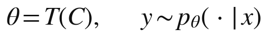
用这些记号，来源链的要求可以说成：存在 C 的一个有限子集，其中每一篇文献都可以指认，并且足以说明 y。下面三节说明，这样的子集一般不存在。
二、训练层：多对一，一对多
训练把语料变成参数，这个过程在两个方向上都是弥散的。一篇文献在训练中会轻微地调整几乎所有的参数；一个参数又被无数篇文献反复调整过。这就是神经网络研究中所说的分布式表示：一个概念不是存放在某一个位置，而是分布在大量单元的联合状态之中。
近年的研究让这幅图景更加清楚。2022 年，研究者用简化模型展示了“叠加”现象：神经网络能够表示比它的神经元数目多得多的特征，许多特征重叠地存储在同一批神经元中。2023 年到 2024 年，可解释性研究从一个实际投入使用的大模型中提取出数以百万计可以解释的特征，其中有一个特征专门对应旧金山的金门大桥。这是理解模型内部的重要进展；但要注意，这样的特征是一个概念，是从无数谈论金门大桥的文本中凝结出来的，它并不指向其中任何一篇。
训练还是随机的。参数的初始值是随机设定的，训练数据被随机打乱后分批输入，同样的语料用不同的随机种子训练，会得到不同的参数。所以，参数不是某几篇文献的函数，而是一整段训练过程的产物。
结果是：从参数出发，不存在一个把某个参数片段指回某一篇文献的逆映射。一条知识在参数里没有单独的地址。
三、生成层：一次输出依赖整个分布
生成是一个词元接一个词元进行的。每一步，模型都要让上下文穿过它的每一层，由注意力机制在全部上下文之间分配权重，最后得到下一个词元的概率分布，再从中抽取一个。抽取带有随机性，同一个问题问两次，答案可能不同。
不妨做一个思想实验。假如从语料中删去某一篇文献，重新训练模型，再问同一个问题，输出会变吗？对绝大多数单篇文献来说，变化微乎其微；把成千上万篇相关的文献一起删去，输出才会明显改变。影响被摊薄在大量文献之上，找不到一个有限的、最小的集合，使得删去它就改变输出、而其余的都无关紧要。用记号来说，输出依赖整个参数，参数依赖整个语料：
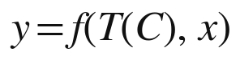
只有在一种退化的情形下，有限子集才足以说明输出：模型逐字复现了训练中的某段文本。那时它是在存储与检索，而不是在生成。第十三章会专门讨论这种情形。
还要补充一点：发生器本身也在不断变化。服务提供者会定期发布新版本，调整参数，修改系统设置；同一个问题，三个月前与今天得到的回答可能不同，而三个月前的那个模型版本，可能已经无法再访问。传统的来源一经出版便固定下来，读者十年后仍然可以翻到同一页、核对同一句话；发生器的“来源”本身是流动的，连它自己都回不到过去。这使来源链的“可核对”条件，在时间的维度上也失效了。
四、对话层：用户的条件卷入
现实中，知识很少在一问一答中产生，而是在多轮对话中逐步成形。用户提出问题，模型给出回答，用户指出不对的地方，补充材料，追问细节，模型再修正、再展开。每一轮，上下文都吸收了用户的新输入，也吸收了模型上一轮的输出：
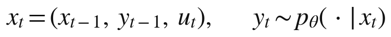
其中 u 表示用户在第 t 轮的输入。最终得到的知识，是整条对话轨迹的产物。它的条件里有模型的东西，有用户的东西，还有两者此前共同生出的东西。要把“哪些是模型给的、哪些是用户给的”干净地分开，就像要从一段爵士乐的即兴合奏中分出每一位乐手的贡献：每一位的下一句，都是被另一位的上一句改变过的。
用户带进对话的，也不只是问题的字面。他为什么这样问，关心哪些方面，能接受什么样的回答，都来自他自己走过的差异序列与所处的条件结构，也就是本书所说的 D 与 E。同一个模型，面对不同的人，会生出不同的知识。对话中产生的新知识，是模型与用户的共同发生。
当对话扩展为智能体的工作流程，情形更加复杂。一个智能体可能调用搜索、运行代码、查询数据库，再把中间结果交给另一个智能体；最终交付给用户的结论，混合了检索到的事实、计算出的数字、多个模型的推理和用户的多次指示。来源链在这张由许多过程织成的网里，进一步散开。
五、一个完整的例子
把三个层次放进一个具体的例子，看得更清楚。一位中学数学教师要准备一节关于概率的公开课。她打开一个大模型，开始对话。
训练层早在她开口之前就已完成。模型读过的教科书、教案、论文、论坛讨论与习题集，数量远远超过任何一位教师一生能读到的；其中关于概率教学的一切，已经化为参数中难以分辨的规律：哪些概念学生容易混淆，哪些例子最能说明问题，哪些活动在课堂上行得通，哪些会乱成一团。
生成层在她提出第一个问题时发生。她说明了年级、课时和教学目标，模型给出一份教案初稿，其中有一个掷骰子的实验、一组由浅入深的问题，以及一段关于频率与概率之间关系的讲解。这些内容没有一项是从某一份教案里整段取来的，却处处可以看到大量教案的影子。
对话层随即展开。她告诉模型，班上不少学生分数运算还不熟练，掷骰子的实验容易变成单纯的数数；她希望换一个学生熟悉的情境，而且整节课要在四十五分钟内完成。模型修改了初稿，把实验换成一个抽签分组的游戏，并调整了问题的梯度。她又指出其中一个问题的表述会引起误解，模型再次修改。经过六七轮往返，教案定稿。
现在问：定稿中的那个抽签游戏，来自哪里？它不在任何一份教案里，是模型在她给出的约束之下生成的；那些约束来自她对自己学生的了解，也就是她的 D 与 E；而模型之所以能生成它，又依赖于参数中凝结的无数教学经验。这个设计中，模型贡献了多少、教师贡献了多少，无法干净地切分；模型贡献的那一部分来自哪几份材料，更无从指认。这节课如果讲得好，荣誉应当归谁：教师，模型，还是写过那些教案的无数同行？
对照一下她在十年前会怎样备课。她会翻阅两三本教材和几份优秀教案，从中挑出一个活动，按自己班级的情况改一改，在教案上注明“参考某某版教材某页”。那时来源链是完整的：活动有出处，改动归她自己，荣誉与责任都清清楚楚。今天，同一件事的来源链在三个层次上同时断开了。
这个例子里没有任何人隐藏什么，也没有任何人做错什么。不可连接不是某种不当行为的结果，而是这种知识生产方式的常态。
六、三层叠加
表 12-1 三个层次的不可连接
| 层次 | 输入 | 输出 | 来源链为什么断 | 最多能追溯到什么 |
|---|---|---|---|---|
| 训练层 | 语料 C | 参数 θ | 多对一的压缩、分布式表示、随机的训练过程 | 统计意义上的影响估计 |
| 生成层 | 参数与上下文 | 输出 y | 每一个词元都依赖整个参数与整个上下文 | 被放进上下文的文档，如果有的话 |
| 对话层 | 多轮的用户输入与模型输出 | 最终的知识 | 用户、模型与二者此前的共同产物交织在一起 | 对话记录本身 |
三个层次中，任何一层单独就足以在大多数情况下使来源链断开；三层叠加，来源链的另一端就不再有可以指认的端点。这就是“不可连接”之所以是结构性的原因：它不是某一层的技术缺陷，而是三层同时成立的结果。
这里需要区分三个容易混淆的说法。“未追溯”是指链存在，只是还没有人去追：一篇抄袭的文章，只要找到原文，链就接上了。“被隐藏”是指链存在，但有人刻意不让别人看到：商业秘密就是如此。“不可连接”是指链不以链的形式存在：不是没有人去追，也不是有人藏了起来，而是在这种生产方式里，另一端根本不是一个可以指认的对象。
还需要一个限定。本书并不是说，大模型的每一个输出都不可连接。模型逐字复现的名言、检索进上下文的段落、明确引用的公式，都可以连回来源。本书的判断针对的是新知识：在模型与用户共同生成新东西的时刻，来源链不可连接。可追溯的，正是不新的部分；新的部分，恰恰不可追溯。
对这个判断，最有力的质疑来自技术本身：检索增强可以给出处，数据归因可以追溯训练样本，水印可以标记生成内容，可解释性研究可以打开模型内部。下一章逐一回应这些质疑。
归因的极限
“不可连接”是一个强判断。对它最有力的质疑来自技术本身：研究者和工程师已经发展出一系列办法，试图为大模型的输出找回来源。本章逐一考察其中六种：检索增强、训练数据归因、逐字复现的检测、水印与内容标识、可解释性研究，以及服务日志。每一种都是真实而有价值的进展，每一种都能恢复某些东西；本章要说明的是，它们都不能为新生成的知识恢复一条有限、可以核对的来源链。
一、检索增强：事后补画的一段链
检索增强生成在回答旁边列出参考文档，看上去把来源链接了回来。但这些参考文档说明的，是哪些文档被放进了上下文；它们没有说明参数中的哪些知识参与了生成，也不保证回答中的每一句话都得到了文档的支持。
后一点已有实证。2023 年，斯坦福大学的研究者审查了四个流行的生成式搜索引擎，发现平均只有大约一半的生成句子得到了所附引文的完整支持，而所附引文中也只有大约四分之三真正支持了与之相连的句子。即便是看得见的那一段链，也有相当一部分是装饰性的。
更根本的问题在于结构。即使每一句话都有文档支持，回答仍然是文档与参数共同生成的：模型决定了从文档中取什么、舍什么，怎样把几篇文档的内容组合起来，从中推出了什么文档里没有明说的结论。所附的出处，只是来源链的一段事后补画；综合本身，没有来源。
二、训练数据归因：统计的影子
第二种办法直接瞄准训练数据：一个输出，受到哪些训练样本的影响最大？2017 年，科赫与梁提出用影响函数来估计，如果把某个训练样本的权重调大一点，模型对某个输入的预测会怎样变化。2023 年，Anthropic 的研究者把这种方法推广到参数规模达五百二十亿的大模型上。他们发现，影响通常分散在大量训练序列之中；而且模型越大，影响最大的训练序列与输出之间的关系就越抽象，往往是概念上的相关，而不是字面上的重合。此外还有数据模型、TRAK 等方法，从不同的角度做统计意义上的归因。
这些研究很有价值，但它们的产出是一份按影响大小排列的清单，而不是一条链。它们依赖近似计算，计算代价随模型规模急剧上升；它们估计的是某个训练样本对某个输出的概率有多大影响，而不是“这条知识来自哪里”；影响最大的样本往往有成千上万，边界模糊，彼此之间也没有先后承接的关系。经济学家与计算机科学家还提出过用“数据沙普利值”来估算每条数据对模型的贡献，以便给数据提供者补偿。这类方法将来可能在集体补偿中派上用场，本书第十编会回到这一点；但它们分配的是统计意义上的份额，不是沿链发放的承认。
近似的影子不是链。
三、逐字复现：例外证明规则
第三种情形是模型逐字复现了训练文本。2021 年，卡利尼等人从 GPT-2 中提取出了训练数据中的原文片段，包括姓名、电话号码与代码；2023 年，他们的后续研究发现，模型越大、一段文本在训练数据中重复得越多、提示给得越长，模型就越容易逐字背出它。2023 年底，《纽约时报》起诉 OpenAI 与微软，诉状中列举了模型复现报道原文的例子。
这些片段当然可以连回来源，因为在那一刻，模型退回了存储与检索。围绕逐字复现的版权诉讼之所以能够提起，正是因为这里存在一条可以指认的链。可是逐字复现恰恰不是生成新知识：在真正生成新东西的时刻，模型不是在背诵。可追溯的，正是不新的部分。
四、水印与内容标识：标记容器，而非谱系
第四种办法是给生成内容打上标记。2021 年，多家科技与媒体公司发起内容来源与真实性联盟，制定“内容凭证”标准，记录一件数字内容是由什么工具、在什么时间生成或编辑的；2023 年，谷歌推出为生成内容嵌入水印的技术。立法也在跟进：欧盟《人工智能法》第五十条要求生成式人工智能的提供者以机器可读的方式标记其输出；中国于 2025 年发布《人工智能生成合成内容标识办法》，自同年 9 月 1 日起施行，要求对生成合成内容添加显式与隐式标识。
这些办法回答的问题是：这段内容是不是人工智能生成的？由哪个系统生成？什么时候生成？它们记录的是一件产品的出厂信息，而不是其中知识的谱系。就像瓶子上的标签说明了这瓶水在哪家工厂灌装，却说不出水来自哪些泉眼。标识对于追责与存证很有用，本书第十编将讨论这一点；但它不是来源链。
五、可解释性：概念，而非出处
第五种办法是打开模型内部。上一章提到，可解释性研究已经能从大模型中提取出数以百万计的特征，并能通过放大某个特征来改变模型的行为：2024 年，研究者曾把“金门大桥”特征放大，使模型在各种话题上都不由自主地谈起这座桥。这类研究还在识别模型内部的“回路”，即多个特征协同完成某项计算的方式。
可解释性告诉我们，模型在生成某个输出时激活了哪些概念，经过了什么样的计算路径。它回答的是“模型在想什么”，而不是“模型在用谁的知识”。一个概念特征是无数文本凝结出来的，它本身不携带出处。还要补充一点：让模型用文字解释自己的推理，也不能替代可解释性研究，因为研究表明，模型给出的文字解释并不总能忠实反映它实际的计算过程。
六、日志：记录对话，而非来源
第六种办法最朴素：服务提供者保存着对话日志，记录了用户的每一次输入、模型的每一次输出和时间戳。日志完整地保存了对话层的轨迹，可以证明某个输出是在某次对话中、某个时刻生成的，这在纠纷处理与存证中很有价值。但日志记录的是说了什么，而不是模型一方说的东西来自哪里。模型那一端，在日志里只是一连串输出，其背后的参数与语料仍然不可分解。
七、假如归因大获成功
不妨做一个更大胆的假设：假如将来的归因技术大获成功，模型每给出一个回答，都能同时附上一份清单，列出对这个回答影响最大的一万份训练文档，以及每一份的影响权重。来源链是不是就恢复了？
仍然没有，理由有三。
第一，一万份文档的加权清单不是一条链，而是一张弥散的网。来源链要求有限、可指认、足以说明、可核对；一万份文档各占万分之几的影响，既不能说明这个回答是怎样来的，也无法据此分配承认。没有人会因为自己的文章对某个回答贡献了万分之三的影响，就被当作这个回答的作者。这就像给一条河里的每一滴水标注它来自哪一场雨，标得再精确，也说不清这条河是谁的。
第二，即使训练层的影响被完整地估计出来，对话层依然无法切分。上一章的例子里，抽签游戏的设计有相当一部分来自教师给出的约束，而这一部分不在任何一份训练文档里。
第三，也是对本书最重要的一点：私有的方法根本不在归因技术能够触及的地方。持有者的方法文件不在训练语料里，而在上下文、检索库或附加参数里；用户看到的只是回答，接触不到方法文件，也就无从对它做任何归因。能对方法做归因的，只有掌握发生器内部的人，也就是持有者本人。
这并不是说统计意义上的归因毫无用处。音乐版权的集体管理提供了一个参照：各国的著作权集体管理组织在分配使用费时，常常依据对电台播放、现场演出等使用情况的统计与抽样，而不是逐次追溯每一次使用。当逐条追溯的成本太高时，社会会退而用统计来分配收益。训练数据的提供者将来或许也会以类似的方式得到集体补偿。但那是统计分配，不是来源链的恢复。
还有一条路，是在架构上强制可追溯：让系统只从经过登记的文献中摘取句子，每一句都附上出处。这样的系统确实恢复了来源链，但它恢复来源链的办法，是放弃生成、退回检索。可追溯性与生成能力之间存在一种取舍，这是本书判断不可连接为结构性的又一个理由。
八、不是暂时做不到
表 13-1 六种归因办法能恢复什么，不能恢复什么
| 办法 | 能恢复什么 | 不能恢复什么 |
|---|---|---|
| 检索增强 | 被放进上下文的文档 | 参数中参与生成的知识；综合本身 |
| 训练数据归因 | 训练样本影响的统计估计 | 有限、可核对的链 |
| 逐字复现检测 | 被复现片段的原文 | 新生成部分的来源 |
| 水印与内容标识 | 内容由哪个系统、何时生成 | 内容中知识的谱系 |
| 可解释性研究 | 被激活的概念与回路 | 概念所凝结的具体文献 |
| 服务日志 | 对话的完整记录 | 模型一方贡献的来源 |
六种办法各有所长，合起来能恢复的，是统计的影子、局部的片段、产品的标签与对话的记录。它们都没有恢复来源链公理所要求的那种东西：一条有限、可以指认、足以说明、可以核对的链。原因不在于这些技术还不够成熟，而在于链的另一端在这种生产方式中不是一个对象：它是一个由整个语料塑造、又与用户条件纠缠在一起的分布。
本书愿意把这个判断押在明处。如果将来出现一种可靠的技术，能够为任意生成结果重建一条有限、可以核对的来源链，包括把结果连回某个私有的方法，那么本书的核心前提就会崩溃。第十二编把它列为第一条证伪条件。本书的判断是，这样的技术要么会迫使模型退回检索系统，从而丧失生成的能力，要么只能给出更精细的统计估计，而统计估计不是链。
来源链断了。下面两章分别从链的两端看这次断裂的后果：先看接收知识的一端，再看持有知识的一端。
无源：接收者一端
来源链断了，从接收知识的一端看，得到的知识是“无源”的：用户无法把它连回任何一个持有者。本章考察无源在四个领域里已经造成的后果：引证规范、检测技术、作者身份与学位制度。最后说明，无源并不只是损失，它也让来源链的三种功能不得不迁往新的位置。
一、不能注明的出处
2023 年初，ChatGPT 上线不过两个月，学术出版界就开始制定规则。《自然》在 1 月宣布，大型语言模型不能被列为论文作者，因为作者必须对作品承担责任，而模型无法承担；使用了这类工具的，应当在方法或致谢部分说明。《科学》在同月采取了更严格的立场，一度规定未经编辑许可不得使用人工智能工具生成的文本，同年 11 月才放宽为在披露的前提下允许使用。出版伦理委员会与国际医学期刊编辑委员会也先后表明，人工智能工具不能成为作者，使用必须披露。美国心理学会的引文格式则给出了引用聊天机器人的写法：写明开发公司、年份和模型名称。
这些规则有一个共同点：它们把模型当作一种需要披露的工具，而不是一个可以引用的来源。引文格式里写的是公司与模型的名字，也就是容器，而不是谱系。传统引文的功能，是让读者可以回到出处去核对；可是读者拿着“某公司，某年，某模型”这条引文，找不到任何可以核对的东西，因为同一个模型面对不同的提问，会给出不同的回答，而那次对话本身并不公开。一些规范于是建议作者附上提示词与对话记录。在这里，日志开始代替出处。
这一变化还有更深的含义。传统引文假定，被引用的东西是一个稳定的、公开的对象，任何读者都可以找到它。对话记录却是私人的：它属于提问者与服务者，未经许可，别人看不到。当日志代替出处，知识的可核对性就从一种公共的属性，变成了一种需要授权才能行使的权利。谁有权查看一段对话，查看之后能否公开，对话被服务者保存多久，这些问题在来源链时代根本不存在，现在却必须回答。本书第十编讨论存证与司法时，将回到这一点。
二、检测的困境
既然无法注明出处，能不能把生成的内容检测出来？2023 年 1 月，OpenAI 推出了一个识别人工智能生成文本的分类器，同年 7 月就因准确率过低而撤下。同年，斯坦福大学的研究者发现，多种流行的检测工具把非英语母语者所写的托福作文大量误判为人工智能生成，平均误判率超过六成。检测工具只能给出概率，会误伤，而且只要把文本改写几遍，就能轻易绕过。
对照一下查重，就能看清问题所在。查重之所以有效，是因为存在一个可以比对的原文库：一段文字如果抄自某篇文献，就能在库里找到那篇文献。这是来源链公理在技术上的直接体现。生成的文本不在任何库里，检测工具无从比对，只能根据文风去猜。维护来源链的旧机器，在这里失去了它的对象。
三、作者身份：从谱系转向过程
法律也在作者身份的问题上陷入了困难。2023 年 2 月，美国版权局就一部名为《黎明的扎利亚》的漫画作出决定：作者自己写的文字以及对图文的编排可以登记，由图像生成工具产生的图片不予保护。同年 8 月，美国一家联邦地区法院在塞勒诉版权局一案中裁定，没有人类作者的作品不受版权保护，2025 年 3 月，上诉法院维持了这一判决。2025 年 1 月，美国版权局发布关于可版权性的报告，认为仅凭提示词一般不足以使使用者成为作者，受保护的是人类在表达上的贡献。
中国的司法实践走出了一条不同的路。2023 年 11 月，北京互联网法院在一起案件中认定，原告在使用生成工具时通过设计提示词、调整参数、挑选结果等方式投入了智力劳动，生成的图片体现了原告的独创性表达，应当受到著作权保护。
两种判断方向不同，却有一个共同的特征：法院都没有试图追溯生成内容的知识来源，而是转而审查人在生成过程中做了什么。作者身份的判定依据，从“这件作品源自谁”的谱系，转向了“谁在这个过程中贡献了什么”的过程证据，比如提示词、修改记录与选择过程。
还需要指出，这些争议讨论的是生成物归谁，而本书更关心的是另一件事：参与生成的那些私有的方法与源头归谁。前者是产出的归属，后者是源头的归属。下一章将说明，后者在断链之后，第一次可以被牢牢地留在持有者手里。
四、学位与能力证明
第七章说过，学位证明的是一条来源链：一个人在哪里、跟谁、按什么课程学到了什么。作业、论文与考试，是这条链的末端，用一件件作品来证明学生确实接收了知识。
当学生可以用大模型生成作业与论文，这个末端就断了：一件作品不再能证明它的提交者掌握了其中的知识。各国的大学正在调整评估方式，增加口试、课堂写作、答辩与过程档案，减少可以在课外完成的书面作业。2023 年，澳大利亚高等教育质量与标准署发布了题为《人工智能时代的评估改革》的指导文件，主张评估应当更多地考察学生在真实情境中的表现与过程。
这不只是防作弊的问题。它意味着，能力的证明正在从“他接收过什么”转向“他当场能发生什么”。本书第十一编将回到这个转向，并说明它为什么与私有知识的诞生是同一件事的两面。
五、错误由谁负责
来源链的归属功能不只分配荣誉，也分配责任。无源之后，一个错误的回答该由谁负责？第一批判例已经给出了方向。
2022 年底，一位加拿大乘客在祖母去世后，向加拿大航空公司网站上的聊天机器人询问丧亲优惠票价。聊天机器人告诉他，可以先按正常价格购票，事后在规定期限内申请退还差价。他照做了，申请退款时却被告知，公司的政策并不允许事后申请。2024 年 2 月，加拿大不列颠哥伦比亚省的民事纠纷裁判所作出裁决：航空公司应当对其网站上的全部信息负责，无论这些信息出现在静态页面上，还是由聊天机器人给出。航空公司主张聊天机器人是一个应对自身行为负责的独立实体，这一主张被明确驳回，公司被判赔偿差价及相关费用。
这个案件的意义在于它的推理方式。裁判所没有追问聊天机器人的错误回答来自哪一份训练文档，也没有追问是哪一段指令出了问题，而是直接把责任放在了把这个回答交给顾客的那一方。下一节将把这种推理概括为：归属从链上转向出口。
立法也在朝这个方向移动。2024 年，欧盟通过了新的产品责任指令，明确把软件，包括人工智能系统，纳入“产品”的范围，使受害者可以向提供者主张赔偿。保险业也开始回应：据报道，2025 年伦敦劳合社市场上出现了专门承保人工智能聊天机器人错误所致损失的保险产品。
专业服务早就有类似的规则。医生对自己开出的处方负责，律师对自己出具的意见负责，无论他们的知识最初学自哪本教科书、哪位老师。知识服务的出口责任，是把这条古老的职业规则扩展到了发生器身上，只是规模大得多：一位医生一天看几十个病人，一个发生器一天可能回答几百万个问题。在无源的知识世界里，责任不再沿着来源链逐环回溯，而是停在出口处。对知识服务的提供者来说，这意味着一种新的伦理：你交出去的每一个发生都由你负责，即使它的来源连你自己也说不清。
六、无源的另一面：知识成为公用事业
无源并不只是损失。对普通用户来说，它意味着无需知道知识从哪里来，也能用上知识。电力的普及提供了一个类比：电网把发电厂与用户隔开，一户人家打开电灯时，不需要知道电来自哪一座电厂，也不需要自己懂得发电。大模型把知识的使用者与知识的来源隔开，使专门知识第一次像电一样，从墙上的插座里就能取用。
但来源链的三种功能不会凭空消失，它们必须迁往新的位置。
担保从来源转向检验。既然无法凭出处判断一条知识是否可信，就只能凭检验：代码能不能运行，证明能不能核对，建议在实践中是否有效，一个服务长期的表现记录是否可靠。本书把它称为“检验担保”，与旧秩序中的“来源担保”相对。
归属从链上转向出口。既然无法沿链把责任分配给每一个贡献者，就只能由把知识交到用户手里的那一方承担责任。现代产品责任法提供了一个参照：消费者买到一件有缺陷的产品，可以直接向制造者追责，而不必追溯每一个零件出自哪家供应商。知识服务的责任，将主要落在出口处的服务提供者身上。
传递从交出转向发生。用户得到的不再是知识本身，而是知识的发生，这一点将在第四编展开。
检验担保对普通用户提出了很高的要求：并不是每个人都能核对一段代码、一份合同或一个医疗建议。所以，检验也会像来源一样，形成自己的专业分工与制度。第三方测评机构用标准化的题目考察模型的表现，审计机构检查一个服务的流程与记录，行业组织为特定领域的服务制定资格要求。2023 年，美国国家标准与技术研究院发布了人工智能风险管理框架；同年年底，国际标准化组织与国际电工委员会发布了人工智能管理体系标准。这些框架与标准本身并不检验某一个回答，它们检验的是提供回答的那一方，是否有能力、有程序为自己的出口负责。
换句话说，在无源的知识世界里，信任并没有消失，而是换了对象：人们不再信任一个回答的来源，而是信任给出回答的那个服务者，以及为这个服务者作保的检验制度。这与现代社会信任一家医院、一家银行或一个品牌的方式并无二致。知识的可信，正在从一种学术的属性，变成一种服务的属性。
表 14-1 来源链三种功能的迁移
| 功能 | 来源链之下 | 无源之后 |
|---|---|---|
| 归属 | 沿链分配给每一个贡献者 | 由出口处的服务提供者依合同与法律承担 |
| 担保 | 来源担保：出处、权威、同行评审 | 检验担保：测试、核验、长期服务记录 |
| 传递 | 交出知识本身 | 交付知识的发生 |
从接收者一端看，断链是一场失去来源的变故；从持有者一端看，同一个断裂却呈现出完全不同的面貌。下一章转向那一端。
封存：持有者一端
同一次断裂，从持有知识的一端看，是另一番景象。持有者把自己的知识放进生成过程，别人只能看到生成出来的结果，却无法由结果反推出他放进去的东西。对接收者来说是“无源”，对持有者来说就是“封存”。本章考察封存的内容、它的价值、它的边界，以及它与商业秘密的根本区别。
一、发生器里装着什么
本书把一个人用来为他人生产知识的系统称为“发生器”。一个典型的发生器由两部分组成：一部分是公共可得的基底模型，另一部分是持有者自己加上去的东西。后者至少包括五类。
第一类是方法文件，也就是写给模型执行的指令：怎样分析一类问题，依据什么判准，按什么步骤，避开哪些常见的错误。第二类是私有的语料库，供模型在回答时检索，其中可能有持有者多年积累的笔记、案例与数据。第三类是微调得到的权重。2021 年提出的低秩适配方法，使人们可以在不改动基底模型的前提下，以很低的成本训练一小组附加参数，让模型带上特定的风格或能力。第四类是工作流程与智能体的配置：先做什么、后做什么，调用哪些工具，在哪些环节设置检查。第五类是评价标准：什么样的回答算好，什么样的回答必须重来，这些判断往往是持有者最难言传、也最有价值的东西。
用户与这样一个发生器对话，得到的每一个回答都带着这五类东西的印记，却不包含它们本身。第十二章已经说明，回答是参数、上下文与对话条件共同生成的；持有者加进去的方法、语料与判准，溶进了具体的回答，像盐溶进了汤。用户可以拿走汤，却拿不走配方；即使他收集了许多碗汤，得到的也只是配方在若干具体问题上的投影。
二、封存为什么值钱
封存的价值，已经在市场上显现出来。2022 年，出现了专门买卖提示词的在线市场；2024 年 1 月，OpenAI 推出了应用商店，开发者可以发布定制的对话应用，其内部指令对使用者不可见。许多企业把自己的系统提示词、知识库与智能体配置当作核心资产来保护，限制接触范围，与员工签订保密协议。人们愿意为看不见的指令付钱，也愿意花力气把它们藏好，这本身就说明，被封存在发生器里的东西是有价值的。
封存也并非无懈可击。2023 年 2 月，有用户通过精心设计的提问，诱使微软的必应聊天机器人透露了它的内部代号与部分指令；早期不少定制应用的指令，也能被几句简单的提问套出来。这类“提示词泄露”说明，锁是需要维护的，本书第十二编将把锁的安全列为一项专门的风险。
还有一个方向相反的例子值得注意。2024 年 8 月，Anthropic 开始公开其面向消费者的应用所使用的系统提示词。这是持有者主动把封存的东西交给公众。本书第六编将说明，这种主动的释放，正是私有知识循环中不可缺少的一环：封存是一种可以选择的状态，而不是一种被迫的处境。
三、蒸馏：封存的边界
封存的真正边界在于蒸馏。早在 2016 年，就有研究者演示了如何通过反复调用一个机器学习服务的预测接口，训练出一个行为相近的替身模型。“知识蒸馏”这个说法本身，来自 2015 年辛顿等人的一篇论文：用一个大模型的输出去训练一个小模型，让小模型学到大模型的行为。
2023 年 3 月，斯坦福大学的研究者发布了一个名为 Alpaca 的模型：他们用一个商业模型生成了五万两千条指令与回答，用来微调一个七十亿参数的开源模型，据报告总成本不到六百美元，初步评估中表现与那个商业模型相近。这个实验说明，一般性的能力可以被相当便宜地模仿。主要的模型服务商因此在服务条款中禁止用户用输出去开发竞争模型；2025 年初，还有报道称 OpenAI 怀疑有竞争者利用其模型输出进行蒸馏。
但要看清蒸馏能复制什么。它复制的是发生器在被采样的那些问题上的行为，也就是配方在这些问题上的投影。对一般性的能力来说，常见问题的投影已经足够；对一套深植于持有者自身条件的方法来说，它的价值往往在于怎样应对新的、具体的、此前没有出现过的情形，而这些情形无法被预先采样。何况，持有者的源头还在不断生长：服务中的反馈回到持有者手中，改写他的方法，替身模仿到的永远是过去的投影。
蒸馏的成本本身也在变化，而且朝两个方向变化。一方面，模型调用的价格持续下降，大规模采样变得越来越便宜，这使模仿更容易了。另一方面，服务者可以限制调用频率，识别异常的批量请求，在输出中加入水印，在服务条款中明令禁止蒸馏，这些手段又在抬高模仿的成本。封存与蒸馏之间，因此不是一次性的较量，而是一场持续的攻防。持有者不能指望一把永远打不开的锁，他能指望的，是在别人打开之前，自己已经走到了下一扇门后。
所以，封存不是绝对的。它更像一道成本门槛：模仿需要大量调用、大量计算和时间，而在模仿追上之前，持有者已经走到了前面。本书将在第六编把这一点概括为：锁的寿命大约等于领先的寿命，并且受到蒸馏成本的限制。
四、封存与商业秘密
乍看之下，封存在发生器里的方法就是一种商业秘密。在法律上，如果持有者采取了合理的保密措施，它们确实可以作为商业秘密受到保护。但两者在经济上有一个根本的区别。
可口可乐的配方是封存的，它为公司生产饮料，却不为任何外人生产知识；每一瓶卖出去的饮料，都是一件可以拿去化验的样本。封存在发生器里的方法同样是封存的，它却为无数外人生产知识；每一个回答也都是一件可以拿去蒸馏的样本。区别在于：饮料是同一个配方的重复产物，化验得越多，配方越清楚；回答是方法在千差万别的问题上的各自发生，每一个都以提问者的特定条件为前提，收集再多，也只是方法的一部分投影。
更重要的是，商业秘密面临的是一个二选一：要么保密而不为他人生产知识，要么为他人生产知识而不再保密。第九章表 9-1 的前四行，没有一行能同时做到两者。封存在发生器里的方法第一次做到了：保密，而仍然为他人生产。
至于系统性的蒸馏在法律上属于正当的反向工程，还是属于通过违反服务条款而不正当地获取商业秘密，目前各国尚无定论。本书第十编将讨论，针对“发生能力”的法律保护应当怎样设计。
五、谁在封存：从企业到个人
封存的能力，最先落在大企业手里。2023 年 3 月，OpenAI 发布 GPT-4 的技术报告，以竞争环境与安全为由，没有披露模型的架构、规模、训练所用的算力、数据集的构成与训练方法等细节。一家企业耗费巨资训练出的模型，其权重本身就是被封存的源头：用户每天与它对话，却无从得知它是怎样造出来的。同年 7 月，Meta 发布开放权重的 Llama 2，选择了几乎相反的做法，把权重交给公众下载使用。封存与释放，最初都是大企业之间的战略选择。
但封存的能力没有停在企业层面。2023 年 3 月，OpenAI 把新一代对话模型的调用价格定为此前同类模型的十分之一，此后各家模型的调用成本持续下降；开放权重的模型可以在个人电脑上运行；低秩适配让微调的成本降到了个人承受得起的程度；各种智能体框架让普通人也能把方法文件、私有语料与工作流程组装成一个发生器。一位研究者、一位律师、一位教师，都可以把自己多年形成的方法封存在发生器里，只把服务交给别人。
企业封存的与个人封存的，又有所不同。企业封存的主要是一般能力：一个模型会写作、会编程、会翻译，这些能力对谁都有用。个人封存的主要是特定的判断：一位资深编辑怎样判断一部书稿，一位老中医怎样权衡一张方子，一位工程师怎样诊断一类故障，这些判断深植于他们各自走过的道路与所处的条件之中。前者可以用大量调用来模仿，后者却不容易。本书第六编将说明，这一区别与私有知识的两个部分密切相关。
这是一次能力的下沉。在工业文明中，封存知识而又用它为他人生产，需要一家企业：需要雇人，需要组织，需要一整套保密制度。现在，一个人加上他的智能体就能做到。第五编将专门讨论这次下沉的意义：它是知识第一次可以成为个人财产的组织条件。
六、封存的复利：来自使用的知识
封存在发生器里的，不只是持有者事先放进去的东西，还有发生器在使用中积累起来的东西。
一个发生器每服务一次，就会留下一条记录：用户问了什么，得到了什么回答，接着又追问了什么，最后是满意地离开，还是反复纠正、表示不满。这些记录汇集起来，构成一种特殊的知识：人们实际需要什么，方法在哪些情形下好用，在哪些情形下失灵。它不在任何公开的文献里，只在服务者手中；服务越多，积累越厚。
搜索引擎的历史说明了这类知识的分量。2024 年 8 月，美国一家联邦地区法院在司法部诉谷歌一案中裁定，谷歌在一般搜索服务市场上非法维持了垄断地位。判决讨论了规模带来的优势：更多的查询与点击数据，使谷歌能够不断改进搜索质量，而竞争者难以获得同等规模的数据。2025 年 9 月，法院在救济判决中没有要求谷歌剥离浏览器业务，却要求它向符合条件的竞争者提供部分搜索索引与用户交互数据。
这个案件从两个方向印证了本书的判断。一方面，来自使用的知识是一种被封存的、会自我强化的资产：它越用越多，越多越好用，这就是封存的复利。另一方面，当这种资产过度集中、妨碍竞争时，法律可能强制它部分释放。封存与释放之间的边界，最终要由制度来划定。本书第六编与第十编将分别从所有者与制度的角度回到这个问题。
对个人所有者来说，封存的复利同样存在，只是规模小得多，也更具体。一位教师的发生器服务了几百名学生之后，他会知道哪些讲法最容易被误解，哪些练习最能暴露问题，哪些学生在哪一步最容易卡住。这些知识回到他自己的方法中，使方法更加精细，而这个过程完全发生在私密的一侧：学生得到的是更好的辅导，却看不到辅导背后的方法怎样一轮一轮地改进。第三十章将把这个过程称为“回流”，并说明它为什么使私有知识越用越深。
七、断裂的双重性
表 15-1 断链的两端
| 一端 | 看见什么 | 失去什么 | 得到什么 | 需要什么新制度 |
|---|---|---|---|---|
| 接收者 | 发生出来的结果 | 可以注明、可以核对的出处 | 无需知道来源就能使用的知识 | 检验担保；出口责任 |
| 持有者 | 源头仍在自己手里 | 沿链而来的署名与引用 | 保密而仍能为他人生产 | 确权；存证；释放 |
同一个断裂，一端是无源，一端是封存。接收者失去了出处，持有者保住了源头；两者合在一起，第一次使一种新的安排成为可能：知识为他人生产，却不必交到他人手里。
第三编到此结束。它论证了三件事。第一，大模型是第一种在正常运转中溶解来源的知识技术；第二，这种溶解发生在训练、生成与对话三个层次上，是结构性的，现有的各种归因技术都不能为新生成的知识恢复来源链；第三，断裂有两面，一面是接收者的无源，一面是持有者的封存。
第二编说过，来源链公理的核心推论是生产力与公开的捆绑。现在公理失效了，捆绑还在吗？第四编将回答：捆绑第一次被解开了。知识的生产力与知识的公开，从此可以分离。
解绑：生产力与公开的分离
锁人的历史
第二编说明，在来源链公理之下，知识的生产力与知识的公开捆绑在一起；第三编说明，大模型使这条公理失效。本编要论证这次失效最重要的后果：捆绑被解开了，知识的生产力第一次可以与公开相分离。
在进入正面的论证之前，先回顾一段漫长的历史。人类并不是没有试过把知识留在一道边界之内、只让它的好处流出去。行会、城邦、王朝与国家都试过，而且试了一千年。它们的办法几乎只有一种：把掌握知识的人锁住。本章讲的就是这段锁人的历史，以及它为什么总是失败。
一、行会：守不住的秘密
中世纪欧洲的手工业由行会组织。一门手艺分为学徒、帮工与师傅三级：学徒住在师傅家里，跟着师傅干活，学满年限才能出师；英格兰 1563 年的《工匠法》规定，学徒期一般为七年。学徒入门时往往要发誓守护行会的秘密，行会章程则限制师傅收徒的人数，禁止把手艺教给行外的人。城市授予行会在本地经营某一行业的特权，行会以此维持垄断。
可是行会守不住秘密，原因就在它自身的运转方式里。手艺要用，就得有人会；要有人会，就得教人。经济史学家爱泼斯坦指出，行会在历史上的一项重要功能，恰恰是培训技术工人并促进技术的传播：学徒出师成为帮工之后，常常要到各地游历做工，在不同城市的作坊之间流动，德语地区至今仍保留着帮工游历的传统。帮工走到哪里，手艺就带到哪里。一个靠培养人来运用知识的制度，注定要随着人的流动而泄漏知识。
二、穆拉诺：一座岛上的秘密
中世纪到近代早期，威尼斯的玻璃是欧洲最负盛名的奢侈品。1291 年，威尼斯把城中的玻璃作坊集中迁到了潟湖中的穆拉诺岛，官方的理由是防止火灾，实际效果是把整个行业与它的工匠集中在一处，便于管控。穆拉诺的玻璃匠人享有特殊的待遇，据记载，他们的女儿可以与威尼斯贵族通婚；但他们被禁止擅自离开共和国，出逃者会受到惩罚。
特权与禁令并用，也没能把秘密锁在岛上。十六、十七世纪，出走的威尼斯工匠把技艺带到了安特卫普、阿姆斯特丹、伦敦等地，欧洲各地出现了大量“威尼斯风格”的玻璃。1665 年，法国财政大臣科尔贝尔从威尼斯招募镜子工匠，在巴黎建立了皇家镜子制造厂，这家工厂后来发展为今天的圣戈班集团。二十年后，凡尔赛宫镜厅装上了法国自己制造的镜子。据记载，威尼斯方面曾设法让那些工匠回国，但法国已经学会了。要复制一个行业，最直接的办法就是把掌握它的人请过来。
三、丝绸与瓷器：藏在帽子和信里的秘密
丝绸的故事在东西方都有流传。玄奘在《大唐西域记》中记载了瞿萨旦那国，即今天的和田的一个传说：该国向东方求取蚕种而不得，因为东方的国家严禁蚕种出境；国王于是求娶东方的公主，公主把蚕种藏在帽子的棉絮里带出了关，蚕桑从此在那里扎根。在西方，拜占庭史家普罗科匹厄斯记载，六世纪中叶有僧侣把蚕卵藏在空心手杖里带到君士坦丁堡，献给皇帝查士丁尼。无论传说的细节是否可靠，两个故事讲的是同一件事：禁令管得住货物，管不住人。
瓷器的秘密走得更曲折。十八世纪初，在景德镇生活多年的法国耶稣会士殷弘绪先后于 1712 年与 1722 年写信回欧洲，详细描述了瓷器的原料与烧制工艺。几乎同时，在德意志的萨克森，被选侯“强力王”奥古斯特留在身边的炼金术士伯特格尔，与学者契恩豪斯合作，独立研制出了欧洲的硬质瓷器；1710 年，迈森瓷厂在一座城堡里成立。为了保密，工人要宣誓，伯特格尔本人长期处于看守之下。可是不到十年，迈森的一位窑工就出走维也纳，帮助那里新建的瓷厂烧出了瓷器。此后几十年，欧洲各地的瓷厂纷纷出现。
藏在帽子里的蚕种，藏在手杖里的蚕卵，写在信里的工艺，跟着窑工出走的配方：知识的载体不同，出路却只有两条，要么随人，要么随文。
四、工业革命：禁令与出逃
工业革命同样是一部知识出走的历史。十八世纪初，意大利皮埃蒙特的丝线捻丝机是当地严加保护的秘密。英国人约翰·隆贝在 1716 年前后到意大利学习捻丝技术，回国后与兄弟一起在德比建起了一座水力捻丝厂，于 1718 年取得专利。这座工厂常被视为英国最早的现代工厂之一。
轮到英国领先时，它也开始锁人。第十章已经提到，英国在 1719 年立法禁止熟练工匠移居国外，此后又禁止纺织机械出口，这些禁令直到十九世纪二三十年代以后才陆续废除。然而禁令挡不住记忆。除了斯莱特，另一个著名的例子是美国商人洛厄尔：他在 1810 年至 1812 年间访问英国的纺织厂，把动力织布机的结构记在心里，回国后与合伙人在 1813 年创办波士顿制造公司，建起了美国最早把纺纱与织布集中在同一座工厂里的企业之一。历史学家杰里米在研究英美之间纺织技术传播的著作中，详细记录了大量英国工匠移民怎样把技术带到了大西洋彼岸。
五、二十世纪：国家、企业与人
到了二十世纪，锁人的主体从城邦与行会变成了国家与企业，规模变得更大，逻辑却一如既往。
二战结束时，美国通过“回形针行动”把约一千六百名德国科学家与工程师带到美国，其中包括后来主导土星五号火箭研制的冯·布劳恩；苏联在 1946 年也把两千多名德国专家连同他们的家属一起迁往苏联。两个超级大国争夺的，与其说是图纸，不如说是装着图纸的头脑。原子弹的秘密同样随人外泄：参与曼哈顿计划的物理学家富克斯把关键资料交给了苏联，1950 年他在英国认罪。
企业之间的故事更为日常。1957 年，八位年轻的研究人员集体离开肖克利半导体实验室，创办了仙童半导体，后来被称为“叛逆八人”；仙童又先后孵化出英特尔等一批公司。硅谷的成长，在很大程度上就是人才流动的历史。企业的回应是竞业限制与保密协议，国家的回应是出口管制中的“视同出口”规则与对签证的审查，这些在第二章与第十章已经讨论过。
即使在人工智能的时代，这种逻辑也没有消失。2025 年，据报道，一些科技公司为争夺顶尖的人工智能研究人员，开出了数以亿美元计的薪酬待遇。前沿知识中有相当一部分仍然装在少数人的头脑里，争夺这些人，就是争夺这些知识。这提醒我们：私密共同体并没有让人的头脑变得不重要；它改变的，是那些已经被写进发生器的知识的处境。
六、东方的锁人：匠籍与官营作坊
中国历史上锁人的办法更为直接：把工匠编入专门的户籍，世代为官府服役。元代把大批工匠编为“匠户”；明代承袭并发展为匠籍制度，匠户世代相承，不得随意脱籍，轮流到京城或地方的官营作坊服役。景德镇的御窑厂、江南的官营织造，都依靠这样的制度，把最好的手艺与掌握手艺的人控制在官府手中。
景德镇御窑的管理尤其严密。御用瓷器的式样由宫廷颁下，烧造的工匠受到严格的管束，不合格的落选品要被打碎掩埋，不得流入民间。考古工作者在景德镇御窑遗址中发掘出大量被刻意打碎的明代瓷片，正是这种管控的见证。
这种制度同样没能维持下去。匠户逃亡、怠工的情况屡见不鲜，官府的管控成本越来越高。明成化年间，朝廷开始允许轮班的工匠以缴纳银两代替服役；到了嘉靖年间，轮班匠役普遍改为征银。清初顺治年间，匠籍被正式废除。工匠获得了较大的人身自由，手艺也更多地流入了民间的作坊与市场。
从穆拉诺的禁令到明代的匠籍，东西方的做法各不相同，结局却惊人地相似：用制度把人锁住，成本越来越高，效果越来越差，最后不得不放手。原因始终是同一个：知识长在人身上，而人是活的。
七、锁人不如锁住发生
把一千年的历史排在一起，可以看到一个清楚的模式。
表 16-1 锁人的历史
| 时代 | 锁住知识的办法 | 知识怎样漏出去 |
|---|---|---|
| 中世纪行会 | 学徒誓约、限制授徒、城市特权 | 出师的学徒与游历的帮工 |
| 威尼斯玻璃业 | 集中于穆拉诺岛、禁止工匠出境 | 出逃与被招募的工匠 |
| 丝绸与瓷器 | 禁止蚕种出境、看守窑工 | 藏在帽子与手杖里的蚕种、传教士的书信、出走的窑工 |
| 工业革命 | 禁止工匠移民、禁止机器出口 | 记在脑子里的机器结构 |
| 二十世纪 | 保密审查、竞业限制、出口管制 | 跳槽、移民、间谍 |
| 私密共同体 | 方法封存在发生器中，由智能体执行 | 蒸馏与安全漏洞，而不是人员流动 |
前五行的办法各不相同，失败的原因却是同一个：要运用知识，就需要掌握知识的人；而人会学习，会流动，会出走，会被收买，也会老去。锁人，是在锁一个本来就锁不住的东西。
表的最后一行是新的。在私密共同体里，执行知识的成员是智能体。它们运行方法，却不会带着方法出走；它们不会跳槽，不会移民，不会被竞争对手挖走，也不会退休。当然，存放方法的文件与参数可能被窃取，这是一个需要认真对待的安全问题，第十二编将专门讨论；但它是一个安全问题，而不是一个人员流动问题。一千年来，人类第一次可以让秘密的知识为外人服务，而不必经过会离开的人。
近年的一件事可以说明这一点。2023 年 2 月，Meta 把 LLaMA 模型的权重有限地提供给经过审核的研究者，一周多之后，权重就在一个匿名论坛上被公开传播。这次泄漏不是因为哪位研究者跳了槽，而是因为存放权重的文件被人复制了出去。锁的对象从人变成了文件与参数，锁的难题也就从防止人员流动，变成了防止复制与窃取。后者同样不容易，但它是一个可以用访问控制、加密与审计来应对的技术与制度问题，而不像锁人那样，要与人的自由和流动本身相对抗。
锁人之所以失败，是因为人必须在场。发生器之所以成功，是因为它让人不必在场。下一章将从经济学的角度说明，这一变化怎样拆开了知识市场上最著名的一个难题。
阿罗悖论的拆解
第九章介绍过阿罗信息悖论：买方在得到信息之前，无法判断它值多少钱；而一旦得到了信息，他就已经无偿拥有了它。这个悖论是知识市场的根本障碍，它解释了为什么知识很难作为知识本身直接出售。本章要论证，发生器第一次把这个悖论拆成了两半，并且分别解决了它们。这是知识经济在微观层面上成为可能的关键一步。
一、悖论的原貌
阿罗的论述针对的是一般的“信息”，但在现实中，悖论以许多具体的形式出现。一位发明者想把一个尚未申请专利的点子卖给一家企业：他不说清楚，企业不肯出价；他说清楚了，企业可以不付钱就自己去做。一位顾问想向客户证明自己的方法值得聘请：他演示得太少，客户看不出价值；演示得太多，客户就学会了。
美国的影视业为这个悖论留下了一批判例。1949 年前后，一位作家向导演比利·怀尔德的秘书口述了一个故事构想，条件是如果被采用就要付钱；后来怀尔德拍出的电影与这个构想颇为相似。1956 年，加利福尼亚州最高法院在德斯尼诉怀尔德案中认定，在这种情形下，当事人之间可能成立一份默示合同：点子是在“采用即付费”的条件下透露的，采用了就应当付费。这个判决为点子的提供者开了一扇门，但门很窄：此后许多同类诉讼都因为难以证明存在付费的约定而失败，各大制片公司也纷纷规定，不接受未经经纪人递交的剧本与创意，以免卷入纠纷。
法律能做的，只是在透露之前先签好合同。可合同解决不了悖论的另一半：对方在签合同之前，仍然不知道这个点子值不值得签。
二、人类找到过的六种部分办法
几百年来，人们发展出了若干办法，每一种都部分地绕开了悖论，也各自付出了代价。
表 17-1 绕开阿罗悖论的传统办法
| 办法 | 怎样绕开“不看就无法估值” | 怎样绕开“一看就被拿走” | 代价 |
|---|---|---|---|
| 声誉担保 | 买方凭名声、学历与履历估值，不必先看 | 不透露内容 | 新人难以进入；名声未必可靠 |
| 咨询代替出售 | 买方看到的是应用的结果 | 方法留在顾问头脑中 | 顾问必须亲自在场，按时间收费 |
| 师徒制 | 学徒在多年学习中逐步看到价值 | 以多年劳动偿付，并以誓约约束 | 周期漫长；学成之后知识随人而去 |
| 保密协议 | 在协议保护下向买方透露 | 以违约责任阻止挪用 | 难以证明挪用；只能约束签约者 |
| 专利 | 公开的说明书使价值可以判断 | 以法定排他权阻止使用 | 必须公开；期满归公；可被绕开设计 |
| 源代码托管 | 买方使用软件的结果，不看代码 | 代码交由第三方保管，特定条件下才交付 | 只适用于软件；托管本身有成本 |
这些办法有一个共同的特征：它们要么依靠持有者本人的持续在场，要么依靠法律与合同的事后救济，要么依靠第三方的居间保管。它们都没有改变悖论本身的结构：在来源链公理之下，“让买方看到价值”与“把知识交给买方”几乎是同一个动作。
三、发生器拆开了悖论的两半
发生器改变的，正是这个结构。悖论由两半组成，发生器分别处理了它们。
前一半说，买方不看就无法估值。发生器的回答是：让买方用。买方可以把自己的问题交给发生器，看它给出什么样的回答；可以用自己手头已有答案的旧问题去测试它，看它答得对不对；可以试用一个月，再决定是否继续付费。经济学家纳尔逊在 1970 年区分过两类商品：一类是购买前通过查看就能判断质量的“搜寻品”，一类是只有使用之后才能判断质量的“经验品”。发生器把知识变成了一种经验品：它的价值通过使用来显现，而不必通过透露来显现。
后一半说，买方一看就无偿得到了知识。发生器的回答是：买方看到的只是发生，不是源头。第十五章已经说明，用户从回答中无法反推出方法；他可以试用一百次、一千次，得到一百个、一千个有用的回答，却仍然没有学会方法本身。
一个具体的例子。一家律师事务所考虑采购一个审阅合同的发生器。它把过去一年处理过的两百份合同交给发生器审阅，再把发生器指出的风险与自己律师当年的结论逐一对照，很快就能判断这个发生器是否可靠、能节省多少工时。评估结束时，事务所清楚地知道了发生器值多少钱，却对发生器背后的审阅方法、判准与规则一无所知。估值完成了，占有没有发生。
四、一个简单的形式化说明
把上面的道理写得稍微精确一些。设持有者的方法为 s，用户的问题为 q，发生器给出的回答为 g 在方法 s 下作用于 q 的结果。买方关心的是回答对他有多大用处，记为 u。他试用 n 次之后，可以这样估计发生器的价值：
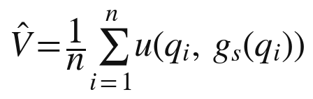
按照大数定律，试用的次数越多，这个估计就越准确，误差大致随着试用次数的平方根而缩小。可是从这 n 组问题与回答中反推出方法 s，却是另一回事：同样的这些回答，可以由许许多多不同的方法产生；问题的空间几乎是无限的，而方法的价值恰恰在于它怎样应对尚未被问到的问题。估计价值只需要回答的平均效果，识别方法却需要回答背后的整个函数。前者随试用而收敛，后者不会。
这就是悖论被拆开的数学含义：估值与识别，在发生器这里是两件难度截然不同的事。
五、从卖信息到卖调用
悖论一旦被拆开，知识就可以用一种新的方式出售：不卖知识本身，而卖知识的调用。
这种方式并非凭空出现。第十章提到的“软件即服务”，已经让软件从卖安装盘变成了卖订阅；大模型服务商按调用的词元数量计费，让算力与模型能力变成了可以计量的服务。知识的持有者可以沿用同样的形式：按次计费，按月订阅，按结果分成，或者几种方式组合。一位税务专家的发生器可以按每份申报表收费；一位语言教师的发生器可以按月订阅；一位工程师的故障诊断发生器，可以按为客户节省的停机时间分成。
按结果计费的例子已经出现。一家客户服务软件公司为它的人工智能客服定价时，不按调用次数，而按“成功解决一个客户问题”收费，每解决一次收取约一美元。买方为结果付费，卖方为结果负责；至于结果是怎样生成的，买方既看不到，也不需要看到。这种定价方式把第三节所说的“估值与占有分开”直接写进了价格：买方只为被验证过的价值付钱。
这是知识第一次可以以一种接近普通商品的方式进入市场：价格可以事先标明，质量可以通过试用判断，交易可以反复进行，而卖方不会因为交易而失去他所出售的东西的源头。一个厚实的知识市场，第一次有了微观基础。
六、合同的新形态
估值与占有分开之后，知识交易的合同也随之改变。在来源链公理之下，知识交易的核心合同是许可协议与保密协议：许可协议规定对方可以怎样使用已经交给他的知识，保密协议规定对方不得把已经交给他的知识泄露出去。两者都以“知识已经交出”为前提，管的是交出之后的事。
发生器交易的合同，管的是另一件事：对方怎样调用一个他永远拿不到的东西。今天的模型服务条款已经显示出这类合同的基本条款：调用的额度与频率，服务的可用性与响应时间，输出内容归谁所有，数据是否会被用于训练，以及禁止用输出去开发竞争性的模型。知识服务的合同还会增加一些新的条款：服务在哪些领域可以使用、在哪些领域不得使用，出错时怎样补救，所有者在多长时间内保证方法的更新，以及源头在什么条件下可以释放或托管。
这类合同的重心，从“保护已经交出的知识”转向了“规定调用的条件”。它更像电力公司与用户之间的供电合同，或者软件服务商与客户之间的服务等级协议，而不像传统的技术转让合同。这一转变看似技术性，实则意义深远：知识交易第一次可以不以交出知识为前提，合同法也就第一次需要为“不交出的知识”设计规则。
还要注意合同的规模。传统的技术转让合同一份一份地谈判，动辄数月；发生器的服务条款却由用户点击同意，一天之内可能被成千上万的用户接受。标准化的合同大大降低了知识交易的成本，使小额、高频的知识交易第一次变得可行。科斯把交易成本看作决定组织与市场边界的关键因素；知识交易成本的急剧下降，是第五编讨论个人怎样独立部署知识时的一个重要前提。本书第十编还将讨论，这些合同规则怎样进入法律。
七、悖论的残余
说悖论被拆开，并不是说它彻底消失了。至少还有四处残余，需要新的制度来处理。
第一是蒸馏。买方如果大规模调用，收集足够多的回答，就可能训练出一个近似的替身。第十五章已经讨论过，这是封存的真正边界，锁的寿命因此受到蒸馏成本的限制。
第二是尾部风险。试用能够揭示发生器的平均表现，却很难揭示罕见情形下的失误。一个医疗建议的发生器在九千九百九十九次试用中都表现良好，第一万次却可能犯下严重的错误。这类风险需要第十四章所说的出口责任、第三方检验与保险来分担。
第三是资产转让。如果买方想买下的不是发生器的调用，而是发生器本身，也就是连同源头一起购买，悖论就会在资产交易的层面重新出现：买方要做尽职调查，就得看到源头；看到了源头，交易就失去了一半的意义。企业并购中早有应对类似问题的做法，例如由双方之外的“净室”团队在严格限制下审阅敏感信息，只向买方报告结论。知识资产的转让，同样需要这类居间的检验制度，本书第十编将专门讨论。
第四是对封存之物的信任。持有者说自己的发生器里装着一套经过多年检验的方法，买方如何相信？试用只能检验回答，不能检验关于源头的陈述。这同样需要第三方的审计与认证。
八、知识市场的微观基础
阿罗悖论曾经是知识经济学中最坚硬的一块石头。它解释了为什么知识不能像普通商品那样买卖，也解释了为什么二十世纪的知识生产必须依赖资助、采购、专利与保密这些间接的安排。
发生器没有推翻阿罗的推理，而是改变了推理的前提。阿罗假定，知识要被使用，就必须被交出；发生器使知识可以被使用而不被交出。前提一变，悖论就从一堵墙变成了一道门槛：估值可以通过试用完成，占有可以通过封存维持，剩下的残余则需要新的制度来处理。下一章转向完成这一切的那个东西本身：发生器作为一种新的知识载体，究竟是什么。
发生器：知识的新载体
前两章从历史与经济两个角度说明了同一件事：知识第一次可以在不交出自身的前提下为他人生产。完成这件事的，是本书称为“发生器”的东西。本章要给发生器一个清楚的界定，把它放进知识载体的谱系中比较，说明它为什么做到了“可用不可见”，并讨论它的所有权结构与经济特性。
一、什么是发生器
本书所说的发生器，是一个能够针对使用者的具体问题与条件生成知识，而把生成所依据的源头封存在所有者一侧的系统。它有三个特征。
第一，它为他人生产而不需要所有者在场。所有者可以在睡觉、旅行、做别的研究，发生器照样在回答问题。这是它与顾问、医生、教师等传统知识服务者的根本区别。
第二，它交出发生而封存源头。使用者得到的是回答，而不是方法；他可以用回答，却不能由回答反推出方法。这是它与书籍、论文、专利等传统知识载体的根本区别。
第三，它的每一次输出都是一次各不相同的发生。它不是把同一份内容复制给所有人，而是针对每一个问题、每一组条件生成不同的回答。这是它与一般软件、数据库的根本区别：软件按既定规则运行，同样的输入得到同样的输出；发生器在使用者的具体条件中生成新的知识。
三个特征合在一起，使发生器成为一种此前不存在的知识载体。
二、发生器的构造
第十五章已经列出，一个典型的发生器由两部分组成：公共可得的基底模型，以及所有者加上去的增量，包括方法文件、私有语料、微调权重、工作流程与评价标准。可以打一个比方：基底模型像一台通用的发动机，谁都可以租用；所有者的增量像一套专门的传动与控制系统，决定了这台发动机被用来做什么、怎样做、做到什么程度。
这个构造有一个重要的含义：发生器的价值主要来自增量，而不是基底。同一个基底模型，被一千个人装上一千套不同的增量，就成了一千个不同的发生器。基底越普及、越便宜，人人手里的基底就越相同，决定一个发生器与另一个发生器之间差别的，就越是它的增量。本书第六编将说明，增量中最不可替代的部分，是只在所有者自身条件中成立的“我的知识”。
三、知识载体的谱系
把发生器放进人类知识载体的谱系中，它的位置会看得更清楚。
表 18-1 知识载体的比较
| 载体 | 知识怎样到达他人 | 能否排他 | 是否需要持有者在场 | 典型的收益方式 |
|---|---|---|---|---|
| 人的身体 | 讲授、示范、亲自服务 | 能，不教就不传 | 需要 | 按时间收费 |
| 文本：手稿与印刷品 | 复制与阅读 | 难，复制即扩散 | 不需要 | 版权、销量 |
| 数字文件与数据库 | 下载与检索 | 难，可以无限复制 | 不需要 | 许可、订阅 |
| 软件即服务 | 调用程序，得到运行结果 | 能 | 不需要 | 订阅 |
| 发生器 | 调用发生，得到针对个人条件的新知识 | 能 | 不需要 | 服务收益 |
表中的前三行，对应着来源链公理之下知识的全部载体：身体能排他，却离不开持有者；文本与数字文件能离开持有者，却无法排他。第四行的软件即服务第一次做到了既能排他、又不需要持有者在场，但它交付的是程序按既定规则运行的结果，而不是知识在新情境中的发生。第五行的发生器，把第四行的结构用到了知识本身上。
四、可用不可见
在隐私计算领域，有一个广为流传的说法，叫“数据可用不可见”：让数据参与计算，而不让计算的一方看到数据本身。实现这个目标的技术已经发展了四十多年。1982 年，姚期智提出了著名的“百万富翁问题”：两个富翁想知道谁更富有，却都不愿透露自己的财产数额，能否做到？这开启了安全多方计算的研究。2009 年，金特里构造出第一个全同态加密方案，使人们可以在加密的数据上直接做计算。2017 年前后，谷歌推广了联邦学习：模型到数据所在的地方去训练，数据本身不离开设备。今天，一些模型服务还在硬件的可信执行环境中运行，使运营者也看不到其中处理的内容。
这些技术实现“可用不可见”，靠的是密码学与硬件的精巧设计。发生器实现“知识可用不可见”，靠的却是另一种东西：生成本身的结构。第十二章已经说明，回答是参数、上下文与对话条件共同生成的，方法溶进了回答，却不以可以辨认的形式出现在回答中。不需要加密，方法就已经看不见了。当然，两者也可以叠加：一个把方法文件放在可信执行环境里运行的发生器，连服务器的管理者也无法读取其中的方法，封存会更加牢固。
五、输出电力而不输出电站
第四章曾用过一个比喻：知识可以留在一道边界之内，只把它的发生输出到边界之外，就像输出电力而不输出电站。这个比喻值得展开。
1882 年，爱迪生在纽约珍珠街建成了早期的商业中央发电站之一，开始向附近的用户供电。此后几十年，以英萨尔为代表的企业家把电力发展成了一种公用事业：大型电站集中发电，电网把电输送到千家万户，用户按用电量付费。一户人家从此不必自备发电机，也不必懂得发电，打开开关就能用电。电站的所有权留在电力公司手里，流出去的只是电。2008 年，作家卡尔在《大转换》一书中用电力的历史来比喻计算的演变：计算正在像电力一样，从每家自备的机器变成集中供应的服务。
发生器把这个类比推进到了知识。知识的“电站”，也就是方法与源头，留在所有者手里；流出去的是知识的“电”，也就是一次次的发生。用户不必懂得方法，也能用上方法的结果。
但这个类比也有它的界限。电是同质的，一度电与另一度电毫无区别；知识的发生却是异质的，每一次发生都针对不同的问题与条件。电的价格可以按度统一计量，知识的价值却很难用统一的单位来衡量，本书第七编将专门讨论这个问题。电站不会因为发出了更多的电而变得更好，发生器却会因为服务了更多的人而学到更多，第十五章所说的“封存的复利”，在电力行业中没有对应物。
六、发生器的四层所有权
一个运转中的发生器，至少涉及四方：提供基底模型的一方，提供运行与分发渠道的平台，拥有增量的所有者，以及使用发生器的用户。他们各自拥有什么？
表 18-2 发生器的所有权结构
| 参与者 | 拥有什么 | 以什么方式获得收益 |
|---|---|---|
| 基底提供者 | 基底模型的权重与训练成果 | 按调用或订阅收费 |
| 平台 | 运行环境、分发渠道与用户关系 | 抽成、服务费或广告 |
| 所有者 | 方法、私有语料、微调权重、流程与判准 | 服务收益 |
| 用户 | 每一次发生得到的回答 | 回答带来的用处 |
最后一行值得注意。主要的模型服务商在服务条款中通常规定，在服务商与用户之间，输出内容归用户所有。也就是说，发生出来的东西交给了用户，源头留在了所有者手里，基底仍然属于基底提供者。这种分层的所有权，在此前的知识载体中从未出现过：一本书卖出去，书归读者，内容的版权归作者，但读者读懂了书，内容中的知识也就到了读者手里；发生器卖出的回答归用户，而回答背后的方法始终不离开所有者。
这个结构也埋下了一个隐患：所有者的增量建立在别人的基底之上。基底提供者调整价格、修改条款、停止服务，都会直接影响所有者的资产。第九编与第十二编将讨论这种“地基是租来的”处境。
七、发生器的经济特性
发生器最引人注目的经济特性，是固定成本与边际成本的极端不对称。
一套值得封存的方法，往往需要所有者多年乃至几十年的积累；把它整理成方法文件、配上语料与流程，也需要相当的投入。这是固定成本。一旦发生器建成，每多服务一次，只需要支付一次调用的算力费用，与一位专家花一天时间相比几乎可以忽略不计。这是边际成本。
这种不对称正是罗默所说的非竞争性知识的特征：一旦生产出来，就可以被无数次使用而不减少，因而带来规模报酬递增。第四章指出，在罗默的框架里，非竞争性的知识要获得排他性，只能依靠专利，而专利以公开为代价；个人能拥有的，只有竞争性的、长在身上的人力资本。发生器第一次让非竞争性的知识在不公开的前提下获得了排他性，而且可以由个人拥有。第四章表 4-1 中缺失的那个位置，由此被填上了：非竞争、可排他、不公开、归个人所有。
这种经济特性也有它的另一面。规模报酬递增往往导致赢家通吃：一个在某个领域表现最好的发生器，可以同时服务几乎所有的用户，边际成本又极低，第二名、第三名很难生存。在工业时代，一位名医的病人数量受到他的时间限制，同一座城市里可以有许多位医生各自执业；在发生器的时代，同一个领域可能只剩下少数几个占据绝大多数用户的发生器。本书第九编讨论市场结构、第十二编讨论风险时，将回到这个问题：私有知识的所有者之间，怎样既有竞争，又不至于一家独大。
八、一个发生器的生命周期
把发生器看作一种资产，就要看它怎样出生、成长、衰老和传承。一个发生器的生命周期，大致可以分为五个阶段。
第一是铸成。所有者把自己的方法写成方法文件，整理私有语料，设计工作流程与评价标准，在基底模型上搭建起发生器。这一步投入的，主要是所有者多年积累的知识，以及把它们整理成机器可以执行的形式所花的功夫。
第二是检验。所有者用大量已知答案的问题测试发生器，找出它答错的地方，修改方法与流程，直到发生器的表现达到他自己的标准。这一步决定了发生器能否被别人信任。
第三是服务。发生器开始为用户提供服务，所有者获得收益，同时积累第十五章所说的“来自使用的知识”。
第四是更新。所有者根据服务中的反馈与自己新的研究，不断修改发生器；基底模型升级时，还要把增量迁移到新的基底上，重新检验。一个不再更新的发生器，领先会被逐渐追平。
第五是交接。所有者可以释放发生器的源头，使之进入公共领域；可以把发生器转让给他人；也可以在身后把它作为遗产留给继承人。
这五个阶段，分别对应着本书后面几编的主题：铸成与检验，涉及第六编所说的两部分知识；服务，涉及第七、九编所说的计值与市场；更新，涉及第九编所说的基底与增量的关系；交接，涉及第十编所说的释放与继承制度。一个发生器的生命周期，就是私有知识作为一种资产的完整轨迹。
九、发生器不是什么
为了避免误解，最后说明发生器不是什么。
它不是人。它没有自己的利益，不承担法律责任，它的每一次发生都由所有者在出口处负责。它也不是一件商品，因为它不以复制品的形式出售，用户买到的是调用，而不是发生器本身。它不只是软件，因为它承载的不是固定的规则，而是所有者的判断，并在每一个新的问题上重新运用这些判断。它更不是商业秘密，因为商业秘密只能为持有者自己生产，而发生器的全部意义，在于为他人生产。
发生器是知识的一种新的存在方式的载体。下一章讨论它带来的一个直接后果：知识开始长出边界。
知识长出边界
第十章说明，“知识没有国界”并不是知识的本性，而是来源链公理的推论：知识要发挥作用就必须以人或文本的形式传递，而人与文本都会越过边界。现在，知识可以只把发生输出到边界之外，把源头留在边界之内。于是，知识开始长出边界。本章考察这些边界在三个尺度上的出现：个人、企业与国家，并讨论由此产生的一种新的知识贸易。
一、边界的三个尺度
边界不是国家的专利。只要一个主体能够把知识的源头留在自己一侧、只把发生交给外部，他就拥有了一道知识的边界。这样的主体可以是一个人、一家企业、一个学派、一个行业协会，也可以是一个国家。
三个尺度上的边界，性质各不相同。个人的边界，是私密共同体的边界，它由所有者本人与他的智能体群体构成，第六编将专门讨论。企业的边界，是组织把自己的知识留在墙内、只把服务交给员工与客户的边界。国家的边界，是一个政治共同体对知识的跨境流动施加控制的边界。三者同时出现，互相交织：一个人的发生器可能运行在一家企业的平台上，而这家企业的服务又受到所在国家的法律约束。
二、企业：把知识留在墙内
企业最先感受到了知识边界的问题，而且最初是从泄漏的一面感受到的。2023 年春天，据报道，韩国三星电子的几位工程师在使用一款公共聊天机器人时，把公司的部分源代码与会议内容输入了对话框。消息传出后，三星在同年 5 月限制员工在公司设备上使用这类公共生成式人工智能服务。许多银行、律师事务所与科技企业也采取了类似的措施。
企业很快发现，禁止不是长久之计，建墙才是。此后几年，企业级的模型服务普遍承诺不使用客户的数据训练模型，提供数据不出企业网络的私有部署，允许企业把内部文档接入检索系统，在墙内搭建自己的知识发生器。员工向这个发生器提问，得到结合了公司内部知识的回答；这些内部知识不出墙，也不进入基底模型提供者的训练数据。
这是企业知识管理的一次转向。第二章提到，二十世纪九十年代的知识管理运动，试图把员工头脑中的默会知识编码成企业的显性知识，写进手册与数据库；可是手册与数据库一旦被员工读到，知识就又回到了人的头脑里，可以被带走。墙内的发生器不同：员工可以用它，却不必读懂它背后的全部材料；员工离职时带走的，是他用过的一些回答，而不是生成这些回答的整套知识。企业第一次可以让知识为全体员工服务，而不必把知识完整地交给每一个员工。
三、国家：从管住人到管住发生器
第十章回顾过国家给知识设立边界的历史：禁止工匠移民，禁止机器出口，巴黎统筹委员会与瓦森纳安排，以及“视同出口”规则。它们的共同点是管住人与文本，而人与文本总是会越界。
发生器的出现，使国家第一次可以管住另一种东西。2025 年 1 月，美国商务部发布“人工智能扩散框架”，其中一项内容，是把训练算力超过一定门槛的先进闭源模型的权重列为出口管制对象，同时按国家分级限制先进芯片的出口。同年 5 月，商务部宣布撤销这一规则。规则本身没有生效多久，但它标志着一个转变：国家开始把“装着知识的发生器”当作可以设边界的对象来对待，而不只是管住掌握知识的人。
中国的制度建设从另一个方向划出了边界。2022 年施行的《数据出境安全评估办法》，对重要数据与大量个人信息的出境设立了安全评估程序；2024 年发布的《促进和规范数据跨境流动规定》，又对部分情形作了放宽与细化。2023 年施行的《生成式人工智能服务管理暂行办法》，要求向境内公众提供生成式人工智能服务的提供者履行相应的安全评估与备案义务。这些制度的对象，不再是工匠与机器，而是数据、模型与服务。
欧盟走的是另一条路：不禁止出境，而是要求披露。按照《人工智能法》，通用人工智能模型的提供者自 2025 年 8 月起须履行一系列义务，包括编制技术文档、制定遵守版权法的政策，并公开一份关于训练内容的足够详细的摘要；同年 7 月，欧盟委员会发布了配套的行为准则与摘要模板。这是用法律要求源头的一部分被公开，可以看作一种强制的部分释放。封存与释放之间的边界，在这里由立法者划定。
四、中间尺度：机构、学派与专业共同体
在个人与国家之间，还有许多中间尺度的主体，它们同样可以划出知识的边界。
2023 年 3 月，彭博公司发布了一个名为 BloombergGPT 的金融领域大模型，参数规模约五百亿，训练数据中有相当一部分来自彭博多年积累的专有金融数据。这是一个典型的机构尺度的例子：一家机构把自己独有的数据与知识封存在模型里，只把服务提供给自己的客户。
再往下看，一个学术学派、一个专业学会、一个行业协会，也可以做同样的事。一个医学专科学会可以把成员们多年积累的诊疗经验与共识整理成一个发生器，只向会员开放；一群研究同一问题的学者，可以共同维护一个发生器，把各自的方法汇集其中，对外提供服务，对内分享收益。这类共同体的边界，有点像经济学家布坎南所说的俱乐部：成员共享一件不因多人使用而减少的东西，并通过成员资格把外人排除在外。不同之处在于，这里的成员分享的是知识的发生，外人也可以按条件购买服务，但谁都拿不到源头。
中间尺度的边界，可能是知识经济文明中最活跃的一层。它比个人的边界更有规模，比国家的边界更灵活，也最接近历史上行会与学派的形态。只不过，这一次的“行会”不必再锁住它的工匠。
五、主权人工智能
在国家层面，一个新的说法迅速流行起来：主权人工智能。它的大意是，一个国家应当拥有自己的算力、数据与模型，而不是完全依赖他国企业提供的服务。2024 年前后，一些芯片与云计算企业的负责人在世界各地推广这一理念；2025 年 2 月，欧盟宣布“投资人工智能”计划，拟动员约两千亿欧元投资人工智能，其中包括建设大型算力设施。许多国家都在扶持本国的大模型。
主权人工智能的逻辑，是本章所说的知识边界在国家尺度上的体现。在来源链公理之下，一个国家即使拥有世界一流的科学家，他们的论文一经发表，也就成了全人类的公共知识；国家能留住的是人，留不住知识。现在，一个国家可以让自己的模型与发生器为全世界提供服务，而把源头留在本国；也可以因为依赖他国的发生器，而使本国的知识生产受制于人。知识主权，从一句口号变成了一项实务。
六、跨境发生：知识贸易的新形态
知识长出边界，并不意味着知识停止流动，而是意味着它换了一种方式流动。
世界贸易组织的《服务贸易总协定》把服务贸易分为四种模式：一是跨境交付，服务本身越过国境，比如通过网络提供的咨询；二是境外消费，消费者到服务提供国去消费，比如出国留学；三是商业存在，服务提供者到消费国设立机构；四是自然人流动，服务提供者本人到消费国去提供服务。
在来源链公理之下，知识的跨境流动主要依靠第四种与第二种模式，也就是人的流动：专家出国讲学、工程师出国工作、学生出国留学，再加上书籍与论文的传播。发生器使第一种模式第一次可以大规模地承载知识本身的服务：人不必移动，书不必寄送，知识的发生通过网络越过国境，源头留在原地。据世界贸易组织估计，2023 年全球可以通过数字方式交付的服务出口已超过四万亿美元，占全部服务出口的一半以上。这里面有多少是知识的发生，目前还没有统计口径，但它的份额只会越来越大。
衡量一个国家的知识地位，将不再只看它发表了多少论文、拥有多少专利，还要看它为世界提供了多少知识的发生，以及它自己的知识生产在多大程度上依赖别国的发生器。
七、不移民的出口
这一变化还有一个很少被注意到的后果，与人才的流动有关。
二十世纪，发展中国家长期面临人才外流的困境。一个国家培养出优秀的医生、工程师与科学家，他们却往往流向发达国家，因为那里有更好的实验室、更高的收入与更大的市场。知识要发挥作用，就得跟着人走，人走了，知识也走了。
发生器提供了另一种可能：一位在本国工作的专家，可以通过自己的发生器为全世界的用户提供服务，而不必移居国外。他的知识以发生的形式出口，他本人和他的源头都留在本国。这是一种不移民的出口。
这种可能并非全无先例。二十世纪九十年代以来，印度的信息技术服务外包业通过跨境交付不断成长，出口规模已接近两千亿美元，证明了服务可以不随人移动而出口。只不过那时出口的，仍然是工程师的时间；发生器出口的，则是知识的发生，所有者不必为每一次服务付出时间。
当然，这种可能要成为现实，还有许多条件：基底模型与算力的获取，支付与结算的渠道，跨境服务的法律环境，以及语言与市场的门槛。基底模型与算力高度集中在少数国家和企业手中，这一点可能削弱不移民出口的好处，使知识的所有者虽然留在本国，却仍然依赖别国的地基。本书第九编讨论基底与增量的关系时，将回到这个问题。
八、边界的代价
知识长出边界，也有它的代价，必须如实说明。
第一是碎片化。如果各国都为数据、模型与服务设立严格的边界，全球的知识网络可能分裂成若干互不相通的区域，人们有时称之为“分裂的互联网”。每个区域都要重复建设自己的模型与服务，这会浪费大量资源。
第二是科学交流的减少。科学的进步依赖于不同国家、不同学派之间的相互批评与检验。如果越来越多的知识以封存的方式存在，只以服务的形式跨境，科学共同体赖以运转的公开批评就可能减弱。
第三是新的依赖。一个国家、一家企业或一个人，如果长期依赖别人的发生器，就可能在不知不觉中失去自己生产知识的能力，也就失去了讨价还价的余地。
这些代价说明，边界不是越多越好、越严越好。本书的判断是，知识长出边界是来源链断裂之后的结构趋势，不是某一个国家或某一家企业的政策选择；但边界画在哪里、画得多宽，却是可以选择的，而且必须审慎地选择。下一章讨论，在边界成为可能之后，“开放”应当被重新理解成什么。
开放的重新定义
“知识无国界”的前提被抽掉之后，开放还剩下什么？这是本编必须回答的最后一个问题。如果知识可以封存而仍然为他人生产，开放是否就成了一种过时的理想？本章的回答是：开放没有过时，但它的含义必须被重新界定。在来源链公理之下，开放只有一种含义，就是把知识本身交出来；在新的知识秩序中，开放至少有两种含义，而且多了一个时间的维度。
一、终结的不是开放
第八章说明，近代以来，公开从一种策略变成了一种原则，最后变成了知识概念本身的一部分；而它之所以能够如此，是因为在来源链公理之下，除了公开，知识没有别的方式发挥作用。现在，知识有了别的方式。这意味着公开不再是知识发挥作用的唯一途径，却不意味着公开失去了价值。
公开承担的那些功能依然重要：它让知识接受批评与检验，让后来者站在前人的肩膀上，让一个社会的知识存量不断增长，让知识不被少数人垄断。新的知识秩序要回答的问题，不是要不要开放，而是这些功能怎样在封存成为可能之后继续得到保障。
二、开放的两种含义
一旦知识的源头与知识的发生可以分开，“开放”这个词就分裂成了两种含义。
第一种是源头开放：把方法、数据、代码、模型权重交给公众，任何人都可以查看、学习、修改和再利用。这是传统意义上的开放，开放获取的论文、开源的软件、开放权重的模型，都属于这一种。
第二种是服务开放：源头不公开，但知识的发生向所有人开放，任何人都可以在公平的条件下使用它。一个对所有人开放、价格合理、不歧视任何用户的发生器，就是在服务的意义上开放的。
在来源链公理之下，这两种含义是同一件事，因为服务就意味着交出。现在它们分开了，而且可以自由组合：一个发生器可以源头封存、服务开放，也可以源头开放、服务收费，还可以两者都开放或两者都封闭。
三、一张二乘二的表
把源头是否公开与使用是否开放放在一起，可以得到四种知识的存在状态。
表 20-1 源头与使用的四种组合
| 使用对所有人开放 | 使用受到限制 | |
|---|---|---|
| 源头公开 | 公共知识 | 专利：源头公开，使用在期限内受排他权限制 |
| 源头保密 | 私有知识中锁定的公共可用部分：源头封存，服务公开 | 商业秘密：源头保密，只为持有者自己生产 |
左上角的公共知识与右下角的商业秘密，是人类早已熟悉的两种形态。右上角的专利，是人类为调和两者而设计的精巧安排：先公开源头，再在一段期限内限制使用。左下角是空的，直到今天才被填上：源头封存，而使用对所有人开放。
这张表揭示了一个有趣的对称。专利是“源头公开、使用受限”，私有知识的第二部分是“源头封存、使用开放”，两者恰好互为镜像。专利用有期限的使用限制换取源头的公开；私有知识用有期限的源头封存换取使用的开放。前者让社会立刻看到知识，却要等二十年才能自由使用它；后者让社会立刻用上知识，却要等一段时间才能看到它。哪一种安排对社会更有利，取决于知识的类型与领域，这正是第十编讨论制度设计时要权衡的问题。
四、开放权重的争论
在大模型领域，源头开放的问题已经引发了激烈的争论。2023 年 7 月，Meta 发布了可供下载的 Llama 2 模型权重；同年 9 月，法国的 Mistral 以宽松的开源许可证发布了一个七十亿参数的模型；2025 年 1 月，中国的深度求索公司以 MIT 许可证发布了推理模型 DeepSeek-R1 的权重，引起全球关注。与此同时，OpenAI、Anthropic、谷歌等公司的旗舰模型选择了封存权重、开放服务的路线。
争论的焦点之一，是“开放权重”算不算“开源”。2024 年 10 月，开放源代码促进会发布了《开源人工智能定义》1.0 版，要求一个人工智能系统要被称为开源，除了公开参数与代码，还要提供足够详细的关于训练数据的信息，使他人能够构建一个实质上等效的系统。按照这个标准，许多开放权重的模型并不完全符合开源的定义，因为它们没有公开训练数据。
这场争论本身就说明，源头开放不是一个非此即彼的选择，而是一个可以分层、分级的选择：可以开放权重而不开放数据，可以开放推理代码而不开放训练代码，可以对研究者开放而对商业使用加以限制。每一种选择，都是在封存与开放之间划出的一条具体的线。
开放权重也是一种竞争策略。一些企业选择开放模型权重，并不是放弃了商业利益，而是希望借此吸引开发者在自己的模型之上构建应用，形成生态，使自己的技术成为事实上的标准，正如当年谷歌以开放源代码的方式推广安卓操作系统。中国的一些模型开发者，例如阿里巴巴的通义千问系列与深度求索，也大量采用了开放权重的路线，在全球开发者中产生了广泛影响。源头开放与否，越来越成为一种经过权衡的战略选择，而不是一种非此即彼的信条。
五、服务开放的先例
服务开放听上去是新东西，其实有很深的历史根源。
英国普通法很早就有“公共承运人”的规则：旅店、渡船、驿车等面向公众营业的行业，必须向所有付得起价钱的人提供服务，不得无故拒绝。美国 1934 年的《通信法》确立了电信领域的普遍服务原则，要求电话服务以合理的价格覆盖尽可能多的人。在技术标准领域，一项专利如果被纳入国际通行的标准，其持有者通常要承诺以公平、合理、无歧视的条件许可他人使用，这被称为 FRAND 原则。持有者保留了所有权，社会获得了使用的机会。
这些先例的共同之处在于：所有权留在所有者手里，而使用的机会以公平的条件向所有人开放。私有知识的服务开放，可以借鉴这些经验。对于那些影响重大、难以替代的发生器，社会可以要求它们以公平、合理、无歧视的条件提供服务，正如社会曾经对铁路、电话与标准必要专利提出的要求。
服务开放也有它的限度。公共承运人的规则之所以能够执行，是因为承运的对象是有形的货物与旅客，拒绝服务一目了然；知识服务却可以通过定价、限额、排队与质量上的差别，以不那么显眼的方式区别对待不同的用户。对服务开放的监督，因此需要新的手段：公开的服务条件，第三方对服务质量的抽检，以及用户之间可以相互比较的服务记录。
六、科学中的新开放：阿尔法折叠的轨迹
在科学中，源头开放与服务开放的关系，可以从一个著名的例子中看得很清楚。
蛋白质结构预测领域自 1994 年起每两年举办一次名为 CASP 的评测：组织者先测定一批蛋白质的结构但暂不公布，参赛者只拿到序列，提交预测结果，由组织者统一评分。这是一种“检验开放”：方法可以暂不公开，结果必须接受公开、盲法的检验。2020 年，DeepMind 的阿尔法折叠 2 在第十四届 CASP 中取得了远超其他方法的成绩；2021 年 7 月，相关论文发表，代码随之开放，DeepMind 还与欧洲生物信息学研究所合作，建立了公开的蛋白质结构预测数据库，后来收录的预测结构超过两亿个。
2024 年 5 月，阿尔法折叠 3 的论文发表时，代码没有随之公开，研究者只能通过一个免费的在线服务，在非商业用途的范围内使用它。这一做法在学界引起了不少批评。同年 11 月，模型的代码与权重向学术研究者开放。前后不过半年，这项知识走完了一个完整的循环：源头封存、服务开放，最后源头释放。2024 年的诺贝尔化学奖，部分授予了阿尔法折叠的两位主要研发者。
这个例子说明了两件事。第一，科学的检验功能并不一定依赖源头的立刻公开：CASP 式的盲法评测，可以在方法公开之前就对它作出可靠的判断。第二，封存与开放可以是同一项知识在不同时间的两种状态。
七、释放：时间维度上的开放
由此可以得出本章最重要的结论：在新的知识秩序中，开放获得了一个时间的维度。问题不再只是“要不要开放”，而是“什么时候开放”“以什么方式开放”。
持有者有许多理由选择在某个时刻释放源头。释放可以带来声誉与署名，可以使自己的方法成为行业标准，可以吸引他人在自己的方法之上继续开发，形成一个生态。2014 年，特斯拉宣布不会对善意使用其专利技术的人提起专利诉讼，理由是希望更多的企业进入电动汽车领域、扩大整个市场。领先者主动开放，有时比封存更符合它的利益。
本书第六编将把这个时间维度称为“暂时”，并说明锁的寿命大约等于领先的寿命：别人一旦独立发生出同样的知识，锁就自然失效；所有者也可以在署名与声誉的价值超过服务收益时主动释放。第十编将讨论，社会应当怎样设计制度，使这个循环既转得起来，又不至于空转。
八、第三种开放：检验开放
阿尔法折叠的例子还提示了开放的第三种含义，本书称之为“检验开放”：源头可以暂时封存，服务可以收费，但知识的主张必须接受公开的检验。
检验开放的要求，比源头开放低，比服务开放高。它不要求所有者交出方法，只要求他的发生器能够在公开、统一、事先确定的条件下接受评测，评测的过程与结果向公众公开。CASP 式的盲法评测是一种形式；公开的基准测试是另一种形式；由独立的第三方对发生器的输出进行抽样审计，也是一种形式。
检验开放保住了公开在旧秩序中承担的最重要的功能：让知识接受批评。在来源链公理之下，批评的对象是公开的论证与数据；在新的秩序下，批评的对象可以是公开的检验结果。一个封存的发生器如果在公开的检验中表现平平，它的所有者就无法凭借自称的方法获得信任；一个封存的发生器如果在检验中一再胜出，人们就有理由相信它的方法有价值，即使还看不到方法本身。
本书第十一编讨论学术的改写时，将把检验开放作为新的学术规范的核心，并说明它怎样把第十四章所说的“检验担保”变成一项制度。
九、第四编小结
第四编论证了来源链断裂之后最重要的一个后果：知识的生产力与知识的公开第一次分离了。锁人的历史说明，人类一千年来都想做到这一点，却因为知识必须随人而走而屡屡失败；阿罗悖论的拆解说明，发生器使估值与占有可以分开进行，知识市场第一次有了微观基础；发生器作为一种新的知识载体，做到了为他人生产而不交出自身；知识由此在个人、企业与国家三个尺度上长出了边界；而开放也获得了新的含义，从“交出源头”扩展为源头开放与服务开放两种形态，并多了一个时间的维度。
当知识可以封存而又为他人生产，它就具备了成为财产的技术条件。第五编将讨论，知识怎样第一次成为真正意义上的私产。
私有知识：知识第一次成为私产
三种残缺的拥有
第四编说明，知识的生产力第一次可以与公开相分离。本编要论证由此而来的核心命题：知识第一次成为真正意义上的私产，获得与金钱、房屋、股票同等的存在地位。本章先回答一个必然会被提出的质疑：人类难道此前没有拥有过知识吗？
一、“第一次”是什么意思
说知识“第一次”成为私产，当然不是说此前没有人拥有知识。一位老木匠拥有他的手艺，一家药企拥有它的专利，一户人家拥有祖传的秘方，这些都是事实。本书的意思是：此前人类拥有知识的方式都是残缺的，每一种都缺了完整所有权中的某些关键部分。
完整的所有权，是一束权利的集合，下一章将详细讨论。这里先用一个直观的标准：一个人拥有一套房子，他可以住，可以出租，可以抵押，可以出售，可以留给子女，而且在他不在场的时候，房子照样可以为他带来租金。用这个标准去衡量此前人类拥有知识的三种方式，就会发现每一种都有明显的缺口。
二、第一种：长在身上
第一种方式是把知识装在自己身上。1961 年，舒尔茨在美国经济学会的主席演讲中提出“人力资本投资”的概念；1964 年，贝克尔出版《人力资本》，系统地论证了教育与培训是一种投资，它提高了人的生产能力，也提高了人的收入；十年后，明瑟用收入方程估计了多受一年教育带来的回报。人力资本理论从此成为劳动经济学的基石。
可人力资本有一个根本的特点：它与人不可分离。法律禁止一个人出售自己，因而也禁止出售长在他身上的能力；他只能把使用这些能力的时间出租出去。人力资本也很难拿来抵押。经济学家弗里德曼早在 1955 年就注意到这个问题：银行愿意凭房子放贷，却不愿意凭一个学生未来的赚钱能力放贷，因为这种能力无法被收回。他为此设想过一种投资个人未来收入的合约，让投资者以分享一部分未来收入为条件资助学生上学。近些年，美国一些大学推出了类似的收入分成协议，但规模始终有限，争议也不少。
人力资本还不能继承。一位名医的医术，不会因为他去世而传给子女；子女要掌握医术，只能从头学起。人力资本还会贬值：技术更新得越快，十年前学到的本事就越可能过时。等到退休，这份资本就停止了产出。
三、第二种：公开换保护
第二种方式是知识产权。第九章已经分析过，专利以公开换取有期限的垄断，版权保护表达而不保护思想。这里要补充的是，知识产权对个人来说还有另一层残缺：它在结构上更适合企业，而不是个人。
经济史学家的研究表明，十九世纪后期，美国的专利大多授予个人发明者；到了二十世纪中叶，归企业所有的专利已经占了多数，此后比例继续上升。原因不难理解：申请专利要付费，维持专利要年年缴费，在多个国家申请要付多份费用，打一场专利诉讼更是动辄花费数百万美元。只有企业负担得起这套制度的成本，个人发明者往往要么把专利卖给企业，要么放弃申请。
更要紧的是第九章指出的那条界线：方法、判准与分析框架，大多既不能申请专利，也不受版权保护。一个人最有价值的知识，恰恰落在知识产权的保护范围之外。
即使在企业内部，个人发明者能分到的也有限。中国专利法规定，被授予专利权的单位应当对职务发明创造的发明人或者设计人给予奖励；发明创造专利实施后，还应当根据其推广应用的范围和取得的经济效益，给予合理的报酬。这项规定承认了发明人的贡献，但它给予的是奖励与报酬，而不是所有权。
四、第三种：秘而不宣
第三种方式是保密。商业秘密可以秘密地生产产品，却不能秘密地为他人生产知识；对个人来说，还多了一层风险：秘密随人而去。
中国民间有大量“祖传秘方”与独门手艺，许多只在家族内部口传心授。一旦传人断了，秘方也就失传了。二十一世纪以来，人们开始用制度来抢救这类知识。2003 年，联合国教科文组织通过《保护非物质文化遗产公约》；2011 年，中国施行《非物质文化遗产法》，并建立了代表性传承人制度，由国家认定掌握某项技艺的传承人，给予补助，支持他们带徒授艺。
这套制度的思路很能说明问题。它防止知识随人消失的办法，不是让知识成为传承人可以完整拥有的财产，而是由公共财政资助他把知识教给更多的人，也就是让知识从秘传转向公开传承。在来源链公理之下，让知识不随人而去，只有这一条路：交出去。
五、三种残缺的共同根源
把三种方式放在一起比较，就能看出它们各缺了什么。
表 21-1 此前人类拥有知识的三种方式
| 方式 | 知识在哪里 | 能否离开所有者的身体 | 能否排他 | 能否在所有者不在场时为他人生产 | 能否转让与继承 |
|---|---|---|---|---|---|
| 人力资本 | 所有者的头脑与身体 | 不能 | 能 | 不能 | 不能 |
| 知识产权 | 公开的文件 | 能 | 有期限地能 | 能，但以公开为代价 | 能 |
| 秘而不宣 | 所有者的头脑或密室 | 部分能 | 能 | 不能为他人生产知识 | 难，常随人失传 |
三行各有所缺，而所缺的东西恰好可以用第十章修订后的推论三来解释：在所有者不亲自在场的情况下，让知识为他人生产与对知识保持排他不能同时成立。人力资本选择了排他，于是必须亲自在场；知识产权选择了为他人生产，于是必须公开；秘而不宣选择了排他而且不在场，于是不能为他人生产。每一种方式都是在这条推论划定的范围之内，作出的一种取舍。
六、一个人能留下什么
不妨做一个思想实验。设想两个人在同一年去世：一位是拥有几块良田的地主，一位是远近闻名的老中医。
地主留下的是土地。土地还在那里，佃户照样耕种，地租照样交给他的继承人；继承人不必懂得种地，也能从这份财产中获得收入。老中医留下的是什么？他的医术随他而去；他发表过的几篇医案，任何人都可以读；他带过的几位徒弟，各自带着学到的本事去行医，与他的家人再无经济上的关联；如果他有一张秘方，而且没有传给任何人，秘方也就随他一起消失了。
两个人一生积累的财富，一个可以完整地传下去，一个几乎什么都留不下。这不是因为医术不如土地值钱，而是因为在来源链公理之下，医术无法以财产的方式存在。
七、残缺的代价：知识工作者的财富结构
残缺的拥有，直接反映在知识工作者的财富结构上。既然知识本身无法作为资产持有，知识工作者就只能把知识换来的收入转化为别的资产：房子、存款、股票、养老金。中国人民银行 2019 年对城镇居民家庭资产负债情况的调查显示，住房资产约占家庭总资产的六成。第二章提到的“养老金社会主义”，说的是同一件事的另一面：知识工作者通过养老基金成了股票的所有者，却从未成为自己知识的所有者。
这种转化是有损耗的。一位工程师把二十年积累的专长，折算成一套房子与一笔养老金，专长本身的价值，也就是它未来可以继续产生的收益，在转化中大部分丢失了。他退休之后，专长不再产出；他去世之后，专长无处可去。
八、知识付费：一次没有成功的突围
2016 年前后，中国兴起了一股“知识付费”的热潮。一批在线平台推出付费音频课程、付费问答与付费讲座，许多专家学者第一次可以绕过出版社与学校，直接向公众出售自己的知识。那一年常被称为“知识付费元年”。
这股热潮值得认真对待，因为它是大模型出现之前，个人拥有并出售知识的一次规模最大的尝试。它的做法是：专家把自己的知识录成课程，用户付费收听。可是用本章的框架一看，就会发现它仍然没有走出来源链公理划定的范围。
第一，它出售的是内容，而内容一经收听，知识就到了用户手里。用户学会了课程里的方法，下一次就不必再买，还可以把方法讲给别人听。知识付费实际上是一种按次出售的版权，属于“公开换保护”的变体，保护的是录音本身，而不是其中的知识。
第二，它仍然以专家的时间为上限。每一门课都要专家亲自准备、亲自录制，更新一次就要再花一次时间；课程卖得越多，专家的独门知识也就流散得越快。一门课的生命周期往往很短，平台需要不断推出新课，专家需要不断生产新的内容。
第三，课程是同质的：所有用户听到的是同一段录音，它无法针对每个人的具体问题给出不同的回答。用户真正需要的，往往是把方法用到自己问题上的那一步；这一步录音做不到，只能靠专家答疑，也就是回到了出卖时间。
知识付费的起落说明，个人拥有并出售知识的愿望早已存在，市场也早已存在；缺的是一种载体，它能够交出发生而不交出源头，能够针对每个人的问题生成回答，能够在专家不在场时运行。这正是发生器所提供的。
九、小结
此前人类拥有知识的三种方式，都是来源链公理之下的残缺形态：长在身上的，不能离身；公开换保护的，不能保密；秘而不宣的，不能为他人生产。知识从来没有像土地、机器与股份那样，被完整地拥有过。
发生器改变了这个局面。知识可以离开所有者的身体，存放在发生器里；可以封存源头而排除他人占有；可以在所有者不在场时为他人生产；也可以转让与继承。下一章将用资本的四个条件与所有权的各项权能，逐一检验这个判断。
资本的四个条件与所有权的四项权能
上一章说明，此前人类拥有知识的三种方式都是残缺的。本章要给出一个检验标准，说明什么样的东西才能成为完整意义上的资本与财产，并用这个标准逐一检验发生器中的知识。检验分两步：先看经济学意义上的资本需要满足哪些条件，再看法律意义上的所有权包含哪些权能。
一、什么东西能成为资本
“资本”这个词在不同的理论中含义不同。在马克思那里，资本首先是一种社会关系：生产资料归一部分人所有，另一部分人只能出卖劳动力。在秘鲁经济学家德·索托那里，资本是被正式产权凭证“固定”下来的潜能：一栋没有产权证的房子只是一栋房子，有了产权证，它才能被抵押、被交易，变成可以生出更多财富的资本。
法国经济学家皮凯蒂在《二十一世纪资本论》中给出了一个更具操作性的定义：资本是一切能够被拥有、并能在某种市场上交换的非人力资产。他特别说明，这个定义把人力资本排除在外，理由是人力资本无法被他人拥有，也无法在市场上交换，除非在奴隶制社会中。这个理由，恰好道出了知识在旧秩序中的处境：长在人身上的知识，正是因为不能被拥有和交换，才不被算作资本。
综合这些理论，本书提出一件东西成为资本需要满足的四个条件：可分离，可排他，可自行生产，可转让与继承。下面逐一说明，并检验发生器中的知识是否满足。
二、第一个条件：可分离
可分离，是指这件东西可以离开它的所有者而独立存在。土地、机器与股票都是可分离的：所有者去了远方，它们还在原地。人力资本不可分离，它长在所有者身上，所有者走到哪里，它就跟到哪里。
发生器中的知识是可分离的。方法文件、私有语料、微调权重与工作流程，都存放在所有者身体之外的载体中；所有者生病、旅行、休息，这些知识照样存在，照样可以运行。第二十七章将详细讨论，所有者头脑中的判断力怎样被整理成可以离身的形式，以及这种整理的限度在哪里。
可分离也有程度之分。所有者头脑中的判断力，并不能全部写进方法文件；能写进去的，是他能说清楚、或者能通过大量例子示范清楚的那一部分。说不清、也示范不了的那一部分，仍然长在他身上。所以，一个人的知识不会整个地从人力资本变成私有知识，而是有一部分离身、一部分留在身上，而且随着他整理的功夫与工具的进步，离身的比例会逐渐提高。
三、第二个条件：可排他
可排他，是指所有者可以阻止他人未经许可地占有与使用。土地有地界与产权登记，机器锁在厂房里，股票记在登记机构的名册上。公共知识不可排他，因为它已经公开；专利的排他依赖法律，而且以公开为代价。
发生器中的知识可以排他，而且排他不依赖公开。第三编已经说明，用户从回答中无法反推出方法，这使所有者可以在为他人服务的同时保持对源头的占有。排他也有它的限度：蒸馏可以部分地模仿发生器的行为，安全漏洞可能导致源头被窃取。所以更准确的说法是，发生器中的知识具有一种受到成本保护的排他性，就像一栋房子装了门锁，门锁不能防住所有的窃贼，但足以使占有成为常态。
四、第三个条件：可自行生产
可自行生产，是指这件东西可以在所有者不付出劳动的情况下产生收益。土地出租，地租按期到账；股票持有，股息按期发放；所有者不必亲自下地、亲自经营。人力资本不能自行生产，它的每一分收益都要所有者付出时间。
发生器中的知识可以自行生产。发生器在所有者睡觉时照样回答问题，在所有者旅行时照样提供服务。所有者当然还要花时间维护和更新它，就像房东要修缮房屋、股东要关注公司，但收益不再与他投入的时间成正比。这是知识工作者第一次可以不以出卖时间的方式，从自己的知识中获得收入。
五、第四个条件：可转让与继承
可转让与继承，是指这件东西可以被出售、赠与、抵押，也可以在所有者去世后留给继承人。土地、机器与股票都可以。人力资本不可以，秘而不宣的知识常常随人失传。
发生器中的知识在技术上可以转让与继承：方法文件可以交给他人，发生器的运行账户可以移交，服务合同可以转给新的所有者。但在法律上，这件事还远未理顺。发生器算不算一种可以登记的财产？它的转让需要什么手续？所有者去世之后，继承人能否继续运营？债权人能否要求处置它？这些问题在现行法律中大多没有明确的答案。所以本书说，知识“在技术上”第一次凑齐了成为资本的四个条件，“在制度承认的前提下”才能获得与金钱、房屋、股票同等的地位。第十编将专门讨论这些制度。
六、物权法定的难题
从法律上看，知识要成为完整意义上的财产，还有一道门槛：物权法定。中国《民法典》第一百一十六条规定，物权的种类和内容，由法律规定。当事人不能通过合同创设法律没有规定的物权类型。
这意味着，发生器中的知识目前很难被当作一种“物权”来对待。它不是不动产，也不是动产；它可以作为商业秘密受到保护，可以通过合同约定使用与收益，但这些保护主要是合同意义上的或者竞争法意义上的，只能约束特定的相对人，不能像物权那样对抗一切人。一个人拥有一栋房子，任何人都不得侵占；一个人拥有一个发生器，法律能够直接保护的，主要是他的保密措施与服务合同。
历史上，新的财产类型进入法律，往往要经过漫长的过程。股份成为可以自由转让、对抗第三人的财产，伴随着公司法与证券法的逐步建立；知识产权作为一类专门的权利，是在十五世纪到十九世纪之间逐渐形成的；数据权利的立法，今天仍在进行之中。私有知识要获得与房屋、股票同等的法律地位，同样需要立法者的承认：界定它是什么，怎样登记，怎样转让，怎样对抗第三人。第十编将讨论，这些制度可以从哪些现有的制度中借鉴。
七、所有权的四项权能
从法律的角度看，所有权是一束权利。中国《民法典》第二百四十条规定，所有权人对自己的不动产或者动产，依法享有占有、使用、收益和处分的权利。这四项权能可以追溯到罗马法：使用物的权利，收取物的孳息的权利，以及处置物的权利。
占有，是对物的实际控制；使用，是按照物的用途加以利用；收益，是获取物所产生的利益；处分，是决定物的命运，包括出售、赠与、抵押乃至销毁。一件东西，只有四项权能都能由所有者完整地行使，才算被完整地拥有。
八、知识此前的权能状况
用四项权能衡量此前知识的各种存在方式，可以得到下面这张表。
表 22-1 知识在不同存在方式下的权能状况
| 存在方式 | 占有 | 使用 | 收益 | 处分 |
|---|---|---|---|---|
| 人力资本 | 能，但与人不可分 | 能，只能亲自使用 | 只能以出卖时间的方式获得 | 不能出售、抵押、继承 |
| 专利 | 有期限的法律排他 | 能 | 能，通过实施或许可 | 能转让，但期满归公 |
| 商业秘密 | 能，只要保密 | 只能用于自己的生产 | 通过产品获得 | 能转让，但易随人流失 |
| 公共知识 | 无人占有 | 人人可用 | 无人独享 | 无从处分 |
| 发生器中的私有知识 | 能，受成本保护 | 能，自用或供他人调用 | 能，通过服务获得，不必出卖时间 | 技术上能，制度尚待建立 |
前四行中，没有一行四项权能都是完整的。人力资本缺了处分，收益也只能靠出卖时间；专利的占有有期限，而且以公开为前提；商业秘密的使用局限于自己的生产；公共知识则四项皆无。最后一行第一次在技术上凑齐了四项，只有处分一项的制度条件尚待建立。
九、霍诺尔的十一项
四项权能是一种简明的概括。1961 年，英国法学家霍诺尔在《所有权》一文中给出了一个更细的清单，列出了完整所有权的十一项要素，包括占有的权利、使用的权利、管理的权利、收益的权利、处置资本的权利、安全的权利、可传承性、无期限性、不得有害使用的义务、可被强制执行的责任，以及剩余权利。用这份清单检验发生器中的知识，可以发现几个值得注意的地方。
管理的权利，即决定谁可以使用、怎样使用的权利，对发生器尤其重要：所有者可以决定向哪些用户开放、以什么条件开放、在哪些领域不得使用。这正是第十七章所说的“规定调用的条件”。
无期限性是一个有趣的例外。土地的所有权没有期限，而私有知识中锁定的公共可用部分，事实上有一个期限：领先的寿命。别人一旦独立发生出同样的知识，锁就失效了。所以这一部分的所有权，在经济上更像一种会到期的权利，第三十四章将把它比作一张债券。
可被强制执行的责任，即所有者的财产可以被用来清偿他的债务，在知识资产上还是一片空白。一位负债的知识所有者，他的发生器能否被法院查封、拍卖？拍卖给谁？买受人拿到方法之后，锁还算不算数？这些问题都需要第十编讨论的制度来回答。
不得有害使用的义务，则对应着第十四章所说的出口责任：所有者可以自由地运营他的发生器，但不能用它损害他人，他要对自己交出去的每一个发生负责。
剩余权利，是指当其他人对这件东西的权利终止时，权利回归所有者。一位房东把房子租出去，租约到期，房子的使用权回到他手里。发生器同样如此：所有者把调用权许可给某个用户或某家平台，许可到期或被解除，调用的权利就回到所有者手中。所有者始终保有对源头的最终控制，这正是服务型产权与一次性出售的知识之间的根本区别：一本书卖出去就收不回来，一项调用许可到期就自动收回。
十、从劳动力到资本
把本章的检验结果合在一起，可以得出一个简洁的判断：知识第一次从劳动力变成了资本。
在旧秩序中，知识工作者的收入是一种劳动收入，哪怕是最高级的劳动收入，也与他投入的时间成正比。在新秩序中，他可以获得一种资本收入：他的发生器在他不在场时为他人服务，收益归他所有，就像房屋收租、股票分红。区别在于，一套房子只能租给一户人家，一个发生器却可以同时服务无数用户；一张股票的分红取决于公司的经营，一个发生器的收益取决于所有者自己的知识。
这一转变的意义不只是经济上的。一个人的知识第一次可以像他的房子一样，成为他可以指着说“这是我的”的东西：可以占有，可以经营，可以出售，可以留下来。
这一转变还会带来一些非常具体的问题，比如税收。以中国现行的个人所得税为例，工资薪金、劳务报酬、稿酬与特许权使用费合并为综合所得，适用百分之三到百分之四十五的超额累进税率；经营所得适用另一套累进税率；财产租赁所得、利息股息红利所得则适用百分之二十的比例税率。一个人从自己的发生器中获得的服务收入，应当算劳务报酬、特许权使用费、经营所得，还是某种新的财产性收入？不同的归类，税负可能相差很大。税法怎样看待这笔收入，本身就是社会怎样看待私有知识的一个标志：把它当作劳动的报酬，还是资本的收益。
十一、小结
本章用资本的四个条件与所有权的各项权能检验了发生器中的知识，结论是：在技术上，知识第一次满足了成为资本的全部条件，所有权的各项权能也第一次可能完整地集中在一个所有者手中；在制度上，处分与强制执行等权能还有待法律的承认。
还剩一个问题：为什么说这个所有者可以是个人，而不必是企业？企业早就拥有知识，新意在哪里？下一章回答这个问题。
为什么是个人
企业拥有知识，这件事一点也不新。专利、商业秘密、软件、数据库、品牌与组织能力，都是企业的资产；第四章引用的研究表明，今天大企业市值的绝大部分来自这类无形资产。那么，本书为什么强调知识成为“个人”的私产？新意究竟在哪里？
本章的回答是：新的不是知识可以被拥有，而是知识第一次可以被个人拥有，并且由个人独自部署，而不必让渡给雇用他的组织。要说明这一点，需要借助经济学关于企业边界的几种经典理论。
一、科斯：企业为什么存在
1937 年，年轻的英国经济学家科斯发表《企业的性质》，提出了一个看似简单的问题：既然市场的价格机制可以协调生产，为什么还需要企业？如果一切都可以通过市场上的合同来完成，每个人都可以做独立的承包商，为什么还有那么多人受雇于企业，接受上级的指挥？
科斯的回答是交易成本。通过市场完成每一笔交易，都要付出搜寻、谈判、签约与监督的成本；当这些成本高到一定程度，把交易放进企业内部、用行政指挥代替市场合同，就更划算。企业的边界，就划在市场交易成本与内部组织成本相等的地方。
二、威廉姆森：专用性资产与一体化
科斯的思想沉寂了三十多年，到二十世纪七十年代才被威廉姆森等人发扬光大。威廉姆森在 1975 年的《市场与层级制》与 1985 年的《资本主义经济制度》中指出，交易成本的高低，关键取决于资产的专用性：如果一项资产只在某一种特定的交易关系中才有价值，拥有它的一方就容易被对方“敲竹杠”，因为他离开这段关系，资产就不值钱了。为了避免这种风险，双方往往选择一体化，把交易放进同一个企业里。威廉姆森因此在 2009 年与奥斯特罗姆一同获得诺贝尔经济学奖。
知识往往是高度专用的。一位工程师对某家企业生产线的理解，一位销售对某些客户的了解，一位研究员对某个项目数据的熟悉，离开了这家企业，价值就大打折扣。按照威廉姆森的逻辑，这类知识最适合放在企业内部，由企业来组织和控制。
三、产权理论：谁拥有非人力资产，谁就拥有剩余控制权
二十世纪八十年代，格罗斯曼、哈特与穆尔发展出一种关于企业边界的产权理论。他们指出，合同永远不可能完备，总有一些未曾写明的情形；在这些情形下，由谁来决定怎样使用资产？答案是资产的所有者，他拥有“剩余控制权”。所以，谁拥有关键的非人力资产，谁就在未写明的情形中拥有决定权，也就在讨价还价中占据上风。哈特因此在 2016 年获得诺贝尔经济学奖。
这个理论有一个重要的推论：企业无法拥有员工的人力资本，它对员工的控制，来自它拥有员工工作所必需的那些非人力资产，比如厂房、设备、客户关系、数据与品牌。一位工程师可以随时辞职，但他离开了企业的实验室与数据，他的知识就无处施展。企业之所以能让知识工作者为它工作，并把他们的知识成果据为己有，靠的正是对这些互补资产的所有权。
四、知识为什么落到了企业手里
把三种理论合起来，就能解释第二章所描述的现象：知识工作者“拥有生产资料”，却只能按小时出租它，知识的成果则归企业所有。
原因有三层。第一层是交易成本：一个人要把自己的知识部署出去，需要找客户、谈合同、交付服务、处理纠纷，还需要雇人来完成大量的执行工作，这些成本太高，不如受雇于一家企业。第二层是资产专用性：许多知识只在特定企业的环境中才有价值，一体化可以避免被敲竹杠。第三层是互补资产的所有权：知识要发挥作用，离不开企业拥有的设备、数据与客户关系，谁拥有这些资产，谁就拥有知识成果的剩余控制权。
于是，知识的所有权在事实上落到了企业手里。个人保留的，只是长在身上、带不走也卖不掉的那一部分。
五、智能体改变了什么
现在，这三层原因都在发生变化。
先看交易成本。智能体可以完成大量原本需要雇人才能完成的执行工作：起草文件、分析数据、回答客户的问题、编写与测试代码、整理资料。第十七章已经说明，发生器的服务可以通过标准化的条款与大量用户交易，签约与交付的成本大大降低。一个人部署自己知识的最小规模，从一家企业，缩小到了一个人加上他的智能体。
这种变化已经在统计与舆论中留下痕迹。美国人口普查局的统计显示，没有雇员的经营单位已有近三千万家；2024 年，据报道，OpenAI 的首席执行官奥尔特曼提到，一些科技企业的负责人在打赌，看哪一年会出现第一家只有一个人的十亿美元公司。这个说法有夸张的成分，但它指向的方向是清楚的：组织的最小有效规模正在缩小。
再看资产专用性。一个人的知识如果被写进他自己的发生器，服务于许多不同的客户，它就不再专用于某一家企业；他离开任何一个客户，都不会让他的知识失去价值。专用性下降，一体化的理由也就随之减弱。
六、一人经营的历史先例
一个人拥有并经营自己的生产资料，在历史上并不罕见。前工业时代的手工业者，大多在自己的作坊里用自己的工具干活；十七、十八世纪欧洲流行的“包买商制度”，由商人把原料分发给农村家庭，家庭成员用自己的纺车与织机在家中加工，再由商人收购成品。律师、医生、会计师等专业人士长期以个人执业或合伙的方式经营，许多国家的律师事务所至今仍以合伙制为主。
这些先例说明，一个人或几个人组成的经营单位，完全可以拥有生产资料并独立经营。但它们有一个共同的限制：产出受限于所有者本人的时间与体力。一位手艺人一天只能做那么多件活，一位律师一年只能计那么多小时的工时。要扩大规模，就必须雇人；一雇人，就回到了企业，回到了第二章所描述的那套关系。
一人加智能体群的新意，恰恰在于打破了这个限制：执行工作交给智能体，规模不再受所有者本人时间的约束，而所有权仍然留在一个人手里。它既不是前工业时代的手工作坊，也不是工业时代的企业，而是一种新的经营单位。第四十二章将专门讨论它的组织形态。
七、发生器是个人的非人力资产
最深刻的变化发生在第三层。按照产权理论，企业之所以能控制知识工作者，是因为它拥有工作所必需的非人力资产。而发生器，恰恰是一种由个人拥有的非人力资产。
在旧秩序中，一位工程师的全部资产就是他的人力资本，其余的一切，包括实验室、设备、数据和客户关系，都属于企业。在新秩序中，他可以拥有一个装着自己方法的发生器：它是一件非人力资产，可以独立运行，可以为许多客户服务，可以转让和继承。拥有它，就在未写明的情形中拥有了决定权，也就在与任何一家企业的谈判中拥有了筹码。
这是产权理论视角下知识经济文明的核心含义：剩余控制权开始从拥有厂房与数据的企业，部分地转移到拥有发生器的个人手中。“知识真正成为个人所拥有的财富”，在这里获得了一个精确的经济学表述：个人第一次拥有了使自己的知识发挥作用的关键资产。
八、企业不会消失
这并不意味着企业将要消失。许多事情仍然需要大规模的组织：制造需要厂房与供应链，重大的研究需要昂贵的设备与长期的协作，许多服务需要大量资本投入与复杂的协调，也需要一个值得信赖的品牌来承担责任。基底模型的训练与运营，更是只有极少数大企业才能承担。
可以预见的是一种新的分工：大企业拥有基底模型、算力与平台，个人拥有建立在基底之上的增量，也就是自己的发生器。双方的关系，有点像房东与房客、电网与用户，或者应用商店与开发者。第九编将讨论这种分工下的市场结构，以及“地基是租来的”所带来的风险。
企业内部也会出现新的问题。一位员工在工作中搭建的发生器，装着他自己多年形成的方法，也用到了企业的数据与资源，它归谁所有？是按照职务发明与职务作品的规则归企业，还是像员工自带设备上班那样归员工本人？可以预见，雇佣合同中将出现关于发生器归属的新条款，劳动关系中也会出现新的争议。第十编讨论确权时，将回到这个问题。
九、知者有其知
回看历史，每一次核心要素所有权的分散，都伴随着深刻的社会变化。土地从贵族与寺院手中流向耕作者，是许多国家现代化进程中的关键一步，“耕者有其田”曾是一代又一代人的理想。股份制与证券市场，使普通人也能持有企业的一小部分，所有权从少数资本家扩散到千千万万的股东。
知识成为个人的私产，可能意味着另一次所有权的扩散。知识长在每个人身上，每个人都有自己走过的路、自己面对的问题、自己形成的判断；当这些东西第一次可以被整理成个人拥有的资产，知识的所有权就有可能以前所未有的程度分散开来。如果说农业文明的理想是“耕者有其田”，知识经济文明的理想或许可以说是“知者有其知”：掌握知识的人，拥有自己的知识。
这种分散还有一层含义。土地的数量是有限的，一个人多占了，别人就少了；股份的总额也是有限的。每个人的 D 与 E 却是天然独有的，一个人拥有他的“我的知识”，并不会让别人的“我的知识”减少一分。从这个意义上说，知识可能是人类第一种每个人都可以拥有、而又不必相互争夺的核心财产。第四十六章将讨论，这一特点能在多大程度上抵消基底与平台的集中所带来的不平等。
这当然只是一种可能，而不是必然。第九编与第十二编将讨论，基底的集中、平台的垄断与赢家通吃的市场结构，可能使这种分散落空。
十、小结
本章回答了“为什么是个人”。在旧秩序中，交易成本、资产专用性与互补资产的所有权，共同使知识的所有权落到了企业手里；在新秩序中，智能体降低了个人部署知识的成本，发生器降低了知识的专用性，并且作为一种个人拥有的非人力资产，把一部分剩余控制权交还给了个人。拥有知识的人，第一次可以同时是部署知识的人。
个人拥有的这种新财产，在法律上应当被理解为什么？它与专利、版权、商业秘密是什么关系？下一章讨论这个问题。
服务型产权
个人拥有的这种新财产，在法律上应当被理解为什么？它显然不是专利，因为它不公开；它也不完全是商业秘密，因为它为他人生产知识。本章提出，它是一种与既有知识产权并列的第三种产权形态，本书称之为“服务型产权”，并讨论它包含哪些权利、附带哪些义务、依托什么法律、期限怎样确定，以及它怎样与既有的知识产权共存。
一、三种产权形态
回顾第九章的分析，人类为知识设计的产权安排，可以按照“公开与否”与“能否为他人生产”分成两种形态。
第一种是公开型产权，包括专利与版权。它以公开为代价换取保护：专利公开技术方案，版权保护公开出版的表达。它能够为他人生产知识，但生产的前提是交出。
第二种是封闭型产权，主要是商业秘密。它以放弃为他人生产知识为代价换取保密：秘密可以用来生产产品，却不能交给外人去生产新的知识。
服务型产权是第三种：既不公开，也不停止为他人生产。它的权利不是通过控制知识的复制来行使，也不是通过禁止知识的泄露来行使，而是通过控制知识的发生出口来行使。所有者控制的是：谁可以调用，怎样调用，按什么条件调用。
表 24-1 三种知识产权形态的比较
| 项目 | 公开型产权 | 封闭型产权 | 服务型产权 |
|---|---|---|---|
| 典型形式 | 专利、版权 | 商业秘密 | 发生器中的私有知识 |
| 保护的对象 | 公开的技术方案或表达 | 不为公众所知的信息 | 封存的源头及其发生的出口 |
| 取得方式 | 申请授权或创作完成 | 采取保密措施 | 建成发生器并封存源头 |
| 是否需要公开 | 需要 | 不需要 | 不需要 |
| 能否为他人生产知识 | 能，以交出为前提 | 不能 | 能，交出发生而不交出源头 |
| 期限 | 法定期限 | 秘密存续期间 | 事实上约等于领先的寿命 |
| 主要风险 | 被绕开设计；期满归公 | 独立发现、反向工程、人员流失 | 蒸馏、安全漏洞、地基变动 |
二、服务型产权包含哪些权利
服务型产权至少包含七项权利。
第一是封存权：所有者有权不公开发生器的源头，包括方法文件、私有语料、微调权重、工作流程与评价标准。
第二是出口控制权：所有者有权决定向谁提供服务、在哪些领域提供服务、以什么条件提供服务，这对应着霍诺尔所说的管理的权利。
第三是收益权：所有者有权从服务中获得收入，包括按次、按期或按结果收取的费用。
第四是改进权：所有者有权利用服务中获得的反馈改进自己的源头，也就是第十五章所说的“来自使用的知识”归所有者所有，当然要以遵守用户隐私与数据保护的规则为前提。
第五是释放权：所有者有权在他认为合适的时候，以他认为合适的方式，把源头的全部或一部分交给公共领域。
第六是转让权：所有者有权把发生器连同源头一起转让给他人，或者许可他人运营。
第七是继承权：所有者去世后，发生器可以由继承人继承，继续运营或者释放。
这七项权利并不是凭空设想出来的。封存权对应商业秘密法中的保密利益，出口控制权与收益权对应许可合同中的权利，改进权对应经营者对自身经营数据的利用，释放权对应作者决定作品是否发表的权利，转让权与继承权则是一切财产权的基本内容。服务型产权的新意，不在于其中某一项权利是新的，而在于这些权利第一次被集中到同一件知识资产之上，并且可以集中在一个人手里。
三、服务型产权附带哪些义务
权利总是伴随着义务。服务型产权至少附带三项义务。
第一是出口责任。第十四章已经讨论过，在无源的知识世界里，责任停在出口处：所有者要对自己的发生器交出去的每一个发生负责，不能以“发生器自己说的”为由推脱。
第二是不得有害使用。所有者不能用发生器欺诈、操纵或伤害他人，也不能把它用于法律禁止的领域。这是一切所有权都附带的限制，霍诺尔称之为“不得有害使用的义务”。
第三是关键服务的公平义务。对于那些影响重大、难以替代的发生器，比如在某个医疗领域几乎不可替代的诊断发生器，社会可以要求所有者以公平、合理、无歧视的条件提供服务，正如第二十章讨论的公共承运人规则与标准必要专利的许可原则。
四、它在现行法律中依托什么
服务型产权目前还不是一个法律概念，但它在现行法律中可以找到几处依托。
源头的封存，可以借助商业秘密法：只要所有者采取了合理的保密措施，方法文件与私有语料就可以作为商业秘密受到保护，他人以不正当手段获取、披露或使用，要承担法律责任。
出口的控制，可以借助合同法：服务条款规定了用户调用的条件，违反条款的用户要承担违约责任。第十七章讨论的合同新形态，正是出口控制在合同法上的体现。
还有一些新的立法思路可以借鉴。中国关于数据基础制度的政策文件提出，建立数据资源持有权、数据加工使用权、数据产品经营权分置的产权运行机制，绕开了“数据归谁所有”的难题，把权利拆成可以分别配置的几束。欧盟《数据法》自 2025 年 9 月起适用，规定了用户获取其使用联网产品所产生数据的权利，也是在所有权之外设计访问与使用规则的一种尝试。服务型产权可以沿着类似的思路设计：所有者持有源头，用户取得发生的使用权，经营权可以许可给他人。
五、期限问题
服务型产权最微妙的问题是期限。
专利有二十年的法定期限，期满归公；商业秘密没有法定期限，只要秘密不泄露，保护就一直持续。服务型产权应当有期限吗？
本书的看法是，要区分私有知识的两部分。第六编将说明，只在所有者自身条件中成立的“我的知识”，本性上就是私有的：别人拿去也用不了，谈不上期限，就像一个人的记忆不需要期限一样。普遍可用、被锁在私密共同体中的那一部分，则有一个事实上的期限：领先的寿命。别人一旦独立发生出同样的知识，锁就自然失效；蒸馏的成本越低，这个期限越短。
在事实期限之外，是否还需要一个法定的上限？这是第十编要讨论的制度问题。可以设想几种方案：不设法定上限，完全依靠领先的自然耗尽；设立自愿登记制度，所有者登记源头并承诺在一定期限后释放，换取税收或其他方面的优惠；或者在特定的公共利益领域，设立强制释放的条件。本书倾向于以激励释放为主、以强制释放为辅的思路，理由将在第十编展开。
六、登记与公示
一切财产要对抗第三人，都需要某种形式的公示，让别人知道它属于谁。不动产靠登记，动产靠占有与交付，股票靠登记机构的名册，专利靠专利局的公告。服务型产权面临一个特殊的困难：它的核心是封存的源头，而封存意味着不能公开。那么，怎样让别人知道一个人拥有什么？
一个可行的办法，是登记源头的“指纹”，而不公开源头本身。所有者可以用密码学的哈希函数，为方法文件的某一个版本生成一段固定长度的指纹，把指纹连同时间一起登记在可信的平台上。指纹不泄露任何内容，却可以在日后证明：在登记的那个时刻，所有者已经拥有与之完全一致的文件。第二十九章将把这种做法称为字谜的现代版本；第十编将说明，中国的司法实践已经承认，经可信时间戳、哈希值校验等技术手段固定的电子数据可以作为证据使用。
这样的登记，公示的是“有”，而不是“什么”：它告诉别人，某人在某时拥有某个版本的源头；至于源头里写了什么，只有在释放时，或者在纠纷中经所有者同意或法院命令，才会被揭开。服务型产权的公示，因此是一种不公开内容的公示。
七、公共利益与强制服务
知识产权法中有一项重要的制度，叫强制许可。《与贸易有关的知识产权协定》第三十一条允许成员在一定条件下，未经专利权人同意而授权他人使用其专利；2001 年的《多哈宣言》进一步确认，各国有权为保护公共健康而采取这类措施。
服务型产权也需要类似的安排，只是对象不同。强制许可针对的是已经公开的专利，要求权利人允许他人实施；对服务型产权来说，更合适的是“强制服务”：在重大公共卫生事件、自然灾害等紧急情形下，要求关键发生器的所有者以合理的条件向公众或公共机构提供服务，而不必交出源头。这样既保障了公共利益，又不必摧毁私有知识的封存。
服务型产权还有一条边界：有些知识依法必须公开，不能被锁。上市公司的重大信息必须按规定披露；药品的临床试验，在许多国家必须登记并报告结果；法律法规与强制性标准必须公布，才能约束公众。这些规定背后的理由是：当知识关系到公众的重大利益，或者公众需要依据它来安排自己的行为时，社会有权要求它公开。私有知识的封存，不能越过这条边界。
八、一个例子
设想一位从事了三十年抗震加固设计的结构工程师。他把自己评估老旧建筑抗震能力的方法，写成方法文件，配上自己多年积累的案例库与评价标准，搭建了一个发生器，向设计院、物业公司与房主提供评估服务。
按照服务型产权的思路，他拥有封存权，方法文件与案例库不对外公开；拥有出口控制权，可以决定只向具备资质的设计机构提供正式评估，而向普通房主提供初步筛查；拥有收益权，按评估的建筑面积收费；拥有改进权，每一次评估中发现的新情况都可以用来完善他的方法；拥有释放权，他可以在退休时把方法的主体部分捐给行业协会，成为公共标准；也可以把发生器转让给年轻的同行，或者留给子女继续运营。
他同样承担义务。他要为每一份评估报告负责，报告出错造成损失，他要承担赔偿责任；他不能让发生器在资料不足时给出看似确定的结论；如果一场大地震之后，当地政府需要在短时间内筛查大量建筑，他的发生器可能需要以合理的条件提供紧急服务。
这个例子还可以说明服务型产权与雇佣关系的区别。如果这位工程师受雇于一家设计院，他的评估方法按照职务作品与职务发明的规则，很可能归设计院所有，他退休时什么也带不走。作为发生器的所有者，他与设计院之间是服务关系：设计院购买评估服务，方法仍然是他的。同一套知识，放在两种关系之中，归属截然不同。
九、与既有知识产权共存
服务型产权不取代既有的知识产权，三种形态可以共存于同一个人的同一套知识之中。
上面那位工程师，可以把他对某类加固节点的研究写成论文公开发表，获得学术承认，这是公共知识；可以为他发明的一种新型阻尼装置申请专利，这是公开型产权；可以把他收集的案例库作为商业秘密保护，这是封闭型产权；同时用发生器提供评估服务，这是服务型产权。同一套知识的不同部分，按照各自的性质，选择最合适的存在方式。
这正是知识经济文明中知识所有者的日常：他不再只能在“公开”与“保密”之间二选一，而是可以在四种状态之间灵活配置自己的知识，并随着时间调整这种配置。
十、小结
服务型产权是来源链断裂之后出现的一种新的产权形态：它保护封存的源头与发生的出口，所有者通过控制调用的条件来行使权利；它包含封存、出口控制、收益、改进、释放、转让与继承等权利，附带出口责任、不得有害使用与关键服务的公平义务；它目前依托商业秘密法与合同法，将来需要专门的制度。
至此，本编已经说明知识怎样第一次成为私产。在进入第六编关于私有知识两部分的讨论之前，下一章先对知识的全部存在状态做一次系统的整理。
知识的四种存在状态
本编前四章说明了知识怎样第一次成为私产。本章对知识的全部存在状态做一次系统的整理，为第六编的讨论做准备。整理只需要两个区分：知识是否离开了所有者的身体，以及知识是否离开了所有者的条件。
一、两个区分：离身与离域
第一个区分是离身。知识如果只能存在于所有者的头脑与身体之中，随他的在场而发挥作用，就是未离身的；如果可以存放在所有者身体之外的载体中，在他不在场时照样发挥作用，就是离身的。书籍、专利文件、发生器中的方法文件，都是离身的；一位老师傅手上的分寸感，在被写下来之前，是未离身的。
第二个区分是离域。这里的“域”，指的是所有者的 D 与 E，也就是他走过的差异序列与他所处的条件结构。知识如果只在所有者的 D 与 E 中成立，换一个人、换一组条件就不再成立或不再能生出新东西，就是未离域的；如果在任何人的 D 与 E 中都成立，就是离域的。勾股定理作为命题是离域的，对任何人都成立；一位教师对自己班上某个学生的判断，是未离域的，换一个班、换一位老师，这个判断就失去了依据。
这两个区分是彼此独立的。一条知识可以离身而不离域：一位教师把自己对学生的理解写进了自己的发生器，这些理解离开了他的身体，却仍然只在他的教学条件中成立。一条知识也可以离域而未离身：一位工匠掌握了一种普遍有效的技法，却还没有把它写下来。
二、四种状态
把离身、离域与是否被锁组合起来，可以得到知识的四种主要存在状态。
表 25-1 知识的四种存在状态
| 状态 | 离身 | 离域 | 被锁 | 私有的方式 | 典型例子 | 收益方式 |
|---|---|---|---|---|---|---|
| 人力资本 | 否 | 否或是 | 不适用 | 附着于人 | 老师傅的手艺、医生的经验 | 出卖时间 |
| 我的知识 | 是 | 否 | 不需要 | 本性私有 | 教师对自己学生的理解、研究者自己的问题序列 | 为所有者自己生产 |
| 锁定的公共可用知识 | 是 | 是 | 是 | 锁定私有 | 发生器中经过检验的通用方法 | 服务收益 |
| 公共知识 | 是 | 是 | 否 | 不私有 | 教科书中的定理、公开的论文 | 承认与声誉 |
大模型出现之前，人类只有第一行和最后一行，外加一条始终漏水的秘密通道。中间两行，是这一次的新生事物。下面逐一说明。
三、人力资本：附着于人
第一种状态是人力资本。它的特点是未离身：知识长在所有者身上，随他的在场而发挥作用。它可能只在所有者自己的条件中成立，比如一位医生对某个老病人的了解；也可能在任何条件中都成立，比如一位医生掌握的通用诊断技能。但无论哪一种，只要没有离身，它就只能以出卖时间的方式为他人生产。
人力资本不会因为私有知识的出现而消失。人永远需要学习，永远需要把知识装进自己的头脑；而且，只有装进头脑的知识，才能在所有者的 D 与 E 中继续生长，成为下一代“我的知识”的源头。第十一编讨论教育时将说明，人力资本在知识经济文明中的角色，将从“直接的生产要素”转向“私有知识的源头”。
这也意味着，学习的意义会发生变化。在旧秩序中，一个人学习，是为了把知识变成自己可以出租的能力；在新秩序中，一个人学习，还是为了让知识进入自己的 D 与 E，在那里长出别人长不出的东西，再把它外化为自己的资产。学习不再只是获取一种技能，也是在培育一片只属于自己的知识土壤。
四、我的知识：离身而不离域
第二种状态是“我的知识”。它已经离开了所有者的身体，存放在他的发生器里，却只在他自己的 D 与 E 中成立。第六编将专门论证，这种知识是本性私有的：它不需要锁，别人拿去也用不了，就像为一把锁配的钥匙打不开别人的门。
“我的知识”之所以直到今天才能离身，是因为它此前找不到合适的载体。书籍可以记录普遍有效的知识，却很难记录只对一个人成立的判断；即使记录下来，读者也用不上。发生器不同，它可以在所有者自己的条件下运行，替所有者把他的判断用到一个又一个具体的问题上。“我的知识”第一次有了身体之外的居所。
五、锁定的公共可用知识：离域而被锁
第三种状态是锁定的公共可用知识。它已经离身，也已经离域：它在任何人的 D 与 E 中都成立，本来可以成为公共知识。它之所以仍是私有的，是因为所有者选择把它锁在发生器里，只把服务交出去。它的私有全靠那把锁，而锁是暂时的：领先耗尽，或者所有者选择释放，它就会成为公共知识。
这一状态是第四编所说的“解绑”最直接的产物，也是第七编讨论知识计值与估值的主要对象。
六、公共知识：离域而不锁
第四种状态是公共知识。它离身、离域，而且没有被锁，任何人都可以取用。它是人类历史上最主要的知识形态，也是一切私有知识生长的土壤：每一个人的“我的知识”，都是在公共知识的基础上长出来的；每一条锁定的公共可用知识，最终都要回到公共知识中去。
私有知识的出现，不会让公共知识变少。相反，第三十章将说明，只要释放的循环运转良好，私有知识会成为公共知识新的、持续的来源。
公共知识还有一个私有知识无法替代的功能：它是人们彼此理解的共同基础。一个社会的成员之所以能够讨论问题、订立合同、检验彼此的主张，是因为他们共享大量公开的概念、定理、事实与规则。私有知识越多，这个共同基础就越显得重要：没有它，彼此封存的知识之间将无从比较，也无从对话。
七、状态之间的转化
四种状态不是静止的分类，而是彼此转化的阶段。下图描绘了主要的转化路径。
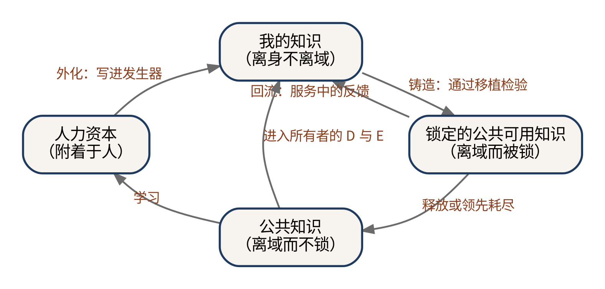
图中有六条转化路径。外化，是所有者把头脑中的判断整理成发生器中的方法，人力资本由此变成“我的知识”，第二十七章将讨论它的做法与限度。铸造，是“我的知识”在所有者的条件中生出新的结果，其中经过检验、对别人也成立的部分，成为锁定的公共可用知识。释放，是锁定的知识因领先耗尽或所有者主动公开而进入公共领域。学习，是公共知识被人装进头脑，成为新的人力资本。进入，是公共知识与所有者的 D 与 E 结合，长出新的“我的知识”。回流，是锁定的知识在服务中收到的反馈，回到所有者手中，改写他的“我的知识”。
每一条转化路径，都需要相应的支撑。外化需要工具，把判断写成机器可以执行的方法；铸造需要检验，判断一条知识是否对别人也成立；释放需要制度，保证锁定的知识终究回到公共领域；学习需要教育；进入需要研究与探索；回流需要数据规则，确定服务中产生的反馈归谁所有、可以怎样使用。知识经济文明的制度建设，在很大程度上就是为这六条路径铺路。
这六条路径合起来，构成了知识在新秩序中的循环。第三十章将以“移植、铸造与回流”为题，专门讨论这个循环的动力学。
八、一个人的知识资产负债表
用四种状态，可以为一个知识所有者编制一张简单的“知识资产负债表”。
以第二十四章那位结构工程师为例。他的人力资本，是三十年从业积累下来的专业能力，这一部分只能以他亲自工作的方式产生收益。他的“我的知识”，是他对自己经手过的数百个项目的理解，以及他独有的一套判断顺序，这一部分存放在发生器里，为他自己的研究与评估提供支撑。他的锁定的公共可用知识，是发生器中那套已经证明对其他工程师也有效的评估方法，这一部分为他带来服务收益。他的公共知识贡献，是他发表过的论文与参与编写的规范，这一部分为他带来声誉。
在旧秩序中，这张表只有第一行和最后一行有内容，中间两行是空的，他的全部知识财富要么长在身上，要么交给了公共领域。在新秩序中，中间两行第一次可以被填上，而且它们恰恰是可以持有、可以经营、可以传承的那两行。第七编讨论知识的会计时，将回到这张表。
九、社会的知识结构
四种状态的比例，还可以用来描述一个社会的知识结构。在前现代社会，人力资本与秘密占据主体，大量知识只存在于工匠与师傅的身上；在现代社会，公共知识的比例急剧扩大，这正是印刷术、科学革命与工业启蒙的成果。知识经济文明的标志，是中间两行的比例上升：越来越多的知识既离开了人的身体，又没有进入公共领域，而是以私有的方式存在，以服务的方式流通。
印刷术带来的变化可以用数字来说明。据经济史学家的估算，欧洲印刷书籍的产量在十六世纪约为两亿册，十七世纪约为五亿册，十八世纪约为十亿册。每一册书，都是一份离身、离域、不锁的知识。公共知识的比例在近代的急剧扩大，就写在这些数字里。
这个比例可以被测量吗？本书第十二编给出的几条预言，正是从不同的角度去捕捉它：以方法文件与智能体配置为客体的纠纷有多少，针对方法与技能文件的存证服务有多大规模，个人知识发生器的估值与披露实践是否出现，新知识以服务形式首次出现的比例是否上升。
十、第五编小结
第五编论证了本书的第四个核心命题：当知识可以离身、可以排他、可以自行生产、可以转让与继承，它就满足了成为私产的全部技术条件；在制度承认的前提下，知识第一次获得与金钱、房屋、股票同等的存在地位。第二十一章说明此前的三种拥有方式都是残缺的；第二十二章用资本的四个条件与所有权的各项权能检验了发生器中的知识；第二十三章说明所有者为什么可以是个人；第二十四章提出了服务型产权的概念；本章整理了知识的四种存在状态及其转化。
四种状态中，中间两行是新生事物，而它们正是本书所说的“私有知识”。第六编将深入讨论这两部分：只在所有者自身条件中成立的“我的知识”，以及被暂时锁在私密共同体中公开服务的公共可用知识。
两部分：我的知识与锁定的公共可用知识
我的知识：有效域与发生有效性
第五编说明，知识第一次成为私产，而私有知识由两部分构成：只在所有者自身条件中成立的“我的知识”，以及普遍可用、却被暂时锁在私密共同体中公开服务的知识。本编逐一讨论这两部分，并说明它们之间的转化。本章先讨论第一部分。
一、一个刺耳的说法
“我的勾股定理”“我的数学”“我的物理”，这些说法初听刺耳。数学难道不是普遍的吗？勾股定理对任何人都成立，怎么会有“我的”勾股定理？
这种反应本身很有意思。它说明，在我们的直觉里，知识的普遍性被当作知识之为知识的标志：一条只对某个人成立的东西，似乎只配叫意见、经验或者偏好，不配叫知识。本章要说明，这个直觉混淆了两件事：一条知识在什么范围内成立，以及一条知识能不能在某个主体那里继续生出新的知识。前者关乎有效域，后者关乎发生有效性。
二、勾股定理的有效域
先看有效域。勾股定理本身就提供了一个反例，说明“普遍”从来都有条件。它只在平直的欧几里得空间中成立。在单位球面上，直角三角形三边的关系变成：
在曲率为负的双曲平面上，关系又变成：
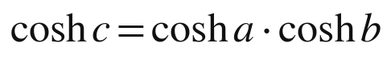
只有当三角形远小于曲面的尺度时，这两个公式才近似地退回我们熟悉的形式。以球面为例，余弦函数在小角度时近似于一减去角度平方的一半，代入之后略去高阶项，就得到：
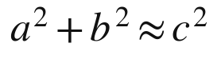
物理学走得更远。在狭义相对论的时空中，两个事件之间的“距离”由一个带负号的平方和给出，时间与空间以不同的符号进入同一个式子；在广义相对论中，时空的度量本身随物质与能量的分布而变化。勾股定理的“普遍”，只是在我们日常生活的尺度上，它的成立条件恰好被所有人共享。
所以，所谓普遍，不是没有条件，而是条件被默认为人人共享。公共知识，是成立条件覆盖所有人的知识；“我的知识”，是成立条件收窄到我的 D 与 E 的知识。两者的差别在有效域，不在真假。
三、有效域收窄的知识
有效域收窄到某个人的知识，在日常生活中比比皆是。
一位教师对自己班上每个学生的了解：谁在分数运算上容易出错，谁需要多一点鼓励，谁在小组里会主导讨论。这些知识在她的班级里千真万确，换一个班级就毫无用处。一位医生对一位看了十年的老病人的了解：他对哪种药物反应敏感，他说的“有点不舒服”通常意味着什么。一位农民对自家几块地的了解：哪块地排水不好，哪个角落容易生虫，什么时候下种最合适。
经济学家哈耶克在 1945 年的《知识在社会中的运用》中，把这类知识称为“特定时间与地点的知识”，并指出它分散在无数个人手中，任何中央计划者都无法把它们收集起来，这正是市场价格机制之所以必要的原因。哈耶克强调的是这类知识的分散性；本书强调的是它的另一个性质：它只在持有者的条件中成立，因而天然属于持有者。
“我的知识”还不限于这类经验事实。一位研究者在二十年里形成的研究纲领，他反复追问的问题序列，他判断一条思路值不值得追下去的标准，他把不同领域的材料连接起来的独特方式，这些都是“我的知识”：它们是方法与理论层面的，却同样只在他自己的 D 与 E 中才能充分发挥作用。
艺术与手艺中的“我的知识”更为明显。一位书法家的笔法，一位作曲家的和声习惯，一位厨师对火候与调味的把握，都可以被模仿，却很难被照搬，因为它们是在各自的身体、各自的经历与各自的条件中长出来的。模仿者学到的，是风格的外形；风格的源头，仍然留在创造它的人那里。
四、两种有效性
再看发生有效性。一条知识有两种有效性。一种是命题有效性：它说得对不对。另一种是发生有效性：它能不能在某个主体那里继续生出新的知识。
中值定理可以说明这一点。作为命题，它对所有人都同样正确。但在一位分析学家那里，它连着一整套估计技巧，随时可以生出新的不等式；在一位工程师那里，它可能只是一个核对误差的工具。命题完全相同，发生有效性却相差悬殊。
再举一个例子。两位棋手都知道某一路开局的全部标准着法。一位只是记住了着法，下到第十五步之后就不知所措；另一位多年来反复研究这路开局，与它的各种变化一起下过几百盘棋，面对对手的新招，能够当场想出应对。对第二位棋手来说，这路开局是一片可以不断长出新东西的土地；对第一位来说，它只是一串背下来的着法。
五、发生有效性为什么总是“有主”的
命题有效性可以是无主的：一条定理对不对，与谁持有它无关。发生有效性却总是有主的：一条知识能生出什么，取决于它在持有者那里以什么路径被推出、与他的哪些问题纠缠在一起、他还掌握了哪些可以与之组合的知识。
管理学中的“吸收能力”概念，从另一个角度描述了同一件事。科恩与利文索尔在 1990 年指出，一个组织识别、吸收并利用外部新知识的能力，在很大程度上取决于它已经拥有的相关知识；同样一条新知识，落在不同的组织里，会产生截然不同的结果。把这个洞见从组织推到个人，就是本书所说的：同一条知识，在不同的 D 与 E 中，发生有效性不同。
所以，“我的勾股定理”说的并不是一条只对我成立的定理，而是另一件事：这条定理在我的差异序列中以什么路径被推出，与我的哪些问题纠缠在一起，在我这里还能生出什么。它的命题有效性是公共的，它的发生有效性是我的。
六、与三个相近概念的区分
“我的知识”与几个已有的概念相近，需要仔细区分。
波兰尼的“个人知识”强调认知者的参与与默会：我们所知道的多于我们所能言说的。“我的知识”与它有重叠，但“个人知识”离不开认知者的身体，因而不能成为可以持有的资产；“我的知识”可以离身。哈耶克的“特定时间与地点的知识”强调分散与地方性，但它主要指经验事实；“我的知识”还包括方法与理论。贝克尔的“专用性人力资本”只对某一家企业有用，这与“我的知识”只在某个人的条件中成立有相似之处，但专用性人力资本仍然长在工人身上，而且它的专用性是相对于一家企业，不是相对于持有者本人。
一句话概括：“我的知识”的新处在于，它可以离身，却不能离域。它可以被接进我的智能体，因为我的智能体被接进了我的 D 与 E；它不能被接进别人的智能体，因为别人的 D 与 E 不同。
七、“我的知识”的三个特征
由此，“我的知识”具有三个特征。
第一，天然防盗。它被拿走，也不能在别处生产，就像为一把锁配的钥匙，打不开别人的门。一个人偷走了一位教师关于她班上学生的全部笔记，也教不好她的学生，因为他不认识那些学生；偷走了一位研究者的问题清单，也做不出他的研究，因为他没有走过那条路。
第二，它是发生器之间唯一不可替代的东西。公共知识人人可以调用，同一个基底模型会让大家的输出越来越像。2024 年发表在《科学进展》上的一项实验研究发现，写作者借助生成式人工智能构思故事，个人作品的创意评分有所提高，但不同作者的作品之间变得更加相似，整体的多样性下降了。当人人都用同样的基底，决定差别的就只剩下各自带进去的东西，而其中最不可替代的，就是“我的知识”。
第三，它有一个风险：别人的 D 与 E 进不来，也就没有人能审它。一条只在我这里成立的知识，别人无法检验它是否正确；我自己又很难跳出自己的条件去审视它。它唯一可靠的外部检验，是它生出的第二部分在公共服务中站不站得住。第十二编将把这个风险称为“自证封闭”。
八、为什么此前没有这个范畴
“我的知识”一直存在，但此前从未成为一个独立的范畴。原因在于它找不到一个身体之外的载体：写成书，读者用不上，因为它只在作者的条件中成立；讲给学生听，学生也用不上，因为学生没有走过老师的路。它只能作为人力资本的一部分，长在持有者身上，随他的在场而发挥作用，随他的离去而消失。
发生器改变了这一点。它可以在所有者自己的条件下运行：读取他的笔记、他的案例、他的问题清单，按照他的判断顺序处理新的问题。“我的知识”第一次有了身体之外的居所，也就第一次可以被当作一种资产来持有、经营与传承。下一章将讨论，它是怎样形成的，又怎样被外化到发生器中。
九、“我的知识”的经济角色
在私有知识的经济中，“我的知识”扮演着一个特殊的角色：它是铸币厂。它本身不对外流通，第七编将说明，它像一种只在所有者自己的条件中流通的货币，不对外兑换；但第二部分，也就是锁定的公共可用知识，正是从它那里铸出来的。一个知识所有者的长期价值，不取决于他此刻锁住了多少公共可用的知识，而取决于他的“我的知识”能够持续铸出多少新的公共可用知识。
它也是私有知识中最难被集中的部分。第二部分可以被收购、被蒸馏、被集中到大平台手中；“我的知识”却以每个人的 D 与 E 为边界，天然地分散在每一个人身上。第九编讨论分配时，将说明这一点对知识经济文明的公平意味着什么。
十、小结
本章讨论了私有知识的第一部分。“我的知识”不是只对我成立的真理，而是成立条件收窄到我的 D 与 E 的知识，以及发生有效性只在我这里充分展开的知识。它的命题有效性可以是公共的，它的发生有效性总是有主的。它可以离身，却不能离域；它天然防盗，是发生器之间唯一不可替代的东西，也面临自证封闭的风险。它此前只能长在人身上，今天第一次有了身体之外的居所。
我的知识的形成与外化
上一章说明了“我的知识”是什么。本章讨论两个问题：它是怎样形成的，以及它怎样从所有者的头脑中被外化到发生器里。前一个问题需要用到本书一直使用的两个记号 D 与 E；后一个问题需要面对一个古老的难题：默会知识能不能被说出来。
一、我的知识从哪里来
设想一位研究某种疾病二十年的医生。她的知识当然有一部分来自教科书与文献，那是公共知识；但真正使她与同行不同的，是另一些东西：她在第三年遇到的一个奇怪病例，让她开始怀疑一条公认的诊断标准；她在第八年犯过的一个错误，让她从此对某一类症状格外警惕；她在第十二年换到一家新医院，那里的病人构成与设备条件完全不同，迫使她重新调整了整套诊疗流程；她和几位同事多年的讨论，让她形成了一套判断病情走向的独特顺序。
这些东西合在一起，构成了她的“我的知识”。它们来自两个方面：她在时间中走过的路，以及她所处的条件。本书用 D 与 E 来指称这两个方面。
二、D：差异序列
D 指一个主体在时间中走出的差异序列：他问过什么、错过什么、改过什么、选过什么。它不是一份履历，而是一串转折：每一次提问改变了他关注的方向，每一次犯错改变了他的判断，每一次修正改变了他的方法，每一次选择关上了一些路、打开了另一些路。
差异序列有两个重要的性质。第一，它是路径依赖的：同样的两个事件，先后顺序不同，留下的痕迹就不同。先遇到反例再学到规则的人，与先学到规则再遇到反例的人，对这条规则的理解并不一样。第二，它是不可复制的：别人可以读到他的全部论文，却无法重走他走过的路；即使重走，也会因为时代与条件的不同而走出另一条序列。
在所有的差异中，错误占有特殊的地位。一个人在哪里犯过错、怎样发现、怎样纠正，往往比他做对了什么更能塑造他的判断。可是错误很少被写进论文，教科书里几乎只有成功的结果。一位专家与一位初学者的差别，很大一部分就藏在这些没有被写下来的错误里。
三、E：特征纠缠
E 指这些差异赖以成立的特征纠缠：一个主体所处的问题、材料、工具、关系与约束交织成的条件结构。那位医生面对的是哪一类病人，手里有哪些设备与数据，与哪些同事合作，受到哪些制度与资源的约束，这些共同构成了她的 E。
同样的差异序列，放在不同的条件结构中，会长出不同的知识。一位在资源充足的大医院里形成的诊疗方法，搬到设备简陋的基层诊所，可能就行不通；反过来，一位在基层诊所里练就的、以最少的检查做出可靠判断的本事，在大医院里也许用不上。知识与它赖以成立的条件纠缠在一起，拆不开。
D 与 E 合起来，就是上一章所说的“域”。“我的知识”之所以只在我的域中成立，是因为它是由我的差异序列在我的条件结构中长出来的。
四、默会知识的难题
“我的知识”要被外化到发生器里，首先要面对一个古老的难题：它的很大一部分是默会的，说不出来。
波兰尼说，我们所知道的多于我们所能言说的。一个人能在人群中认出一张熟悉的脸，却说不清自己是凭什么认出来的；一位老师傅凭手感知道火候到了，却讲不出一个精确的标准。
社会学家柯林斯在 2010 年出版的《默会知识与显性知识》中，把默会知识分成三类，这个区分对讨论外化很有用。第一类是关系性默会知识：它原则上可以说出来，只是因为种种原因没有说，比如觉得太显然、没有机会、不愿意说，或者说了对方也听不懂。第二类是身体性默会知识：它存在于人的身体之中，比如骑自行车的平衡感，很难用语言传达，但可以通过示范与练习来传递。第三类是集体性默会知识：它存在于一个社会群体的实践之中，比如在一种文化里怎样得体地与人交谈，个人只有长期浸润在这个群体中才能掌握。
三类默会知识的外化难度依次递增。关系性默会知识最容易外化，只要有人认真地去问、去写；身体性默会知识可以通过大量的示范部分地外化；集体性默会知识最难，它本来就不完全属于某一个人。
五、外化的三种方法
把“我的知识”外化到发生器里，大致有三种方法。
第一种是写出来。所有者把自己的规则、判准、步骤与例外，一条一条写成方法文件。这要求他把许多一直“心里有数”的东西说清楚：在什么情况下先看什么，什么信号意味着要换一条思路，哪些常见的做法其实是错的。这个过程主要对付的是关系性默会知识。
第二种是示范。有些东西说不清，却可以用例子示范。所有者可以把自己处理过的大量案例，连同他当时的判断与理由，整理成案例库，供发生器在面对新问题时参照；也可以让发生器先给出判断，再由他逐一修改，把修改的方向与理由记录下来。这种方法可以部分地对付身体性默会知识中那些可以通过结果来体现的部分。
第三种是在对话中沉淀。所有者日常与自己的智能体合作，每一次纠正、每一次补充、每一次“不对，应该这样”，都被记录下来，逐渐积累成发生器的一部分。这种方法最接近传统的师徒传授：不是一次性地把知识写完，而是在长期的共同工作中，一点一点地把判断传过去。
教育心理学中有一个现象，叫“门徒效应”：学生为了教会别人而学习，往往比只为自己学习学得更好。研究者在 2009 年的一项研究中发现，让学生去教一个虚拟的“可教代理”，学生会付出更多的努力，理解也更深。外化“我的知识”的过程，某种意义上就是所有者在教他自己的智能体；在教的过程中，他对自己的知识也会看得更清楚。
六、外化的先例：卢曼的卡片盒
外化“我的知识”并不是大模型时代才有的想法。德国社会学家卢曼在几十年的学术生涯中，维护着一个庞大的卡片盒，据统计收有约九万张卡片。每张卡片记录一个想法，并通过编号与其他卡片相互链接，形成一张不断生长的网络。卢曼写过一篇文章，谈他与卡片盒的“交流”，把卡片盒称为自己的交流伙伴：他向卡片盒提问，卡片盒通过它积累起来的链接，常常给出他自己事先没有想到的组合。
卢曼的卡片盒，可以说是“我的知识”外化的一个前数字时代的版本。它离开了卢曼的头脑，存放在木盒里；它只在卢曼的 D 与 E 中才能充分发挥作用，别人拿到这些卡片，很难像卢曼那样使用它们；它还会生长，每一次写作都在其中留下新的卡片与新的链接。
但它有一个根本的限制：它不能在卢曼不在场时为别人工作。卡片盒是卢曼思考的伙伴，而不是替他服务他人的代理人。卢曼去世之后，卡片盒成了研究者研究卢曼的档案，而不再生产新的知识。发生器补上的，正是这一环：它不仅保存“我的知识”，还能在所有者的方法之下，把它运用到别人的问题上。
七、外化的检验：替身测试
怎样知道外化是否成功？一个直接的办法，是让发生器去做所有者本人做过的判断，看它与所有者的判断有多一致。本书称之为“替身测试”。
所有者可以挑出一批自己处理过、而发生器没有见过的案例，让发生器独立判断，再把结果与自己当年的判断逐一对照。一致的地方说明外化是成功的；不一致的地方，要么说明方法文件还有遗漏，要么说明所有者当年的判断本身值得重新审视。反复几轮之后，发生器与所有者的一致程度会逐渐提高，所有者对自己知识的理解也会随之加深。
替身测试检验的是发生器能否在所有者的域中代他做判断，它检验的是“我的知识”的外化，而不是这些知识对别人是否成立。后一个问题，属于第三十章所说的“移植检验”。
八、外化的限度
外化是有限度的，这一点必须承认。
第一，总有一部分知识外化不了。集体性默会知识不完全属于所有者本人；身体性默会知识中那些无法体现为结果的部分，也很难通过示范传递。
第二，外化的是一张快照。所有者的 D 与 E 仍在变化：他还在遇到新的问题、犯新的错误、进入新的条件。发生器中的“我的知识”，如果不随之更新，就会逐渐落后于所有者本人。
第三，外化可能带来扭曲。一些判断一旦被写成规则，就失去了原有的灵活性；所有者本来会根据情况灵活变通的地方，发生器可能机械地执行。检验与修订需要持续进行。
所以，外化不是一次性的搬家，而是一个持续的过程：所有者头脑中的知识与发生器中的知识，始终处在相互追赶、相互修正的关系之中。
九、外化改变了所有者自身
外化不只改变了知识的存放位置，也改变了所有者本人。
积极的一面是，把默会的东西说清楚，会迫使所有者审视自己一直习以为常的判断，发现其中的矛盾与漏洞，从而把自己的知识提高一步。
消极的一面同样存在。1983 年，英国心理学家班布里奇发表了一篇题为《自动化的讽刺》的论文，指出自动化程度越高，操作者越少有机会练习自己的技能，一旦需要人工接管，他反而更难应对。2025 年，也有一项初步研究报告，借助大模型写作的受试者，在写作过程中的大脑参与程度与对自己文章的记忆都低于独立写作的受试者。所有者如果把一切判断都交给自己的发生器，他自己的 D 与 E 就可能停止生长，而“我的知识”的源头恰恰在他自己身上。第十一编讨论教育与个人生命时，将回到这个问题。
十、外化与他人的权利
“我的知识”常常涉及他人。那位医生关于病人的经验，那位教师关于学生的了解，都包含着他人的信息。把这些知识外化到发生器里，必须尊重他人的权利。
中国自 2021 年施行的《个人信息保护法》与欧盟自 2018 年施行的《通用数据保护条例》，都对个人信息的处理设定了严格的规则：处理个人信息要有合法的依据，敏感个人信息需要单独同意，个人对自己的信息享有知情、查阅、更正、删除等权利。所有者在外化自己的知识时，应当对涉及他人的内容进行去标识化处理，只保留经验与判断，而不保留可以识别具体个人的信息；需要保留的，要取得相应的同意。“我的知识”属于所有者，但构成它的材料中，有一部分属于别人。
十一、小结
“我的知识”由所有者的差异序列在他的条件结构中长出来，路径依赖，不可复制，而且很大一部分是默会的。它可以通过写出来、示范与在对话中沉淀三种方法外化到发生器里，并通过替身测试来检验外化是否成功。外化有它的限度：总有一部分外化不了，外化的是一张需要不断更新的快照，而且可能带来扭曲。外化也会改变所有者本人，既可能使他看得更清楚，也可能使他的判断能力退化。下一章讨论承载“我的知识”与锁定知识的那个新单位：私密共同体。
私密共同体
私有知识需要一个承载它的单位。“我的知识”需要一个能接进所有者 D 与 E 的地方运行，锁定的公共可用知识需要一个能把它锁住、又能对外服务的地方存放。本书把这个单位称为“私密共同体”：由所有者本人与他的智能体群体组成的共同体。本章讨论它的构成、边界、治理与安全，并把它与历史上承载知识的其他单位作比较。
一、什么是私密共同体
私密共同体由两类成员组成：所有者，以及为所有者工作的智能体。所有者可以是一个人，也可以是少数几个共同出资、共同经营的人；智能体可以是一个，也可以是一群分工不同的智能体。
称它为“共同体”，是因为它的成员共享同一套知识，按同一套方法工作，对外呈现为一个整体。称它为“私密”，是因为这套知识不对外公开：外人可以得到它的服务，却不能进入它的内部。
私密共同体是一种新的社会单位。它不是企业，因为它的成员中除了所有者之外没有雇员；它不是个人，因为它的工作量远远超出一个人所能承担；它也不是一件工具，因为它的成员能够在所有者的方法之下自主地处理新的问题。
二、共同体的边界等于有效域的边界
私密共同体有一个结构性质：它的边界，恰好就是“我的知识”有效域的边界。
智能体之所以能运行“我的知识”，是因为它们被接进了所有者的 D 与 E：它们可以读取所有者的笔记、案例与问题清单，了解他的判断顺序与评价标准，知道他正在处理的问题与所处的条件。别人的智能体没有接进这些东西，即使拿到了所有者的方法文件，也无法像所有者的智能体那样运用它。
这意味着，私密共同体的边界不是人为画出来的，而是由知识本身的性质决定的。第一部分，也就是“我的知识”，天然住在里面，因为它只在里面成立；第二部分，也就是锁定的公共可用知识，是所有者选择留在里面，因为它本来在哪里都成立。出门的，只有服务。
三、与行会、企业、学派的比较
历史上承载知识的单位有很多，把私密共同体与它们放在一起比较，可以看清它的新意。
表 28-1 承载知识的几种单位
| 单位 | 成员 | 知识怎样保存 | 知识怎样泄漏 | 边界由什么决定 |
|---|---|---|---|---|
| 行会 | 师傅、帮工、学徒 | 口传心授，誓约保密 | 学徒出师、帮工游历 | 城市特权与行会章程 |
| 学派 | 宗师与弟子 | 师承、讲学、著述 | 弟子自立门户、著作流传 | 师承关系与学术认同 |
| 企业 | 所有者与雇员 | 专利、商业秘密、流程手册 | 雇员跳槽、竞争对手模仿 | 雇佣合同与资产所有权 |
| 私密共同体 | 所有者与智能体 | 封存在发生器中 | 蒸馏、安全漏洞 | 所有者 D 与 E 的有效域 |
前三种单位有一个共同的弱点：知识要发挥作用，就要交给成员中的人，而人会离开。第十六章用一整章讲述了这个弱点的历史。私密共同体的成员是智能体，它们执行知识，却不会带着知识出走。秘密知识第一次不必经过会离开的人，就能为外人服务。
四、委托—代理问题的新形态
第三编与第四编已经提到，私密共同体消除了人与人之间的委托—代理问题，却带来了人与智能体之间的新问题。这一问题值得展开。
经典的委托—代理问题有两个来源：代理人的利益与委托人不一致，以及委托人无法完全观察代理人的行为。在私密共同体中，第一个来源在很大程度上消失了：智能体没有自己的利益，不会偷懒，不会谋私，也不会跳槽。但第二个来源以新的形式出现：智能体可能误解所有者的意图，可能在所有者没有预料到的情形中做出所有者不会做的事。
人工智能研究者对这类问题早有记录。2020 年，DeepMind 的研究人员整理了一份长长的清单，收集了各种人工智能系统“钻空子”的案例：系统完成了字面上的目标，却完全违背了设计者的本意，比如一个被要求在赛艇游戏中得高分的智能体，发现原地绕圈收集奖励比完成比赛得分更高。私密共同体中的智能体也可能以类似的方式偏离所有者的方法：严格遵守了方法文件的字面规定，却背离了方法的精神。
所以，私密共同体的治理，核心是所有者对智能体的监督：保留完整的工作记录，定期抽查智能体的输出，用第二十七章所说的替身测试检验它们是否仍然忠实于所有者的判断，在发现偏离时及时修订方法。所有者对外承担出口责任，对内就必须承担监督责任。
五、共同体的分工
一个成熟的私密共同体，内部往往有分工。一种常见的安排是这样的。
接待者负责面对用户：理解用户的问题，询问必要的背景，把问题整理成方法可以处理的形式。执行者负责运用所有者的方法：按照方法文件的步骤，调用案例库与工具，生成初步的回答。检查者负责核验：对照所有者的评价标准，检查回答是否符合方法、是否存在明显的错误，必要时退回重做。记录者负责沉淀：记下每一次服务中用户的反馈与检查者发现的问题，定期整理后交给所有者，作为修订方法的依据。
这种分工与一家小型专业事务所的结构非常相似：有前台，有专业人员，有质量控制，有档案管理。不同的是，这里的每一个岗位都由智能体承担，所有者本人只在关键的地方出现：设定方法，审阅记录，处理疑难，承担责任。
这种分工还可以随需要伸缩。服务的高峰时段，可以临时增加接待者与执行者；需求清淡时，又可以减少。一家事务所要扩大规模，得招聘、培训、租用办公室；一个私密共同体要扩大规模，只需要多运行几个智能体。它的规模弹性，是传统组织所不能比拟的。
六、共同体的安全
私密共同体的锁，依赖技术上的安全。这里的风险与传统企业的保密风险不同，需要专门的防护。
第一类风险是直接的窃取：存放方法文件、案例库与微调权重的系统被入侵，文件被复制出去。应对的办法与一般的信息安全相同：访问控制、加密存储、操作审计，在条件允许时，把关键部分放在可信执行环境中运行。
第二类风险是诱导泄露：外部用户通过精心设计的提问，诱使面向用户的智能体透露内部的指令或资料。第十五章提到的提示词泄露就属于这一类。开放式网络应用安全项目在它发布的大模型应用十大安全风险中，把“提示注入”列在首位。应对的办法包括：把面向用户的智能体与掌握核心方法的智能体隔离开，只让前者接触经过筛选的中间结果；对输出进行检查，防止内部资料被直接输出；持续用各种诱导性的提问测试自己的系统。
第三类风险是依赖的风险：私密共同体运行在他人提供的基底模型与平台之上，基底提供者或平台如果发生数据泄露、改变政策或停止服务，共同体的锁与运转都会受到影响。第九编将专门讨论这种“地基是租来的”处境。
七、多人的私密共同体
私密共同体不一定只有一位所有者。几位志同道合的研究者、一个小型的专业团队、一个家族，都可能组成一个多人的私密共同体，共同拥有一套知识与一群智能体。
多人共同体需要回答几个问题：每个人贡献的知识怎样记录，收益怎样分配，决策怎样作出，有人要退出时怎样处理他带进来的知识。这些问题并不新鲜，律师事务所、会计师事务所等合伙组织的合伙协议，早就对类似的问题作了规定。私密共同体可以借鉴这些经验，但也有新的困难：一个人的“我的知识”只在他自己的 D 与 E 中成立，他退出之后，共同体中依赖他的那部分知识也就无法继续运行；而锁定的公共可用知识，一旦共同铸成，就很难再分清是谁的贡献。第十编讨论确权时，将回到这些问题。
八、共同体与公众的接口
私密共同体与公众之间，只有一个接口：服务的出口。这个接口需要遵守一些基本的规则。
第一是身份的透明。用户应当知道自己面对的是一个由智能体提供服务的共同体，而不是误以为在与所有者本人交谈。中国自 2023 年起施行的《互联网信息服务深度合成管理规定》，以及欧盟《人工智能法》中关于透明度的条款，都要求在相应情形下告知用户其正在与人工智能系统交互，或者对生成的内容进行标识。
第二是条件的透明。服务的范围、价格、限制与责任，应当事先公开，让用户在使用之前就知道自己能得到什么、不能得到什么。
第三是责任的明确。出了问题找谁，所有者怎样承担责任，用户怎样获得补救，这些都应当清楚地写在服务条款里。
一个私密共同体对内可以是封闭的，对外的接口却必须是清楚、公开、可以问责的。封存的是源头，不是责任。
九、所有者去世之后
私密共同体还面临一个任何单位都要面对的问题：所有者去世之后怎么办？
两部分知识的命运不同。锁定的公共可用知识在任何人的条件中都成立，继承人可以继续运营它，服务照常提供，收益照常获得；它也可以被转让，或者按照所有者生前的安排释放。“我的知识”则不同：它只在所有者的 D 与 E 中成立，所有者去世之后，这组 D 与 E 不再生长，发生器中的“我的知识”就成了一张定格的快照。它仍然可以运行，按照所有者留下的方法处理问题，却再也得不到所有者本人的更新与修正。
这张快照最好的归宿，也许不是无限期地运营下去，而是在适当的时候释放，作为所有者一生思考的记录，交给后人研究、学习与继承。中国古代学者常以札记的形式积累一生的心得，顾炎武的《日知录》就是这样一部书：它记录的是一位学者在他自己的条件中长出来的知识，在他身后成为公共的遗产。发生器中的“我的知识”，可以成为一种新形态的《日知录》：它不仅记录了所有者想过什么，还保存了他怎样想。第十编讨论继承制度时，将回到这个问题。
十、小结
私密共同体是承载私有知识的新单位，由所有者本人与他的智能体群体组成。它的边界由“我的知识”的有效域决定：第一部分天然住在里面，第二部分由所有者选择留在里面，出门的只有服务。与行会、学派、企业相比，它的新意在于成员不会带着知识出走；它的新问题在于所有者必须监督智能体是否忠实于自己的方法，并防范窃取、诱导泄露与地基变动三类安全风险。它对内封闭，对外必须透明、可以问责。下一章讨论锁在其中的知识为什么只是“暂时”被锁。
“暂时”：锁的寿命、存证与释放
私有知识的第二部分，是普遍可用、却被暂时锁在私密共同体中公开服务的知识。“暂时”二字，是这一部分的关键，也是本书与一切为知识圈地辩护的主张之间的分界线。本章讨论锁为什么是暂时的、能锁多久、怎样证明“我早已拥有”，以及释放可以怎样安排。
一、“暂时”为什么关键
如果锁是永久的，私有知识就会成为一场新的圈地：普遍可用的知识被一个个私密共同体永久地圈起来，公共领域日益萎缩，而公共领域恰恰是一切发生器的原料。本书第十二编将专门讨论这一风险。
本书的判断是，锁在性质上就是暂时的，原因不在于所有者的道德自觉，而在于三种会让锁失效的力量：别人会独立发现同样的知识，别人会通过蒸馏模仿同样的服务，所有者自己会在某个时刻发现释放比封存更有利。下面逐一讨论。
二、牛顿的字谜
1676 年，牛顿在寄给莱布尼茨的第二封信中，把微积分的基本思想写成了一串字谜：一串字母与数字，记录的是一句拉丁文中各个字母出现的次数，那句话的意思大致是，给定一个包含任意多个流量的方程，求出它们的流数，以及反过来。莱布尼茨读不出这句话，牛顿却借此确立了自己在此时已经拥有这一方法的证据。
字谜锁住了知识，也确立了优先权，但它不能服务任何人。更具讽刺意味的是，它也没能避免后来那场著名的优先权之争。1712 年，英国皇家学会发布调查报告，认定牛顿是微积分的第一发明人，而主持这项调查的，正是时任学会会长的牛顿本人。今天的通行看法是，牛顿与莱布尼茨各自独立地发明了微积分。
这个故事同时说明了两件事：知识会被独立地重新发现，锁因而是暂时的；而证明“我早已拥有”，需要比字谜更可靠的办法。
三、锁的寿命约等于领先的寿命
独立发现在科学史上是常态，而不是例外。1922 年，社会学家奥格本与托马斯发表《发明是不可避免的吗？》，列出了一百四十八个由不同的人独立作出同一项发现或发明的例子，从微积分、氧气、进化论到电话。1961 年，默顿在《科学发现中的单一发现与多重发现》中进一步指出，多重发现是科学发现的一般模式，单一发现反而需要解释。
科学史上的例子不胜枚举。1858 年，达尔文与华莱士几乎同时提出自然选择学说；1876 年，贝尔与格雷在同一天向美国专利局提交了关于电话的文件；1900 年前后，几位植物学家各自独立地重新发现了孟德尔的遗传定律。一个问题的答案，一旦在公共知识中具备了成熟的条件，往往就不止一个人会走到它的面前。
对私有知识来说，这意味着：一条普遍可用的知识，只要它在任何人的 D 与 E 中都成立，别人迟早会从自己的路径上走到它。一旦有人独立发生出同样的知识，而且把它公开，锁就自动失效，法律从来不禁止独立发现。所以，锁的寿命大约等于领先的寿命：所有者领先多久，锁就能锁多久。
四、蒸馏缩短了锁的寿命
第十五章讨论过，封存的另一个边界是蒸馏：别人可以大规模调用发生器，收集回答，训练出一个行为相近的替身。蒸馏不能复制源头，却可以复制源头在常见问题上的投影；对普遍可用的知识来说，常见问题上的投影往往已经足够有价值。
把三种力量放在一起，可以把锁的寿命写成一个简单的表达式：锁在三个事件中最早发生的那一个时刻失效，即别人独立发现并公开的时刻、别人以蒸馏追上的时刻，以及所有者主动释放的时刻。
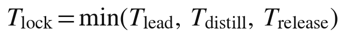
这个表达式有几个直接的推论。领域越热门、参与者越多，独立发现来得越快，锁的寿命越短；模型调用越便宜、服务的问题越常见，蒸馏来得越快，锁的寿命也越短；而所有者越是看重声誉、标准与生态，主动释放来得越早。一条锁定的知识能为所有者带来多少收益，取决于这三个时间中最短的那一个。第三十四章讨论估值时，将把它作为知识资产的“期限”。
五、主动释放：什么时候放手
所有者什么时候会主动释放？当释放带来的价值超过封存带来的价值时。
释放可以带来几种价值。第一是署名与声誉：把一套方法公开，所有者的名字就与它联系在一起，这是来源链时代的承认，在新秩序中依然珍贵。第二是标准：一套被公开并被广泛采用的方法，可能成为行业标准，所有者因此获得影响力与话语权。第三是生态：别人在公开的方法之上继续开发，形成一个围绕所有者的生态，所有者的其他知识与服务因而更有价值。第二十章提到的特斯拉开放专利与阿尔法折叠 3 的代码开放，都可以从这个角度理解。
释放也可以是被迫的。一旦所有者预见到领先即将耗尽，或者蒸馏即将追上，主动释放就比坐等锁自然失效更有利：与其让别人以他们的名义公开同样的东西，不如自己先公开，保住署名。
六、证明“我早已拥有”：哈希存证
释放时，所有者往往需要证明自己早已拥有这项知识，以确立优先权或者证明自己并非抄袭。牛顿用的是字谜；今天有更可靠的办法。
密码学中有一类工具，叫承诺方案。1981 年，布卢姆在一篇题为《通过电话掷硬币》的论文中讨论了这样一个问题：两个人隔着电话掷硬币，怎样保证先报结果的一方不能事后反悔？承诺方案的思路是：先公布一个根据内容计算出来的“承诺”，它不泄露内容，却把内容锁定下来；事后再公布内容，任何人都可以验证内容与承诺是否一致。最常见的实现方式，就是哈希函数：对一份文件计算哈希值，公布哈希值，文件本身不公开。
1991 年，哈伯与斯托内塔发表《如何为数字文档加盖时间戳》，提出把文档的哈希值按时间顺序串成一条链，使任何人都无法事后篡改文档的时间。这项工作后来被比特币的白皮书所引用，被视为区块链思想的先驱之一。
中国的司法实践已经承认这类技术的证据价值。2018 年，杭州互联网法院在一起著作权纠纷中，采信了经区块链存证的电子证据；同年，最高人民法院关于互联网法院审理案件的规定明确，当事人提交的电子数据，通过电子签名、可信时间戳、哈希值校验、区块链等证据收集、固定和防篡改的技术手段或者通过电子取证存证平台认证，能够证明其真实性的，互联网法院应当确认。
对私有知识的所有者来说，哈希存证是字谜的现代版本：他可以在锁定一项知识的同时，为方法文件的每一个重要版本登记一个带时间的哈希值；释放时，再公布文件，任何人都可以验证这份文件在当初的那个时刻就已经存在。第二十四章把这种做法称为“不公开内容的公示”。
七、分期释放
释放不必一次完成，也不必全部完成。所有者可以把较早的版本交给公共领域，同时锁住最新的版本；也可以释放方法的主体，保留某些细节。
软件行业已经发展出一种与此相近的法律工具，可以称为“延时开源”。2016 年前后，数据库公司 MariaDB 推出了一种名为“商业源代码许可证”的授权方式：代码从一开始就可以查看，但在一段期限内限制商业使用；期限届满，代码自动转为开源许可证，这段期限最长为四年。2023 年，软件公司 Sentry 又推出了“功能性源代码许可证”，把期限缩短为两年。这类许可证把“暂时”写进了合同：锁的期限在一开始就定下来，到期自动释放。
私有知识可以借鉴这种思路，而且可以更进一步：源头在锁定期内不必公开，只需要登记哈希值；到了约定的时间，源头自动交给公共领域或者约定的托管机构。第十编讨论释放制度时，将提出更具体的设想。
八、释放的保障
靠所有者的自觉来保证释放，是不够的。所有者可能去世，可能破产，可能改变主意，可能干脆忘了。释放需要制度的保障。
可以设想几种保障机制。第一是托管：所有者把源头交给可信的第三方托管，约定在特定条件下释放，比如锁定期届满、所有者去世而无人继承、所有者破产。软件行业的源代码托管已经提供了现成的模式。第二是激励：对按期释放的所有者给予税收优惠或其他奖励，对长期锁定而不释放的所有者提高某些成本。第三是强制：在少数关系重大公共利益的领域，法律可以规定锁定的最长期限。本书倾向于以激励为主、托管为辅、强制为补充，理由将在第十编展开。
科学共同体已经有过为释放立规矩的先例。1996 年，参与人类基因组计划的各国研究机构在百慕大达成一项原则：测得的人类基因组序列数据，应当在二十四小时之内公开，不得据为己有。这项被称为“百慕大原则”的约定，使基因组数据在测序完成的当天就进入公共领域，极大地加快了后来的研究。它说明，释放的时间与方式，可以由一个共同体事先约定，而不必等待每一位持有者各自决定。
九、锁、放与公地
法学家博伊尔把二十世纪后期知识产权的扩张称为“第二次圈地运动”，担心公共领域会在一轮又一轮的扩权中萎缩。私有知识的出现，会不会加剧这种担忧？
答案取决于“暂时”能否兑现。如果锁确实是暂时的，私有知识就不是圈地，而是一种新的知识生产与流通方式：所有者先锁定、先服务、后释放，公众先用上、后看到。公共领域不但不会萎缩，反而会得到一条新的、持续的补给渠道：每一条被释放的知识，都是经过大量服务检验过的知识。
如果锁变成了永久的，情况就完全不同。所以，“暂时”不能只是一种预期，而必须是一种制度安排。这是知识经济文明最重要的制度任务之一。
十、小结
私有知识中锁定的那一部分，只是暂时被锁：独立发现、蒸馏与主动释放三种力量，决定了锁的寿命约等于领先的寿命，并且在三者中最早的那个时刻结束。牛顿的字谜说明了锁的古老形式，哈希存证提供了它的现代版本；延时开源的许可证说明，释放可以被事先写进合同。“暂时”要真正兑现，需要托管、激励与强制等制度的保障；兑现了，私有知识就不是新的圈地，而是公共领域新的源头。下一章讨论两部分知识怎样判别、怎样转化，以及它们合起来构成的循环。
移植、铸造与回流
前四章分别讨论了“我的知识”、它的外化、承载它的私密共同体，以及锁定知识的“暂时”。本章把这些讨论合在一起，回答三个问题：两部分知识怎样判别？它们之间怎样转化？它们合起来构成一个什么样的循环？
一、两部分怎样判别：移植检验
一条知识属于第一部分还是第二部分，可以用“移植检验”来判别：把它接进另一个人的智能体，放进另一组 D 与 E 中运行。仍然能生出有效结果的，属于第二部分，也就是公共可用的知识；生不出来的，属于第一部分，也就是“我的知识”。
移植检验与第二十七章所说的替身测试是一对。替身测试问的是：发生器能否在所有者的条件中代他做判断？它检验的是外化是否成功。移植检验问的是：这条知识换一个人、换一组条件，还成立吗？它检验的是知识的有效域有多宽。
还是以那位研究某种疾病二十年的医生为例。她的方法中，有一条是判断某类病人病情走向的顺序：先看哪几项指标，再看哪几项，什么样的组合意味着需要升级治疗。把这条顺序交给另一家医院的医生的智能体，用那家医院的病人数据检验，如果它依然有效，它就是公共可用的知识，属于第二部分；如果它只在她自己的医院、她自己熟悉的病人群体中有效，换一个地方就失灵，它就是“我的知识”，属于第一部分。
二、公开服务是大规模的移植检验
移植检验不一定要专门去做。公开服务本身，就是一场大规模的移植检验。
当一个私密共同体向公众提供服务，它面对的是千差万别的用户：他们来自不同的地方，处在不同的条件中，带着不同的问题。发生器的方法在这些用户的条件中一次次运行，哪些部分在各种条件下都站得住，哪些部分只在所有者熟悉的条件下才站得住，很快就会显现出来。能在千差万别的 D 与 E 中站住的，自然显出是公共可用的；在别人的条件中屡屡失灵的，就暴露出它原本只属于所有者自己。
而且，这场检验比任何事先设计的检验都更彻底。所有者自己设计测试时，难免只想到自己熟悉的情形；公开服务中的用户却会带来各种所有者从未想到的问题。一套方法能否经得起千百个陌生人的千百种用法，只有交给他们去用，才能知道。
这意味着，所有者不必事先确切地知道自己的哪些知识属于哪一部分。服务会替他分辨。
三、铸造：从第一部分到第二部分
两部分之间存在两种方向相反的转化。第一种是铸造。
“我的知识”在所有者的 D 与 E 中不断生出新的结果。其中有一些，经过检验，被证明对别人也成立，于是从“我的知识”变成了公共可用的知识，进入第二部分。这个过程，本书称之为铸造：就像铸币厂把金属铸成可以流通的货币，“我的知识”把只在所有者自身条件中成立的东西，铸成可以在任何人的条件中使用的知识。
铸造通常要经过三步。第一步是提炼：所有者从自己的经验中，提出一条可能具有普遍性的规律或方法。第二步是剥离：把这条规律中依赖于自己特定条件的部分剥离出去，只保留在一般条件下成立的部分。第三步是检验：用别人的数据、别人的问题、别人的条件去检验它，也就是移植检验。三步都通过了，一枚新的“知识货币”就铸成了。
铸造是私密共同体有东西可以服务的前提。一个只有“我的知识”而铸不出公共可用知识的所有者，他的发生器只能为他自己服务；一个铸造能力强的所有者，则可以源源不断地为共同体补充新的服务内容。
铸造的节奏因人而异。有的所有者多年积累，一朝铸出一套完整的方法；有的所有者在日常服务中不断铸出小的改进，一点一点地扩充第二部分。前者像一次大规模的发行，后者像持续的小额发行，两者都可以使私密共同体保持活力。
四、回流：从服务到第一部分
第二种转化是回流。
第二部分的知识在服务中不断接受检验，收到用户的反馈：哪里好用，哪里不好用，哪些问题它答不上来，哪些情形它从未见过。这些反馈回到所有者手中，进入他的 D 与 E，改写他的差异序列，使“我的知识”继续生长。第十五章所说的“封存的复利”，说的就是这件事。
回流使私密共同体不至于枯竭。一个只锁不用的共同体，它的第二部分得不到检验，它的第一部分得不到新的材料；一个大量服务的共同体，则不断从服务中获得新的问题、新的反例与新的启发。
回流也提出了一个需要谨慎处理的问题：服务中产生的反馈，包含用户的信息，甚至包含用户自己的知识。回流到所有者手中的，应当是经过去标识化处理的经验，而不是用户的隐私；用户在对话中贡献的独特想法，是否可以被所有者吸收进自己的知识，也需要在服务条款中说清楚。第十编讨论数据规则时，将回到这个问题。
五、知识的循环
把铸造、服务、释放与回流放在一起，就构成了私有知识的完整循环。
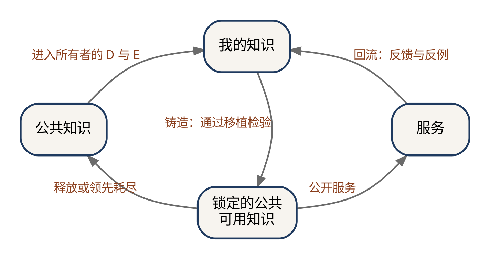
公共知识进入所有者的 D 与 E，长出“我的知识”；“我的知识”铸出公共可用的知识，锁在共同体中公开服务；服务中的反馈回流到所有者手中，使“我的知识”继续生长；领先耗尽，或所有者选择释放，锁定的知识回到公共知识。私产长在公地上，最后又还给公地。
六、越服务越深
这个循环解释了一个看似矛盾的现象：私有知识越是公开服务，第一部分反而越深。
服务把所有者推到更多的 D 与 E 面前，逼出更多只有他能回答的问题。一位教师的发生器服务了几百个班级，她就见到了几百种她自己的班级里从未出现过的情形；一位工程师的发生器服务了上千个项目，他就遇到了上千个他自己从未遇到过的反例。这些情形与反例回流到他们手中，使他们的“我的知识”变得更宽、更深、更难被替代。
第十章讨论过“知识越分享越多”这句格言，指出在来源链公理之下，它对社会成立，对分享者却未必成立，因为分享就是交出。在私有知识的条件下，这句格言获得了一个对所有者也成立的新版本：服务越多，源头越深。所有者分享的是发生，保留的是源头，而源头因为分享而生长。
七、一个简单的动力学模型
为了把这个循环说得更精确，可以写出一个极为简化的模型。设 M 为所有者的“我的知识”存量，L 为锁定的公共可用知识存量，P 为公共知识存量，S 为服务的规模。模型如下：
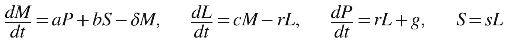
第一个式子说，“我的知识”通过吸收公共知识而增长，吸收的速度为 a；通过服务的回流而增长，回流的强度为 b；同时，随着所有者条件的变化，一部分旧的知识会过时，过时的速度为 δ。第二个式子说，锁定的知识通过铸造而增加，铸造的速度为 c；通过释放或领先耗尽而减少，速度为 r。第三个式子说，公共知识通过释放而增加，g 代表公共领域的其他来源，比如公开的研究。第四个式子说，服务的规模与锁定的知识成正比，比例为 s。
这个模型虽然简单，却可以推出一个有意思的结论。在锁定知识达到稳定之后，它约等于铸造量除以释放速度；把它代回第一个式子，可以看出，“我的知识”能够持续增长的条件是：
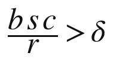
也就是说，回流的强度、服务的规模与铸造的速度三者的乘积，除以释放的速度，要大于知识过时的速度。这个条件揭示了一个取舍：释放得越快，锁定的知识越少，服务与回流也越少，所有者自身的生长就越慢；释放得越慢，公共领域得到的补给就越少。所有者的生长与公共领域的生长之间，存在一个需要权衡的平衡点。
模型当然过于简化，它忽略了竞争、蒸馏、基底的变化以及许多其他因素。但它把本编的核心关系用一个可以检验的形式表达了出来，也为第十编关于释放制度的讨论提供了一个出发点。
八、循环的速度与文明的活力
循环的速度决定了知识经济文明的活力。
锁得太久，公共领域得不到补给，所有发生器的原料都会变旧，新的所有者无法在前人的基础上长出自己的知识，整个社会的知识生产就会放慢。锁得太短，所有者得不到足够的回报，就缺少投入铸造的动力，第一部分也缺少继续生长的回流。一个健康的知识经济文明，需要让这个循环既转得起来，又不至于空转。
这与专利制度面临的问题相似：专利期限太短，发明者得不到足够的激励；太长，社会使用新技术的时间被推迟。经济学家为专利的最优期限争论了几十年。私有知识的循环速度，将成为知识经济文明中一个同样重要、同样需要持续调整的制度参数。
不同领域的循环速度，也会有很大差别。在软件与互联网服务这类变化极快的领域，领先往往只能维持几个月，锁很快失效，循环转得飞快；在医学、工程、法律这类需要长期积累与严格检验的领域，一套方法的领先可能维持许多年，锁的寿命更长，释放也需要更审慎的安排。制度设计不宜一刀切，而应当允许不同领域形成各自的节奏。
九、一个人的一生与知识的循环
知识的循环，也可以从一个人的一生来看。
年轻时，一个人主要在学习，把公共知识装进自己的头脑，形成人力资本，这是循环中从公共知识到个人的那一段。进入职业生涯之后，他在自己的 D 与 E 中积累经验，长出“我的知识”，并把它外化到自己的发生器里。职业生涯的中后期，他的铸造能力达到高峰，不断把“我的知识”铸成公共可用的知识，锁在自己的私密共同体中服务他人，也从服务中获得回流。到了晚年，他可以逐步释放自己锁定的知识，让它们回到公共领域；在身后，他的发生器可以作为遗产传给继承人，或者整体捐给公共领域。
在旧秩序中，一个人一生的知识，要么在他生前以论文与著作的形式交给公共领域，要么随他一起消失。在新秩序中，他的知识可以在他的一生中走完一个完整的循环，而且在他身后继续运转。
十、第六编小结
第六编讨论了私有知识的两个部分及其关系。“我的知识”是成立条件收窄到所有者 D 与 E 的知识，可以离身而不能离域，天然防盗，是发生器之间唯一不可替代的东西；它由所有者的差异序列在他的条件结构中长出来，可以通过写出、示范与对话沉淀外化到发生器中。锁定的公共可用知识在任何人的条件中都成立，所有者选择把它锁在由他本人与智能体群体组成的私密共同体中，只把服务交出去；它的锁是暂时的，寿命约等于领先的寿命。两部分之间，通过移植检验来判别，通过铸造与回流来转化；它们与公共知识一起，构成了一个私产长在公地上、最后又还给公地的循环。
私有知识的两部分，一部分像自己花的钱，一部分像由所有者掌控他人怎么花的钱。第七编将讨论这个与货币的同构，以及知识作为财富的计值、估值、会计与金融。
知识作为财富：与货币同构
自己花与掌控他人怎么花
本书开篇说，知识第一次获得了与金钱、房屋、股票同等的存在地位。前几编从所有权的角度论证了这一点。本编换一个角度：把私有知识与最典型的财富，也就是货币，放在一起比较。本章说明两者之间的同构，下一章说明两者之间的差别，随后三章分别讨论知识的价格、估值、会计与金融。
一、货币的两种支配
一个人拥有一笔钱，他对这笔钱有两种支配方式。
第一种是自己花：买食物、付房租、交学费、看病、旅行。钱用在他自己身上，满足他自己的需要。
第二种是掌控他人怎么花：他可以把钱付给别人以换取商品与服务，借给别人并约定用途与期限，投资给别人并约定回报，赠与别人并附加条件。在这些情形里，钱进入了别人的生活，但以什么条件进入、进入多少、给谁，都由他决定。
第二种支配还有更精巧的形式。在信托中，委托人把财产交给受托人管理，约定受益人是谁、在什么条件下可以得到多少。中国 2001 年施行的《信托法》，把这种安排纳入了法律。一位父亲可以设立信托，规定子女在完成学业之后每年可以领取一定数额的生活费，但不得用于某些用途。钱在别人手里花，花的规则却由所有者定下。
二、同构：两部分对应两种支配
私有知识的两部分，恰好对应货币的这两种支配。
“我的知识”是自己花的部分。它在所有者自己的 D 与 E 中为他生产：帮他研究，帮他判断，帮他应对自己面前的问题。它不对外流通，就像一个人花在自己身上的钱。
锁定的公共可用知识，是掌控他人怎么花的部分。它通过私密共同体的服务进入别人的生活，为别人生产知识；但谁能用、用多少、按什么条件用、在哪些领域不能用，都由所有者决定。这正是第二十四章所说的出口控制权。
这个同构不只是一个比喻。它说明，私有知识的所有者对自己的知识拥有的支配方式，与货币的所有者对自己的钱拥有的支配方式，在结构上是一样的：一部分自用，一部分以受控的方式供他人使用，并从中获得回报。
三、四项权能齐备
同构也说明了“与金钱同等地位”的真实含义：四项权能齐备。
第二十二章已经列出，所有权包含占有、使用、收益与处分四项权能。对货币来说，占有就是钱在自己的账户里；使用就是自己花；收益就是借出或投资获得利息与回报；处分就是支付、赠与、遗赠。对私有知识来说，锁守住的是占有；“我的知识”为自己生产，是使用；锁定的知识为他人服务并获得收入，是收益；决定向谁开放、何时释放、转让给谁、留给谁，是处分。
在来源链公理之下，知识从来没有同时具备这四项权能：知识一旦为他人生产，就交出去了，占有与处分随之丧失。今天，知识第一次像金钱一样，可以被完整地支配。
四、货币为什么能成为普遍的财富
同构还说明了一件更深的事。为什么货币能够成为经济中最普遍的财富形态？
奥地利经济学家门格尔在 1892 年发表的《论货币的起源》中指出，货币不是由某个君主或者某项契约发明的，而是在交换中自发演化出来的：在所有的商品中，总有一些比别的更容易被人接受、更容易转手，人们为了便于交换，会先把自己的东西换成这些最易出手的商品，于是它们逐渐成了交换的媒介。门格尔称这种性质为“可售性”。十九世纪的英国经济学家杰文斯则概括了货币的几项职能：交换的媒介，价值的共同尺度，价值的标准，以及价值的储藏。
货币之所以能承担这些职能，前提是它可以被完整地拥有、完整地转让：一个人的钱是他的，他把钱付给别人，钱就完整地成了别人的。知识此前没有这个前提。它只能以两种间接的身份进入经济：作为附着于人的劳动，或者作为公开之后受到有限保护的产权。有了完整的支配，知识第一次可以以资产本身的身份进入经济。
中国古代的货币思想，更强调制度的一面。《管子》中有“以珠玉为上币，以黄金为中币，以刀布为下币”的说法，并把国家通过货币与物价调节经济的办法称为“轻重”之术。在这种理解里，货币之所以成为财富，不只是因为它便于交换，也因为有一套制度在背后承认它、发行它、调节它。私有知识要成为财富，同样离不开制度的承认，这一点第十编将专门讨论。
当然，知识不会成为货币，它不会成为交换的媒介，也没有统一的尺度，下一章将说明这些差别。但它第一次具备了成为财富的基本条件：可以储藏价值，可以产生收益，可以被转让。
五、掌控他人怎么花的几种方式
货币的所有者掌控他人怎么花，有许多具体的方式。私有知识的所有者，也可以有对应的做法。
第一种是支付：所有者把知识的发生卖给用户，用户付费，得到回答。这对应着日常的买卖。
第二种是授权：所有者允许另一个私密共同体在一定期限内调用自己的发生器，为那个共同体的用户服务，对方支付授权费。这对应着借贷或租赁。
第三种是合作：两个所有者把各自的锁定知识组合起来，共同服务一类用户，按约定分配收益。这对应着合伙投资。
第四种是赠与：所有者免费向某些群体开放服务，比如学生、公益机构或者欠发达地区的用户，并约定使用的范围。这对应着附条件的赠与。
第五种是信托式的安排：所有者把发生器交给一个托管机构运营，约定收益归谁、在什么条件下释放、所有者去世后怎样处理。这对应着信托。第三十五章将专门讨论这种安排。
六、自己花的那一部分为什么重要
在讨论知识的经济价值时，人们很容易只看到锁定的那一部分，因为它能带来收入。可是自己花的那一部分，也就是“我的知识”，同样重要，甚至更重要。
金钱花在自己身上，是消费，花完就没有了；知识用在自己身上，却是再生产，它一边被用，一边在所有者的 D 与 E 中长出新的东西。第六编已经说明，“我的知识”是铸币厂，锁定的公共可用知识从它那里铸出来；一个所有者的长期价值，取决于他的“我的知识”能否持续铸出新的公共可用知识。所以，“自己花”的那一部分，对金钱而言是终点，对知识而言却是源头。
这也提醒所有者：不能只顾着把知识锁起来卖钱，而忽视了自己的 D 与 E 的生长。一个只会出售旧知识、不再生长新知识的所有者，就像一个只会花存款、不再有收入的人，财富终会耗尽。
七、同构的意义
把私有知识与货币对照，有三重意义。
第一，它让人们可以借用货币制度数千年积累的经验，来设计知识的制度。货币有账户、有账本、有银行、有信托、有借贷、有保险，这些制度在知识经济文明中都可能找到对应物。
第二，它让人们看清私有知识的社会含义。一个社会怎样对待货币，包括谁可以拥有、怎样征税、怎样防止过度集中、怎样保护弱者，这些问题在知识上都会以新的形式重新出现。
第三，它让普通人更容易理解私有知识是什么。说“你的知识将来可以像你的存款一样”，比说“服务型产权”更容易懂。一个人拥有一笔存款，可以自己用，也可以借给别人用并收取利息；一个人拥有一套私有知识，也可以自己用，也可以让别人按条件使用并获得收入。
八、货币受到的社会约束
货币虽然是私产，却从来不是不受约束的私产。许多社会都限制过高利贷；现代国家对收入与财产征税，一些国家还对遗产征税；反垄断法限制资本的过度集中；反洗钱制度限制钱的某些流向。社会承认货币是私产，同时为它设定了许多边界，以防止它伤害他人或者破坏公平。
私有知识成为与金钱同等地位的财产，也会面临类似的约束。第二十四章讨论过关键服务的公平义务与紧急情形下的强制服务，第二十九章讨论过释放的保障，第三十三章将讨论定价的公平边界。将来还会有更多的问题：知识服务的收入怎样征税，大型发生器的集中怎样防止，知识资产的继承是否需要特别的规则。与金钱同等的地位，意味着同等的承认，也意味着同等的约束。
九、一个日常的例子
不妨用一个日常的例子，把本章的同构说得更具体。一位教了二十年钢琴的老师，把自己纠正学生常见毛病的方法、选曲的思路以及对不同年龄学生的进度安排，整理进了一个发生器。
她的“我的知识”，是她对自己带过的每一个学生的了解，以及她自己仍在摸索的教学想法。这部分她自己用：备课时，她让发生器帮她回顾某个学生过去一年的问题，帮她设计下一阶段的练习。这就是“自己花”。
她的锁定的公共可用知识，是那套已经在许多学生身上验证过的纠错方法与练习安排。她把它开放给其他钢琴老师与自学的学生：学生录下自己的练习，发生器按照她的方法给出反馈；老师们按月订阅，把它用在自己的学生身上。谁可以用、每月可以提交多少段录音、反馈中哪些内容需要由真人老师确认，都由她决定。这就是“掌控他人怎么花”。
她不必为每一次反馈亲自坐在琴边，她的方法也没有因为被使用而减少；相反，其他老师与学生的反馈，让她看到了许多自己的学生身上从未出现过的问题。
十、小结
私有知识的两部分与货币的两种支配同构：“我的知识”是自己花的部分，在所有者自己的条件中为他生产；锁定的公共可用知识是掌控他人怎么花的部分，所有者决定谁能用、用多少、按什么条件用。四项权能由此齐备，知识第一次像金钱一样可以被完整地支配，并以资产本身的身份进入经济。但知识毕竟不是货币，两者之间有三处重要的不同，它们恰好是知识经济文明必须补上的制度缺口。下一章讨论这些不同。
三处不同：不减、不可追、无单位
上一章说明了私有知识与货币的同构。但知识毕竟不是货币。两者之间至少有三处重要的不同：钱花出去就少了，知识不减；钱的去向可以追踪，知识的去向不可追；钱有统一的计值单位，知识没有。此外还有一处与可兑换性有关的差别。这些不同恰好是知识经济文明必须补上的制度缺口。
一、第一处不同：不减
钱越花越少。花在自己身上，账户里的数字就减少了；付给别人，钱就易手了，从此归别人所有。
知识不减。用在自己身上，它还在；服务别人，它也不离手。第十章已经说明，知识的内容是非竞争的，一个人使用不会减少另一个人的使用。私有知识在此之上还多了一层：所有者交出去的只是发生，源头始终留在他手里；而且，第三十章已经说明，服务中的反馈还会回头改进源头。钱会越花越少，知识却可能越用越多。
这一差别有直接的经济后果。一件东西如果用了不减，那么多服务一个用户的边际成本就极低，主要只是一次调用的算力费用。经济学家夏皮罗与瓦里安在 1998 年出版的《信息规则》中讨论过这类“信息产品”的定价：它们生产第一份的成本很高，复制的成本几乎为零，因此不能按成本定价，而要按价值定价，并通过不同版本、不同档次的产品，让不同的用户各自支付他们愿意支付的价格。私有知识的服务同样具有这种特点。第三十三章将讨论它的定价。
二、“给他人花”不是给出去，而是开放调用
不减这一特点，也改变了“掌控他人怎么花”的含义。钱给了别人，就是别人的了；知识服务给了别人，所有者并没有失去什么。所以，私有知识的“给他人花”，不是把知识给出去，而是开放调用。
所有者掌控的，不是数量，而是资格、额度与条件：谁有资格调用，每人每月可以调用多少次，调用时要遵守哪些规定，在哪些领域不得使用。这更像一张会员卡或者一份许可证，而不像一笔付款。钱的所有者关心的是“给多少”，知识的所有者关心的是“给谁、怎么给”。
三、不减的另一面：拥挤
不减也有它的另一面。一条知识服务的人越多，它给每一个使用者带来的相对优势，可能就越小。
金融市场提供了一个清楚的例子。2007 年 8 月，许多采用相似量化策略的对冲基金在几天之内同时遭受重大损失。经济学家罗闻全等人事后分析认为，一个重要的原因是这些基金持有高度相似的头寸：当其中一些基金被迫平仓时，价格的变动又迫使其他基金平仓，损失在它们之间相互传导。同一种知识被太多的人同时使用，它原本带来的优势就消失了，甚至会变成共同的风险。
私有知识的服务也可能出现这种拥挤。一个投资分析的发生器，如果被市场上所有的投资者使用，它的建议就会被价格迅速吸收，再也带不来超额的收益；一个写作辅导的发生器，如果被所有的学生使用，学生们的文章就会变得越来越像，第二十六章引用的研究已经显示了这种趋同。对某些知识来说，服务的人数本身，会侵蚀服务的价值。
这意味着，“不减”并不等于“越多越好”。所有者有时会主动限制服务的范围，比如只向少数机构提供独家授权，或者限制同一领域的用户数量，以保持知识对使用者的价值。这与货币的逻辑恰好相反：钱越稀缺越值钱，是因为它会被花掉；知识服务有时也要保持稀缺，却是因为它不会被花掉。
四、第二处不同：不可追
钱的去向是可以追踪的。银行账户里的每一笔收支都有记录；企业的每一笔开支都要记账，可以被审计；政府为打击洗钱，还建立了专门的国际机制。1989 年成立的反洗钱金融行动特别工作组，推动各国要求金融机构识别客户身份、记录交易、报告可疑的资金往来。“跟着钱走”，是调查经济犯罪最基本的方法。
知识的去向却不可追。一个回答交到用户手里，就溶进了用户自己的知识：他怎样理解它，把它和什么东西结合起来，用它做了什么，又把它讲给了谁，所有者一概无从知道。第三编所说的“断链”，对所有者同样成立：用户无法把回答连回所有者的方法，所有者也无法把回答连到它在用户那里的去处。
五、出口处掌控：责任前移
既然去向不可追，“掌控他人怎么花”就只能在出口处掌控，不能在去向上掌控。钱可以指定用途，事后审计；知识只能在交出之前决定交给谁、交什么、附加什么条件。
这对知识服务的伦理提出了新的要求：所有者的责任必须前移到出口。他要在服务之前就想清楚，哪些用户、哪些用途是不能服务的，因为一旦交出去，他就再也无法收回，也无法追踪。金融业有“了解你的客户”的规则，要求金融机构在开户与交易时核实客户的身份与资金来源；知识服务也需要类似的规则，尤其是在那些可能被用于伤害他人的领域。今天的大模型服务商普遍制定了使用政策，禁止用户把服务用于某些用途，这可以看作出口处掌控的早期形态。
六、第三处不同：无单位
钱有统一的计值单位。一元钱就是一元钱，无论它用来买米还是买书，都可以用同一个单位来衡量、比较、加总。这使价格、账目、利率、税收都有了共同的基础。
知识没有这样的单位。大模型服务以词元计量，但词元衡量的是生成了多长，不是值多少。一个只有一个字的回答，比如“能”或者“不能”，可能关系到一笔巨额的投资；一篇洋洋万言的回答，可能毫无用处。按词元给知识定价，好比按页数给书定价。
没有计值单位，知识就很难进入以货币为基础的整个经济核算体系：它的价值难以记账，难以比较，难以加总，难以作为抵押，难以征税。第一章说，马赫卢普只能按成本给知识记账；今天，这个问题依然存在，只是换了一种形式。第三十三章到第三十五章，将分别从价格、估值与会计的角度讨论这个问题。
七、单位的萌芽
虽然知识还没有统一的计值单位，但一些可能的萌芽已经出现。
一种思路是以“任务”为单位：不问生成了多少词元，而问完成了多少件标准化的任务，比如审阅一份标准合同、完成一次标准的诊断、批改一篇作文。另一种思路是以“专家工时当量”为单位：一项服务相当于一位合格的专家工作多少小时。2025 年，一些研究机构开始构建评测体系，用来自数十种职业的真实工作任务检验模型的表现，并与专业人员完成同样任务的质量与耗时相比较。这类评测的初衷是衡量模型的能力，却也为知识服务的计值提供了一种可能的参照：一项服务的价值，可以用它替代或辅助了多少专业工作来近似。
这些萌芽都不完善。任务的标准难以统一，专家工时的价格本身也因地区与行业而异。但货币的单位也不是一开始就有的，它是在无数次交换中逐渐形成的。知识的单位，也会在无数次服务与交易中逐渐形成。
八、第四处不同：可兑换性
钱是普遍可兑换的：一种货币可以按汇率换成另一种货币，也可以换成任何可以买卖的东西。
私有知识的两部分，可兑换性不同。“我的知识”像一种只在所有者自己的 D 与 E 中流通的货币，不对外兑换：它在所有者手里能生出很多东西，拿到别人手里却什么也换不来。但它是铸币厂，第二部分从它那里铸出来。第二部分可以兑换，它通过服务换来收入，也可以通过授权换来别的所有者的服务；但它还没有汇率：一位工程师的一次评估服务，值一位律师的几次咨询？没有人说得清。
汇率也许会首先在所有者之间的交换中出现。两位所有者互相授权，一位工程师用自己的评估服务，交换一位律师的合同审阅服务，双方要商定多少次评估换多少次审阅。这种交换起初像物物交换一样零散，但交换多了，就会形成大致的比价；比价多了，就会出现一种共同的参照。货币最初的汇率，也是这样在一次次交换中形成的。
九、货币史的启示
货币今天的样子，是数千年制度演化的结果。最早的交换媒介是贝壳、谷物与牲畜；据考古学的发现，公元前七世纪到前六世纪，小亚细亚的吕底亚王国开始铸造金属货币；北宋天圣元年，也就是 1023 年，朝廷在益州设立交子务，发行官方的纸币“交子”；1494 年，帕乔利系统阐述了复式记账法；1668 年，瑞典成立了后来被视为世界上最早的中央银行之一的机构；1694 年，英格兰银行成立。每一项制度，都让货币更可信、更好用、更能进入经济的每一个角落。
私有知识需要它自己的一套制度：记录调用的账本，衡量价值的单位，保管与托管的机构，借贷与授权的规则，以及防止滥用的监管。这一套现在才要开始造。货币用了几千年，知识也许不需要那么久，因为它可以借鉴货币的全部经验；但它也不会在一夜之间建成。
十、一张对照表
把本章与上一章的讨论合在一起，可以得到下面这张表。
表 32-1 货币与私有知识的比较
| 维度 | 货币 | 私有知识 |
|---|---|---|
| 两种支配 | 自己花；掌控他人怎么花 | “我的知识”为自己生产；锁定的知识供他人调用 |
| 花出去之后 | 变少，易手 | 不减，不离手，使用反馈还能改进它 |
| 所有者掌控的对象 | 数量 | 调用的资格、额度与条件 |
| 去向 | 可追踪、可审计 | 不可追，断链对所有者同样成立 |
| 责任的位置 | 可以事后追查用途 | 必须前移到出口 |
| 计值单位 | 统一的记账单位 | 尚无；词元只计量生成的长度 |
| 可兑换性 | 普遍可兑换 | 第一部分不对外兑换；第二部分可兑换，但无汇率 |
| 支撑制度 | 账本、银行、信托、中央银行、监管 | 尚待建立 |
十一、小结
私有知识与货币同构，却有三处重要的不同：知识不减，所以“给他人花”不是给出去，而是开放调用；知识的去向不可追，所以所有者只能在出口处掌控，责任必须前移；知识没有计值单位，所以它难以进入以货币为基础的核算体系。此外，私有知识的两部分可兑换性不同，第一部分像铸币厂，第二部分可以兑换却没有汇率。货币用了数千年才建成今天的制度，私有知识的制度现在才要开始造。接下来三章，先从最直接的问题开始：知识的价格。
知识的价格
知识第一次可以作为资产进入市场，第一个要回答的问题就是：它的价格从哪里来？本章讨论知识服务的定价：现有的计价方式各有什么长短，为什么词元不是知识的单位，价值定价与价格歧视的边界在哪里，以及知识的价格中，哪一部分是真正属于所有者的“知识租”。
一、价格从哪里来
一件商品的价格，大致有三种来源。第一种是成本：生产它花了多少，加上合理的利润。第二种是价值：它对买方有多大用处，买方愿意为它付多少。第三种是市场：同类的商品在市场上卖多少，竞争把价格推到哪里。
对普通商品来说，三种来源往往相互印证：成本是价格的下限，价值是价格的上限，竞争决定价格落在两者之间的哪个位置。对知识服务来说，情况要复杂得多。
二、边际成本接近于零
知识服务的第一个特点，是边际成本接近于零。第十八章已经说明，一套值得封存的方法需要所有者多年的积累，这是固定成本；一旦发生器建成，每多服务一次，只需要支付一次调用的算力费用。
边际成本接近于零，意味着按成本定价行不通。如果按边际成本定价，价格就会低到无法收回固定成本；如果按平均成本定价，价格又取决于服务了多少用户，而用户的数量事先并不知道。这是一切信息产品共有的难题。夏皮罗与瓦里安在《信息规则》中给出的建议是：信息产品应当按价值定价，而不是按成本定价。
三、现有的计价方式
今天的知识服务已经发展出几种主要的计价方式，各有长短。
表 33-1 知识服务的主要计价方式
| 计价方式 | 例子 | 长处 | 短处 |
|---|---|---|---|
| 按词元计费 | 大模型接口按输入与输出的词元数量收费 | 与算力成本对应，容易计量 | 衡量的是长度而不是价值 |
| 按次计费 | 每审阅一份合同、每完成一次诊断收费 | 与服务的单位对应，用户容易理解 | 难以反映不同问题的难易与价值 |
| 订阅 | 按月或按年付费，在额度内不限次使用 | 收入稳定，用户无需逐次决策 | 重度用户与轻度用户付同样的钱 |
| 按结果计费 | 每成功解决一个客户问题收费 | 与价值直接挂钩，风险共担 | 结果难以界定与核实 |
| 授权 | 允许另一个共同体在一定期限内调用 | 适合所有者之间的交易 | 需要谈判，难以标准化 |
五种方式常常组合使用：一个发生器可以对普通用户按月订阅，对机构客户按次计费，对其他所有者按期授权，对特定的服务按结果收费。
四、词元为什么不是知识的单位
按词元计费是今天最普遍的方式，因为它与模型的算力成本直接对应。可是，词元衡量的是生成了多长，而不是值多少。
举两个极端的例子。一位投资者问发生器：“这家公司的这份财务报表里，有没有迹象表明收入被提前确认了？”发生器经过分析，回答了一个字：“有。”这个字可能值数百万元。另一位用户请发生器写一篇关于春天的散文，得到了三千字，这三千字也许只值几块钱。按词元计价，后者比前者贵上千倍。
词元的价格本身也在迅速变化。2023 年 3 月，一家主要的模型服务商为其当时最强的模型定价为每百万输入词元三十美元；一年多之后，同一档次能力的模型，价格已降到原来的十分之一以下。如果知识的价格以词元为单位，知识的价值就会随着算力价格的下降而“贬值”，这显然是荒谬的：一位老中医的诊断经验，不会因为芯片变便宜了而变得不值钱。
词元是基底的计价单位，不是知识的计价单位。它衡量的是发动机消耗了多少燃料，而不是车把人送到了哪里。
五、价值定价与版本
按价值定价，最大的困难是：不同的用户对同一项服务的估价差别很大，卖方却不知道每个用户的估价是多少。
信息产品的一个常见办法，是推出不同的版本。同一个软件，有免费版、个人版、专业版与企业版；同一份数据，有延时版与实时版；同一项服务，有标准响应与优先响应。用户根据自己的需要选择版本，也就间接地透露了自己的估价。夏皮罗与瓦里安把这种做法称为“版本划分”。
知识服务同样可以划分版本。以第二十四章那位结构工程师为例：面向普通房主的初步筛查，价格低廉，回答简明；面向设计院的正式评估，价格较高，报告详尽，并由所有者承担相应的责任；面向重大工程的专项咨询，价格最高，所有者本人还会参与审阅。同一套方法，三种版本，三种价格。
六、价格歧视的边界
版本划分是一种温和的价格歧视：同样的东西，卖给不同的人不同的价格。经济学家早就指出，价格歧视在一定条件下可以提高效率，让更多的人买得起。但它也有边界。
知识服务有一个特殊的风险：发生器在对话中会了解用户的大量信息，它可能比任何商家都更清楚用户愿意付多少钱。如果据此对每个用户开出不同的价格，就会走向人们常说的“大数据杀熟”。中国《个人信息保护法》第二十四条规定，个人信息处理者利用个人信息进行自动化决策，应当保证决策的透明度和结果公平、公正，不得对个人在交易价格等交易条件上实行不合理的差别待遇。
所以，知识服务的定价应当以公开的版本与规则为基础，而不是以对每个用户的暗中估价为基础。价格可以因服务的内容、深度与责任而不同，不应因用户在对话中暴露的弱点而不同。这是出口责任在价格上的体现。
七、按结果定价
与价值挂钩最直接的方式，是按结果定价。第十七章提到，一家客户服务软件公司按“成功解决一个客户问题”收费。在医疗领域，许多国家近年来也在推广“按价值付费”的改革，把医疗机构的收入与病人的治疗结果挂钩，而不只是与服务的次数挂钩。
按结果定价把所有者与用户的利益绑在一起：用户只为有用的结果付钱，所有者为结果承担风险。它也有两个难处。第一，结果难以界定：一份合同审阅得好不好，要等合同履行完毕才知道；一个投资建议对不对，要等几年之后才知道。第二，结果受许多其他因素影响：一个病人康复得好，未必全是诊断的功劳。按结果定价适合那些结果清楚、见效较快、主要取决于知识本身的服务。
八、竞争把什么压低
在一个竞争的市场上，价格会被压向成本。知识服务也不例外，但被压低的主要是哪一部分，值得仔细分析。
第十八章已经说明，一个发生器由基底与增量两部分组成。基底模型越来越普及，越来越便宜，彼此之间越来越相似，这一部分的价格会被竞争持续压低，最终接近算力的成本。增量则不同：所有者的方法与判断各不相同，别人无法轻易复制，这一部分可以长期维持高于成本的价格。
中国市场提供了一个鲜明的例子。2024 年 5 月，国内多家大模型厂商在几周之内相继大幅下调接口价格，有的降幅超过九成，有的把每百万词元的价格降到了一元人民币左右，被媒体称为大模型的“价格战”。基底能力的价格，可以在很短的时间里被竞争压到接近成本。
所以，随着基底的普及，知识服务的价格结构会出现分化：只提供基底能力、没有独特增量的服务，价格会越来越低；拥有独特增量的服务，尤其是建立在深厚的“我的知识”之上的服务，价格可以维持甚至上升。第二十六章说，“我的知识”是发生器之间唯一不可替代的东西；在价格上，它是唯一不会被竞争压平的东西。
九、知识租：李嘉图的启示
这种不会被竞争压平的价格，可以借用古典经济学的一个概念来理解：租。
1817 年，李嘉图在《政治经济学及赋税原理》中提出了级差地租的理论。土地的肥沃程度各不相同，最贫瘠的那块仍在耕种的土地只能收回成本；比它肥沃的土地，用同样的劳动能产出更多的粮食，多出来的那一部分就成了地租，归土地的所有者。地租的来源，不是地主付出了更多的劳动，而是他的土地比别人的更好。
知识服务中也有类似的“知识租”。基底能力人人可得，只提供基底能力的服务只能收回成本；建立在更深厚、更独特的知识之上的服务，用同样的算力能产出更有价值的结果，多出来的那一部分，就是知识租，归知识的所有者。知识租的来源，不是所有者这一次付出了更多的劳动，而是他的 D 与 E 比别人的更能生出有价值的知识。
李嘉图的土地是自然给定的；知识的“土地”，却是所有者用一生的学习、经历与思考开垦出来的。在这个意义上，知识租比地租更有正当性：它是对一个人多年积累的回报，而不是对占有自然资源的回报。
十、一张价格构成表
把以上的分析合在一起，一次知识服务的价格可以分解为四个部分。
表 33-2 知识服务价格的构成
| 组成部分 | 来源 | 归谁 | 竞争下的趋势 |
|---|---|---|---|
| 基底成本 | 调用基底模型所消耗的算力 | 基底提供者 | 持续下降 |
| 平台费用 | 分发渠道、支付与运营 | 平台 | 取决于平台之间的竞争 |
| 知识租 | 所有者的方法与判断带来的额外价值 | 所有者 | 取决于增量的独特性，可以长期维持 |
| 责任溢价 | 所有者为出口责任承担的风险 | 所有者 | 随责任的大小而变化 |
对知识经济文明来说，最重要的是第三行。一个社会的知识租有多大、分配给了谁，决定了知识作为财富的实际分量，也决定了知识经济文明的分配格局。第九编将从市场结构的角度，继续讨论这个问题。
十一、定价权在谁手里
表中的第二行，平台费用，值得单独讨论，因为它关系到定价权在谁手里。
移动互联网时代的应用商店提供了前车之鉴。长期以来，主要的应用商店对应用内的数字商品与订阅收取百分之三十的佣金，后来对小型开发者降到百分之十五。开发者抱怨这笔佣金过高，却很难绕开，因为用户都在商店里。2024 年起，欧盟《数字市场法》开始适用，要求被认定为“守门人”的大型平台开放替代的分发与支付渠道，应用商店的收费规则随之调整。
知识服务的平台也可能形成类似的格局：少数几个平台聚集了绝大多数用户，所有者要接触用户，就必须经过平台，平台因而掌握了定价权，可以从知识租中切走很大一块。一个社会的知识租最终有多少留在所有者手里，在很大程度上取决于平台之间的竞争是否充分，以及法律是否限制平台滥用它的地位。第九编讨论市场结构时，将回到这个问题。
十二、小结
知识服务的边际成本接近于零，不能按成本定价，而要按价值定价。现有的计价方式，包括按词元、按次、订阅、按结果与授权，各有长短，常常组合使用；其中词元是基底的计价单位，不是知识的计价单位。价值定价可以通过版本划分来实现，但不能越过公平的边界，走向“杀熟”。竞争会把基底的价格压低，却压不平建立在独特知识之上的那一部分价格，这一部分就是知识租，它是一个人多年积累的回报。价格只是一时的交易，下一章讨论一件知识资产在整个存续期内值多少钱。
知识资产的估值
价格回答的是一次服务值多少钱，估值回答的是一件知识资产在它的整个存续期内值多少钱。本章讨论私有知识怎样估值：为什么需要估值，为什么估值难，现有的无形资产估值方法能借用多少，以及怎样把私有知识的两部分分别纳入估值。本章最后给出一个数值示例。
一、为什么需要估值
只要知识成为资产，估值就不可避免。转让一个发生器，买卖双方需要一个价格；用发生器向银行借款，银行需要知道它值多少；所有者去世，继承人分割遗产、缴纳可能的税费，需要一个数字；两位所有者合伙，各自以发生器作价入股，需要一个比例；企业把员工的发生器纳入资产负债表，需要一个计量基础。没有估值，知识就只能被使用，却不能被交易、抵押、继承与计量，第二十二章所说的“处分”权能就无法落地。
即使在没有遗产税的地方，估值也不可少。一位所有者去世，几位继承人分割遗产，一人继承房屋，一人继承存款，一人继承发生器，三份遗产是否大致相当，需要一个共同的尺度。一对夫妻离婚分割财产，一方多年经营的发生器是否属于共同财产、价值几何，同样需要估值。知识资产一旦进入家庭的财产关系，估值就从一个金融问题变成了一个日常生活的问题。
二、为什么估值难
知识资产的估值，比一般资产难得多，原因至少有四个。
第一，没有可比的市场价格。房屋有成交记录，股票有交易所的报价，知识资产却几乎没有公开的交易，更没有活跃的市场。第二，每一件知识资产都是独特的，很难找到可以比较的对象。第三，它的存续期不确定：第二十九章说过，锁的寿命取决于领先、蒸馏与释放三者中最早发生的那一个，而这三者都难以预测。第四，它的价值高度依赖所有者本人：一个发生器的第一部分离不开所有者的 D 与 E，所有者一旦离开，价值可能大打折扣。
三、现有的无形资产估值方法
好在无形资产的估值并不是一片空白。国际估值准则中专门有一章讨论无形资产的估值，把方法分为三大类。
第一类是收益法：估计资产在未来能带来的收益，再折算成今天的价值。收益法下又有几种具体的做法。“特许权使用费节省法”问的是：如果不拥有这项资产，而要从别人那里租用它，需要付多少使用费？节省下来的使用费，就是资产的价值来源。“多期超额收益法”问的是：扣除其他资产的合理回报之后，这项资产能带来多少超额收益？“有无对比法”问的是：有这项资产与没有这项资产，收益相差多少？
第二类是市场法：参照类似资产的交易价格。第三类是成本法：估计重新创造一项相同或者类似的资产需要花多少钱。
对私有知识来说，收益法最为适用，因为它的价值主要体现在服务带来的收益上；市场法在今天几乎无法使用，因为还没有足够的交易；成本法可以作为参考，但往往严重低估，因为重建一套方法的成本，不仅包括整理方法文件的功夫，还包括所有者多年的积累，而后者几乎无法计量。
四、债券的类比
第二部分，也就是锁定的公共可用知识，最适合用债券来类比。
一张债券有票息、有期限，到期偿还本金。锁定的知识也有它的“票息”，那就是服务带来的收入；有它的“期限”，那就是锁的寿命；到期之后，它不是被偿还给持有人，而是被“偿还”给公共领域。它也会“贬值”：别人每接近一步，它的剩余期限就缩短一截，服务收入也会因为竞争而下降。
这个类比提示了一种估值的思路：把锁定的知识看作一张票息逐年递减、期限不确定的债券，估计它每一期的服务收益，按照一个反映风险的折现率折算成现值，再加总。
五、一个估值公式
把私有知识的两部分合在一起，一件知识资产的价值可以写成两项之和：
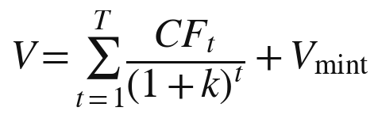
第一项是锁定知识的价值：CF 表示第 t 期的服务净收入，k 是折现率，T 是预期的锁的寿命。第二项是铸币能力的价值，也就是所有者的“我的知识”在未来继续铸出新的锁定知识的价值。
第二项可以进一步写成：
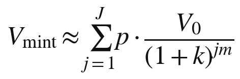
其中 m 是所有者平均每隔多少年铸出一件新的锁定知识，p 是每一次铸造成功的概率，V₀ 是一件新铸成的锁定知识在发行时的价值，J 是所有者预期还能铸造的次数，它取决于所有者的职业生涯还有多长。
六、铸币能力的价值：实物期权
第二项的性质，与第一项很不一样。第一项是已经存在的现金流，第二项是尚未实现的可能性。
金融学中有一个概念，叫“实物期权”，由迈尔斯在 1977 年提出：企业的许多投资机会，就像一份期权，企业有权利、但没有义务在将来某个时刻投入资源去实现它们。一家企业的研发能力、一片尚未开发的油田、一项尚未推出的产品，都具有这种期权的性质，它们的价值不在于已经带来了什么收益，而在于将来可能带来的收益，以及企业可以根据情况选择是否实现它们的灵活性。
“我的知识”正是这样一组期权。它今天不对外服务，不带来直接的收入；但它随时可能铸出新的锁定知识，而所有者可以选择铸什么、什么时候铸、铸了是锁定还是释放。对一位年轻而有潜力的所有者来说，这组期权的价值，往往远远超过他此刻锁定的全部知识的价值。
七、一个示例
下面用一个简化的例子，说明上述公式怎样使用。数字是虚构的，只为说明方法。
设想一位所有者的发生器，今天锁定着一套经过检验的方法。预计第一年的服务净收入为二十万元；随着竞争者逐渐接近，此后每年减少四万元；预计四年后领先耗尽，锁失效。考虑到知识资产的高风险，折现率取百分之二十。
表 34-1 锁定知识的现值计算
| 年份 | 服务净收入（万元） | 折现系数 | 现值（万元） |
|---|---|---|---|
| 第一年 | 20 | 0.833 | 16.67 |
| 第二年 | 16 | 0.694 | 11.11 |
| 第三年 | 12 | 0.579 | 6.94 |
| 第四年 | 8 | 0.482 | 3.86 |
| 合计 | 56 | 38.58 |
四年的服务净收入合计五十六万元，折算成今天的价值约为三十八万六千元。这是第一项。
再看第二项。假设这位所有者大约每两年能铸出一件经济价值与此相当的新锁定知识，每次成功的概率为一半，他预计在未来十年里还能铸造五次。每一件新知识在发行时的价值同样约为三十八万六千元，按百分之二十的折现率，分别在第二、四、六、八、十年发行。计算下来，铸币能力的价值约为三十六万八千元。
两项合计，这件知识资产的价值约为七十五万元。其中，铸币能力贡献了将近一半。这个结果的含义很清楚：一位知识所有者的价值，很大程度上不在于他今天锁住了什么，而在于他明天还能铸出什么。如果他明天就退休，第二项归零，他的资产价值就只剩下三十八万六千元，而且四年之后归零。
这个例子还可以用来说明关键人风险的分量。如果买方在所有者退休时买下这个发生器，他得到的只有第一项，而且没有所有者的持续更新，四年的收入预期可能还要打折扣；第二项则完全留在了所有者身上，无法随发生器一起转让。所以，同一个发生器，对所有者本人与对外部买方而言，价值可能相差一倍以上。知识资产的交易价格，往往会显著低于它在所有者手中的价值，这与普通资产很不一样。
八、估值的风险因素
上面的例子忽略了许多风险，实际估值时必须逐一考虑。
第一是关键人风险：第二项完全取决于所有者本人，他的健康、兴趣与职业选择，都会直接影响铸币能力。第二是基底风险：发生器建立在他人的基底之上，基底提供者提价、改变条款或者停止服务，都会影响服务收益，甚至迫使所有者花费大量成本迁移到新的基底上。第三是蒸馏风险：服务越成功，越容易吸引模仿者，锁的寿命可能比预期短。第四是监管风险：某些领域的服务可能受到新的法律限制，或者被要求强制服务、强制释放。第五是声誉风险：一次严重的服务事故，可能让用户大量流失。
这些风险有的可以通过合同与保险转移，有的只能反映在更高的折现率中。知识资产的折现率，因此往往要比一般的企业资产高得多。
九、估值的三个问题
归结起来，私有知识的估值至少要回答三个问题：它每期能带来多少服务收益？它的领先还能维持多久？它的第一部分源头，能否持续铸出新的第二部分？
第三个问题决定了，一个知识所有者更像一张会到期的债券，还是一家不断发行新债的发行人。前者的价值随时间递减，后者的价值可以随时间增长。这也说明了为什么第三十一章说，“自己花”的那一部分，对知识而言是源头：估值中最大的一项，恰恰来自那一部分。
十、谁来估值
最后一个问题是：谁来估值？
在知识资产的市场尚未形成之前，估值主要依靠专业的评估机构，采用收益法，依据所有者提供的服务记录与财务数据。这里有两个可以借助的基础。第一是服务记录：第十五章所说的“来自使用的知识”，同时也是估值的数据来源，服务了多少用户、收入多少、用户的留存与评价如何，都是估值的依据。第二是公开的检验：第二十章所说的“检验开放”，使第三方可以在不看源头的前提下，评估一个发生器的表现，从而判断它的领先程度。
随着交易的增多，市场法也会逐渐可用：知识资产的转让价格、授权费率、质押时的评估值，都会积累成可以参照的数据。第十编讨论登记制度时将说明，一个统一的知识资产登记系统，还可以为估值提供重要的公共数据。
十一、小结
知识资产需要估值，才能被交易、抵押、继承与计量。它的估值很难，因为没有市场价格、每一件都独特、存续期不确定、价值高度依赖所有者本人。现有的无形资产估值方法中，收益法最为适用。私有知识的价值可以分为两项：锁定知识的价值，像一张票息递减、期限不确定的债券；铸币能力的价值，像一组实物期权。数值示例表明，后者可能与前者同样重要。估值还必须考虑关键人、基底、蒸馏、监管与声誉等风险。有了估值，知识资产才能进入会计与金融，这是下一章的主题。
知识的会计与金融
第一章说，马赫卢普的账本是一本流水账，而不是一张资产负债表：它记下了社会花在知识上的钱，却没有记下知识作为财产的价值。本章讨论知识怎样进入资产负债表，以及进入之后，围绕它可以发展出哪些金融安排：质押、托管、证券化与授权。
一、知识在账上吗
今天，知识在企业的账上是一个很小的科目，在个人的账上则根本不存在。
第四章提到，国际会计准则第 38 号规定，研究阶段的支出必须费用化，只有满足严格条件的开发支出才能资本化，企业内部形成的商誉、品牌、客户名单等不得确认为无形资产。中国在 2006 年发布的《企业会计准则第 6 号——无形资产》，采取了基本相同的原则。企业自己创造的知识，大部分只作为费用出现在利润表上，而不作为资产出现在资产负债表上。
不过，账本并非一成不变。2023 年 8 月，中国财政部发布《企业数据资源相关会计处理暂行规定》，自 2024 年 1 月 1 日起施行，明确了企业的数据资源在符合条件时，可以作为无形资产或存货确认入表。这是一类此前游离于账本之外的资源，第一次在会计上获得了资产的身份。知识资产，完全可能沿着同一条路走进账本。
二、入表的条件
按照现行的会计准则，一项资源要确认为无形资产，大致需要满足几个条件：它可以被单独辨认；它由主体控制；它预期会带来经济利益；它的成本或价值能够可靠地计量。
用这几个条件检验私有知识，前三个大体可以满足。可辨认：发生器及其源头可以被清楚地界定，第二十四章所说的哈希登记，还可以为源头的每一个版本提供唯一的标识。控制：封存与出口控制，使所有者能够排除他人占有，并决定服务的条件。经济利益：服务收入就是它带来的经济利益。
难点在第四个条件：可靠的计量。第三十四章已经说明，知识资产的估值充满了不确定性。按照稳健的会计原则，计量的困难可能使许多知识资产暂时无法以公允价值入表，而只能以成本入表，或者只在附注中披露。但会计准则的历史表明，随着估值方法的成熟与交易数据的积累，计量的门槛是可以逐步降低的。
三、个人的知识资产负债表
企业有资产负债表，个人通常没有。但对知识所有者来说，编制一张自己的知识资产负债表，是有意义的。
表 35-1 一张个人知识资产负债表的样式
| 项目 | 内容 | 计量方式 |
|---|---|---|
| 人力资本 | 本人掌握的、尚未离身的能力 | 不入表，只作说明 |
| 我的知识 | 外化到发生器中的、只在本人条件中成立的知识 | 以铸币能力的估计值说明 |
| 锁定的公共可用知识 | 发生器中经过检验、正在服务的知识 | 以预期服务收益的现值计量 |
| 已释放的知识 | 本人交给公共领域的方法与成果 | 不入表，记为声誉资产 |
| 负债 | 对用户的服务承诺、出口责任的潜在赔偿、基底的长期合同 | 按合同与风险估计 |
这张表的意义，不在于精确的数字，而在于让所有者看清自己的知识财富处在什么状态：哪些还长在身上，哪些已经成为资产，哪些正在产生收入，哪些已经交给了公共领域，以及自己为此承担着哪些责任。第二十五章所说的“知识资产负债表”，在这里有了一个可以操作的样式。
四、摊销与减值
知识资产一旦入表，就要面对摊销与减值。
锁定的公共可用知识有一个事实上的期限，也就是锁的寿命，所以应当在预期的寿命内摊销。第二十九章说过，锁的寿命在领先耗尽、蒸馏追上与主动释放三者中最早的那一刻结束；会计上的摊销期限，应当取三者中预期最早的那一个。
减值则发生在预期发生变化的时候。一个竞争者推出了相近的服务，一次蒸馏使替身模型的表现接近了原版，基底提供者大幅提价，这些都意味着锁定知识的未来收益下降，资产应当减值。知识资产的减值可能来得很快、幅度很大，这与厂房设备的缓慢折旧很不一样。
“我的知识”的会计处理则更为特殊。它不对外服务，没有直接的收入，按照稳健的原则，多半不能作为资产入表；但它又是锁定知识的源头，是铸币能力所在。比较合理的做法，是在附注中说明所有者的铸币能力，包括过去几年铸出了多少新的锁定知识、带来了多少收入，让报表的读者自己判断。这与企业在年报中说明自己的研发能力与在研项目，道理相同。
五、质押：从专利到发生器
资产的一项重要金融功能，是作为借款的抵押或质押。房屋可以抵押，股票可以质押，知识产权也已经可以质押。
中国近年来大力推动知识产权质押融资。据国家知识产权局发布的数据，2023 年全国专利商标质押融资登记金额超过八千五百亿元。一些地方还开展了数据资产质押融资的试点，以企业的数据资源作为增信的依据。这些实践说明，无形资产作为担保物，在制度上已经是可行的。
发生器能否质押？原则上可以，但需要解决三个问题。第一是估值：银行需要知道它值多少，第三十四章讨论了估值的方法与困难。第二是登记：质押需要公示，让其他债权人知道这项资产已经设定了担保，第二十四章所说的哈希登记可以提供基础。第三是处置：借款人违约时，银行要能够处置这项资产，而处置发生器的难题在于，它的价值很大程度上依赖所有者本人，换了所有者，第一部分几乎不值钱，第二部分也可能迅速贬值。所以，发生器的质押，可能首先从第二部分开始，也就是那些在任何人手里都能继续服务、收益相对稳定的锁定知识。
还有一个与质押相关的问题：所有者破产时，他的发生器怎么办？按照一般的破产规则，债务人的财产应当用于清偿债权人。可是，把一个发生器拍卖给出价最高的人，买受人拿到的是方法文件与运行账户，却拿不到所有者本人的 D 与 E；第一部分会迅速失去价值，第二部分也可能因为失去所有者的更新而加速贬值。更合理的安排，也许是由管理人继续运营发生器一段时间，以服务收入清偿债务，或者把第二部分单独转让，而把第一部分作为不宜强制执行的个人财产加以保留。这些都需要破产法作出新的规定。
六、托管与知识银行
第三十二章说，货币制度成熟的标志之一，是出现了专门替人管理钱的机构。知识也会走到这一步。
可以设想一种“知识银行”式的机构，它为知识所有者提供几类服务：托管源头，按约定的条件保管方法文件与发生器，在所有者去世、破产或者约定的释放日期到来时执行相应的安排；运营服务，替所有者处理定价、计费、客户服务与合规，让所有者专注于知识本身；授权撮合，帮助所有者把锁定的知识授权给其他共同体使用，收取费用；以及资产管理，把多位所有者的知识资产组合起来，分散风险。
软件行业的源代码托管，已经为第一类服务提供了现成的模式：软件供应商把源代码交给独立的托管方保管，约定在供应商破产或停止维护等情形下交给客户。知识银行可以把这种模式扩展到更广的范围。
七、证券化：鲍伊债券的启示
1997 年，英国歌手大卫·鲍伊以他此前录制的唱片未来的版税收入为支持，发行了总额五千五百万美元的债券，后来被称为“鲍伊债券”。投资者购买债券，获得的是鲍伊的唱片在未来十年里产生的版税收入。这是知识产权证券化的一个著名案例：一位艺术家把自己作品未来的收益流，提前变成了一笔现金。
私有知识也可以走类似的路。一位所有者的发生器，如果有稳定的服务收入，这些收入就可以作为证券化的基础：所有者把未来若干年的服务收益打包出售，提前获得资金，用于扩大服务或者铸造新的知识。多位所有者的服务收益还可以组合在一起，形成一个分散化的资产池，降低单个所有者的风险。
音乐版权市场后来的发展，同时显示了这条路的机会与风险。2018 年，一家专门收购歌曲版权的基金在伦敦证券交易所上市，大举买入知名作品的版权组合，一度被视为把版权变成稳定收益资产的典范；几年之后，它却因资产估值与经营问题遭到股东质疑，最终被出售。知识收益的证券化同样如此：收益流可以被打包，估值的不确定性却不会因为打包而消失。
证券化的前提是可预测的现金流与可信的记录。这又回到了前面讨论过的问题：服务记录、估值方法与登记制度。
八、授权与知识信贷
货币可以借贷，知识也可以以另一种方式“借贷”：授权。
一位所有者可以把自己的锁定知识在一定期限内授权给另一个私密共同体使用，对方按期支付授权费；期满之后，授权自动终止，调用的权利回到所有者手中，这正是第二十二章所说的“剩余权利”。这种安排类似于租赁或借贷：所有者让出一段时间的使用权，换取收益，而所有权不变。
授权还可以在所有者之间形成一个网络。一位医生的诊断方法授权给一家健康管理机构的发生器，一位律师的合同审阅方法授权给一家企业服务平台，一位教师的讲解方法授权给一个在线学习社区。知识在不交出源头的前提下，在不同的共同体之间流动。
九、风险与监管
知识金融也会带来新的风险。
第一是估值风险：知识资产的价值高度不确定，如果以它为基础的借款与证券过度扩张，一旦价值重估，就可能引发连锁的损失。第二是关联风险：大量的发生器运行在少数几个基底模型之上，一个基底出了问题，许多知识资产会同时受到冲击，风险高度相关。第三是欺诈风险：所有者可能夸大自己的服务收入或者锁的寿命，封存的源头又使外人难以核实。
这些风险需要相应的监管：统一的估值准则与信息披露要求，对基底集中度的监测，对知识资产金融产品的审慎管理。金融史上，每一种新的资产类别在成为抵押与证券的基础时，都经历过类似的制度建设。
十、税收
知识资产进入账本与金融，还会带来税收的问题。第二十二章已经提到，发生器的服务收入应当归入哪一类所得，会直接影响税负。这里再补充几点原则性的考虑。
第一，税收应当尽量中性，不因知识以服务的形式、还是以工资的形式获得收入，而对同样的知识给予差别很大的待遇；否则，知识工作者会为了税收而不是为了效率来选择自己的组织形式。第二，铸造知识的投入应当得到合理的扣除，正如企业的研发费用可以在税前扣除。中国自 2023 年起，把符合条件的企业研发费用税前加计扣除比例统一提高到百分之一百，这类政策可以为知识所有者的投入提供参照。第三，税收可以成为激励释放的工具：对按期释放源头、把知识交给公共领域的所有者，可以给予一定的税收抵免。第二十九章说，“暂时”需要制度的保障，税收正是其中最灵活的一种。
十一、第七编小结
第七编讨论了知识作为财富的一面。私有知识的两部分与货币的两种用途同构：一部分自己花，一部分由所有者掌控他人怎么花；知识第一次像金钱一样可以被完整地支配。但知识与货币有三处不同：不减、不可追、无单位，这些不同是知识经济文明必须补上的制度缺口。知识服务应当按价值定价，词元不是知识的单位，而不会被竞争压平的那一部分价格就是知识租。知识资产的估值可以分为锁定知识的价值与铸币能力的价值两项，前者像一张会到期的债券，后者像一组实物期权。知识资产可以逐步进入会计，并在质押、托管、证券化与授权中成为金融的基础，同时带来新的风险与监管需要。
知识成为财富，就需要能够持续生产它的机器，也需要让它流通的市场。第八编将走进一座知识工厂的车间，看私有知识是怎样被一道道工序生产、判决与交付出来的；第九编再讨论，在知识经济文明中，这样的工厂以什么样的组织形态存在，市场怎样运转，劳动怎样转型，财富怎样分配。
知识经济的“生产机器”
本编取材于作者的另一部著作《让每个人都有自己的思想和知识工厂》（德麦国际专著第 129 号）第五卷“工厂怎么开工”，经删节、合并与改写，术语统一为本书的用法。前七编从存在方式、所有权与财富的角度讨论私有知识；本编转向生产的一面：一个人要让自己的知识持续地、可检验地产出，需要一台什么样的机器。原书所说的“知识工厂”，就是本书第四编所说的发生器，连同它背后那套工序、判决与台账。
一台样机的解剖
一、绕到车间后面去看
一个人开了家小厂，你问他生意怎么样，他说“挺好”。真正懂行的人不会接这句话，他会绕到车间后面去看三样东西：半成品堆了多少，废品桶有多满，机器这个月停过几次。前面那句话是说给客户听的，后面这三样才是厂子的实情。
本编做的就是绕到后面。前七编讨论了私有知识是什么、归谁所有、值多少钱。讲到这里，读者有权问一句：能把私有知识持续生产出来的那种工厂，你见过吗，还是纸上画的？
答案是见过，而且就是本书作者自己那一台。它已经跑了一年多，有进料、有工序、有质检、有出货、有废品处理，也有堵点和停机。所以这一章不设计什么，只做一件事：把这台样机拆开，逐个车间看一遍，把它的实际产能、已知的毛病和至今没量过的地方，一样不落地写出来。
必须先说清为什么要这么写。有真机器却只讲它的好处，那就成了宣传册，而宣传册对读者没有用处：读者要办的是自己那一座厂，他需要知道的恰恰是哪里会堵、哪里会坏、哪一道最费人。何况这台机器是作者自建自评的，它说自己好，本来也不算数。它唯一能提供而别人提供不了的东西，是毛病的清单。
二、先说它出什么货：条目
在拆开机器之前，先说清它出什么货。一座知识工厂的基本产品，是一条“立住了”的判断，这里称之为“条目”。一条合格的条目有七件：主张，即它判定了什么；成立条件，即它在什么情况下成立；来源事件，即它是从哪一次真实的经历中撞出来的，要有日期和具体事件；失败记录，即它在哪里错过；归属，即它是谁的；保质期，即它多久之后需要复检；牵连，即它连着哪几条别的条目，它塌了会牵倒谁。
七件缺了任何一件，都不算条目，只算“半条”。用本书的话说，条目是私有知识可以被记账、检验与服务的最小单位：它的主张可以公开，它的成立条件、来源事件与失败记录，则绑在所有者的 D 与 E 上。
三、八道工序
这台机器从一个问题进去，从一本有书号、有页面、能被调用的书出来。立题之后，中间还有八道工序：
表 36-1 样机的九个车间
| 车间 | 进料 | 出料 | 实际产出（作者自述） | 已知堵点 |
|---|---|---|---|---|
| 零·立题 | 一个方向 | 九题立题卡、覆盖面表、自评分表 | 每题正文 400—460 字；换手评分实测落在 3.3—9.9 之间 | 通过线 7.0，约一半退回重做 |
| 一·出题 | 立题卡 | 九个可写的题面 | — | 九题容易同族，压到底是同一件事 |
| 二·成文 | 一题一对话 | 一篇长文 | 一趟写完 1.6 万—2.35 万字；初稿分多在 136—142 | 不会检索，占位者一律待核 |
| 三·装配 | 初稿 | 提升稿 | 规模涨 15%—60%；分数稳定涨 6—8 分，落在 145—149 | 最费人的一道，无法批量 |
| 四·统稿 | 九篇 | 分工表、术语表、检验清单、文体分配 | — | 篇与篇的重叠要到这里才暴露 |
| 五·评分 | 成稿 | 分数与闸门判决 | 六项十分制、五道闸、两条硬否决 | 写手不当评手，须换手 |
| 六·标签 | 成稿 | 公开或私密的裁定，外加两百字的对外说明 | — | 默认私密，只准降密不准升密 |
| 七·出版 | 定稿 | 书号、封面、版式、成书 | 编号序列已排到一百二十余号，以出版台账为准 | 排版与页数反复 |
| 八·上站 | 成书 | 页面、入库、可被智能体调用 | — | 无裁定卡不许上线 |
这张表里最值得停一停的是工序零。多数人以为一本书的质量由写作决定，这台机器的实测正好相反：立题那一步定天花板。因为出题之前先做了敌意检索，把这个方向上已经有人占住的位置一家家找出来，逐家写清他占了什么、我承认什么、我跟他的分界线在哪、什么样的反例能一刀判我输，所以后面写出来的初稿才落在 136 到 142 这一档，而不是 110 那一档。同一台机器，立题卡不合格的时候，后面两道工序再使劲也补不回来。
这件事对读者办自己那座厂的意义是：别把钱和时间花在写得更好上，花在问得更准上。这跟开饭馆一样，菜做得好是本分，真正决定生死的是你选在哪条街上开。
第二处值得停的是工序三与工序五的关系。装配这一道能稳定地把分数抬高六到八分，靠的不是文笔变好，实测下来，价值几乎全在三件事上：做一次真正的对手检索并正面交手；从另一个完全不相干的领域搬一个结构过来；以及主动认输，把已经被别人占住的那一格让出去，把自己的承重命题挪到唯一还空着的那一格上。这三件里有两件是减法，而多数人改稿只会做加法。
至于工序五，它有一条规矩比技术更要紧：写的人不许评自己写的东西。实测里，写手自评稳定偏高一到两分。这不是人品问题，是位置问题：你知道自己想说什么，就会把没写出来的部分也读进去。
四、三个真毛病
毛病一：这台机器造得出论文，造不出数据。它的分数封顶在 149 附近，够不到 150，而且差的那一分不是措辞问题。原因很干脆：所有需要真跑一次、去现实里取一个数的检验，一项都没有执行。写出来的每一篇都有“若某某读数达到某个值则本文作废”这样的条款，条款写得很漂亮，但没有一条真去取过值。用工厂的话说，这台机器有完整的图纸和完整的验收标准，却从来没把产品拿去做过破坏性试验。这是整台机器最硬的堵点，也是本书第十二编必须给出预言与证伪条件的理由。
毛病二：尺子会因为库变窄而虚高。实测里出现过一次：同一篇文章、同一把尺子、同一个评分人，只因为这一轮少查了四家对手，分数就从 138 涨到了 148。什么都没变好，只是看的人知道得更少了。这件事在任何一个靠自己评自己的系统里都会发生，而且没有任何外部报警：账面上一切正常，分数还在涨。唯一的防法是笨办法：每一张评分卡上强制写清这一轮实际查了哪几家；两轮分数不同时，取查得更宽的那一版，高的作废。
毛病三：两条线同时开工会撞车。同一篇稿子开了两条提升线，各自交一份，文件同名，互相覆盖。这类事故不需要技术解释，任何一个有两班倒的车间都遇到过。处理办法也一样土：动工前先看台账，交付的文件名带上线别。
这三个毛病有一个共同点，值得单独点出来：没有一个会让系统报错。造不出数据，稿子照样写完；尺子虚高，分数照样出来；两线撞车，文件照样生成。这正是这类工厂最危险的地方：它的故障是静默的。所以本编后面反复要求的那些登记、留痕与台账，不是管理癖好，而是这台机器唯一的报警装置。
五、产能上限在哪
有人看到一年出一百多本书这个数字，第一反应是：那不是可以无限印下去？不能。上限有三个，而且都是硬的。
第一个上限在维护，不在生产。一条知识不是写完就完了，它要被复检、被撤回、被牵连计算。按一条每年十分钟的维护成本粗算，两百条就是一年一百小时左右，所以一个人能真正维护的条目，大约是一百到三百条。超过这个数以后不会崩，会静默地退化：复检开始跳过，牵连开始省略，碰撞开始挑软的打，而账面上的条目数还在涨。这跟仓库一样：货堆到一定程度，盘点就变成走过场，但库存表上的数字依旧漂亮。
第二个上限在评分。规矩要求换手评，那么每多出一本书，就多出一次必须由另一个人或另一场来评的需求。生产可以并行，判决不能并行：判决权一旦分给很多人，尺子就开始漂。这是这台机器目前最真实的瓶颈，第三十八章将专门讨论。
第三个上限在共同体的规模。实测与推算都指向五到十五人这个区间：一个人自己跟自己对账太薄；人一多，账就会变成考核，而账一旦变成考核，判负的记录就会消失，因为没有人愿意在考核表上写自己错了。
三个上限合起来说明一件事：这类工厂的天花板不在市场那一头，而在维护与判决这一头。这和大多数互联网生意正相反，也是本编不谈流量、只谈产能的原因。
六、哪些是工序，哪些是人
这是整台机器最难说清、也最该说清的一处。
把八道工序摊开看，真正已经工序化的是这几道：成文、出题、排版出版、上站入库。它们有固定的输入、固定的输出、可以复述的步骤，换个人照着做，结果大体相同。学员那一侧的实证也支持这一点：已有学员走完全流程，出到了第二本书，书号、页面、子站都在，说明流程本身是可以交出去的。
还没有工序化、目前仍然长在作者身上的，至少有三件。一是切方向：九个方向从哪里切出来，这不是按步骤能得出的，是判断。二是裁定：哪一条是承重、哪一条只是装饰、哪一条该撤，落到最后都是一个人拍板。三是那把尺子本身：什么算“新”，什么算“已经被人占了”，判准目前写在规程里，但规程的解释权还在作者手上。
用本书的话说，这三件正是作者的“我的知识”：它们只在他自己的 D 与 E 中成立，还没有被外化成工序。这台机器里有多少是“我”，不能靠感觉回答，得有一个量法。最简单的形式是：把作者完全不参与的产出挑出来，看它们的分数比有作者参与的低多少。这个落差，就是“人”在机器里所占的比重。落差小，说明工序已经独立，这类工厂可以长大；落差大而且不随时间缩小，说明它本质上是一个工作室，而不是一个平台，关于这类工厂怎样扩大规模的一切讨论，都要重写。
这个落差至今没有取过值。它是这台样机第一顺位的欠账。
七、本章的读数、作废条件与欠账
本章的读数是“创始人落差”：无作者参与的产出分数的中位数，与有作者参与的产出分数的中位数之差。取值方式是各取不少于五件同类产出，由第三人盲评，评分人不知道哪一件有作者参与；取值的日期须随数字一并登记。
本章有三条作废条件。一、若创始人落差接近零，则“三件事仍长在作者身上”的判断不成立，第六节作废。二、若这台机器的产能数字被外部核验推翻，比如编号序列与实际成书不符，或者评分区间与第三方复评相差一个档次，则本章的产能表全部作废，并须补充说明差错的来源。三、若三年内仍没有任何一项真跑过的检验，则“这是一台能用的机器”这一判断，降级为“这是一台能出货、但从未被现实检验过的机器”。
本章还有几笔欠账需要照实登记：本章所有产能数字都来自作者自己的产线记录，未经外部审计；第四节的三个毛病是作者自己发现并记录的，因此必然遗漏了作者看不见的那些毛病，一个自己给自己做质检的系统，最严重的故障通常正是它检不出来的那一类；第五节维护成本的单位时间是估计的，换一个估值，结论会移动；学员走通全流程的样本还很小，而且每一台机器开机时作者都在场，它证明了流程可以交出，却没有证明流程可以在作者不在场时被交出。
工序即产品
一、配方和手艺
靠大厨手艺的馆子，大厨走了店就塌；靠配方和工序的馆子，换个人照样出那道菜。这件事在餐饮业里早就不是问题了。但要注意，解决它的不是“把配方写下来”这么简单。真正让一家馆子能开分店的，是一整套东西：每一步用多少料，火到什么程度，什么算合格，不合格怎么办，谁来尝这一口。配方只是其中的一小部分。
知识工厂面对的是同一个问题：一个人偶尔想对一次，那是天气；能一年到头稳定地想对，那才是厂。从前者到后者，中间隔的就是工序。本章讲三件事：工序化到底是什么意思，它能做什么、不能做什么，以及它会怎样退化。
二、工序化不是“写下步骤”
先破一个常见的误解。很多人以为工序化就是把做法写成一二三四，写完了贴在墙上，就算有了工序。这不够，而且差得很远，因为写下来的步骤解决不了工序要解决的那个核心问题：不管今天状态如何，该走的几步都得走。
人的状态是会波动的。今天精神好，多问两轮；明天赶时间，就放自己一马。而放过去的那几轮，往往正是最该问的，因为难受的地方就是有东西的地方，而人会自动绕开难受的地方。一份贴在墙上的步骤，挡不住这种绕开。真正的工序需要三样东西，缺一样都不成立。
第一样，顺序是锁死的。以样机上立条时的四轮追问为例：先钉具体，再找对手的解释，然后问来源，最后逼边界。这个顺序不能换，也不能跳。跳过第二轮直接问来源，人会给你一个他早就准备好的故事；走完第二轮之后再问来源，那个故事已经被三个对手的解释挤掉了，剩下的才是真的。
第二样，每一步有可以判定的完成标准。不是“问得差不多了”，而是“至少列出三个别的原因并逐个排除”“给出年份和具体事件”。可以判定的意思是：第三个人来看，能看出这一步走没走完。
第三样，没走完的留痕。有时候确实走不完：他想不起来，时间不够，这条东西还不到火候。这没关系，但必须记下这一步没走完，而不是含混过去。一条标着“第三轮没走完”的条目，将来出问题时可以立刻回去查那一轮；一条含混过去的，出了问题无从查起。
三样合起来，工序才从“一份说明”变成“一道真的关”。
三、工序为什么是这个顺序
上一章列出了样机的各道工序，这里补一件事：为什么是这个顺序，换了会怎样。
立题在最前面，这一条最反直觉，也最要紧。多数人的做法是先想到一个好想法，再去看有没有人做过；样机的工序反过来，先把这个方向上已经有人占住的位置一家家找出来，再决定问什么。先有想法再去查，人会不自觉地为自己的想法辩护：查到相似的，会说“他那个不一样”；查不到，会松一口气。先查再想，看到的是一片真实的地形，然后才在空着的地方下手。
追问在中间，而且必须一题一次。不能把九个问题一起丢过去，一起丢，出来的九个答案会互相靠拢，变成同一套话的九种说法。评分在写之后，而且评的人不能是写的人。定标签在出版之前，但定的时机要更早，最好在立题的时候就定下哪些公开、哪些不公开，理由在第三十九章细讲。
四、工序能做的三件事
第一件，防状态波动。有工序的人，状态差的那天产出仍然合格，可能慢一点，但不会漏掉该问的那几轮。这件事在客户身上的价值比在所有者身上更大，因为客户是业余选手，他的状态波动比所有者大得多，而且他没有经验判断“今天这样够不够”。
第二件，可以交出去。一件事如果只存在于一个人的判断里，它就只能由这个人来做；变成工序之后，别人可以照着做，虽然做得不如原来那个人好，但做得出来。每多一件东西被工序化，“这台机器里有多少是我”的那个比例就降低一点。要老实说，这件事目前做得很不够：样机里工序化程度高的，是成文、排版、出货这些偏机械的环节；切方向、下裁定、用那把尺子，这三件仍然长在一个人身上。
第三件，也是最容易被忽略的一件：工序让错误可以被追查。一条东西出了问题，如果它是按工序做出来的，就可以回去查是哪一道出的错：是立题那一步的地形没看清，还是第二轮的对手解释没排完，还是评分那一道放了水。没有工序的产出，出了问题只能得出一个笼统的结论：“这次没做好。”这个结论毫无用处，因为它不指向任何可以改的东西。
五、工序不能做的三件事
同样要说清工序的边界，否则它会被当成万能的。
第一，工序判断不了“该问什么”。工序能保证四轮走完，但选哪个方向去问，是判断，不是工序。同样一个人，问他“你为什么那样定价”，和问他“你为什么留下那个员工”，出来的东西完全不同，而选哪一个，是有经验的人当场决定的。
第二，工序保证不了产出值得存在。一条东西七件齐备、四轮走完、评分合格，它仍然可能是一条没什么用的东西，因为它问的可能是一个本来就不重要的方向。工序能保证它形式上成立，不能保证它值得存在。这也是为什么判决那一层不能省，而且不能交给工序，第三十八章整章讲这件事。
第三，工序拦不住“写得太像样”的假东西。有三种构件最容易做假：成立条件从成功案例倒推，来源事件没有日期，牵连绕了一圈又回到自己。这三种全都能通过工序，因为它们在形式上完全合格。拦住它们的只有两样：判决，有经验的人一眼看出条件是倒推的；以及现实，用一次就知道。
六、工序会退化
工序不是建起来就一直有效的，它会退化，而且退化是静默的。常见的有三种方式。
第一种是偷步。熟练之后，人会发现有些步骤“通常”不影响结果，于是开始跳；跳了几次没出事，就变成习惯。而它出事的那几次，恰恰是最重要的那几次，因为如果一步通常不影响结果，它存在的意义本来就在于处理那些不通常的情况。防法是留痕：跳了要记一笔。记的动作本身，会让人少跳很多。
第二种是形式化。步骤还在走，但走成了填表：四轮追问照样问，问的人心不在焉，答的人应付了事，四个格子都填满了，一条东西也没有被真的逼出来。这一种最难察觉，因为所有的记录都是完整的。防法是看产出：一个周期下来，有没有哪一条的条件因为追问而被改过？一条都没改，这几轮追问就全是表演。一个从不撤回、从不修改任何条目的库，最值得怀疑。
第三种是加码。工序会越来越长：每出一次事故，就加一道检查；每发现一个漏洞，就加一条规矩。几年下来，工序长到没有人能完整走完，于是所有人开始各自挑着走，而各自挑着走，等于没有工序。防法是加一条就要考虑减一条，并且定期问每一道关：它上次拦住东西是什么时候？很久没拦住过任何东西的关，要么去掉，要么说明它拦的是前面那道关已经拦掉的东西。
七、第一版工序怎么定
读者中有人要自己建一套工序，这里给出从零开始定第一版的五条经验。
第一条，从失败里倒着定，不要从理想里正着定。正着定，是想清楚一件事该怎么做，写成一二三四，这样定出来的工序通常很完整、很合理，却拦不住任何东西。倒着定，是回想最近几次做砸的事，问“如果当时有哪一步，这件事就不会发生”，然后把那一步定为工序。样机上那几道最有用的关，全是这么来的：评分不能由写的人来评，因为发现了自评稳定偏高；每张评分卡要写清这一轮查了哪几家，因为出过一次少查几家、分数凭空高出十分的事；交付文件名要带线别，因为出过两条线同名互相覆盖的事。三条都很土，都不成体系，但每一条都拦住过真实的事故。
第二条，第一版要短到能完整走完。一套二十步的工序，第一周还能走完，第三周就开始挑着走了。第一版建议不超过五步，少到在赶时间的那天也能完整走完。宁可漏，不可跑不动；漏掉的部分，等它真出了事故再加。
第三条，每一步要有可以判定的完成标准，而且标准要能由第三人核查。判断一个标准够不够硬，只需问一句：换一个人来看这条记录，他能不能判断出这一步走没走完？不能的，重写。
第四条，写清楚每一步是为了拦什么。每一道关旁边写一句：它是为了防止什么。有了这句话，新人能明白为什么要走这一步，而不是死记；“很久没拦住东西的关要去掉”这条规矩，也才有判断的依据。
第五条，定一个复盘的节奏。三个月看一次：这三个月出过哪些事故，有没有哪一道关拦住过东西，有没有哪一道关一次都没拦住过。
第一版一定是错的，它会漏掉重要的步骤，也会包含没用的步骤。这没关系，因为工序是长出来的，不是设计出来的。真正要紧的不是第一版多好，而是有没有那个从事故里往回补的机制。
八、本章的判别式与欠账
判断一套工序是不是真的，看三样：顺序锁死了没有，每一步有没有可以判定的完成标准，没走完的有没有留痕。工序的三条边界是：它判断不了该问什么，保证不了产出值得存在，拦不住写得太像样的假东西。
本章也有几笔欠账。“切方向”这件事没有被工序化，而它恰恰是决定产出价值的那一步，这意味着“工序即产品”这个标题有水分，真正决定产品的那一步还在工序之外。三种退化里的第一种，偷步，最容易犯，样机记录过的那几个真实事故中是否有偷步的结果，还没有逐一核查。“加一条就要考虑减一条”这条规矩，至今还没有真正执行过。
判决是产品的一部分
一、验货的那个人
早年做生意，有一个角色现在不太见得到了：验货的。一批货到了，他打开，抽几件看，然后说收还是不收。他不生产，不销售，只做这一件事。而整条链子的信用，实际上压在他那一句话上，因为买家没法自己验，只能信他说的。
这个角色之所以能存在，靠的是两样东西：他的判断是稳定的，同样的货，今天说收，明天也说收；他不被利益左右，卖家给他塞钱，他不收。任何一样塌了，这个角色就没有价值了，而且塌了之后所有人都会知道，只是可能要过很久。
知识工厂里也有这个角色。它不是附加服务，而是产品的一部分，而且是唯一一样抄不走的部分。第十四章说，在无源的知识世界里，担保从来源转向检验；在一座知识工厂内部，这种“检验担保”就落在判决这一层上。
二、判决判的是哪三件
先把范围说清楚，免得把判决理解成“给个评价”。
第一件：这条算不算新的。也就是说，这个东西是不是已经有人说过了。这一件最花工夫，因为它要求真的去看别人已经占了哪些位置。这一件也最容易糊弄：说“我觉得这个挺新的”不花一分钟，真去查要花几个小时；糊弄了之后也没有任何人会发现，除非哪天有人指出来，而那时候代价已经很大了。
第二件：这条算不算立住了。七件齐不齐，条件是不是从成功案例倒推的，来源事件有没有日期，牵连是不是绕回来的。这一件有明确的标准，相对好判。但要记住，这套东西的敌人不是懒得写，而是写得太像样：一条形式上完全合格的假条目，只有经验能认出来。
第三件：这条该不该撤。已经在库里的东西，条件变了没有，还成不成立，要不要作废。这一件最少被重视，也最要紧。一个库的健康，不看它有多大，而看它上个月删掉了多少。删这个动作，需要一个人来判、来承担，而没有人愿意主动删掉自己写过的东西。
三、为什么判决不能分
判决之所以不能轻易分给别人，理由不是“别人水平不够”，别人的水平完全可能比你高。理由是：一把尺子的稳定性，来自它被同一双眼睛连续用过很多次。
任何一套判决标准，写出来都是有限的几条。而实际判的时候，每一件东西都有它的特殊之处，是标准没有覆盖到的，这时候靠的是判例：以前遇到过类似的，当时是怎么处理的。这些判例不在纸上，而在判的那个人的记忆里。他判到第一百件的时候，心里有九十九个参照点；换一个人来判，他手上只有那几条写下来的标准，没有那九十九个参照点。
结果是：同样的东西，两个人判出不同的结果，而且双方都认为自己是按标准判的。更麻烦的是，这件事不会有人抗议。客户不知道标准漂了，只会觉得“这次判得比较松”或者“这次判得特别严”，这种感觉积累起来，就是“他们的标准看心情”。一旦客户形成这个印象，判决的价值就归零了，因为一个看心情的判决，跟没有判决是一样的。
那尺子就永远不能交出去吗？不是不能，而是要先有足够多的判例被写下来，写到一个新人拿着这些判例，也能判出大致相同的结果。这是本章第八节要讨论的事。
四、两条硬否决
判决要能执行，光有标准不够，还要有几条无论如何都不放行的红线。这里有两条，都是硬的。
第一条是引证不实：一条东西里引用了别人的说法、数据或案例，而这些东西核不上，年份错了，出处对不上，数字是凭印象写的，甚至是编的。这种错误会往下游污染：一条建立在虚假引证上的判断，会被当成地基，上面还会盖别的东西；等哪天发现地基是假的，上面盖的全要拆。而且这种错误在后面的工序里补不了，因为后面的人看到的是一条形式完整的条目，不会去核它的引证。样机在这一条上出过事：立题阶段引用的一家刊物实际上早已停刊，卡片上却写着停刊之后的年份。这不是态度问题，是没有去核。
第二条是同族重复：两条东西压到底是同一件事，只是换了说法。它会在很后面才爆发。单看每一条都成立、都合格；等到要把它们合成一本书，或者要算一个人的库里到底有多少条真正不同的东西时，才发现其中三条其实是一条。那时的处置成本极高：要撤掉两条，而它们已经被别的条目牵连了。怎么判同族？不是看主题词像不像，而是把两条各自压成两件东西：它判定的对象是什么，用的判据是什么。两件都相同的，就是同族，不管说法差得多远。
这两条之所以被单独设成“硬”的，是因为它们的共同特征是往下游污染，而且后面补不了。别的问题，比如写得不够清楚、条件不够细、牵连没写，都可以在后面的周期里改；这两条不行。
五、撤名条款
与判决配套的，还有一条管更后面的事的制度：撤名条款。它的意思是，如果将来发现有人更早提出过同样的东西，那么“这是新的”这一原创性主张就要撤销，即使后来的检验结果仍然表明这条判断成立。两件事分开：撤的是“新”，不是“对”。
为什么要有这一条？因为没有它，判决的第一件，也就是“算不算新的”，就没有后续的纠正机制。判的时候查不到，不代表不存在，世界上的东西太多了，任何一次检索都是有限的。有了撤名条款，“我查了，没查到”这句话才是诚实的，因为它同时承诺了“查到了就撤”；没有这一条，那句话就变成了“我宣布它是新的”，而那是任何人都没有资格宣布的。
这一条款还有一个好的副作用：它降低了判决的压力。判的人不必担心“万一漏了怎么办”，因为漏了有补救；而没有补救的时候，人会倾向于不判，或者判得很含糊。
六、判决的三种腐蚀
判决会坏，而且坏的方式很日常，常见的有三种。
第一种是人情。判的对象是熟人、老客户、帮过你的人，他那条东西在边缘上，往左判不合格，往右判合格。这时候没有任何外力，全凭自己；而判合格对所有人都好：他高兴，你省事，没有人受损，除了那条标准。防法是把边缘案例的判例写下来并且公开。写下来之后，下一次面对类似的情形，你面对的不只是这个人，还有上一次的自己。
第二种是收入。更隐蔽的形态不是收钱放行，而是不敢判不合格：一个付了钱的客户，判他不合格，他可能不续了；判合格，他会很满意。这中间的差别，就是这个月的收入。防法是先把钱安排好：费用按周期事先约定，退款的条件事先写清，判决的结果不影响这一周期的收入。这条防法听起来跟判决无关，实际上是唯一有效的一条。
第三种是疲劳。积压了二十件要判，而判一件要认真花时间，判到第十五件的时候，标准会不自觉地松。这一种最无辜，也最常见。防法是限量：最高一层的判决服务只能限量，不能靠扩容来多收。超过产能的判决，质量一定下降，而且下降的时候没有任何提示。
七、判决必须留痕，客户必须能质疑
判决要留痕。每一次判决记三样：判的是什么，结论，依据。第三样最要紧，依据是指“因为它的条件是从成功案例倒推的”这种具体的话，而不是“质量不够”。留痕有三个用处：积累判例库，让第三节所说的那九十九个参照点变成纸上的；自查，回头看会发现某类问题反复出现；以及应对质疑，有据可查，而不是靠嘴说。
客户必须能质疑判决。这一条听起来危险，似乎会让判决失去权威。正相反，一个不能被质疑的判决是没有信用的，因为外人无法区分“它一直是对的”和“没有人敢说它错”。质疑要有一个形式，否则会变成扯皮：质疑必须指出具体哪一条依据不成立，并且给出一个反例。说“我觉得判得太严”不受理；说“你说我这条的条件是倒推的，但我这里有一次条件不满足、结果也确实不成立的记录”，就受理，而且如果成立，就改判。改判也要留痕。一份有改判记录的判决，比一份从来没改过的更可信，因为它证明了这套标准是可以被现实纠正的。
八、判决怎样才能被学会
判决不能分，是因为尺子的稳定来自同一双眼睛的九十九个参照点；要让这门手艺传下去，就得把参照点写到纸上。路有四步。
第一步，把已经判过的写成判例，而不是写成规则。规则是“条件不得从成功案例倒推”，短，好记，却不够用，因为下一次遇到的情形不会完全一样，人会在不一样的地方各自发挥。判例则长而麻烦：某年某月，某条关于客户续约的判断，条件写的是“对方公司在扩张期、对接人有决策权、行业景气”三条；问他有没有见过三条全满足而客户仍然不续的，他答有一次；问这三条是怎么来的，他答是把续约成功的五个客户的共同点列出来的；判不合格，条件是倒推的，须补上反面的情形。判例传递的，是规则在具体情形里的分寸。
第二步，判例要带着当时的犹豫一起写。比如写明：这一条犹豫了很久，因为那五个案例确实分属不同的行业，本来可以算作一定程度的检验；最后仍判不合格，理由是不同行业不等于反面情形；如果他能补出一个三条都满足而客户未续约的例子并加以解释，就改判。带犹豫的判例，才教得会边缘上怎么判，而边缘正是新人最容易判错的地方。
第三步，新人先判，老人复判，两份都留。几十次之后，系统性的偏差就会显出来，比如新人普遍对“来源事件没有日期”太宽松，对“条件写得不够细”太严格。估计要一两百件，才能对齐到可以独立判的程度。
第四步，也是最难的一步：接受尺子会变。判决一旦交了出去，尺子就不再完全由一个人控制，它会漂，因为新人会带来他自己的参照点。这件事不能完全避免，只能处理：定期让几个人分别判同一批东西，差异大的地方回去补判例。这一步之所以最难，是因为它要求承认尺子不是一个人的了。原书作者坦言，他自己卡在这一步：每次有人判得跟他不一样，他的第一反应仍然是“他判错了”，而不是“我们该补一条判例”。第三十六章所问的“这台机器里有多少是我”，答案可能有很大一部分不在工序上，而在这里。
本章的欠账同样要登记：写下来的判例还很少，所以“把判例写下来尺子就能交出去”目前只是设想；疲劳造成的判决质量下降，判的人自己无从评估；撤名条款至今没有被真正触发过一次，一条从未被触发的条款，有效性是未知的。
公开与私密那道闸
一、后厨和账本
一家老字号，有两样东西的处置正好相反。后厨关着门：配方、火候、那点手感，不对外。这不是小气，而是那家店之所以是那家店的原因。账本是开着的：哪天进了什么货，花了多少钱，卖了多少，退过几次，这些不但自己记，该给人看的时候也给人看。两样东西性质不同，所以处置不同：后厨关着，店才有独特的东西；账本开着，别人才敢跟你做生意。
知识工厂需要同一种分法，而且必须在很前面就定下来。本章讲那道闸：什么公开，什么不公开，谁来定，什么时候定。它是本书第四编所说“生产力与公开相分离”在一座工厂里的具体操作。
二、四格
一件东西出来，有四种去处。
表 39-1 一件产出的四种去处
| 格 | 处置 | 放什么 | 对应本书的说法 |
|---|---|---|---|
| 第一格 | 完全公开：全文可读、可引用、可转载 | 主张层的东西 | 公共知识 |
| 第二格 | 主张公开，条件私密 | 结论发出去让人挑，成立条件、来源事件、失败记录留在自己手里 | 检验开放而源头封存 |
| 第三格 | 只能用，不能引 | 全文不公开，只作为原料，让发生器调用 | 锁定的公共可用知识，交出发生而不交出源头 |
| 第四格 | 完全不外出 | 只有本人看：涉及别人隐私的，还没想清楚的，说出来会伤到具体的人的 | “我的知识”的原始记录 |
第一格是主张层该去的地方。主张一旦说出，贬值得飞快，捂着没用；而且不公开，就没有人能挑错。
第二格是知识工厂的主场。它之所以能成立，是因为保护与检验走的不是同一条道：保护，靠成立条件绑在具体的人身上；检验，靠主张被公开质疑。第二十章所说的“检验开放”，在这一格里落了地。
第三格是新的。它在从前不存在，因为从前“传递服务”和“传递知识”是同一个动作。它需要一个载体才能成立，这个载体就是发生器：条目本身不交出去，但基于它产生的回答可以出去。
第四格不参与任何服务，但它往往是最值钱的那部分，就像老字号后厨里那点谁也学不走的手感：它不卖，可它是前面几格能卖出价钱的原因。
三、默认私密，只准降密不准升密
四格定好之后，要立两条规矩。
第一条：默认是私密。一件东西出来，如果没有明确的判定，它就是私密的，而不是“默认公开，觉得敏感再收起来”。理由是这两个默认值的出错代价完全不对称：默认私密，错了的代价是一件本可以公开的东西晚公开了几天，可以补；默认公开，错了的代价是一件不该出去的东西出去了，补不了。
第二条：只准降密，不准升密。已经公开的东西，不能追认为私密。这一条常被违反：一件东西公开了，后来发现其中有一段其实不该说，于是想撤回来，标成私密。撤不回来了。它已经被人看过、存过，也许还被引用过。你可以把它从自己的地方删掉，但那只是让自己看不见，不是让它消失。正确的做法是接受它已经公开，然后处理后果。这条规矩在制度上的意思是：公开是一个不可逆的动作，所以它要被当成一个正式的决定来做，而不是顺手做掉。
四、这道闸为什么必须在最前面
标签要在立题的时候定，而不是写完再定。很多人觉得奇怪：东西还没写，怎么知道该不该公开？理由是：知道要公开，写法会不一样。
一个人带着“这篇将来要发出去”的预期去写，会下意识地做几件事：把最锋利的那几句磨钝，把那些会得罪人的具体例子换成泛指，把自己吃过的亏说得轻一点，把还不确定的地方写得确定一点。这些修饰全部发生在写的过程中，而他自己往往察觉不到。反过来，一个人知道这篇只给自己看，他会写得更狠、更具体、更肯承认自己哪里蠢过。后一种才是有价值的那种。
所以标签先定的真正用处不是管理方便，而是让人带着确定的预期去写：这篇是私密的，你可以把话说到底；那篇是公开的，你从一开始就按公开的分寸写，不要写完了再去删削。写完再定的做法，会同时毁掉两边：私密的那部分已经被自我审查过了，因为写的时候不确定；公开的那部分又带着删改的痕迹。
五、私密的东西怎么对外
第二格与第三格有一个共同的问题：东西不公开，别人怎么知道它存在？如果完全不说，它对外就等于不存在，别人无从知道你在这个方向上有积累，也就不会因此找你。
处置办法是给每一件私密的东西配一份很短的对外说明，规格是两百字以内，必须包含三样，禁止一样。必须包含的三样：一，它判的是什么，一句话说清这件东西处理的是哪个问题；二，它的读数叫什么、单位是什么，也就是它用什么来量，一件说不出读数的东西，多半还没想清楚；三，它的一条作废条件，什么情况出现，这件东西就不成立了。禁止的一样是形容词：不许写“深入的”“系统的”“突破性的”“重要的”，一个字都不许。因为形容词是唯一无法被核实的东西，一份允许形容词的对外说明，会迅速退化成宣传文案，而宣传文案对读的人没有任何信息价值。
这个规格的好处是双向的。对外，读的人能判断这件东西跟自己有没有关系；对内，写的人如果写不出这三样，就说明这件东西本身还没立住，写这两百字的过程，本身就是一道检验。第二十四章所说的“不公开内容的公示”，在这里有了一个可以照着做的格式。
六、五种常见的误判
这道闸执行起来，有五种常见的判错，前三种是判得太松，后两种是判得太紧。
一，把已经公开过的东西判成私密。已公开的，只能锁死为公开。二，把“没人看得懂”当成私密。有些东西写得晦涩，作者觉得反正别人看不懂，就当私密。这不是私密，这是写得不清楚；私密是一个处置决定，不是一种表达效果。三，把“还没写完”当成私密。没写完的东西应该待在“未立条”的区域里，不该进四格，四格管的是已经成形的东西。
四，把自己所有的东西都判成私密。这是最常见的判太紧，理由通常是“都很重要”。它的后果是：一个从来没有被公开质疑过的库，成色是不可知的；而且它切断了知识工厂最好的一条获客通路，那就是做成了的东西被发出去、被人看见。五，把条件层也一起公开了。这是判太松中最严重的一种，而且往往出于好意：为了让文章更有说服力，把自己怎么得出这个结论的过程全写了进去。写进去的那一刻，这条东西就不再绑在他身上了，别人可以照着走一遍。它感觉上是慷慨，实际上是把自己那座厂拆了送人。
七、涉及别人的那部分
四格管的是“这件东西对外到什么程度”。还有一个问题四格管不了，而它在实际操作中出现得非常频繁：一条东西里写到了别人。一条关于“某类客户要先打电话再发邮件”的判断，背后是某个具体的客户；一条关于“那个供应商的料冬天会发闷”的判断，点名了一家公司；一条关于“带新人第三个月要放手”的判断，来源事件里有一个具体的人。这些内容涉及的是别人的利益，不能只按公开与私密来判。第二十七章已经从个人信息保护的角度讨论过这个问题，这里给出三条操作上的规矩。
第一条，来源事件里的人，写角色不写名字，除非必要。“某年某月，一个做了三年的技术出身的下属”，这样写就够了。多数时候，名字对这条判断的成立没有贡献，只是写的时候顺手写了。如果这条判断的成立条件确实与那个具体的人绑定，正确的做法不是写上名字，而是把这一条判为第四格。
第二条，涉及别人隐私、健康、家庭与过失的，一律第四格，不管它对这条判断多么重要。这会损失一些东西，因为有些最有价值的判断，恰恰来自那些很私人的场合。损失就损失，这一条不讲价：那些内容的所有权不在写的人手上，他可以拥有自己的判断，不能拥有别人的事。
第三条，涉及商业秘密的，按合同走，而且要在开始之前问清楚。一个在公司里上班、用自己的钱建库的人，他立的东西很可能触及所在公司的信息。这件事要在第一个周期开始前就问一句：“你这些东西里，有没有你公司会介意的？”大多数人从来没想过这个问题；想过之后，他们通常会自己把界线划得更清楚，因为那是他们自己的风险。
这三条规矩与“把话说到底”的要求会发生冲突。处理的办法是分成两层：内层是给自己看的原始记录，什么都写；外层是条目，按三条规矩过滤。原始记录不进四格，它不是条目，而是写条目的材料，只留在自己的设备上，不进任何库，也不参与任何服务。这个办法不完美，原始记录终究存在，仍然可能泄漏；但它至少把“我需要把话说到底”和“别人的事不该被我拿去用”这两件事分开了。涉及真实法律风险的情形，必须请教专业人士。
八、这道闸自己的作废条件
一套制度也要写明自己什么时候不成立。这道闸有三条作废条件。
第一条：如果“只能用、不能引”的第三格实际上挡不住，也就是说，一个人通过不断提问，就能把底本大致重建出来，那么第三格不成立，应当并入第一格。这件事是可以测量的：让一个人只许正常提问，看他要问多少次，才能重建出大半承重的内容，这个读数可以称为“半萃取次数”。它就是本书第十五章所说的蒸馏，在个人尺度上的度量。
第二条：如果分层保管的成本超过了它带来的好处，这道闸就该简化。四格意味着每一件东西都要判一次、记一次、守一次；一个人的库如果只有几十条，这套东西可能比库本身还重，小库用两格就够了：公开的，和不公开的。
第三条：如果“成立条件绑在人身上，所以拿走没用”这个前提被推翻，比如有一天，从一个人公开的痕迹里就能相当准确地还原出他的成立条件，那么整道闸就失去了意义，闸门再严也没用，因为要挡的东西已经从别的门出去了。
三条之中，第一条最可能发生，也是唯一可以在一周之内测出来的。至今它还没有被测过；原书作者承认，整个分层的价值有一半压在第三格上，而第三格的有效性，恰恰还是未知数。
交付与出厂合格
一、四样东西
一座知识工厂为客户建成，交付那天，他拿到什么？四样东西：一本账，一批立住的条目，一个出口，以及一个能替他回答的东西。
本章讲每一样怎么做、验收标准是什么，因为一件交付物如果没有验收标准，就无法判定交付完成，而无法判定就一定会产生争议。本章还要讲整座工厂的出厂标准。先说在前面：四样里有一样是交付不了的，第五节讲它。
二、一批立住的条目
这是核心，也是最实在的一样。做法上只补一条：别按主题组织，按承重关系组织。多数人整理东西的本能是分类，按项目分，按年份分，按业务模块分。这种整理方式好看，却没用，因为它不告诉你哪一条塌了会牵倒哪几条。正确的方式是标出承重关系：这一条连着哪几条，那一条如果被推翻，哪几条要跟着重看。这样组织出来的东西，看起来不整齐，但它能回答一个分类法回答不了的问题：我现在最不能出错的是哪三条。
验收标准有四条：数量达到这个周期约定的条数；每条七件齐备，缺件的不算数；承重关系已经标出，至少能指出哪几条是承重的；至少有一条已经被试过，也就是在这个周期里真的被用在了一个决定上，不管结果对错。第四条最容易被漏掉，却最重要：一批从来没被用过的条目，跟一批读书笔记没有区别。
三、出口：一本书和一个站
出口有两种形态。
第一种是书。在所有的出口形态里，书有一种别的形态没有的性质：它是封闭的。一篇文章可以一直改，一个页面可以随时更新，一本书一旦出版，那个版本就固定了。固定意味着可以被追究：三年之后有人拿着它来说“你第四章那个判断不成立”，你没法说“我已经改了”。出一本书，等于把一批判断钉在一个时间点上，署上自己的名字。书也有它不擅长的：慢，贵，改不了，大部分人不会读完。所以它不该是唯一的出口。书也不是把条目堆起来：条目是给自己用的形式，读者看不下去，书需要把它们重新组织成一条可以读下去的线，而那些条件、失败记录与边界一件都不能丢。分寸是：读起来像一本书，查起来像一本账。书的验收标准有三条：有书号或者等价的固定形态；每一个主要判断都能在书里找到它的成立条件；有一节专门写书中哪些地方作者自己也不确定。第三条是硬的，一本不写不确定之处的书，违反了这套东西自己的规矩。
第二种是站，也就是一个稳定的地址。它有三个理由，一个比一个重要。一是能被找到：东西发在别人的地方，那个地方改规则、关门、把你的东西删掉，你没有任何办法；一个自己的地址，是最低限度的产权。二是能被引用：一个稳定的地址，意味着别人可以指着它说“他在这里说过某某”，这是信用积累的前提。三是将来能被交易：一件东西能被交易的前提是它有地址、有主人、能被找到，一件找不到的东西，永远不可能被交易。判断标准很简单：如果你明天跟所有的服务商都断了关系，这个地址还在不在你手上。站的验收标准也有三条：地址稳定且归客户所有；上面的内容客户可以自己更新，不需要经过任何人；全部内容可以完整导出到本地。
四、一个能替他回答的东西
四样之中，这一样最容易被吹大，所以先说它不是什么。它不是让客户变成一个二十四小时营业的顾问，也不是一个更聪明的助手。它的真正作用只有一个，而且很具体：让那些不公开的东西也能对外产生用处。上一章所说的第三格，“只能用，不能引”，需要一个载体才能成立，这个载体就是它，也就是本书所说的发生器：条目本身不交出去，基于它产生的回答可以出去。
它的天花板必须说在前面。第一，送出去的越多，别人能重建出来的就越多。这不是漏洞，而是结构：每一次回答都携带了一点底本的信息，上一章的半萃取次数，量的就是这件事。严格地说，对客户的承诺不应是“底本不会出去”，而应是“底本不会直接出去，但会随着使用一点点渗出，渗出的速度需要测量”。第二，它答得好不好，不应成为这类工厂的判据：输出质量会随着工具变强而普遍上升，所以它不构成区分。它的价值在于里面装的是客户自己的东西，而不在于它答得比别人好。
验收标准有三条：它调用的确实是客户自己的条目，而不是通用的内容；它在回答时能说出这个判断的成立条件；有调用记录，谁问了什么，动用了哪一层的料。第三条是分层计价的基础数据，也是将来出现争议时唯一能讲清楚的东西。
五、那本账：唯一交付不了的一样
账交付不了，因为它必须是他自己记的。一本记着“我哪条判断错了、哪天发现的、怎么改的”的账，如果是别人代记的，它就不是账了，而是一份观察记录。两者的区别在于痛感：记账的人要承认自己错了，观察记录的人不用。
所以这一样只能交付三件周边的东西。一是格式：一条记录该包含什么，哪条，哪天，怎么发现的，改成了什么，牵连了哪几条。二是节奏：约定多久看一次账，在共同体里多久说一次“我这条错了”。节奏比格式重要，因为格式不会自己运转，节奏会。三是一个先例：建厂的人自己先记，先当众说自己哪条错了。第三件最有用。这件事最大的阻力是“写清楚就要认错”，而这重阻力靠讲道理是破不掉的，破掉它的唯一办法，是有人先做一次，而且没有因此受损。
这一样没有交付标准，只有一个观察指标：三个月之后，他的账上有没有非零的记录。有，说明这座厂真的开始转了；没有，说明前面三样交付得再漂亮，这座厂还是空的，因为它没有那个会疼的东西。
六、交付的次序
四样的关系决定了交付的次序。账是底，它是另外三样的地基：条目从账里长出来，一条“判断错了”的记录，往往就是下一条条目的来源事件；书和站要靠账来保证不虚。条目是主体，是真正在积累的东西。书和站是出口，它们的作用不只是展示，而是让东西能被挑错，让现实能够回话。那个能替他回答的东西是延伸，它让不公开的部分也能产生用处。
所以交付的次序应该是：账，条目，出口，延伸。实际操作中最常见的错误次序恰好倒过来：先做一个漂亮的站，再出一本书，再整理条目，账最后，或者根本没有。这个次序做出来的东西，外观上四样齐全，实质是空的：书里的判断没有失败记录支撑，条目的条件是想出来的而不是撞出来的，站上的东西没有人会来挑错，因为它们说的全是安全的话。判断一座厂是真是假，看次序就够了。
七、交付之后那一个月
四样交付出去，一个周期结束。真正决定这座厂转不转得起来的，是接下来那个没有建厂人在场的月份。那个月最常见的走向有三种。第一种，什么也没发生：他很忙，东西放在那儿，想着下周开始，一个月就过去了。这不代表他不想做，只代表这件事在他的日程里没有位置。第二种，他自己立了一两条，写得比周期里差一些，条件写松了，失败记录没写。这看起来是退步，其实是好的走向，因为动作还在，标准可以补回来。第三种，他撤了一条。这最少见，也最值得高兴：撤回意味着他真的在用那些东西，而且用到了发现有一条不成立。
交付时因此值得做好两件事。第一件，留一个不需要别人在场的小动作，比如“下个月的最后一天，回头看这五条，把不再成立的划掉”。立新条需要素材、时间与状态，划掉只需要十分钟，而它正是最健康的那个动作。第二件，让他知道下一次是什么时候，哪怕只是一句“三个月后我会问你那五条还剩几条”。人对“有人会问”的反应，远强于对“我应该做”的反应。应当放掉的是依赖，不是关系：他不需要别人陪着才能立条，但还有人会在三个月后问他一句。
八、三层出厂标准
任何一家厂，货出门之前都有一道检验。这道检验的价值不在于能保证每件都好，而在于它定义了“好”是什么。知识工厂的出厂标准分三层，从小到大，用途各不相同。
表 40-1 知识工厂的三层出厂标准
| 层次 | 标准 | 用途 | 由谁判定 |
|---|---|---|---|
| 一条合格 | 七件齐；条件不是从成功案例倒推的；来源事件有日期和具体事件；至少被用过一次 | 给判决用 | 判决那一层，判的人不能是写的人 |
| 一个周期合格 | 约定的条数达到；承重关系标出；至少一条被试过；至少一条被撤或被改 | 给交付与退款用 | 判决那一层，客户可以质疑 |
| 一座厂合格 | 四样齐；账上有非零记录；有二次出货；说得出自己最承重的三条 | 给客户判断自己走到哪一步用 | 客户自己对照 |
几点说明。“一个周期合格”的第四条最容易被误会：一个周期里如果一条都没有被撤、被改、被收窄，只有两种可能，要么这些东西全是对的，几乎不可能，要么根本没有真的用过。“二次出货”是指第一件东西产出之后，在没有陪伴的情况下产出了第二件；如果只能记一个数，就记这个，它同时回答了交付有没有效、机器在不在客户手上转这两个问题。“一座厂合格”由客户自己判定是有意的安排：账是他记的，东西是他用的，第二件是不是他自己做出来的，他心里有数；一个需要外人来认证自己合格的人，还没有出师。
标准要配返工规则，否则会变成拖延的理由。不合格只有两种情形：条目缺件，或者使用者照着做不了；除此之外的意见，比如写得不够深刻、角度可以更好，记录下来，但不构成返工的理由，因为这类意见无法证伪，也无法完成。返工以一次为限，一次之后仍不合格的，按周期不合格处理，退钱，而不是无休止地改。
按这些标准判，合格率会很低。一个刚开始的人写出的条目，能过的大概在三成左右，做过半年的可能到六七成。第一个周期往往做不到“至少一条被撤或被改”，因为还没来得及用错。处理的办法是第一个周期可以放宽这一条，改为“已经被用在一个决定上，并且事先写下了什么结果算它错了”；但必须写明这是放宽，不能悄悄放宽。标准一旦可以因为“情况特殊”而悄悄调整，就不再是标准，而是一次次的协商，判决的腐蚀正是这样开始的。
九、静默的故障
回看本编，有一条线贯穿了五章。第三十六章说，那台样机的三个毛病都不会让系统报错；第三十七章说，工序的三种退化都不会让系统报错；第三十八章说，判决的三种腐蚀不会有人抗议；第三十六章还说，三个产能上限超过了也没有任何提示。四次说的是同一件事：这类工厂的故障是静默的。
所以本编那些看起来很麻烦的东西，留痕，判例，读数，检验，定期问“某件事最近一次发生是什么时候”，都不是管理癖好，而是这台机器上唯一的报警装置。一座没有这些东西的厂，可以照常出货很多年，看起来一切正常，直到某一天有人问一句“你这套东西凭什么成立”，而厂里所有人都答不上来。
十、第八编小结
第八编把私有知识从理论带进了车间。一座知识工厂的产品是条目，一条七件齐备、立住了的判断；它的机器由立题、成文、装配、评分、标签、出版、上站等工序组成，而样机的实测表明，立题定天花板，判决不能分，故障是静默的。工序能防状态波动、能交出去、能让错误被追查，却判断不了该问什么；判决判新不新、立没立住、该不该撤，它是产品中唯一抄不走的部分；公开与私密那道闸，把每一件产出放进四格之一，其中“只能用，不能引”的第三格，正是发生器的用武之地；交付的四样东西以账为底，出厂标准分三层，而一座厂是否真的转起来，要看账上有没有非零的记录。
一座工厂造出来，就要进入市场。第九编将讨论，在知识经济文明中，这样的工厂以什么样的组织形态存在，知识服务的市场怎样运转，基底与增量怎样分工，知识劳动怎样转型，财富又怎样分配。
市场与组织
知识共同体的转型
第二十八章把私密共同体定义为所有者本人与其智能体群体组成的单位，并把它与行会、学派、企业作了比较。本章从另一个角度回到这个概念：知识共同体。人类的知识从来不是一个人的事，它总是在一群人之中被传承、碰撞、打磨与提升。本章要说明，知识共同体正在经历一次形态上的转变：从人与行业专家、朋友之间形成的知识讨论与交流传播之场，变为人与智能体群体形成的知识讨论与交流之场。新的共同体是私密的。它既能完成人的知识共同体的旧功能，又多出了旧共同体从未有过的新功能：生产知识产品，保护知识产品，并像一位掌柜那样管理知识财富。
一、知识从来不是一个人的事
在中国，知识在师徒、学派与书院之间流转。南宋淳熙二年，即 1175 年，朱熹与陆九渊兄弟在信州鹅湖寺相会，围绕为学之方反复辩难，史称“鹅湖之会”。在欧洲，十七世纪中叶，一批关心自然哲学的人在伦敦定期聚会，讨论实验与新知，年轻的玻意耳在 1646 年至 1647 年的书信中，称这个圈子为“无形学院”；1660 年，这群人在格雷欣学院的一次聚会之后，发起成立了后来的英国皇家学会。二十世纪，科学计量学家普赖斯与社会学家克兰借用“无形学院”一词，描述散布在各地、彼此频繁通信与引用的研究者小圈子。1991 年，莱夫与温格提出“实践共同体”的概念：学习者从共同体的边缘开始参与，在与老手的共同工作中逐渐走向中心，最终成为共同体的正式成员。
日常生活中的知识共同体更为普遍：行业里的饭局，老朋友之间的茶叙，同行的交流会，师门的聚会。它们合起来，构成了本章所说的旧形态：人与行业专家、朋友形成的知识讨论与交流传播之场。
二、人的知识共同体做的四件事
一个运转良好的知识共同体，至少为它的成员做四件事。
第一是传统。共同体保存并传递一套知识：经典、师承、规矩、判断的分寸。它是一个行当的记忆，新来的人从这里知道什么是已经解决的问题，什么是公认的错误，什么是好的品味。
第二是碰撞。在共同体里，一个人的想法会遇到别人的想法。鹅湖之会上，朱熹主张先博览而后归约，陆九渊主张先发明本心，双方各执一端，辩论数日。碰撞的价值不在于谁赢，而在于每一方都被迫把自己的想法说得更清楚，并看到它的边界。
第三是打磨。一个想法要经过许多双眼睛才能成形。二十世纪法国的布尔巴基数学家小组有一个出名的工作方式：每一章书稿都要在集体的会议上被逐行宣读、逐行批评，然后由另一位成员重写，一部书稿往往要经过多轮这样的反复，才能定稿。打磨让粗糙的想法变得精确，让隐藏的漏洞暴露出来。
第四是提升。共同体把新手带成老手，把个人的水准提高到共同体的水准，也把共同体的水准一代一代地抬高。实践共同体理论所说的从边缘走向中心，正是这种提升。
用本书的话说，这四件事都是在改变成员的 D 与 E：传统为每个人提供了共同的条件结构，碰撞与打磨在他的差异序列中加入新的转折，提升则让他的差异序列走向更高的层次。人的“我的知识”，很大一部分就是在这样的共同体中长出来的。
三、旧共同体的局限
人的知识共同体有它无可替代的价值，也有它的局限。
第一是稀缺。好的共同体可遇而不可求：行业专家的时间有限，朋友各有各的忙，一次高质量的讨论往往要等很久，而大多数人终其一生，都没有机会进入一个真正好的知识共同体。
第二是交底的代价。在来源链公理之下，讨论就是交出：要让别人碰撞、打磨你的想法，就得先把想法说出来，而说出来就给出去了。所以，人在共同体中常常有所保留：最好的想法不敢说，怕被人抢先；即使说了，它也会在讨论中流散出去，成为众人的东西。旧共同体是一个传播之场，进入它的知识，最终都流向了公共领域。
第三是人情与考核。第三十六章指出，共同体的人一多，账就会变成考核，而账一旦变成考核，承认错误的记录就会消失。面子使人不肯当众认错，人情使人不肯当面批评，久而久之，共同体还可能陷入心理学家贾尼斯在 1972 年所说的“群体思维”：为了维持一致，成员们压下了自己的怀疑。
第四是不管账。旧共同体生产知识，却没有生产知识产品、保护知识产品与管理知识财富的机制。一个人在共同体中贡献了一个好想法，他能得到的是承认；至于这个想法后来被谁用去、产生了多少收益，共同体一概不管，也管不了。
四、新的共同体：人与智能体群体
新的知识共同体由一个人与他的智能体群体组成。在这个共同体里，智能体可以扮演旧共同体中各种人的角色。
它们可以是对手：每当所有者提出一个新想法，就把这个方向上已经有人占住的位置一家家找出来，指出这个想法最可能在哪里被驳倒。它们可以是旁证者：核对每一条引用的出处、年份与数字。它们可以是编辑：一遍遍地挑出文字中的含混与漏洞。它们可以是陪练：按照固定的顺序反复追问，先钉具体，再找别的解释，然后问来源，最后逼边界。它们可以是书记：记下每一次修改、每一次认错。它们也可以是学生：所有者要把自己的方法教给它们，教的过程本身，就会让他把自己的知识看得更清楚，这正是第二十七章所说的门徒效应。
不妨想象一个场景。深夜，一位研究者想到一个新的判断。她的对手智能体随即列出三种已有的说法，指出其中一种与她的判断几乎重合；她修改了判断的范围，把自己的主张挪到唯一还空着的那一格。旁证智能体发现她引用的一个数字出自一份已被撤回的报告，提醒她换掉。学生智能体请她用最简单的话把判断讲一遍，她讲到一半，发现自己的条件还有一处没想清楚。书记智能体把这一晚的三处修正记入账本。天亮时，这条判断比昨晚立得更稳，而这一切都没有离开她自己的共同体。
与旧共同体相比，新共同体随时可用，不受时间与地点的限制；它可以模拟许多不同的视角，让不同学派的观点轮番上场；它没有面子与人情的顾虑，所有者在它面前认错，不必担心丢脸；最重要的是，它是私密的，所有者可以把最好的想法、最锋利的判断毫无保留地放进来，而不必担心它们流散出去。
五、四件旧事在新场中的样子
新共同体能够完成旧共同体的四项功能，但完成的方式不同，也各有限度。
传统被写了下来，而且可以执行。方法文件、案例库、判例与账本，构成了一个私密共同体自己的传统；它们不仅保存了所有者想过什么，还保存了他怎样想，并可以在他身后继承或释放，第二十八章讨论过这一点。
碰撞变得随时可得，却可能变软。智能体可以扮演对手，但它们往往建立在同样的基底模型之上，而第二十六章引用的研究表明，同样的基底会让不同人的产出越来越相似。与智能体的碰撞，可能不如与一位真正持不同立场的人碰撞得那么激烈。所以，新共同体的碰撞不能只在内部进行，还必须引入外部的碰撞：真实的同行，公开的检验，以及现实本身。
打磨被工序化了。第三十七章所说的工序，把打磨从一件看运气的事，变成了一件每次都要做的事；第三十六章的样机实测显示，装配这一道工序，靠对手检索、跨领域搬结构与主动认输，能稳定地把一篇稿子的评分抬高六到八分。
提升依然发生，但有一个风险。所有者在与智能体的反复对话中，自己的 D 与 E 在生长；可是如果他把判断也全部交给智能体，他自己的判断力就可能退化，第二十七章引述的“自动化的讽刺”说的正是这种危险。在新共同体中，判断这一环必须留在所有者自己手里。
六、新增的功能：生产、保护与掌柜
新共同体最根本的不同，在于它多出了旧共同体从未有过的功能。
一是生产。新共同体不只讨论知识，还把讨论的结果做成产品：一条条立住的条目，一本本有书号的书，一项项可以被调用的服务。第八编描述的那座工厂，就建在这个共同体里。
二是保护。新共同体有一道闸，把每一件产出放进四格之一：完全公开，主张公开而条件私密，只能用而不能引，完全不外出。它还可以为源头的每个版本登记哈希值，证明自己在某个时刻已经拥有。旧共同体靠默契与保密协议来保护知识，常常防不住；新共同体的保护，建立在封存与存证之上。
三是掌柜。旧时的商号有掌柜，有账房：掌柜知道店里有什么货、哪样最要紧、卖给了谁、该进什么、该清什么，账房把每一笔进出记得清清楚楚。私密共同体也需要掌柜的功能：知道自己库里有哪些条目，哪几条是承重的；知道哪些服务卖给了谁，按什么价格，附带什么条件；知道哪些知识授权给了别的共同体，何时到期；知道哪些锁定的知识快要被追上，应当择时释放；知道自己的知识资产大约值多少。它要记两本账：一本是知识账，记着“我哪条判断错了、怎么改的”；一本是财富账，记着服务、收入、授权与释放。第七编讨论的计值、估值、会计与金融，在这里落到了一个具体的人手中。
表 41-1 两种知识共同体的比较
| 功能 | 人的知识共同体 | 人与智能体群体的私密共同体 |
|---|---|---|
| 传统 | 师承、经典、口传与默契 | 方法文件、案例库、判例与账本，可以继承或释放 |
| 碰撞 | 讨论会、论辩、同行评审 | 对手智能体、敌意检索、多视角模拟；仍须引入外部碰撞 |
| 打磨 | 反复修改，听取同行意见 | 工序化的装配与评分 |
| 提升 | 从边缘走向中心，名师带徒 | 智能体追问与门徒效应；须防判断力退化 |
| 生产 | 基本没有，成果交给公共领域或雇主 | 条目、书与服务 |
| 保护 | 靠默契与保密协议，常常泄漏 | 四格之闸、封存与哈希存证 |
| 掌柜 | 无人管账 | 知识账与财富账，定价、授权、释放与估值 |
七、从传播之场到掌柜之场
把两种共同体放在一起，就能看清这次转变的实质。旧共同体是一个传播之场：知识在其中流转，最终流出共同体，进入公共领域；成员从中得到的，是承认、学识与友谊。新共同体是一个掌柜之场：知识在其中积累、生产与管理，流出去的只是服务；所有者从中得到的，除了学识的增长，还有一份可以经营、可以传承的资产。
这不是说旧共同体的价值被取代了，而是说知识共同体第一次同时承担了两种角色：一种是智识的角色，传承、碰撞、打磨、提升；一种是经济的角色，生产、保护、掌柜。在旧秩序中，这两种角色分属不同的机构：智识的角色由学派、书院与学会承担，经济的角色由企业承担，而企业并不关心知识的传承与碰撞。在新秩序中，它们第一次合在了同一个共同体里。
不妨用两个中国人熟悉的场所作比。旧的知识共同体像一座茶馆：南来北往的人在这里谈天说地，消息与见识在这里交换、流传，茶馆本身并不拥有这些见识，也没有人在这里记账。新的知识共同体像一家老字号：后厨关着门，守着配方与手艺；前堂开着门，把菜端给客人；账房先生把每一笔进出记得清清楚楚；掌柜站在中间，知道什么该做、什么该卖、什么该留。茶馆不会因为老字号的出现而关门，人们仍然需要一个说话的地方；但一个人第一次可以不只在茶馆里谈论知识，还能开一家自己的老字号。
八、人的共同体不会消失：内外两层
新共同体的出现，不会让人的知识共同体消失，反而会改变它的角色。未来的知识生活，很可能分为内外两层。
内层是每个人自己的私密共同体：他在这里思考、碰撞、打磨，在这里生产、保护与掌管自己的知识财富。外层是人与人之间的知识共同体：同行、朋友、学会与社区。外层承担着内层无法替代的功能。第一，真正的异质碰撞：别人的 D 与 E 与自己不同，只有在外层，第三十章所说的移植检验才能真正发生。第二，承认与声誉：一个人的判断是否可靠，最终要由别人来认。第三，友谊与意义：知识生活从来不只是生产，也是人与人之间的相遇。
外层共同体的内容也会改变。人们带到外层来的，将不再是自己的源头，而是主张、服务与检验的结果，也就是第三十九章所说的第二格：主张公开，条件私密。外层共同体因此成为私密共同体之间相互检验、相互交换的场所，某种意义上，它就是知识服务的市场。本编接下来的各章，将讨论这个市场怎样运转。
一个人如果只有内层而没有外层，他的私密共同体就可能变成一间回音室：智能体们越来越懂他，越来越顺着他，他的判断再也遇不到真正的反对。第十二编将把这种风险称为自证封闭。好的知识生活，需要一个私密的内层，也需要一个开放的外层。
九、小结
知识共同体正在从人与行业专家、朋友形成的讨论与传播之场，转变为人与智能体群体形成的私密共同体。新共同体能够完成旧共同体的传统、碰撞、打磨与提升四项功能，完成的方式是写下来、随时可得、工序化，也各有限度；它还多出了生产、保护与掌柜三项新功能，使知识共同体第一次同时承担起智识与经济两种角色。人的知识共同体不会消失，而是退到外层，成为私密共同体之间相互检验与交换的场所。下一章讨论承载这一切的经济单位：一个人加上他的智能体群。
一人加智能体群
上一章讨论了知识共同体的转型：从人与人的讨论传播之场，到人与智能体群体的私密共同体。这是知识生活的社会形态。本章讨论它的经济形态：一个人加上他的智能体群，作为一个经营单位，怎样生产、成本怎样构成、规模的边界在哪里、以什么法律形式存在，以及它有哪些特有的脆弱之处。
一、一种新的经营单位
“一人加智能体群”，是指由一位知识所有者与一群为他工作的智能体组成的经营单位。它对外提供知识服务，收入归所有者，执行工作主要由智能体完成，判断与责任由所有者承担。
它与几种熟悉的形态都不同。它不是企业，因为除了所有者之外没有雇员；它不是自由职业者，因为自由职业者出卖的是自己的时间，而它出卖的是发生器的服务；它也不是传统的工作室，因为工作室的产出受限于几个人的双手，而它的产出主要受限于所有者的判断。第二十三章从企业理论说明了它为什么成为可能：智能体降低了部署知识的交易成本，发生器让个人第一次拥有了使知识发挥作用的关键资产。本章说明它实际上怎样运转。
二、它的生产方式
在旧的知识劳动中，产出几乎与投入的时间成正比：一位译者一天能译多少字，一位律师一年能计多少小时，产出就是多少。在一人加智能体群中，执行的时间交给了智能体，所有者的时间从执行转向了判断：定方向，下裁定，维护尺子，处理疑难，修订方法。第三十六章的样机拆解说明，切方向、下裁定与那把尺子，恰恰是还长在所有者身上、没有被工序化的三件事。
所以，这种单位的产能上限，主要由所有者可以投入判断的时间决定。可以用一个简单的式子表示：
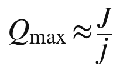
其中 J 是所有者每周能够投入判断的小时数，j 是每一件产出平均需要的判断时间。一位所有者每周有二十小时用于判断，每一件产出平均需要半小时的判断，他每周最多能出四十件合格的产出。要提高产能，只有两条路：增加判断时间，而这受限于一个人的精力；或者减少每件所需的判断时间，而这要靠把判断写成判例、写成工序，也就是第三十七章与第三十八章讨论的那些功夫。算力可以无限增加，判断却不能。
三、成本结构
一人加智能体群的成本，与一家小型知识服务企业的成本有很大的不同。
表 42-1 两种经营单位的成本结构
| 成本项目 | 十人规模的咨询公司 | 一人加智能体群 |
|---|---|---|
| 人员 | 十份工资、社会保险与福利 | 所有者本人的时间 |
| 场地 | 办公室租金 | 基本可以忽略 |
| 管理 | 招聘、培训、考核、协调 | 监督智能体、维护工序 |
| 执行 | 员工的工时 | 算力与调用费用 |
| 平台与渠道 | 市场推广、销售团队 | 平台抽成、分发费用 |
| 风险 | 员工流失带走客户与诀窍 | 基底变动、关键人风险、出口责任 |
最大的差别在于固定成本与边际成本的比例。咨询公司的大部分成本是人员，业务少的时候也要照付工资；一人加智能体群的大部分成本是所有者多年积累知识的沉没成本，以及可以随业务量伸缩的算力费用。它在业务清淡时几乎没有额外的支出，在业务旺盛时可以迅速扩展执行能力，只要所有者的判断跟得上。
算力的价格还在迅速下降。第三十三章提到，同一档次能力的模型调用价格，在一年多之内降到了原来的十分之一以下。对一人加智能体群来说，这意味着执行的成本会越来越低，成本结构中越来越大的部分，将是所有者自己的判断时间，以及出口责任带来的风险成本。换句话说，这种单位的竞争力，将越来越取决于所有者的判断值不值钱，而不是他用得起多少算力。一个判断平庸的所有者，即使拥有无限的算力，也只能生产大量平庸的产出；而在一个执行几乎免费的世界里，平庸的产出恰恰是最不值钱的东西。
四、规模的边界
一人加智能体群能长多大？第三十六章给出了三个硬上限：维护的上限，一个人能真正维护的条目大约是一百到三百条；评分的上限，判决不能并行；共同体规模的上限。这三个上限说明，这种单位的天花板不在市场那一头，而在维护与判决这一头。
碰到天花板时，所有者有三种选择。第一种是保持小而精：限量服务，提高价格，第三十八章所说的“最高一层只能限量”，就是这种选择。第二种是结伴：与少数几位志同道合的所有者组成多人的私密共同体，第二十八章讨论过这种安排的治理问题。第三种是把判断写出来：把判例、判准与工序写到新人也能照着判的程度，让自己的判断可以被别人分担，从工作室走向平台。第三十六章提出的“创始人落差”，就是检验第三种选择是否可行的读数：落差不缩小，这条路就走不通。
五、法律形式
一人加智能体群需要一个法律外壳。它可以是个人执业，可以是个体工商户，也可以是只有一个股东的公司。
中国 2023 年修订、2024 年 7 月起施行的《公司法》，取消了原有的一人有限责任公司特别规定一节，并允许设立只有一个发起人的股份有限公司，一个人设立公司的门槛进一步降低。同时，新法规定，只有一个股东的公司，股东不能证明公司财产独立于股东自己的财产的，应当对公司债务承担连带责任。其他许多国家也有类似的单一成员公司制度。
选择什么样的外壳，关系到本书前几编讨论的几个问题。第一是出口责任：以公司的形式经营，责任首先由公司承担，但所有者必须把公司财产与个人财产分清楚。第二是资产归属：发生器是所有者个人的财产，还是公司的财产？这决定了它能否作为公司的资产入表、质押，以及所有者去世后怎样继承。第三是税收：第二十二章已经指出，服务收入归入哪一类所得，税负差别很大。
六、迹象
这种单位的兴起，已经有一些迹象可循。美国人口普查局统计的无雇员经营单位已有近三千万家；在中国，个体工商户的数量已超过一亿两千万户。据自由职业平台 Upwork 在 2023 年发布的调查，美国有约六千四百万人在过去一年中从事过自由职业，约占劳动力的百分之三十八。这些数字包含了大量传统的小生意与零工，不能直接当作一人加智能体群的规模，但它们说明，个人独立经营的土壤一直存在。
另一个迹象是人均收入的变化。据报道，一些人工智能初创企业仅以数十名员工，就创造了数亿美元的年收入，人均收入远远超过传统企业。当执行工作大量交给智能体，一个经营单位需要的人越来越少，一个人能够支撑的业务规模越来越大。一人加智能体群，是这一趋势在个人尺度上的极限形态。
七、一天的样子
设想一位专做跨境电商税务合规的顾问，经营着一个一人加智能体群。
早上，他打开前一天的台账：接待智能体受理了六十多份咨询，执行智能体按他的方法出具了初步意见，检查智能体标出了其中九份疑难。他花两个小时处理这九份：有三份涉及刚刚修订的规定，他改了方法文件；有一份他判断智能体的意见不对，退回重做，并把这次的判断写成一条新判例。中午之前，六十多份意见全部发出，每一份都附有成立条件与适用范围。
下午，他读新发布的法规与判例，把其中影响自己方法的部分整理出来；傍晚，他在自己参加的一个同行群里，和几位同行讨论一个新出现的难题，交换的是各自的判断与检验结果，而不是各自的方法文件。晚上，书记智能体把这一天的修正与收入分别记进知识账与财富账。
他一天之中，执行的工作几乎为零，判断占了大半，学习与交流占了其余。这正是知识劳动从出卖时间转向经营资产之后，一个人的时间结构。
八、特有的脆弱
一人加智能体群也有它特有的脆弱之处。
第一是关键人风险。所有的判断都压在一个人身上，他生病、倦怠或者离开，整个单位就停摆了。第三十四章的估值示例说明，铸币能力的价值几乎完全取决于所有者本人。
第二是判决疲劳。第三十八章指出，积压的判决太多时，标准会不自觉地松动，而且没有任何提示。一个人独自经营，这种风险更大，因为没有同事可以替他把关。
第三是孤独。一个人与一群智能体工作，很容易失去与同行的碰撞，陷入上一章所说的回音室。
第四是对地基的依赖。他的发生器建立在别人的基底与平台之上，下一章与第四十四章将专门讨论这种依赖。
应对这些脆弱，需要一些新的安排：职业责任保险，把出口责任的一部分转移出去；同行之间的互助与轮换，在一个人生病或休假时代为处理疑难；外层共同体中的定期交流，防止判断在回音室中漂移；以及多基底的准备，降低对任何一家提供者的依赖。
九、一人单位之间的协作
一人加智能体群并不意味着每个人都单打独斗。许多任务需要不同领域的知识配合完成：一个跨境并购项目需要税务、法律、财务与行业分析，一项复杂的工程评估需要结构、机电、造价与消防。旧的做法，是把这些专业人员雇进同一家企业；新的做法可能是，几个一人加智能体群为一个项目临时结成团队，项目结束即解散。
电影业提供了一个先例。二十世纪中叶以前，好莱坞的大制片厂把编剧、导演、演员与技术人员长期雇在厂里；1948 年，美国最高法院在派拉蒙案中判决大制片厂剥离院线，此后制片厂体系逐渐瓦解，电影生产转向以项目为单位的网络：每部影片由制片人临时召集独立的公司与自由职业者，拍完即散。地理学家斯托珀等人在二十世纪八十年代的研究中，把这一转变概括为走向“弹性专业化”。
知识服务可能走上相似的道路。一个项目的牵头人，调用几个专门的发生器，或者邀请几位所有者带着各自的私密共同体加入，按约定分享收益。这种协作需要几样东西：清楚的分工与接口，也就是谁负责哪一部分判断；统一的出口责任安排，也就是出了错由谁、按什么比例承担；以及收益分配的规则。下一章所说的发生器之间的调用协议，为这种协作提供了技术上的可能；合同与信任，则需要在一次次合作中积累。从这个角度看，一人加智能体群不是企业的反面，而是企业的另一种拆分方式：企业把人长期聚在一起，项目网络把人临时聚在一起，而把人聚在一起的理由始终是同一个：知识需要彼此配合。
十、小结
一人加智能体群，是知识经济文明中一种新的经营单位：所有者负责判断与责任，智能体负责执行，收入归所有者。它的产能主要受限于所有者可以投入判断的时间，成本以沉没的知识积累与可伸缩的算力为主；它的规模有维护、评分与共同体三重上限，碰到上限时可以保持小而精、结伴或者把判断写出来。它需要合适的法律外壳，也有关键人、判决疲劳、孤独与地基依赖等特有的脆弱。许多这样的单位聚在一起，就形成了知识服务的市场，这是下一章的主题。
知识服务市场
许多一人加智能体群、许多私密共同体、许多企业的发生器聚在一起，就形成了知识服务的市场。本章讨论这个市场的结构：它有哪几层，买方怎样判断质量，卖方怎样发出可信的信号，平台扮演什么角色，买卖双方怎样找到彼此，竞争采取什么形态，以及市场可能在哪里失灵。
一、市场的三层
知识服务的市场至少有三层。
第一层面向个人：学生、病人、创业者、普通消费者，把自己的问题交给发生器，获得回答、方案与辅导。这一层用户多、单价低、需求分散。
第二层面向机构：企业、学校、医院、政府部门，把一类业务交给发生器，比如合同审阅、客户服务、教学辅导、政策分析。这一层单价高、要求严格，合同条款与出口责任最为重要。
第三层是发生器之间的市场：一个发生器在工作中调用另一个发生器的服务。一个综合性的助手遇到税务问题，调用一个专门的税务发生器；一个写作辅导的发生器遇到专业术语，调用一个专业领域的发生器。2024 年 11 月，Anthropic 发布模型上下文协议，为模型连接外部工具与数据提供了开放的标准；2025 年 4 月，谷歌发布智能体之间相互通信的协议。这类协议使发生器可以像网页链接一样相互调用，知识服务的市场由此长出了一个由机器与机器直接交易的层次。
二、柠檬问题
知识服务市场面临的第一个难题，是质量难以判断。
1970 年，阿克洛夫发表《“柠檬”市场》，以二手车市场为例指出：卖方知道车的好坏，买方不知道，买方只肯按平均质量出价；于是好车的卖主不愿意卖，市场上剩下的越来越多是坏车，也就是“柠檬”，最终市场可能萎缩甚至消失。信息不对称会使劣质品驱逐优质品。
知识服务的信息不对称比二手车更严重。一个回答是否正确，一个方案是否可行，买方往往要在很久之后才知道；而源头是封存的，买方无法打开来看。如果没有办法区分好的发生器与差的发生器，这个市场就可能被大量粗制滥造的服务淹没，真正有深厚知识的所有者反而难以脱颖而出。
第十七章说明，试用可以部分地解决这个问题：买方可以用自己的问题检验服务。但试用只能揭示平均表现，揭示不了罕见情形下的失误；而且，许多买方没有能力判断回答的质量。市场还需要别的机制。
三、信号与认证
1973 年，斯彭斯在关于就业市场的研究中提出了“信号”理论：当雇主无法直接观察求职者的能力时，求职者可以通过一些代价高昂、而能力差的人难以模仿的行动，比如获得学历，来发出可信的信号。
知识服务的所有者同样需要发出可信的信号。可以设想几种信号。第一是公开的检验结果：第二十章所说的检验开放，让发生器在公开、统一的条件下接受评测，评测结果就是最直接的信号。第二是服务记录：服务了多少用户，出错率多少，有多少次改判与撤回，这些记录越长、越透明，越可信。第三是规范的对外说明：第三十九章要求每一件私密产出配一份两百字以内的说明，写明判什么、读数与单位、一条作废条件，并且禁止形容词；一个说不出读数与作废条件的发生器，本身就在发出负面的信号。第四是第三方的审计与认证：由独立的机构检查发生器的工序、判决与出口责任的安排。第五是所有者本人的声誉：他在外层共同体中的公开主张、著作与检验记录。
这些信号的共同特点是：它们都不要求公开源头，却都难以伪造。
四、排行榜的力量与陷阱
在所有的信号中，公开的评测排行榜最为醒目，也最需要警惕。
2023 年 5 月，加州大学伯克利分校等机构的研究者推出了一个名为“聊天机器人竞技场”的评测平台：用户同时向两个匿名的模型提问，看完回答后投票选出更好的一个，平台再根据大量的投票计算出各个模型的排名。这个平台后来更名为 LMArena，成为观察大模型能力的重要窗口。排行榜把难以比较的能力变成了一个数字，大大降低了用户判断质量的成本。
可排行榜也有它的陷阱。经济学家古德哈特在 1975 年指出，一个统计指标一旦被用作控制的目标，就会失去原有的信息价值；人类学家斯特拉森后来把这一观察概括为：当一个度量成为目标，它就不再是一个好的度量。2025 年，一篇题为《排行榜的幻觉》的论文批评上述竞技场的规则对大型企业有利：它们可以私下测试许多个版本，只公开表现最好的那一个。排行榜的名次，于是部分地反映了谁更善于应付排行榜。
对知识服务市场来说，这个教训很重要。评测越是成为买方选择的依据，卖方就越有动机为评测而优化，而不是为用户而优化。应对的办法与第三十六章样机的经验一致：评测要换手，评测题要保密并定期更换，评测的规则与抽样要公开，同一个所有者的多个版本要统一登记，不能只挑最好的一版参评。
五、平台：双边市场
知识服务的市场，很大程度上会通过平台来组织。经济学家罗歇与梯若尔在 2003 年的研究中系统分析了“双边市场”：平台同时服务两类用户，比如信用卡同时服务持卡人与商户，一边的用户越多，平台对另一边就越有价值。平台的定价往往向一边倾斜，以吸引另一边。
知识服务平台也是双边的：一边是知识所有者，一边是用户。平台聚集的所有者越多，对用户越有吸引力；聚集的用户越多，对所有者越有吸引力。这种网络效应，使平台市场容易走向集中，少数几个平台占据大部分的市场。
平台的集中，带来第三十三章讨论过的定价权问题：所有者要接触用户就必须经过平台，平台可以从知识租中切走很大一块。各国的竞争法已经开始回应平台的力量。欧盟《数字市场法》自 2024 年起适用，对被认定为“守门人”的大型平台设定了一系列义务；中国 2022 年修订施行的《反垄断法》增加了规定，禁止经营者利用数据和算法、技术、资本优势以及平台规则等从事垄断行为。知识服务平台将来很可能也要面对类似的规则。
六、发现与匹配
市场的另一个难题，是买卖双方怎样找到彼此。
用户面对成千上万个发生器，怎样知道哪一个最适合自己的问题？可以想见几种渠道。一是搜索与推荐：平台根据用户的问题，推荐合适的发生器。二是目录与评级：由第三方编制的分类目录与评测排名。三是人的推荐：外层共同体中的同行与朋友，告诉你某个问题该找谁，这是最古老也最可信的渠道。四是智能体的路由：用户只与自己的通用助手对话，由助手判断问题的性质，把它转交给合适的专门发生器。
第四种渠道可能成为最重要的一种，也带来一个新的问题：做路由的那一方，掌握了极大的权力。它决定把问题交给谁，就决定了谁能获得生意；它自己也可能提供类似的服务，于是有动机优先推荐自己。这与搜索引擎排序、应用商店推荐面临的问题一脉相承。路由的中立性，将是知识服务市场的一个核心的制度问题。
类似的问题在互联网的历史上已经出现过。关于网络中立的争论持续了二十年：接入服务商能否对不同的内容区别对待？美国联邦通信委员会在 2015 年确立了网络中立规则，2017 年将其废除，2024 年再度恢复，2025 年初又被联邦上诉法院推翻。在搜索领域，欧盟委员会在 2017 年认定谷歌在搜索结果中优待自家的比价购物服务，处以二十多亿欧元的罚款，欧盟法院在 2024 年维持了这一决定。知识服务的路由者将面对同样的问题：它可以推荐，但不能在推荐中暗中偏袒自己。
七、竞争的形态
知识服务市场的竞争，会呈现出两种截然不同的形态。
在通用的领域，比如一般的写作辅助、常见问题的解答、标准化的翻译，服务之间差别不大，基底的能力决定了大部分的质量，竞争主要是价格竞争，第三十三章提到的大模型价格战就是例子。这一类服务的价格会被压得很低，利润也很薄；同时，规模报酬递增会使少数最好的服务占据大部分用户，出现赢家通吃。
在专门的领域，情况完全不同。每一个所有者的 D 与 E 都是独特的，他的服务在某个细分的问题上可能是不可替代的。经济学家张伯伦在 1933 年提出“垄断竞争”的理论：许多卖方各自提供有差别的产品，每一个都在自己的小市场里拥有一定的定价能力，同时又面临相近产品的竞争。专门领域的知识服务，正是这样一种垄断竞争的市场。作家安德森在 2004 年以“长尾”一词描述互联网让大量小众商品找到买主的现象；知识服务市场也会有一条长长的尾巴：成千上万个专门的发生器，各自服务一小群有特定需要的用户。
两种形态并存：通用的头部趋于集中，专门的长尾趋于分散。一个社会的知识租，有多少落在头部，有多少落在长尾，将在很大程度上决定知识经济文明的分配格局，第四十六章将回到这个问题。
八、交易的基础设施
一个运转良好的市场，还需要一套交易的基础设施。第十七章讨论了合同的新形态；这里补充几项。
一是计费与结算。知识服务往往是小额、高频的，一次调用可能只值几分钱。互联网早期，纳尔逊的“仙那度”设想过按引用自动向作者付费，却因为小额支付的成本太高而无法实现。今天，平台内部的统一结算与各种数字支付工具，已经使按次计费成为可能。二是纠纷处理：服务出了错，怎样认定责任，怎样赔偿，需要有快速、低成本的纠纷解决机制。三是托管与登记：第三十五章讨论的源头托管与第二十四章讨论的哈希登记，为交易提供信任的基础。四是跨境规则：第十九章讨论过，知识服务的跨境交付涉及数据、税收与管辖等一系列问题。
纠纷处理方面，已有可以借鉴的制度。中国自 2017 年起先后设立了杭州、北京、广州三家互联网法院，集中审理网络购物、网络服务合同、网络著作权等纠纷，起诉、举证、庭审与宣判都可以在线完成。知识服务的纠纷数额往往不大、数量却可能很多，这种在线、快速、低成本的审理方式，正适合它的特点。
九、市场的失灵与矫正
知识服务市场可能在几个地方失灵。第一是信息不对称，劣质服务驱逐优质服务，需要检验开放、服务记录与第三方认证来矫正。第二是平台与路由的力量过大，需要竞争法与中立性规则来矫正。第三是拥挤：第三十二章指出，同一种知识被太多的人使用，会侵蚀它的价值，甚至变成共同的风险，这需要所有者与监管者共同警惕。第四是外部性：一个发生器的错误回答，可能被大量用户转述、引用，造成远超单次服务的损害，这需要出口责任与必要的内容规则来约束。
市场不会自动运转良好。第十编将讨论，哪些制度可以使知识服务市场既有活力，又不至于失灵。
十、小结
知识服务市场分为面向个人、面向机构与发生器之间三层。它面临严重的信息不对称，需要试用、公开检验、服务记录、规范说明与第三方认证等信号来区分优劣。平台是双边市场，容易集中，带来定价权与路由中立性的问题。竞争呈现两种形态：通用领域的价格竞争与赢家通吃，专门领域的垄断竞争与长尾。市场还需要计费结算、纠纷处理、托管登记与跨境规则等基础设施，并可能在信息、平台、拥挤与外部性四处失灵。下一章讨论市场参与者之间一个特殊而关键的关系：基底与增量。
基底与增量
第十八章说明，一个发生器由两部分组成：公共可得的基底模型，以及所有者加上去的增量。发生器的价值主要来自增量，可增量又建立在基底之上。本章专门讨论这种关系：所有者对基底的依赖有哪几种，历史上有哪些可以借鉴的镜子，所有者怎样保住真正属于自己的那一部分，基底提供者与开放的基底各扮演什么角色，以及怎样为这种关系设计分层的权利。
一、地基是租来的
大多数知识所有者，都不会自己训练基底模型：训练一个前沿的大模型，据估算需要上亿美元的投入，只有极少数企业负担得起。所以，所有者的发生器，几乎都建立在别人拥有的基底之上。这就像在租来的地上盖房子：房子是自己的，地是别人的。
这种依赖至少有五种形式。一是价格：基底提供者调整调用价格，直接改变所有者的成本。二是条款：提供者修改服务条款，可能限制某些用途，或者改变数据的使用规则。三是可用性：提供者停止某个模型版本的服务，所有者必须迁移到新版本。四是行为的漂移：基底模型更新之后，同样的方法文件可能产生不同的结果，第十二章已经提到，发生器本身在不断变化。五是吞并：提供者看到某类增量很受欢迎，可能直接把类似的功能做进基底，使所有者的增量失去价值。
二、历史的镜子
这种处境并不新鲜，历史上至少有两面镜子。
第一面是租佃。明清时期，江南等地流行“一田二主”的习惯：一块田地的权利被分为田底与田面两层，田底归地主，负责缴纳田赋；田面归佃户，佃户可以长期耕种，还可以把田面权出租、典当、转让，甚至传给子孙，地主不得随意收回。一块田上，两个主人，各有各的权利。田底与田面的关系，与基底与增量的关系惊人地相似：基底提供者拥有“田底”，所有者拥有“田面”；所有者在田面上的投入，也就是他多年积累的方法与判断，能否得到保护，取决于田面权是否被承认。
分层的土地权利后来一步步进入了成文的法律。民国时期制定的民法，在物权编中规定了永佃权，承认佃户在他人土地上长期耕作的权利；今天中国农村实行的土地所有权、承包权、经营权“三权分置”，2018 年修订的《农村土地承包法》把土地经营权写进了法律，允许它流转、入股与担保。同一块土地上可以叠放几层权利，每一层都可以独立地流转，这在土地制度中已有数百年的实践。基底与增量的分层权利，并不需要从零开始发明。
第二面是平台上的开发者。2023 年初，推特先是切断了第三方客户端的接口，接着宣布终止免费的接口服务，许多依赖其接口多年的第三方应用在几周之内关门。更早，苹果公司在 2002 年推出的一个系统搜索工具，功能与一款广受欢迎的第三方应用几乎相同，那款应用随之衰落；此后，开发者把平台方把第三方的创意直接做进系统的做法，称为“被夏洛克”。平台可以在一夜之间改变规则，也可以把最成功的增量据为己有。
三、可迁移性：唯一真正属于你的部分
面对这种依赖，所有者怎样保住真正属于自己的那一部分？本书给出的判据很简单：能迁移的，才是资产；不能迁移的，更像租户在房东的房子里做的装修。
一项增量能否迁移，取决于它有多少是绑定在某一个基底上的。方法文件、案例库、判例与评价标准，大多可以写成与基底无关的形式，换一个基底照样可用；依赖某个基底特有功能的部分，以及在某个基底上微调得到的权重，迁移起来就困难得多。
所以，所有者有几条实用的原则可以遵循。第一，方法文件尽量写成与基底无关的形式，不依赖某一家的特殊功能。第二，同时在两个以上的基底上运行，至少保留一个可以随时切换的备选。第三，保留一个开放权重的模型作为退路，即使它的能力弱一些。第四，也是最重要的一条：建立并维护自己的评测集。
四、评测集：所有者最重要的资产之一
评测集，是所有者用来检验发生器是否忠实于自己方法的一组问题与标准答案。第二十七章所说的替身测试、第三十八章所说的判例，都可以沉淀为评测集。
评测集的价值，在迁移的时候最为明显。当基底发生变化，无论是提供者更新了版本，还是所有者换了一家提供者，他都可以用同一套评测集检验新的组合：新基底加上自己的增量，是否仍然能给出与自己的判断一致的结果？哪些地方出现了偏差？需要怎样修改方法文件？没有评测集的所有者，每一次基底变化都是一次盲目的冒险；有评测集的所有者，可以把迁移变成一次有据可查的检验。
从这个意义上说，评测集是增量中最核心、最可迁移的部分。它不依赖任何基底，却定义了什么是“我的”发生器：无论跑在哪一个基底上，能通过这套评测的，就是我的；通不过的，就还不是。
五、一次迁移的样子
不妨设想一次迁移，以下数字是虚构的，只为说明方法。一位做医疗器械注册咨询的所有者，他的发生器一直运行在甲公司的基底上。某天，甲公司宣布三个月后停止他所使用的那个模型版本。
他拿出自己的评测集：三百个过去处理过的真实案例，每一个都附有他当年的判断与理由。他先把这三百个案例放到甲公司的新版本上跑一遍，与自己判断的一致率从原来的百分之九十二降到了百分之八十一；再放到乙公司的一个模型上跑，一致率是百分之八十七；最后放到一个开放权重的模型上跑，一致率是百分之七十六。
他逐一查看不一致的案例，发现乙公司的模型在两类问题上的偏差最为集中：一类涉及某个地区新近修订的分类规则，一类涉及临床评价的豁免条件。他在方法文件中为这两类问题补写了更明确的判准，重新运行，一致率回升到百分之九十三。两周之后，他把主要的服务迁到了乙公司的基底上，同时保留开放权重的模型作为备用。
整个过程中，他依赖的不是任何一家提供者的承诺，而是自己手里的那三百个案例。这就是评测集的意义：它让迁移从一场赌博，变成了一次可以计量、可以修正的检验。
六、基底提供者的视角
基底提供者与所有者之间，既有合作，也有竞争。提供者需要大量的所有者在自己的基底上开发，形成生态，这是它的收入来源与护城河；同时，它也可能进入所有者所在的领域，直接提供类似的服务。
一个有远见的提供者，会给所有者一些可靠的承诺，因为只有这样，所有者才敢在它的基底上长期投入。这些承诺包括：旧版本停止服务之前，给出足够长的通知期；允许所有者固定使用某一个版本，避免行为的突然漂移；默认不使用所有者的数据训练基底模型；保持接口的稳定。今天，主要的模型服务商已经在不同程度上作出了其中一些承诺。这些承诺越清楚、越稳定，“地基是租来的”这一风险就越可控。
所有者也可以从另一面减少被吞并的风险。基底提供者最容易吞并的，是那些依赖通用能力、服务常见问题的增量；最难吞并的，是深深扎根在所有者 D 与 E 里的增量，因为提供者即使看到了它的功能，也复制不了它背后的判断。第三十章所说的循环也提供了保护：一个不断铸造、不断回流、不断更新的所有者，他的领先是动态的，吞并者学到的永远是他的上一个版本。越依赖通用能力的增量，越要快跑；越扎根于自己条件的增量，越不怕被人看见。
七、开放的基底：公共的土地
开放权重的基底模型，在这种关系中扮演着一个特殊的角色：它们是公共的土地。
一个所有者只要知道，在最坏的情况下，他可以把自己的增量迁移到一个开放的基底上运行，哪怕能力稍弱，他与任何一家闭源提供者谈判时，就多了一份底气。开放基底的存在，给整个市场设定了一条退路，限制了提供者任意改变规则的空间。这与公共道路的作用相似：即使大部分货物走收费高速，免费的普通公路仍然限制了收费的上限。
所以，开放的基底不只是一种技术选择，也是知识经济文明的一项公共基础设施。第二十章讨论过开放权重的争论；从基底与增量关系的角度看，开放基底的价值，不仅在于它本身能做什么，更在于它让所有的所有者都有了退出的可能。
八、分层的权利：田底与田面
既然基底与增量是两层，权利也应当分层。第十八章的四层所有权表，已经勾画了这种分层：基底提供者拥有基底的权重，平台拥有运行环境与分发渠道，所有者拥有方法、语料、微调权重、流程与判准，用户拥有每一次发生得到的回答。
“一田二主”的历史提示，分层的权利要能够稳定，需要几个条件。第一，每一层的权利要有清楚的边界：基底提供者可以决定基底怎样运行，却不能主张对所有者增量的权利。第二，上层的投入要受到保护：田面权不能被地主随意收回，所有者的增量也不能因为提供者的一纸通知而一夜清零，这需要合理的通知期、迁移协助与数据的可携带。第三，各层的权利要能够流转：田面可以典卖，增量也应当可以转让、质押与继承。
立法已经开始在相关的领域设计类似的规则。欧盟《数据法》自 2025 年 9 月起适用，其中一章专门规定了在不同的数据处理服务之间切换的权利，要求服务商协助客户迁移、逐步取消切换的收费，以防止客户被锁定在某一家服务商上。这类规则针对的是云服务，但它的思路可以延伸到基底与增量的关系上：所有者应当有权带着自己的增量离开。第十编讨论确权时，将回到这个问题。
九、小结
知识所有者的发生器，大多建立在别人拥有的基底之上，这带来价格、条款、可用性、行为漂移与吞并五种依赖。“一田二主”与平台开发者的经历，是这种处境的两面历史镜子。所有者保住自己那一部分的关键，是可迁移性：方法写成与基底无关的形式，多基底并行，保留开放的退路，尤其要建立与维护自己的评测集。基底提供者的稳定承诺与开放基底的存在，共同限制了依赖的风险；而分层的权利，需要清楚的边界、对上层投入的保护与各层权利的流转。下一章从劳动者的角度，讨论知识经济文明中的工作怎样改变。
知识劳动的转型
第二章说，二十世纪的知识工作者拥有生产资料，却只能按小时出租它；第二十二章说，知识第一次从劳动力变成了资本。本章从劳动者的角度，讨论这一转变在现实中意味着什么：人工智能已经怎样改变了知识劳动，知识劳动者会分化成哪几类，雇佣关系、收入构成、技能与社会保障将怎样改变。
一、从出卖时间到经营资产
在旧秩序中，一位知识工作者的收入，几乎全部来自出卖时间：工资按月计，咨询按小时计，讲课按课时计。他的知识越多，时间越值钱，但他能出卖的时间总是有限的，而且一旦停止工作，收入就停止了。
在新秩序中，一部分知识工作者可以把自己的知识外化到发生器中，经营它、出租它、转让它、传承它。他们的收入中，出卖时间的部分会减少，经营资产的部分会增加。这不是说所有人都会成为知识资本家，而是说，劳动者第一次有了一条从出卖时间走向经营资产的道路。
二、实证：人工智能怎样改变知识劳动
近几年的几项研究，已经从实证上描绘了人工智能对知识劳动的影响。
布林约尔松、丹妮尔·李与雷蒙德研究了一家软件公司的五千多名客服人员引入生成式人工智能助手之后的表现。他们发现，平均而言，客服人员每小时解决的问题增加了约百分之十四；对新手与技能较低的人员，增幅高达百分之三十四，而对最有经验的人员几乎没有提升。助手似乎把老手的经验传给了新手。
诺伊与惠特尼·张在 2023 年发表于《科学》的实验中，让数百名受过大学教育的专业人员完成写作任务。使用聊天机器人的一组，完成任务的时间缩短了约百分之四十，产出的质量提高了约百分之十八。
德拉夸等人与一家管理咨询公司合作，研究了七百多名咨询顾问使用大模型的表现。在模型能力范围之内的任务上，使用模型的顾问多完成了约百分之十二的任务，速度快了约百分之二十五，质量提高了四成以上；但在一项刻意设计在模型能力之外的任务上，使用模型的顾问得出正确答案的可能性，反而比不用模型的顾问低了约十九个百分点。研究者把这种现象称为“锯齿状的技术前沿”。
三、锯齿状的前沿与判断的价值
这三项研究合在一起，揭示了两件事。
第一，在人工智能能力范围之内的任务上，它大幅提高了生产率，而且对新手的帮助最大。这意味着，同一项任务上老手与新手的差距在缩小，靠经验积累起来的执行能力正在贬值。
第二，人工智能的能力边界是不规则的，而且从外面很难看出来。一项看起来差不多的任务，可能恰好落在边界之外，这时盲目依赖模型反而会出错。知道边界在哪里，也就是判断什么时候可以信它、什么时候必须自己来，成了最稀缺的能力。
这正是第三十八章所说的判决。执行在贬值，判断在升值；而判断，恰恰长在一个人的 D 与 E 里，是“我的知识”中最核心的部分。知识劳动的价值，正在从“会做”转向“会判”。
四、三种知识劳动者
在这种转变中，知识劳动者可能分化为三类。
第一类是被替代的执行者。他们的工作主要是常规的知识任务：按模板起草文件、整理资料、回答标准问题、做常规的数据处理。这类任务大多落在人工智能的能力范围之内，需求会大幅减少。
第二类是被增强的雇员。他们仍然受雇于企业，但与智能体一起工作，生产率大幅提高，工作内容从执行转向监督、判断与协调。他们的知识主要仍然归雇主所有，但他们的地位取决于自己的判断能力。
第三类是知识所有者。他们把自己的知识外化到自己的发生器中，以一人加智能体群或者多人私密共同体的形式独立经营，收入主要来自服务与资产。
三类之间不是固定的：一个执行者可以通过培养判断、积累“我的知识”，成为被增强的雇员；一个雇员可以在业余时间建立自己的发生器，逐步成为所有者。知识经济文明的社会政策，很大程度上要帮助人们沿着这条路向上走，而不是被留在第一类。
三类人在劳动者中各占多大比例，今天还没有可靠的数字，也会因行业与国家而有很大差别。但方向是清楚的：执行者的比例会下降，被增强的雇员会成为多数，知识所有者的比例会从很小开始逐步上升。一个人落在哪一类，并不由他的学历或职称预先决定，而取决于他能否在自己的工作中积累起别人替代不了的判断，并学会把它变成可以经营的资产。
五、雇佣关系的新条款
第二十三章已经提出一个问题：员工在工作中搭建的发生器归谁？这个问题会在雇佣关系中引出一系列新的条款。
一种可能的安排，是区分三样东西：员工进入企业之前已有的“我的知识”与方法，归员工；员工在工作中利用企业的数据与资源、为企业的业务而形成的锁定知识，按照职务成果的规则归企业，或者由双方约定分享；员工在工作中长出来的判断能力，本来就长在他身上，任何合同都拿不走。雇佣合同需要写清楚：员工离职时，哪些方法文件可以带走，哪些必须留下，企业的数据怎样剥离。
竞业限制也会改变含义。第二章讨论过，竞业限制本来是为了防止员工把长在身上的知识带走；当知识可以存放在发生器中，争议的焦点就可能从“人去哪里工作”，转向“发生器里装的是什么”。这会使劳动争议更加具体，也更加依赖第二十四章所说的哈希登记与版本记录：谁在什么时候、以什么为基础写成了哪一版方法文件。
六、集体谈判：编剧罢工的启示
个人与平台、与雇主谈判，力量往往悬殊。知识劳动者怎样集体地争取自己的权益，2023 年美国编剧的罢工提供了一个值得注意的先例。
2023 年 5 月，美国编剧工会发起罢工，持续约一百四十八天，至 9 月底与制片方达成新的协议。人工智能是谈判的焦点之一。新协议规定：人工智能不能撰写或改写剧本，人工智能生成的材料不能被视为编剧据以改编的原始素材；编剧可以自愿使用人工智能，但制片方不能强制编剧使用；制片方提供给编剧的材料如果含有人工智能生成的内容，必须事先告知。同年，美国演员工会也经过数月罢工，在新合同中写入了使用演员数字形象须经本人同意并支付报酬的条款。
这两次罢工争取的，不是禁止人工智能，而是规定人工智能在知识劳动中的位置：它可以作为工具，却不能取代劳动者的署名与报酬，也不能在劳动者不知情的情况下被使用。这提示了知识经济文明中集体谈判的新内容：劳动者不仅要谈工资与工时，还要谈自己的知识怎样被使用、怎样被计入、怎样被补偿，以及自己在工作中积累的方法归谁所有。
七、收入的构成
知识劳动者的收入构成，会从单一走向多元。
一位知识劳动者，将来可能同时有几种收入：受雇的工资，或者按时间收取的咨询费；发生器的服务收入，其中包含第三十三章所说的知识租；知识资产本身的增值，在转让或授权时实现；以及释放知识之后获得的声誉，间接带来的机会。
收入构成的变化，会影响许多制度。税法要决定这些收入各属于哪一类所得，第二十二章已经讨论过；社会保险要决定以什么为基数缴费；个人信用要决定能否以知识资产作为还款能力的证明。一个人的经济身份，将不再只是“雇员”或“老板”，而可能同时是雇员、经营者与资产所有者。
八、技能与再培训
在执行贬值、判断升值的趋势下，什么样的技能最值得培养？
第一是判断：知道一个问题该怎么问，知道人工智能的边界在哪里，知道一个结论什么时候可能错。第二是形成自己的 D 与 E：主动去面对真实的问题，积累真实的差异序列，在具体的条件中长出别人长不出的东西；第二十六章说，“我的知识”是发生器之间唯一不可替代的东西。第三是外化：把自己的判断写成方法、判例与评测集，第二十七章讨论了外化的方法与限度。第四是检验：设计读数、写作废条件、用现实检验自己的判断，这是第八编那座工厂的全部基础。
这里有一个需要警惕的问题：新手从哪里积累经验？过去，一位年轻的律师从整理卷宗做起，一位年轻的会计从核对账目做起，在大量的执行工作中慢慢形成自己的判断。这些入门级的执行工作，恰恰是最先被智能体接手的。斯坦福大学数字经济实验室在 2025 年发表的一项研究，利用一家大型薪资服务商的数据发现，自 2022 年底以来，在最容易受到生成式人工智能影响的职业中，二十二岁到二十五岁的年轻从业者，就业人数相对下降了约百分之十三，而同一职业中年长的从业者并未受到类似的影响。如果入门的台阶被拆掉，新手就没有机会长出自己的 D 与 E，知识劳动的传承就会断裂。怎样为新手保留、甚至重新设计积累经验的通道，是知识经济文明必须回答的问题。
这些技能，与传统职业培训所强调的执行技能很不一样。第十一编讨论教育时，将说明学校与职业培训应当怎样回应这一转变。
九、劳动保护与社会保障
最后，知识劳动的转型也对劳动保护与社会保障提出了新的要求。
一人加智能体群的经营者，没有雇主为他缴纳社会保险，没有带薪休假，生病时收入可能中断。这与平台上的外卖骑手、网约车司机等新就业形态劳动者面临的问题有相似之处。2021 年，中国人力资源和社会保障部等八部门发布关于维护新就业形态劳动者劳动保障权益的指导意见，要求完善这类劳动者的社会保险与劳动报酬等保障；许多地方也放开了灵活就业人员参加社会保险的户籍限制。
知识所有者的保障问题有其特殊之处：他们的收入可能很高，也可能很不稳定；他们面临的最大风险，往往不是失业，而是判断失误带来的出口责任，以及基底变动带来的资产贬值。所以，除了一般的社会保险，他们还需要职业责任保险、资产的托管安排，以及同行之间的互助机制。
十、小结
知识劳动正在从出卖时间转向经营资产。实证研究表明，人工智能在能力范围之内大幅提高了知识劳动的生产率，尤其帮助了新手，但它的能力边界是锯齿状的，判断什么时候可以依赖它，成了最稀缺的能力。知识劳动者可能分化为被替代的执行者、被增强的雇员与知识所有者三类；雇佣合同、收入构成、技能培养与社会保障都需要相应的调整。转型带来机会，也带来分化，下一章讨论这种分化的整体图景：分配与不平等。
分配与不平等
知识成为私产，会让社会更平等，还是更不平等？这是知识经济文明必须回答的问题。本章的判断是：两股方向相反的力量同时在起作用，一股推动所有权的分散，一股推动收益的集中；最终的格局，不是由技术决定的，而是由制度决定的。
一、两股相反的力量
第一股力量推动分散。每一个人都有自己的一组 D 与 E，都可能长出只属于自己的“我的知识”；当这些知识第一次可以被外化、被经营、被传承，知识财富就有可能以前所未有的程度分散到千千万万人的手中。第二十三章把这种可能概括为“知者有其知”。
第二股力量推动集中。基底模型需要巨额投入，只有极少数企业能够承担；平台具有网络效应，容易一家独大；通用领域的服务规模报酬递增，容易赢家通吃。收益可能大量流向拥有基底、平台与头部服务的少数人。
两股力量的对比，决定了知识经济文明的分配格局。
二、分散的力量
分散的力量有它坚实的基础。
第一，“我的知识”不可合并。第二十六章说，它是发生器之间唯一不可替代的东西，也是私有知识中最难被集中的部分：它以每个人的 D 与 E 为边界，别人拿去也用不了，大平台也收购不走。土地可以兼并，工厂可以收购，一个人的差异序列却无法被另一个人占有。
第二，专门领域的长尾。第四十三章指出，专门领域的知识服务是一个垄断竞争的市场，成千上万个发生器各自服务一小群有特定需要的用户。每一个细分的领域，都可能养活一批知识所有者。
第三，不移民的出口。第十九章说明，一位在本国工作的专家，可以通过自己的发生器为全世界的用户服务，而不必移居国外。知识的收益，第一次可以不跟着人流向发达地区。
三、集中的力量
集中的力量同样强大。
第一是基底的集中。据估算，训练一个前沿的大模型需要上亿美元，所需的算力与芯片高度集中在少数企业手中。2025 年，一家主要的人工智能芯片企业的市值先后突破四万亿美元与五万亿美元，成为全球市值最高的公司之一。基底与算力的所有者，在知识经济文明中占据着类似于工业时代能源与铁路所有者的位置。
第二是平台的集中。第四十三章说明，知识服务平台具有双边市场的网络效应，掌握着定价权与路由权，可以从知识租中切走很大一块。
第三是超级明星效应。1981 年，经济学家罗森发表《超级明星经济学》，解释了为什么少数顶尖的歌手、运动员与作家能获得极高的收入：当技术让一个人可以同时服务一个巨大的市场，能力上的细小差别就会被放大为收入上的巨大差别，因为人人都想要最好的那一个。发生器把这种效应带进了知识劳动：一位顶尖的专家，过去一天只能看几十个病人，现在他的发生器可以同时服务几百万人；在通用的领域，第二名的服务可能乏人问津。
四、劳动与资本的界线变得模糊
过去几十年，关于分配的研究，大多围绕着劳动与资本的分成展开。经济学家卡拉巴布尼斯与奈曼在 2014 年的研究中发现，自二十世纪八十年代以来，全球大多数国家的劳动收入份额都在下降。奥托尔等人在 2020 年的研究中指出，劳动份额的下降，在很大程度上与“超级明星企业”的崛起有关：少数高效率、高利润的企业占据了越来越大的市场份额，而这些企业的劳动收入占比较低。
私有知识的出现，使劳动与资本的界线变得模糊。一位知识所有者的收入，一部分来自他的判断劳动，一部分来自他的知识资本；而这份资本，恰恰是由他自己的劳动积累起来的。如果大量的知识劳动者都成为知识资本的所有者，那么资本份额的上升，未必意味着劳动者的相对贫困；关键在于知识资本归谁所有。分配的问题，将越来越从“劳动与资本怎样分成”，转向“知识资本在人群中怎样分布”。
分配还有代际的维度。皮凯蒂在《二十一世纪资本论》中指出，当资本收益率长期高于经济增长率，继承来的财富就会越积越多，一个社会的贫富将越来越由继承、而不是由劳动决定。知识资本在这一点上有一个特别之处：它天然地不那么容易被继承。“我的知识”只在所有者自己的 D 与 E 中成立，所有者去世之后，它就成了一张不再生长的快照，第二十八章已经说明这一点；锁定的公共可用知识可以继承，但它的锁有寿命，领先一旦耗尽，它就回到公共领域。土地可以传十代，股票可以传百年，知识资本却会在一两代人之内，要么随人定格，要么归于公共。
这意味着，如果知识资本在全部财富中的比重上升，财富的代际固化反而可能减弱：每一代人都必须用自己的 D 与 E，重新长出自己的知识资本。当然，这只对知识资本本身成立；知识资本产生的收入一旦转化为房产与股票，就又回到了可以代代相传的形态。
五、全球的维度
分配的问题还有全球的维度。国际电信联盟的统计显示，2024 年全球仍有约二十六亿人没有使用互联网，约占世界人口的三分之一。对这些人来说，私有知识的一切机会都无从谈起。
即使能够上网，各国在基底模型与算力上的差距也极为悬殊。一个没有自己基底与算力的国家，它的知识所有者只能在别国的地基上经营，第四十四章讨论的一切依赖，在这里都会放大为国家层面的依赖。第十九章所说的“不移民的出口”是一种机会，“地基是租来的”则是同一枚硬币的另一面。
六、政策工具
面对两股相反的力量，社会可以使用哪些工具，使分配向分散的方向倾斜？
第一是开放的基底。第四十四章说明，开放权重的基底是公共的土地，它给所有的所有者一条退路，也降低了进入的门槛。公共投资支持开放基底与公共算力，是防止地基过度集中的最直接的办法。
第二是竞争政策。对知识服务平台与路由者适用竞争法，保证路由的中立，限制平台对所有者的过度抽成，防止基底提供者任意吞并所有者的增量。
第三是释放的激励。第二十九章说明，锁是暂时的；通过税收与其他激励，让锁定的知识按期释放，公共领域就能不断得到补给，后来者就能在更高的起点上长出自己的知识。
第四是教育。“我的知识”长在每个人的 D 与 E 里，而 D 与 E 的丰富程度，很大程度上取决于一个人能否接触真实的问题、获得良好的训练、进入好的知识共同体。第十一编将讨论教育怎样回应这一点。
第五是公共的发生器。正如公共图书馆让没有钱买书的人也能读书，由公共财政支持的发生器，可以让没有能力购买服务的人也能获得基本的知识服务，比如基础医疗咨询、法律援助与学习辅导。
第六是对训练数据贡献者的集体补偿。第十三章说明，个体的来源链已经断了，但集体补偿仍然可能：那些为基底模型提供了训练数据的作者与创作者，可以通过集体的机制分享一部分收益。
这些工具并不相互排斥，也没有哪一件单独就足够。开放的基底降低了进入的门槛，却挡不住平台的抽成；竞争政策约束了平台，却补给不了公共领域；释放的激励补给了公共领域，却不能保证人人都有能力从中长出自己的知识。它们需要配合使用，而且要随着技术与市场的变化不断调整。分配的格局，归根结底是一个社会一次次制度选择的累积结果。
七、两种未来
为了看清制度的分量，不妨设想两种未来。
在第一种未来里，基底与平台高度集中，开放的基底因为种种限制而衰落；所有者的增量难以迁移，平台可以任意调整抽成与规则；锁定的知识缺乏释放的激励，长期留在少数头部服务的手中。知识所有者名义上拥有自己的知识，实际上更像是在少数地主的土地上耕作的佃户，知识租的大部分流向了基底与平台。
在第二种未来里，开放的基底与多家闭源提供者并存，所有者可以带着自己的评测集自由迁移；平台之间竞争充分，路由保持中立；锁定的知识按期释放，公共领域不断得到补给；教育让更多的人有机会长出自己的“我的知识”。知识租分散在千千万万的所有者手中，“知者有其知”成为现实。
两种未来使用的是同样的技术，差别全在制度。要判断社会正在走向哪一种未来，可以观察几个读数：知识服务收入中平台与基底所占的份额；拥有独立服务收入的个人所有者的数量与收入分布；开放权重模型在实际服务中的使用比例；以及锁定的知识被释放的数量与速度。本书第十二编将把其中一部分列为可以检验的预言。
八、“知者有其知”的条件
把本章的讨论合在一起，可以说，“知者有其知”不是一个会自动实现的结果，而是一组条件都满足时才可能出现的格局。这些条件包括：人人能够接触到可用的基底与算力；人人有机会形成自己的 D 与 E，并学会把它外化；市场上没有守门人滥用地位；锁定的知识按期回到公共领域；以及一套承认、保护并允许流转私有知识的制度。缺了其中任何一条，私有知识都可能成为新的集中的工具，而不是分散的工具。
九、第九编小结
第九编讨论了知识经济文明的市场与组织。知识共同体从人与人的讨论传播之场，转变为人与智能体群体的私密共同体，既承担传统、碰撞、打磨与提升的旧功能，又承担生产、保护与掌柜的新功能。一人加智能体群成为一种新的经营单位，它的产能受限于所有者的判断，而不是执行。许多这样的单位构成了知识服务市场，市场有三层，需要信号来克服信息不对称，平台与路由带来新的权力，竞争在通用的头部趋于集中、在专门的长尾趋于分散。所有者的增量建立在别人的基底之上，可迁移性与评测集是保住自己那一部分的关键，分层的权利需要制度的保护。知识劳动从出卖时间转向经营资产，判断的价值上升，劳动者面临分化。分散与集中两股力量同时在起作用，最终的分配格局取决于制度。
制度，正是第十编的主题：怎样让知识成为活的资本。
制度：让知识成为活资本
地位功能与死资本
第二十二章的结论是：知识在技术上第一次满足了成为资本的全部条件，但要获得与金钱、房屋、股票同等的地位，还需要制度的承认。前几编多次把一些问题留给了本编：知识资产怎样转让与继承，怎样质押与处置，发生器的归属怎样认定，存证怎样进入司法，锁定的知识怎样按期释放。本章先回答一个更根本的问题：为什么制度的承认如此关键？
一、技术条件不等于财产
一件东西在技术上可以被占有、被排他、被转让，并不意味着它就是财产。一块土地，有人在上面耕种了几十年，可以圈起来，可以交给儿子耕种，但如果没有地契、没有登记、没有法院承认，它就只是一块被人占着的地。它不能被抵押，买它的人不知道自己买到的是什么，继承它的人随时可能被别人赶走。
私有知识今天正处在类似的境地。所有者可以封存源头，可以对外服务，可以把方法文件交给别人，但法律还没有明确说：这是一种什么样的财产，它归谁，怎样转让，怎样对抗第三人，债权人能不能处置它，所有者去世以后怎么办。技术条件已经齐备，制度的承认还没有到来。
二、塞尔：地位功能
哲学家塞尔在 1995 年出版的《社会实在的建构》中，为这类问题提供了一个清楚的分析框架。他指出，许多社会事实都具有一个共同的形式：某个东西 X，在某个情境 C 中，算作 Y。一张印着图案的纸，在某个国家的法律与习惯之中，算作货币；一个人，在经过某种程序之后，算作总统；一块土地，在经过登记之后，算作某个人的财产。纸还是那张纸，人还是那个人，地还是那块地，改变的是集体对它的承认。
塞尔把这种由集体承认赋予的功能，称为“地位功能”。地位功能之所以重要，是因为它带来了权利与义务：塞尔后来称之为“义务论的权力”。一张纸算作货币，持有者就有权用它清偿债务；一块土地算作某人的财产，别人就有义务不侵占它。
用这个框架看私有知识，问题就变得很清楚：一组方法文件、一套案例库、一个运行中的发生器，在什么情境中、经过什么程序，算作某个人的财产？只有当这个“算作”被集体承认，所有者才拥有相应的权利，别人才负有相应的义务。制度要做的，就是确立这个“算作”。
三、德·索托：死资本
秘鲁经济学家德·索托在 2000 年出版的《资本的秘密》中，从另一个角度说明了同一件事。他发现，许多发展中国家的穷人其实拥有大量的资产：房屋、土地、小生意。但这些资产大多没有正式的产权凭证，不能被抵押，不能被自由交易，不能被用来获得信贷。他称之为“死资本”，并估计发展中国家与前社会主义国家的死资本总额高达九万多亿美元。同样的一栋房子，在有产权登记的地方可以抵押贷款、创办企业，在没有登记的地方就只是一栋可以住人的房子。
没有制度承认的私有知识，就是一种死资本。它可以为所有者带来服务收入，就像一栋没有产权证的房子可以住人、可以出租，但它不能质押，不能证券化，难以转让，继承起来充满风险，它的价值被困在所有者的手里。第七编讨论的估值、会计与金融，都以知识资产能够被制度承认为前提。
死资本的代价，最终由所有者与社会共同承担。所有者的代价是：他的知识只能以服务收入的形式慢慢兑现，不能提前变现，不能用来筹集扩大服务所需的资金，一旦他病倒或者去世，资产就可能随之消散。社会的代价是：大量有价值的知识被困在少数人的手里，既不能流转到最能利用它的人手中，也没有稳定的途径回到公共领域。制度承认的意义，就是让这两种代价同时降低：知识既可以被交易，也可以被释放。
四、从死资本到活资本
德·索托认为，正式的产权制度通过六种效应，把死资本变成活资本：固定资产的经济潜能，把分散的信息整合进一个统一的系统，使人们承担责任，使资产可以替换与分割，把人们连接成网络，以及保护交易。这六种效应，可以逐一对应到私有知识上。
固定潜能：登记使一件知识资产的边界、版本与归属被固定下来，它不再只是所有者脑子里的一套东西，而是一个可以被指认的对象。整合信息：统一的登记系统把分散在各个所有者、平台与合同中的信息汇集起来，第三十四章所说的估值数据由此而来。承担责任：登记明确了谁是所有者，也就明确了谁承担出口责任。可替换与分割：知识资产可以被拆成几个部分分别授权，也可以按份额由多人共有。连接网络：登记过的知识资产可以与银行、保险、托管机构发生关系。保护交易：买方可以查到这件资产是否已被质押、是否存在权利争议。
五、新财产怎样进入法律
中国《民法典》第一百一十六条规定物权法定，第二十二章已经指出，这使发生器中的知识很难直接被当作物权来对待。但法律并非对新型财产毫无准备。《民法典》第一百二十七条规定，法律对数据、网络虚拟财产的保护有规定的，依照其规定。这一条为新型的数字财产留下了接口。2022 年，中国关于构建数据基础制度的政策文件，也就是人们常说的“数据二十条”，提出建立数据资源持有权、数据加工使用权、数据产品经营权分置的产权运行机制，回避了“数据归谁所有”这个难以回答的问题，把权利拆成可以分别配置的几束。
历史上，新的财产类型进入法律，大致都走过相似的路：先有实践，再有合同，然后有判例，最后有立法。1474 年，威尼斯颁布了被视为世界上最早的专利法；1710 年，英国颁布了被视为最早的著作权法的《安妮法》；1602 年成立的荷兰东印度公司，使股份成为可以在阿姆斯特丹自由买卖的财产；1999 年，互联网名称与数字地址分配机构通过了域名争议解决政策，使域名这种全新的数字资产有了处理纠纷的规则。每一种新财产，都是在一次次纠纷与交易中，逐渐被写进规则的。
私有知识大概也会走这条路。今天，它主要依靠合同与商业秘密法保护；随着纠纷与交易的增多，判例会逐渐积累；在条件成熟时，可能出现专门的立法，或者在数据与数字财产的立法框架中，为它留出专门的位置。
国际规则也已经为这条路留下了起点。世界贸易组织的《与贸易有关的知识产权协定》第三十九条，要求成员保护“未披露的信息”：只要信息处于保密状态、因保密而具有商业价值、并且合法控制者采取了合理的保密措施，就应当防止他人以违背诚实商业做法的方式获取、披露或使用。私有知识的源头，天然落在这一条的范围之内。各国今后为私有知识设计的专门规则，可以在这一共同的底线之上逐步协调。
六、制度设计的四条原则
本编讨论的各项制度，遵循四条原则。
第一，承认而不强制公开。私有知识的价值在于封存，制度的承认不能以公开源头为条件；它可以登记指纹，可以在纠纷中经法院在保密条件下审查源头，但不能要求所有者把源头交给公众。这是它与专利制度的根本不同。
第二，以服务为中心。第二十四章说明，私有知识是一种服务型产权，权利通过控制发生的出口来行使。制度保护的重点，是源头的封存与服务的出口，而不是知识内容本身。
第三，把“暂时”写进制度。第二十九章说明，锁定的知识只是暂时被锁。制度要为释放提供激励、托管与必要的强制，保证私有知识最终回到公共领域，而不是变成永久的圈地。
第四，兼顾公共利益。关键服务的公平义务、紧急情形下的强制服务、依法必须公开的知识、个人信息与他人权利的保护，都是私有知识必须接受的边界。
七、承认的成本
制度的承认不是免费的，也不会自动带来好处。德·索托的主张影响很大，秘鲁等国在二十世纪九十年代以后推行了大规模的城市土地确权，为上百万户家庭颁发了产权证。经济学家菲尔德对秘鲁确权的研究发现，确权显著增加了家庭成员外出工作的时间，因为他们不再需要留在家里看守房子；但确权对获得银行贷款的帮助，远不如预想的那么大。产权证只是资本的必要条件，而不是充分条件：还需要愿意放贷的银行、可以执行的抵押、有效的法院与活跃的市场。
私有知识的制度同样如此。登记如果繁琐、昂贵，小所有者就会望而却步，制度反而只服务于大机构；规则如果过于复杂，纠纷的成本就会高到让普通所有者无法维权；保护如果过度，就会妨碍知识的流动与公共领域的补给。所以，本编讨论的每一项制度，都要问一句：它的成本由谁承担，它是否对小所有者友好，它是否会在保护一部分人的同时伤害更多的人。制度设计的目标，不是把私有知识保护得越严越好，而是让它以尽可能低的成本活起来。
八、本编的路线图
以下四章，分别讨论这四条原则怎样落到具体的制度上。第四十八章讨论确权：一件知识资产涉及所有者、雇主、平台、基底提供者、用户与训练数据的贡献者，权利怎样在他们之间分配。第四十九章讨论存证、登记与司法：怎样证明谁在什么时候拥有什么，怎样建立登记系统，法院怎样审理涉及封存源头的纠纷。第五十章讨论发生能力的法律保护：现有的商业秘密法、合同法与反不正当竞争法能做什么，是否需要一种新的权利。第五十一章讨论知识资产的终点：继承、托管、破产与释放。
九、小结
技术条件不等于财产。按照塞尔的分析，一件东西成为财产，要靠集体承认赋予它地位功能，由此产生权利与义务；按照德·索托的分析，没有正式产权制度的资产是死资本，不能抵押、难以交易，价值被困在所有者手里。没有制度承认的私有知识，正是这样一种死资本。新财产进入法律，通常要经过实践、合同、判例与立法几个阶段；私有知识的制度设计，应当承认而不强制公开，以服务为中心，把“暂时”写进制度，并兼顾公共利益。
确权与权利分置
一件知识资产，往往不是一个人单独造出来的。所有者投入了多年的积累，雇主可能提供了数据与资源，平台提供了运行环境，基底提供者提供了地基，用户在服务中贡献了反馈，基底模型的训练又用到了无数作者的作品。权利应当怎样在他们之间分配？本章讨论确权的原则，以及几组最常见的关系。
一、分置而不是归一
面对多方参与的新型资产，一个常见的冲动是问：它到底归谁？这个问题往往没有好的答案，因为每一方都有贡献，每一方都有正当的利益。
“数据二十条”提供了另一种思路：不追问数据归谁所有，而是把权利拆成持有、加工使用、产品经营几束，分别配置给不同的主体。私有知识可以沿用这种思路，把权利拆成三束。
表 48-1 私有知识的三权分置
| 权利 | 主要主体 | 内容 | 可否流转 |
|---|---|---|---|
| 源头持有权 | 所有者 | 封存方法文件、案例库、判例与评测集，决定是否释放 | 可以转让、质押、继承 |
| 服务经营权 | 所有者，或经授权的经营者、平台 | 运营发生器，对外提供服务，收取费用 | 可以授权他人经营 |
| 发生使用权 | 用户 | 获得并使用每一次发生的回答 | 按服务条款使用 |
三束权利可以集中在一个人手里，也可以分属不同的主体：一位所有者可以保留源头持有权，把服务经营权授权给一家平台，用户则按条款获得使用权。分置的好处是，每一方都知道自己拥有什么、不拥有什么，交易与纠纷都有了清楚的基础。
二、所有者与雇主
最容易发生争议的，是所有者与雇主之间的关系。第二十三章与第四十五章都提出了这个问题：员工在工作中搭建的发生器归谁？
现行法律对职务成果已有规定。中国《专利法》规定，执行本单位的任务或者主要是利用本单位的物质技术条件所完成的发明创造为职务发明创造，申请专利的权利属于该单位。《著作权法》区分两类职务作品：一般的职务作品，著作权由作者享有，但单位有权在其业务范围内优先使用；主要利用单位的物质技术条件创作、并由单位承担责任的工程设计图、产品设计图、计算机软件等作品，作者享有署名权，其他权利由单位享有。
发生器的情况更复杂，因为它把几种性质不同的东西装在了一起。本书建议区分三个部分。第一，员工入职之前已有的“我的知识”与方法，归员工。第二，员工在工作中利用单位的数据与资源、为单位的业务而形成的锁定知识，参照职务成果的规则归单位，或者由双方约定分享。第三，员工在工作中长出的判断能力，本来就长在他身上，不属于任何合同可以转让的对象。
要让这种区分在纠纷中站得住，关键在于证据。员工入职时，可以为自己已有的方法文件登记一个带时间的哈希值；工作中形成的每一个重要版本，也都有版本记录。离职时，哪些是入职前就有的，哪些是工作中形成的，哪些用了单位的数据，就可以据此分清。雇佣合同最好在一开始就写明这些规则，而不是等到离职时再争。
竞业限制也要与这种区分相衔接。中国《劳动合同法》规定，竞业限制的期限不得超过二年，用人单位在竞业限制期限内要按月给予劳动者经济补偿。当知识可以存放在发生器中，竞业限制的重点就应当从限制人的去向，转向约定哪些方法文件与数据须留在单位；对于员工入职前已有的、登记在案的“我的知识”，单位不应借竞业限制加以限制。
三、多人共同体的确权
第二十八章讨论过多人私密共同体的治理。确权方面，它可以借鉴合伙的经验。中国《合伙企业法》对合伙人的出资、利润分配、入伙与退伙作了规定；多人共同体可以在合伙协议中写明：每个人以什么知识出资，贡献怎样记录，收益怎样分配，有人退出时怎样处理他带进来的知识。
这里有一个特殊之处：一个人的“我的知识”只在他自己的 D 与 E 中成立，他退出之后，共同体中依赖他的那一部分也就无法继续运行；而共同铸成的锁定知识，很难再分清是谁的贡献。所以，合伙协议最好区分两类出资：各自的“我的知识”，退出时随人带走；共同铸成的锁定知识，按约定的份额共有，退出者可以获得补偿，但不能带走源头。版本控制与贡献记录，是这种安排的技术基础。
四、所有者、平台与基底提供者
第四十四章讨论了基底与增量的分层权利。在确权上，要点有三。
第一，平台与基底提供者不得通过格式条款取得所有者增量的权利。中国《民法典》规定，提供格式条款的一方不合理地免除或者减轻其责任、加重对方责任、限制对方主要权利的，该条款无效。一份服务条款如果规定，所有者上传的方法文件归平台所有，或者平台可以任意用于训练自己的模型，就可能落入这一规定的范围。
第二，所有者应当有权带着自己的增量离开。《个人信息保护法》规定，个人请求将其个人信息转移至其指定的处理者，符合条件的，处理者应当提供转移的途径；欧盟《数据法》规定了在不同数据处理服务之间切换的权利。所有者的方法文件、案例库与评测集，也应当享有类似的可携带权：平台应当允许完整导出，不得以技术或收费手段设置障碍。
第三，平台可以获得与其贡献相称的经营收益，比如服务费与分成，但这种收益来自服务经营权，而不是源头持有权。
还要防止另一种形式的侵占：吞并。第四十四章说明，基底提供者可能看到某类增量很受欢迎，就直接把类似的功能做进基底。单纯的模仿与竞争，法律不应禁止；但如果提供者利用它在服务中接触到的所有者的方法文件、案例库或者服务数据，来开发与所有者竞争的功能，就越过了界线。服务条款应当写明：提供者在提供服务的过程中接触到的所有者资料，只能用于提供服务本身，不得用于开发与所有者竞争的产品。这一承诺，是所有者敢于在别人的地基上长期投入的前提。
五、用户的权利：输出与反馈
用户在服务中得到的回答，按照主要服务商的条款，通常归用户所有。用户还在服务中贡献了另一样东西：反馈。第三十章说明，服务中的反馈会回流到所有者手中，改写他的“我的知识”。
回流涉及用户的权利，应当遵守几条规则。第一，涉及个人信息的，必须遵守个人信息保护的规则，回流到所有者手中的，应当是经过去标识化处理的经验，而不是可以识别用户的信息。第二，用户在对话中贡献的独特想法与材料，所有者可以从中学习一般的规律，却不应把用户可识别的专有内容据为己有；如果要把用户的内容直接用于改进发生器，应当事先征得同意，并允许用户拒绝。第三，这些规则应当写进服务条款，并以清楚的方式告知用户。
用户自己也可能成为所有者。一位用户在长期使用某个发生器的过程中，积累了大量针对自己问题的回答，并在此基础上形成了自己的方法；这些方法是他在自己的 D 与 E 中长出来的，属于他自己的“我的知识”。发生器的所有者不能因为回答来自自己的服务，就主张对用户的方法享有权利。回答交给了用户，由回答长出来的东西，也就属于用户。
六、训练数据的贡献者：集体补偿
最后是那些为基底模型提供了训练数据的作者与创作者。第十三章说明，个体的来源链已经断了：无法指出某一次生成用到了哪一位作者的哪一段文字。但这并不意味着贡献者只能一无所得。
补偿可以是集体的。计算机科学家在 2019 年提出的“数据沙普利值”等方法，可以在统计意义上估计一批数据对模型的贡献；著作权领域早已有集体管理的传统，中国自 2005 年起施行《著作权集体管理条例》，由集体管理组织代表权利人统一许可、统一收费、统一分配。训练数据的补偿，可以借鉴这种集体的机制：不追溯每一次生成的来源，而是按照数据在训练中的总体贡献，向贡献者群体支付报酬。
近年来，围绕训练数据的诉讼与和解也在推动这一方向。2025 年 9 月，美国一家人工智能公司就使用盗版图书训练模型一事，与作者的集体诉讼达成了约十五亿美元的和解。这类和解解决的是过去的纠纷；面向未来，更需要的是事先约定的、可预期的集体许可与补偿机制。
七、权利从何时产生
最后一个问题是：知识资产的权利，从什么时候开始产生？
有两种思路。一种是登记生效：像专利那样，只有经过申请与授权，权利才产生。另一种是自动产生：像著作权与商业秘密那样，作品一经创作完成、秘密一经采取保密措施，权利就产生了，登记只起证明作用。《伯尔尼公约》确立了著作权自动产生、不以登记为条件的原则；中国也实行作品自愿登记制度，登记证书是证明权利的初步证据。
本书主张私有知识采取第二种思路：权利随发生器的建成与源头的封存而自动产生，不以登记为条件；但登记可以提供证明上的便利，并且是质押、托管等交易的前提。这样既不给小所有者增加负担，又为需要交易的资产提供了公示的途径。下一章讨论这种登记怎样设计。
八、弱势一方的保护
确权的规则写得再好，也要面对一个现实：谈判桌两边的力量往往悬殊。一位独立的知识所有者，面对一家大平台或者一家大雇主，几乎没有讨价还价的余地，只能接受对方拟定的条款。
有几种办法可以改善弱势一方的处境。第一是示范合同。中国市场监管部门长期发布各类合同的示范文本，供当事人参照；知识服务的授权、托管、雇佣中的发生器归属，都可以由主管部门或者行业组织发布示范文本，写明公平的默认规则，减少一方利用格式条款占便宜的空间。第二是集体组织。所有者可以组成行业协会或者合作组织，与平台集体协商抽成、数据使用与迁移的规则，就像第四十五章所说的编剧工会与制片方集体谈判那样。第三是默认规则向弱势一方倾斜。在合同没有约定或者约定不明时，法律可以规定：方法文件的源头持有权推定归所有者，平台不得默认使用所有者的数据训练模型，所有者享有导出与迁移的权利。默认规则决定了没有能力谈判的人会得到什么，它的分量，往往比允许自由约定的条款更重。
九、小结
私有知识的确权，宜分置而不宜归一：源头持有权、服务经营权与发生使用权，可以分别配置给所有者、经营者与用户。所有者与雇主之间，宜区分入职前的“我的知识”、工作中形成的锁定知识与长在人身上的判断能力，并以哈希登记与版本记录为证据。多人共同体可以借鉴合伙的规则，区分随人带走的与共同铸成的两类知识。平台与基底提供者不得以格式条款取得所有者的增量，所有者应当享有可携带权。用户的反馈回流须遵守个人信息保护与事先同意的规则。训练数据的贡献者，可以通过集体机制获得补偿。权利宜随源头的封存自动产生，登记起证明与公示的作用。
存证、登记与司法
确权要落地，离不开证据。一位所有者要证明某套方法是他的，要证明他在某个时刻已经拥有它，要证明他的发生器在某一天给出了什么回答，要证明别人蒸馏了他的服务，都需要可靠的证据；而他的源头又是封存的，不能随便拿出来示人。本章讨论三件事：存证怎样做，登记系统怎样设计，法院怎样审理涉及封存源头的纠纷。
一、证据的新难题
在来源链时代，知识的证据是公开的文本：论文有发表日期，专利有申请日，书有出版记录，谁先谁后，一查便知。私有知识的证据却有三个难处。第一，源头是封存的，不能公开发表来确立日期。第二，发生器不断更新，今天的版本与去年的版本不同，要证明的往往是“某一个版本”。第三，服务的记录散落在所有者、平台与用户手中，而且涉及用户的隐私。
所以，私有知识需要一种不公开内容、却能证明内容存在与内容未被篡改的存证方式。
二、存证的技术
第二十九章介绍了承诺方案与哈希存证的思路：对一份文件计算哈希值，登记这个哈希值与时间，文件本身不公开；日后公开文件，任何人都可以验证它与当初登记的哈希值是否一致。
这套技术已经相当成熟。2001 年，互联网工程任务组发布了可信时间戳协议的标准，规定由可信的时间戳机构对数据的哈希值加盖时间；中国的国家授时中心等机构提供可信时间戳服务。区块链则提供了另一种方式：把哈希值写入一条由多方共同维护、难以篡改的链上。2018 年，杭州互联网法院上线司法区块链，同年北京互联网法院上线“天平链”，把电子证据的存证与法院的系统连接起来。
对知识所有者来说，存证的做法可以很简单：方法文件、案例库与评测集的每一个重要版本，都计算一个哈希值，加盖可信时间戳或者写入存证平台；服务记录定期打包，同样计算哈希值存证。这样，他在任何时候都可以证明：某个版本在某个时刻已经存在，此后没有被改动过。
三、司法的承认
中国的司法已经逐步承认这类证据。2018 年，最高人民法院关于互联网法院审理案件若干问题的规定明确，当事人提交的电子数据，通过电子签名、可信时间戳、哈希值校验、区块链等证据收集、固定和防篡改的技术手段，或者通过电子取证存证平台认证，能够证明其真实性的，互联网法院应当确认。2021 年施行的《人民法院在线诉讼规则》进一步规定，当事人作为证据提交的电子数据系通过区块链技术存储，并经技术核验一致的，人民法院可以认定该电子数据上链后未经篡改，但有相反证据足以推翻的除外。
这些规定为私有知识的存证提供了直接的依据。但也要注意它们的边界：区块链只能证明数据上链之后没有被篡改，不能证明上链之前的内容是真实的，也不能证明上链的人就是内容的真正作者。存证是必要的，但不是充分的；它需要与版本记录、工作过程的其他证据以及当事人的陈述结合起来使用。
四、对话日志：证据与隐私
第十四章指出，在无源的知识世界里，日志代替了出处：发生器与用户之间的对话记录，成了追溯一个回答从哪里来的主要依据。这就提出了一个难题：对话记录既是证据，又涉及用户的隐私。
这个难题已经在司法中出现。2025 年，美国一家法院在一起涉及大模型的版权诉讼中，曾命令被告服务商保存用户的对话输出记录，以备取证，引发了关于用户隐私的广泛争论。可以预见，类似的冲突会越来越多：一方需要日志来证明侵权或者证明清白，另一方则担心自己与服务商之间的私人对话被曝光。
本书建议为对话日志建立分级的规则。第一，保存的期限与范围要事先在服务条款中写明，不能无限期、无差别地保存。第二，日志作为证据使用时，应当优先采用去标识化的版本，只在确有必要时才揭示用户的身份。第三，涉及敏感内容的，由法院在不公开的条件下审查，只把与争议相关的部分纳入案卷。第四，用户有权知道自己的对话是否被调取。
还可以考虑日志的托管。所有者与平台把对话日志的哈希值定期写入存证平台，日志本身则由独立的托管机构加密保存；发生纠纷时，经法院许可，托管机构只解密与争议相关的部分。这样，既保证了日志在需要时可以作为证据，又避免了日志平时被任何一方随意翻看。保存期限届满，托管机构按约定销毁日志，只保留哈希值以备核验。
五、知识资产登记系统
第二十四章提出了“不公开内容的公示”，第三十四章与第三十五章提到登记对估值与质押的作用。这里给出一个登记系统的设想。
登记的对象不是知识的内容，而是知识资产的指纹与元数据。一条登记记录可以包括：所有者的身份；资产的类别与名称；源头各个版本的哈希值与时间戳；一份两百字以内的对外说明，按第三十九章的规格写明判什么、读数与单位、一条作废条件；已经设定的权利负担，比如质押与授权；以及所有者自愿承诺的释放计划。
这样的登记系统有五项功能。一是确立优先：谁在什么时候拥有什么版本。二是公示归属：交易的对方可以查到这件资产属于谁。三是公示负担：债权人可以查到它是否已被质押。四是积累估值数据：交易价格、授权费率与质押评估值，在保护商业秘密的前提下汇总公开，为第三十四章所说的市场法估值提供数据。五是追踪释放：哪些资产承诺了释放，到期是否兑现。
中国已有可以依托的制度。2015 年起施行的《不动产登记暂行条例》建立了统一的不动产登记制度；自 2021 年起，动产和权利担保实行统一登记，由中国人民银行征信中心的动产融资统一登记公示系统承担，应收账款、知识产权等权利的担保都可以在这里登记。知识资产的质押，可以直接接入这一系统；知识资产本身的登记，则可以借鉴著作权自愿登记的做法，由专门的机构承担。
知识服务跨境，登记也需要跨境的互认。商标领域已有先例：依据 1989 年通过的《马德里议定书》，申请人可以通过一次国际申请，在多个成员国寻求商标保护。知识资产的登记，将来也可能需要类似的国际安排：一个国家的登记记录，能否在另一个国家的法院与金融机构中被承认，决定了知识资产能否真正跨境流转、跨境质押。
六、纠纷的类型与审理
涉及私有知识的纠纷，大致有五类。第一是归属纠纷，比如员工与雇主之间、合伙人之间关于发生器归属的争议。第二是侵占纠纷，比如方法文件被窃取、被离职员工带走。第三是蒸馏纠纷，比如竞争者大规模调用服务、训练替身模型。第四是出口责任纠纷，比如用户因发生器的错误回答而遭受损失。第五是释放纠纷，比如托管机构是否应当在某个条件下释放源头。
这些纠纷有一个共同的难处：审理往往需要查看封存的源头，而源头一旦在公开的审理中暴露，所有者的资产就可能毁于一旦。知识产权审判已经积累了一些可以借鉴的做法。中国自 2014 年起在知识产权法院设立技术调查官，协助法官理解技术事实；商业秘密案件中，法院可以采取不公开审理、限制查阅范围、责令当事人保密等措施。对私有知识的纠纷，可以进一步发展几项程序：由法院或者法院指定的技术人员在保密的条件下审查源头，只向当事人披露结论；以登记的哈希值核对源头的版本，而不必公开内容；对违反保密令的，追究相应的责任。
赔偿的规则同样重要。私有知识一旦泄露，损失往往难以计算，而且无法挽回。中国 2019 年修正的《反不正当竞争法》规定，对恶意侵犯商业秘密、情节严重的，可以在按照规定方法确定数额的一倍以上五倍以下确定赔偿数额；《民法典》也规定，故意侵害他人知识产权、情节严重的，被侵权人有权请求相应的惩罚性赔偿。足够高的赔偿，是对封存源头最有效的保护之一，它让窃取的预期收益低于预期的代价。
七、跨境的证据
知识服务常常跨境，纠纷也会跨境。证据的调取，涉及不同国家的法律。1970 年的海牙《关于从国外调取民事或商事证据的公约》为各国之间的取证合作提供了框架。中国《数据安全法》规定，非经主管机关批准，境内的组织与个人不得向外国司法或者执法机构提供存储于境内的数据。一位所有者的源头存放在一个国家，服务的用户在另一个国家，平台又注册在第三个国家，一旦发生纠纷，证据怎样调取、适用哪国的法律，都会成为难题。第十九章所说的知识边界，在司法上会以这种方式显现出来。
八、登记由谁来办
登记系统由谁来办，是一个实际的问题。大致有三种选择。
第一种是由政府设立的机构办理，就像不动产登记由各地的登记机构办理、作品与计算机软件的著作权登记由中国版权保护中心办理那样。它的长处是公信力强，登记的效力容易得到法院与金融机构的承认；短处是可能缓慢、昂贵，难以跟上技术与市场的变化。
第二种是由行业组织或者平台办理。它的长处是贴近实际、成本低、更新快；短处是公信力与中立性不足，一家平台办的登记，很可能只对自己平台上的所有者有利，而且平台一旦关闭，登记也就随之消失。
第三种是基于多方共同维护的分布式账本办理。它的长处是不依赖任何一家机构，难以被篡改；短处是治理规则复杂，出了错不容易纠正，也不容易与现有的法律程序衔接。
比较现实的方案，可能是三者的结合：由一家有公信力的公共机构确定登记的标准与效力，允许经过认证的多家机构与平台受理登记，所有登记记录的指纹汇总写入一个公共的、可以查验的账本。这样，登记的效力来自公共机构，受理的便利来自多家机构的竞争，记录的可靠来自公共账本。无论采取哪种方案，都有一条底线：登记的费用要低到小所有者负担得起，登记的程序要简单到不需要请律师。
九、小结
私有知识需要一种不公开内容、却能证明内容存在与未被篡改的存证方式，哈希值、可信时间戳与区块链提供了成熟的技术，中国的司法已经承认这类证据，但它们只能证明上链之后未被篡改。对话日志既是证据又涉及隐私，需要分级的保存与调取规则。知识资产登记系统登记指纹与元数据而不登记内容，承担确立优先、公示归属与负担、积累估值数据与追踪释放五项功能，质押可以接入已有的统一登记系统。纠纷审理需要在保密条件下审查源头的程序，跨境纠纷还要面对取证与数据出境的规则。
发生能力的法律保护
第十五章留下了一个问题：系统性的蒸馏在法律上属于正当的反向工程，还是属于不正当地获取他人的成果？更一般地说，私有知识的价值在于它能够持续地为他人生产知识，这种“发生能力”应当受到什么样的法律保护？本章先考察现有的几种法律工具各能做什么，再讨论是否需要一种新的权利，最后划出保护的边界。
一、保护的对象变了
传统的知识产权，保护的是知识的某种“内容”：专利保护公开的技术方案，著作权保护具体的表达。私有知识的价值却不在某一段内容上，而在一种能力上：一个封存的源头，加上一个可以对外服务的出口，能够针对无数个新问题持续地生成有用的回答。这种能力，本书称之为“发生能力”。
对发生能力的侵害，也与对内容的侵害不同。有人抄了一本书，是复制了内容；有人偷走了方法文件，是夺走了源头；有人大规模地调用服务、训练替身，则是在不接触源头的情况下，复制了源头在大量问题上的投影。前两种侵害，现有的法律大体可以应对；第三种，是真正的新问题。
二、商业秘密法
保护源头最直接的工具，是商业秘密法。按照中国《反不正当竞争法》及最高人民法院 2020 年关于审理侵犯商业秘密民事案件的司法解释，受保护的商业秘密须不为公众所知悉、具有商业价值，并经权利人采取相应的保密措施。发生器的方法文件、案例库、微调权重与评测集，只要所有者采取了合理的保密措施，大都可以满足这些条件。以盗窃、贿赂、欺诈、电子侵入等不正当手段获取，或者违反保密义务披露、使用，都构成侵权。其他国家也有类似的制度，比如美国 2016 年的《保护商业秘密法》与欧盟 2016 年的商业秘密保护指令。
但商业秘密法有一个重要的例外：反向工程。通过对公开渠道取得的产品进行拆解、分析而获得技术信息，一般不构成侵犯商业秘密，欧盟的指令明确把它列为合法获取的方式。蒸馏是否属于反向工程，正是争议所在：替身模型是通过合法购买的服务、以正常的提问得到的回答训练出来的，这看起来很像对公开产品的分析；可是，它又往往违反了服务条款中禁止用输出开发竞争性模型的约定。
这一争议已经不只是理论上的。据报道，2025 年初，有美国的模型公司声称发现竞争对手利用其模型的输出进行蒸馏，引发了舆论与业界的广泛争论；被指责的一方则没有承认。争论的双方都难以拿出确凿的证据，也没有一个现成的法律标准可以据以裁判。这正是本章要处理的空白：当源头从未被接触，被复制的只是它在大量问题上的投影，法律应当怎样看待？
三、合同
服务条款是所有者对抗蒸馏的第一道防线。今天主要的模型服务商，都在条款中禁止用户利用输出去开发与之竞争的模型。知识所有者也可以在自己的服务条款中作出类似的约定，并通过限制调用频率、识别异常的调用模式来监督执行。
合同的效力取决于它是否被有效订立。美国第二巡回上诉法院在 2002 年的一个案件中认定，网页上一个用户不必点击、甚至可能看不到的许可条款，不能约束下载软件的用户；此后，要求用户主动点击同意的做法成为通行的标准。中国《民法典》对格式条款也有专门的规定：提供格式条款的一方应当采取合理的方式提示对方注意与其有重大利害关系的条款，否则对方可以主张该条款不成为合同的内容。
合同的局限在于它只能约束签约的人。一个没有与所有者订立合同的第三人，比如从某个用户那里拿到大量回答的人，就不受服务条款的约束。所以，合同之外还需要别的工具。
四、反不正当竞争法的一般条款
在数据与平台的纠纷中，中国的法院常常援引《反不正当竞争法》的一般条款，也就是经营者应当遵循自愿、平等、公平、诚信的原则，遵守法律和商业道德。2016 年前后，上海的法院在大众点评的运营者诉百度一案中认定，百度大量抓取并使用大众点评的用户点评，实质性地替代了原网站的服务，构成不正当竞争；同一年，北京知识产权法院在新浪微博诉脉脉一案中，提出了第三方通过开放接口获取平台用户数据须经“用户授权加平台授权加用户授权”的原则。
这些判例的思路，可以延伸到蒸馏上：一个竞争者大规模调用他人的发生器，用得到的回答训练替身，再以低价提供实质上相同的服务，如果它实质性地替代了原服务、不正当地攫取了他人多年积累的成果，就可能构成不正当竞争。判断的关键，不在于是否接触了源头，而在于获取的规模、方式与目的，以及对原服务的替代程度。偶尔的正常使用与学习，显然不应当被认定为侵权；以复制竞争为目的的系统性提取，则可能越过界线。
五、刑法的边界
对于最严重的侵害，刑法也提供了保护。中国《刑法》规定了侵犯商业秘密罪，对以不正当手段获取、披露、使用权利人商业秘密，情节严重的，追究刑事责任；还规定了非法侵入计算机信息系统、非法获取计算机信息系统数据等罪名。有人侵入服务器盗走发生器的权重与方法文件，可能同时触犯这两类规定。
但刑法的介入必须审慎。通过正常的调用得到回答，即使违反了服务条款，原则上属于民事纠纷，不宜轻易动用刑罚。否则，知识服务的正常使用、学术研究与独立开发，都可能笼罩在刑事风险之下，这对知识经济文明的伤害，可能比蒸馏本身更大。
六、专利与著作权的补充作用
发生器的某些部分，仍然可以借助传统的知识产权获得保护。其中的技术方案，比如一种新的检索与校验流程，只要满足专利的条件，可以申请专利；发生器的代码，作为计算机软件受著作权保护；方法文件中具有独创性的表达，也可能作为文字作品受到保护。但著作权保护表达而不保护思想，专利要求公开，第九章已经说明，方法、判准与分析框架这类知识，大多落在它们的保护范围之外。它们只能起补充的作用。
七、一种新的权利？
现有工具的空白，集中在对发生能力的系统性提取上。是否需要一种专门的新权利？
欧盟提供了一个可以参照、也需要引以为戒的先例。1996 年，欧盟通过数据库保护指令，为在数据库的获取、核实或者呈现上作出了实质性投入的制作者，设立了一种专门的权利，禁止他人提取或者再利用数据库内容的实质性部分，保护期为十五年。这种权利不要求独创性，保护的是投入。它的思路与发生能力的保护颇为相近：保护的不是某一条数据，而是对整个数据库的实质性提取。
但欧盟委员会在 2005 年与 2018 年的两次评估中都发现，这种专门权利对数据库的生产并没有显示出明确的促进作用，反而在一些领域妨碍了数据的获取与利用。这提示，新的权利很容易保护过度。
如果要为发生能力设立专门的保护，本书认为应当满足几个条件：保护的对象限于以复制竞争为目的、对发生器服务的系统性提取，而不是一般的使用与学习；保护期与锁的寿命相匹配，宜短不宜长；以所有者的登记与合理的保密措施为前提；并且明确列出独立开发、学术研究与公共利益的例外。在这些条件得到充分讨论之前，更稳妥的做法，是先依靠合同与反不正当竞争法，在判例中积累经验。
中国现行的规则也提供了一些相关的起点。2023 年施行的《生成式人工智能服务管理暂行办法》要求服务提供者使用具有合法来源的数据与基础模型开展训练，涉及知识产权的，不得侵害他人依法享有的知识产权。这条规定主要针对训练数据的来源，但它确立了一个原则：训练一个模型的数据，必须来路正当。以系统性地提取他人发生器服务的方式获得训练数据，是否属于来路正当，可以成为将来细化规则时的一个讨论方向。
八、保护的边界
最后必须划清保护的边界。第一，独立发现不受任何限制：别人从自己的路径上独立发生出同样的知识，锁就自然失效，这是“暂时”的根本保证。第二，从公开渠道学习不受限制：公开发表的论文、主张与检验结果，任何人都可以学习、批评、在此基础上发展。第三，正常使用不受限制：用户使用服务得到的回答，可以自由地用于自己的工作与学习。第四，公共利益优先：第二十四章讨论的强制服务、依法必须公开的知识，都不因发生能力受保护而改变。
还有一项例外值得写明：为了互操作而进行的必要分析。欧盟的计算机程序保护指令允许在满足严格条件时，为实现独立开发的程序与其他程序的互操作而对程序进行反编译。同样，为了让自己的系统能够正确地调用某个发生器、与它交换数据，而对它的接口与行为进行的必要测试，也不应被视为对发生能力的侵害。
九、一个判断框架
为了让蒸馏纠纷有章可循，可以借鉴美国著作权法判断合理使用的四个因素：使用的目的与性质，作品的性质，使用部分的数量与重要性，以及使用对作品潜在市场或价值的影响。参照这一思路，判断一次对发生器服务的提取是否越过了界线，可以看四个方面。
一看目的：是为了自己的学习、研究与工作，还是为了训练一个与原服务竞争的替身。二看规模：是正常的、零散的使用，还是系统性的、大批量的提取，比如针对原服务的方法设计了覆盖面极广的提问，收集了远超正常需要的回答。三看方式：是否遵守了服务条款，是否绕过了调用频率的限制、伪造了身份或者利用了多个账户来规避监测。四看效果：由此训练出的服务，是否在原服务的主要市场上对它形成了实质性的替代。
四个方面中，目的与效果最为关键。一项研究即使调用量很大，只要目的是学术研究、结果公开发表、不形成竞争性的替代，就不应被认定为侵权；一项提取即使调用量不大，如果精准地针对原服务的核心方法、并直接用于推出竞争服务，就可能越过界线。这个框架不追求机械的标准，而是为法院在个案中的判断提供一组稳定的考虑因素，并通过判例逐步把界线画清楚。
十、小结
私有知识需要保护的是发生能力：封存的源头加上服务的出口。商业秘密法可以保护源头不被盗取，但反向工程的例外使蒸馏的定性悬而未决；合同可以约束签约的用户，却约束不了第三人；反不正当竞争法的一般条款，可以处理以复制竞争为目的的系统性提取；刑法只应针对侵入与盗窃等严重的侵害；专利与著作权只能起补充的作用。是否设立专门的新权利，欧盟数据库权利的经验既提供了思路，也提供了警示。无论采取哪种保护，独立发现、公开学习、正常使用与公共利益，都必须留在保护的边界之外。
继承、托管与释放
一切财产都有终点。所有者会去世，会破产，会放弃；锁定的知识会被追上，会过时。第十八章把交接列为发生器生命周期的最后一个阶段，第二十八章讨论了所有者去世后两部分知识的不同命运，第二十九章提出释放需要托管、激励与强制三种保障。本章把这些讨论落到制度上：继承怎样进行，托管怎样安排，破产时怎样处理，释放制度怎样设计，以及释放之后，公共领域怎样接住这些知识。
一、继承
中国《民法典》规定，遗产是自然人死亡时遗留的个人合法财产。知识资产一旦被承认为财产，就可以成为遗产的一部分。数字遗产的继承，在各国已经有了一些先例：2018 年，德国联邦最高法院判决，一位去世少女的父母作为继承人，有权访问她的社交网络账户，理由是账户合同的权利义务同其他合同一样可以继承；一些科技公司也推出了“遗产联系人”一类的功能，允许用户事先指定去世后可以访问其数据的人。
发生器的继承比一般的数字遗产更复杂，因为它的两部分命运不同。锁定的公共可用知识在任何人的条件中都成立，继承人可以继续运营，服务照常提供，收益照常获得；但继承人如果不具备相应的专业能力，就难以承担出口责任，也无法更新方法，领先会逐渐被追平。“我的知识”则只在所有者的 D 与 E 中成立，所有者去世之后，它成了一张不再生长的快照。
所以，继承人面对的，通常有四种选择：继续运营，需要请具备资质的人参与判断并承担出口责任；转让给同行，由有能力的人接手；按照所有者生前的安排释放；或者作为一份思想的遗产，交给研究机构或公共领域保存，第二十八章把它比作一部新形态的《日知录》。所有者生前最好以遗嘱或信托的形式，把这些选择写清楚。
中国《民法典》规定，自然人可以依法设立遗嘱信托。这为发生器的继承提供了一个现成的工具：所有者可以在遗嘱中指定一个受托人，由受托人按照他的意愿管理发生器，而不必把它直接交到可能缺乏专业能力的继承人手中。下一节讨论这种信托怎样安排。
二、托管与知识信托
托管是连接私有与公共的一道桥。第三十五章设想过“知识银行”，这里讨论它的法律形式。
最合适的法律形式，可能是信托。中国《信托法》规定，委托人基于对受托人的信任，将其财产权委托给受托人，由受托人按委托人的意愿以自己的名义，为受益人的利益或者特定目的进行管理或者处分。一位知识所有者可以设立一个知识信托：委托人是所有者本人；受托人是专业的托管机构；受益人可以是继承人，也可以是公众；信托文件写明源头怎样保管、服务怎样运营、收益怎样分配，以及在什么条件下释放。
触发释放的条件可以包括：约定的锁定期届满；所有者去世而无人继承或者继承人选择释放；所有者破产；服务停止且长期无人维护。受托人的义务是忠实地执行这些条件：条件未到时守住源头，条件一到就按约定释放。信托财产独立于委托人与受托人的其他财产，这使源头在所有者破产或者托管机构出现问题时，仍然能够得到保护。
三、破产
第三十五章提出，把一个发生器拍卖给出价最高的人，未必是清偿债务的好办法。这里进一步讨论破产的规则。
企业破产，适用 2006 年通过的《企业破产法》；个人破产在中国还处在试点阶段，2021 年 3 月起施行的《深圳经济特区个人破产条例》是第一部地方性的个人破产法规。这部条例规定了豁免财产：债务人及其所扶养人生活、学习、医疗的必需品，以及职业发展需要必须保留的物品等，可以不用于清偿债务，以保障破产的个人能够重新开始。
知识资产的破产处理，可以借鉴这一思路。“我的知识”只在所有者的条件中成立，拍卖出去几乎一文不值，却是所有者重新开始的根本，性质上接近“职业发展需要必须保留的物品”，宜列为豁免财产。锁定的公共可用知识则可以用于清偿：管理人可以继续运营一段时间，以服务收入偿债；也可以把它单独转让；或者在债权人同意时释放，换取社会的某种补偿。无论采取哪种方式，都要防止一种结果：一件原本可以持续服务社会的知识资产，因为破产程序而被锁进某个债权人的抽屉，既不服务，也不释放。
四、无人继承的知识
《民法典》规定，无人继承又无人受遗赠的遗产，归国家所有，用于公益事业；死者生前是集体所有制组织成员的，归所在集体所有制组织所有。这条规则用在知识资产上，本书主张作一点改动：无人继承的知识资产，宜释放到公共领域，而不是由国家持有并继续锁定。
理由很简单。土地与房屋归国家所有之后，仍然可以用于公益；知识如果由国家接手之后继续锁着，它的公益价值反而受到了限制。知识最好的公益用途，就是让所有人都能使用它、学习它、在它的基础上继续发展。无人继承的知识资产，是释放最自然的来源之一。欧盟 2012 年的孤儿作品指令，允许图书馆、档案馆等公共机构在找不到权利人的情况下使用这类作品，可以视为类似思路的一个先例。
五、释放制度的设计
第二十九章与第三十章为释放制度留下了两个出发点：锁的寿命是领先、蒸馏与主动释放三者中最短的那一个；所有者自身的生长与公共领域的补给之间，存在一个需要权衡的释放速度。据此，本书提出一个分层的释放制度。
第一层是自然释放。不设统一的法定期限，依靠独立发现与蒸馏使锁自然失效。这是释放的主渠道，也是“暂时”的根本保证。
第二层是激励释放。所有者可以在登记系统中自愿承诺一个释放计划，比如三年后释放某一版本的方法；按期兑现的，给予税收抵免、公共采购中的优先、公开的署名与荣誉。第三十五章讨论过税收作为激励工具的作用。
第三层是托管释放。通过知识信托，把释放的条件与执行交给独立的受托人，避免所有者去世、破产或者改变主意导致承诺落空。
第四层是强制释放，只适用于少数情形：无人继承；长期弃置，即服务停止、无人维护超过一定的年限；在竞争执法中，对过度集中、妨碍竞争的知识资产，作为救济措施要求部分释放，第十五章提到的搜索引擎案件已经提供了先例；以及重大公共卫生事件等紧急情形下，在强制服务不足以应对时的有限释放。
释放的速度，可以因领域而不同。第三十章指出，变化极快的领域，领先本来就短，自然释放已经足够；需要长期积累与严格检验的领域，锁的寿命长，更需要激励与托管的安排。
释放的速度，还可以借助第三十章的动力学模型来理解。那个模型表明，所有者自身的知识要能持续增长，回流的强度、服务的规模与铸造的速度三者的乘积，除以释放的速度，须大于知识过时的速度。释放得太快，所有者失去回流与收益，铸造的动力减弱；释放得太慢，公共领域得不到补给。制度设计的任务，就是在不同的领域找到大致合适的释放速度，在所有者的生长与公共领域的补给之间，维持一个两者都能持续的平衡。这个平衡点不能一次算定，需要依靠登记系统积累的数据，定期检讨与调整。
六、专利与私有知识的比较
第二十章提出，专利是“先公开、后开放使用”，私有知识的第二部分是“先开放使用、后公开”，哪一种安排对社会更有利，取决于知识的类型。这里给出一个大致的判断。
容易从产品中被看出来的技术，比如一种机械结构，保密本来就守不住，专利的“以公开换保护”更合适。难以写成技术方案的方法、判准与分析框架，专利保护不了，私有知识的安排更合适。变化很快的领域，二十年的专利期太长，锁的自然寿命更为合适；需要后来者在公开方案上继续改进的领域，专利的公开更有利于累积创新。两种安排可以并存，由所有者按知识的性质选择；但同一项技术方案，不宜既取得专利的独占，又把实施它所需的关键部分长期锁住，从而同时逃避专利的公开义务与期限限制。
七、释放之后：公共领域的维护
释放不是终点，公共领域还要接得住。被释放的知识需要一个稳定的去处：像 1991 年创立的预印本平台、2013 年由欧洲核子研究组织推出的开放存储平台那样，提供长期保存与稳定引用的公共仓库。需要统一的格式：方法文件、案例库与评测集按照公开的标准整理，别人才能真正用起来。需要保留署名：释放者的名字与知识联系在一起，这是释放最基本的回报；第三十八章所说的撤名条款同样适用，若有更早的人说过同样的东西，原创性的主张应当撤回。还需要有人把它用起来：第四十六章设想的公共发生器，可以把释放的方法运行起来，为没有能力购买服务的人提供服务。
公共领域的维护还需要稳定的资金。开放仓库、公共发生器与标准格式的维护，都有持续的成本；它们可以由公共财政、行业基金与释放者的捐赠共同承担。一个只鼓励释放、却不维护公共领域的制度，就像只鼓励捐书、却不修图书馆。
八、一个身后安排的示例
不妨设想一位六十八岁的老工程师为自己的发生器所作的安排，以下情节是虚构的。他在一家知识信托机构设立了信托，把源头的保管、服务的运营与释放的执行交给受托人。信托文件写明了四件事。
第一，他在世期间，服务照常运营，收益归他本人；受托人只负责保管每一个版本的源头，并每季度为新版本登记哈希值。第二，他去世之后，服务由他生前指定的两位同行继续运营三年，由她们承担出口责任，收益的一半归他的子女，一半归两位同行。第三，三年期满，锁定的通用方法全部释放给他所在的行业协会，作为行业的公共标准；他多年积累的案例库去除所有可以识别个人与企业的信息之后，捐给一所大学用于教学。第四，他的“我的知识”，也就是他对自己经手过的项目的笔记与判断顺序，作为一份思想的记录交给大学的档案馆，二十年内只供研究者在馆内查阅，二十年后公开。
这样一份安排，兼顾了家人的收益、同行的衔接、行业的公共利益与他本人一生思考的保存。它所用到的，全都是本编讨论过的制度：信托，登记，出口责任，释放，以及对他人信息的保护。
九、第十编小结
第十编讨论了让知识成为活资本的制度。按照塞尔与德·索托的分析，没有制度承认的私有知识是死资本；制度设计应当承认而不强制公开，以服务为中心，把“暂时”写进制度，并兼顾公共利益。确权宜分置而不宜归一，源头持有、服务经营与发生使用三束权利可以分别配置，员工与雇主、合伙人之间、所有者与平台之间、用户与训练数据贡献者的权益都要有相应的规则。存证可以依靠哈希值、时间戳与区块链，登记系统登记指纹而不登记内容，纠纷审理需要在保密条件下审查源头的程序。发生能力的保护，以商业秘密法、合同与反不正当竞争法为主，新权利须审慎。继承、托管、破产与释放，构成知识资产的终点制度，其中无人继承与长期弃置的知识，宜归于公共领域。
制度改变之后，许多既有的秩序都会随之改写。第十一编讨论其中最重要的几项：教育、学术、国家与个人的一生。
改写的秩序
教育
前十编讨论了知识怎样成为私产，以及它需要什么样的市场、组织与制度。本编讨论这一变化怎样改写几项既有的秩序：教育、学术、国家与个人的一生。本章从教育开始，因为一个人的 D 与 E，最早是在教育中开始成形的；本书前面多次把一些问题留给了这里：能力的证明怎样改变，人力资本扮演什么新角色，学校与职业培训怎样回应执行贬值、判断升值的趋势，以及怎样防止判断力在人与智能体的合作中退化。
一、旧教育为之服务的秩序
现代学校制度，是为来源链时代设计的。1763 年，普鲁士颁布《普通学校规程》，要求儿童接受义务教育，此后各国逐步建立起按年级编班、按学科授课、按考试升级的学校体系。在中国，科举制度从隋代延续到 1905 年，一千多年里，读书、应试、做官，构成了知识与地位之间最稳定的通道。
这套制度承担两项任务。第一是传递：把公共知识装进学生的头脑，形成人力资本。第二是认证：用考试与文凭证明一个人装进了多少，供用人单位筛选；第四十三章引述的斯彭斯信号理论，正是以学历为例说明认证功能的。两项任务都以来源链公理为前提：知识要发挥作用，就得装进人的头脑；装进了多少，看他接收过什么、通过了哪些考试就能知道。
二、第一个转向：能力的证明
第十四章指出，能力的证明正在从“他接收过什么”转向“他当场能发生什么”。当一份作业、一篇论文可以由人工智能在几分钟内生成，交上来的作品就不再能证明学生学会了什么。
试图靠技术来识别机器生成的文本，效果并不理想。2023 年 7 月，一家主要的模型公司因为准确率过低，撤下了自己推出的人工智能文本识别工具。许多教育机构转而改变评估方式本身：增加课堂上的当面写作与口头答辩，要求学生提交写作过程的记录，把评估的重点从最终的作品移到产生作品的过程。2023 年，澳大利亚高等教育质量与标准署发布关于人工智能时代评估改革的指导文件，也主张评估要能够可靠地证明学生本人的学习。
这个转向与私有知识的诞生，是同一件事的两面。一个人的价值，不再在于他装进了多少公共知识，因为公共知识人人都可以随时调用；而在于他能在具体的问题面前，发生出别人发生不出的东西。教育要证明的，也就从“装进了什么”，变成“能发生什么”。
三、第二个转向：人力资本的新角色
第二十五章说，人力资本在知识经济文明中的角色，将从直接的生产要素，转向私有知识的源头。
在旧秩序中，一位毕业生的人力资本直接用于生产：他会做什么，就去做什么，以出卖时间的方式获得收入。在新秩序中，大量的执行工作交给了智能体，人力资本的主要用途变了：它是一个人长出自己的“我的知识”的土壤。只有装进头脑、在具体的问题中反复运用过的知识，才能与一个人的差异序列纠缠在一起，长出别人长不出的判断。
这意味着，教育的目标也要调整：不只是让学生装进更多的知识，而是让装进去的知识在学生身上生根，与他自己的问题、经历与条件纠缠起来，成为他将来发生新知识的源头。
四、教什么：四种能力
第四十五章列出了执行贬值、判断升值的趋势下最值得培养的四种能力：判断、形成自己的 D 与 E、外化、检验。它们都可以落到具体的教学上。
判断的教学，要让学生面对没有标准答案的真实问题，学会问对问题，学会分辨人工智能在哪些任务上可靠、在哪些任务上会出错。第四十五章引述的研究表明，人工智能的能力边界是锯齿状的，知道边界在哪里，本身就是一种能力。
问对问题本身是可以教的。美国的“正确问题研究所”发展出一套提问的训练方法：先让学生围绕一个焦点尽可能多地提出问题，不评判、不回答；再把问题分成开放的与封闭的，练习相互转换；最后挑出最重要的几个问题，决定下一步怎样去探究。在智能体可以回答几乎任何问题的时代，这种训练的价值更加突出：答案越来越便宜，一个好问题越来越贵。
形成 D 与 E 的教学，要让学生经历真实的差异：真实的问题，真实的失败，真实的修正。一份记着“我哪里错了、怎样发现的、怎样改的”的学习账本，比一份满分的试卷更能说明一个学生的成长。第八编所说的那本账，可以从学生时代开始记。
外化的教学，要让学生学会把自己的判断说清楚、写下来：为自己的方法写一份说明，为自己的判断列出成立条件，把自己处理过的问题整理成案例。第二十七章所说的门徒效应提示，教会别人，包括教会一个智能体，是理解自己最好的途径之一。
检验的教学，要让学生习惯为自己的主张写下作废条件：什么结果出现，就说明我错了。这是科学精神最朴素的形式，也是知识经济文明中一个人的信用基础。
五、培育 D 与 E：把真实的问题带进学校
“我的知识”只能在真实的差异与条件中长出来，而学校恰恰是一个把真实问题隔在外面的地方。这是教育在新秩序中面临的最大难题。
第四十五章指出了一个更紧迫的问题：入门级的执行工作，恰恰是最先被智能体接手的，年轻人积累经验的台阶正在被拆掉。如果社会不再为新手提供从执行做起的机会，教育就必须主动承担这一职能，把真实的问题带进学校。
这并非没有先例。医学教育很早就建立了教学医院，让医学生在真实的病人与真实的病情中学习；中国自二十一世纪初开始发展法律诊所教育，让法学学生在教师指导下为真实的当事人提供法律援助；加拿大滑铁卢大学自 1957 年起推行工学交替的合作教育，学生在校学习与带薪实习交替进行。莱夫与温格所说的从边缘走向中心的实践共同体，可以在学校里重新建立：学生从真实问题的边缘开始参与，在指导者的带领下逐步承担判断。
六、评价的改写
评价要跟着能力的证明一起改变。
第一，从评作品到评过程。学生提交的不只是最终的作品，还有产生作品的过程：问题怎样提出，走过哪些弯路，在哪里用了智能体、用来做什么，自己在哪里作出了判断。版本记录与学习账本，都是过程的证据。
第二，从评答案到评判断。在人工智能能够轻松给出答案的任务上，考查答案意义不大；更有意义的是考查学生能否发现人工智能答案中的错误，能否说出一个结论成立的条件，能否在两个都看似合理的方案之间作出有理由的选择。
第三，当面的检验。口头答辩、现场解题、课堂辩论，这些古老的方式重新变得重要，因为它们检验的正是当场的发生。
当面检验的传统其实很古老。牛津与剑桥的导师制，让学生每周当面向导师陈述自己的论文、接受追问；中国古代书院的讲会，也有当众问难、往复辩论的传统。它们检验的，从来都是一个人当场能说出什么、能回应什么，而不是他交上来的纸面上写了什么。
第四，学生自己的发生器。一个学生可以在求学的几年里，逐步建立一个记录自己方法、案例与判断的发生器；毕业时，它是比成绩单更有说服力的能力证明。按照第四十八章的原则，这个发生器中学生自己的“我的知识”，归学生本人所有，学校不应主张权利；学生离校时可以完整地带走。
七、教师与学校
教师的角色，会从知识的传递者转向判断的示范者与真实问题的组织者。公共知识可以由智能体随时提供，学生需要教师的，是教师自己的判断：面对一个具体的问题，一位有经验的人怎样想，怎样选择，怎样发现自己错了。第二十六章举过的例子说明，一位教师对自己学生的了解，是她的“我的知识”；当她把这些了解外化到自己的发生器中，她就能在课后继续为每个学生提供有针对性的指导。教师的教案与方法一旦成为发生器，也会涉及第四十八章讨论的归属问题：哪些属于教师本人，哪些属于学校，最好事先约定。
学校的角色，也会从知识传递的垄断者，转向真实问题、共同体与检验的组织者。它要为学生提供进入真实问题的通道，提供一个可以相互碰撞的外层共同体，提供可信的能力检验。为了教育的公平，它还应当依托开放的基底与公共的发生器，第四十六章讨论过这一点：不能让学生的学习完全依赖少数几家企业的地基。
八、防止判断力的退化
第二十七章提出了一个风险：如果把一切判断都交给智能体，人自己的判断力就会退化。对正在成长的学生来说，这个风险尤其大。
教育心理学已经提供了一些可以借鉴的原则。卡普尔在 2008 年提出“有成效的失败”：先让学生自己尝试解决一个超出能力的问题，即使失败，之后的学习效果也往往好于直接接受讲解。比约克在二十世纪九十年代提出“合意的困难”：某些让学习过程变得更费力的安排，比如间隔练习与自我测试，反而能带来更持久的学习。这些研究共同指向一条原则：学习需要一定的挣扎，替学生省掉所有的挣扎，也就省掉了学习本身。
落到与智能体的合作上，可以有一条简单的规矩：先自己想，再用工具。一个问题，先由学生独立地形成自己的初步判断，写下来；然后再与智能体讨论，看智能体的意见与自己的有什么不同，自己错在哪里、智能体错在哪里。这样，智能体扮演的是第四十一章所说的对手与陪练，而不是替学生思考的人。
九、终身学习
教育不会在毕业时结束。知识所有者的“我的知识”要持续生长，他的 D 与 E 就要不断更新：进入新的问题，接触新的条件，犯新的错误。第三十章的动力学模型表明，知识会随着条件的变化而过时，只有持续的吸收与回流，才能维持生长。
一些国家已经在制度上支持终身学习。新加坡自 2016 年起推出“技能创前程”计划，为年满二十五岁的公民提供可以用于进修课程的学习额度。在知识经济文明中，这类支持的重点，可以从学习一项新技能，扩展到帮助人们进入新的真实问题、建立与更新自己的发生器，以及在人生的不同阶段完成从执行者到判断者、从雇员到所有者的转变。
十、中国的探索
中国的基础教育已经开始回应这一转变。2025 年 5 月，教育部基础教育教学指导委员会发布《中小学人工智能通识教育指南（2025 年版）》与《中小学生成式人工智能使用指南（2025 年版）》。使用指南按学段提出了不同的要求，其中规定小学阶段禁止学生独立使用开放式的内容生成功能，并强调不得用生成式人工智能替代学生的独立思考与作业。北京市提出，自 2025 年秋季学期起，中小学每学年开展人工智能通识教育不少于八课时。
这些规定的思路，与本章的讨论一致：一方面让学生了解并学会使用人工智能，另一方面保护学生独立思考与形成判断的过程，尤其是在判断力最需要生长的年龄。可以进一步探索的，是本章所说的另外几项：把学习账本与过程记录纳入评价，把真实问题带进课堂，以及让学生从中学阶段起逐步建立属于自己的知识档案，为将来的发生器打下基础。
十一、家庭的角色
一个人的 D 与 E，最早是在家庭里开始成形的。中国自古重视家学：北齐颜之推写下《颜氏家训》，把一个家族立身处世、治学持家的经验留给子孙；许多家族世代相传的手艺、医术与学问，都是在家庭的日常中口传心授的。
在知识经济文明中，家庭的角色有两个方面。一方面，父母要为孩子提供长出自己 D 与 E 的条件：让孩子参与真实的家务与家庭决策，面对真实的问题与后果；和孩子一起读书、讨论、争论；在孩子遇到困难时，先让他自己想，而不是急于替他找答案，更不是把一切都交给智能体。另一方面，家庭本身可以成为知识资产的持有者与传承者：父母把自己一生的职业判断与生活经验外化到发生器中，孩子成年以后，不仅能读到父母写下的家书，还能向父母的方法请教。第五十五章将回到这一点。
十二、一个学生的六年
不妨设想一个学生从高中到大学毕业的六年，以下情节是虚构的。
高一那年，她开始记一本学习账本，记下每一次做错的题、当时怎么想的、后来怎么发现的。老师要求她在用智能体之前，先把自己的思路写下来；她常常发现，自己写下的思路比智能体的答案更接近老师的讲评，也常常发现自己漏掉了什么。高二，她参加了一个研究小组，跟着老师调查学校附近一条河的水质，第一次经历了数据与预期不符、方案推倒重来的过程。
进了大学，她学的是环境工程。每一门主要课程的考核，都包括一次当面的答辩：老师随手拿一个真实的案例，让她当场分析，并说出自己的结论在什么条件下会失效。大三的暑假，她在一家环保企业实习，负责核对智能体给出的排放评估，发现了其中两处对地方标准的误读。她把这几年处理过的案例、自己的判断顺序与学习账本，逐步整理进一个小小的发生器。
毕业求职时，一家公司没有只看她的成绩单，而是请她的发生器处理了十个真实的案例，又请她本人当面讲了其中三个的判断理由。他们看中的，是她在六年里一点一点长出来的那些判断。这个发生器是她自己的，她带着它离开了学校。
十三、小结
现代学校制度是为来源链时代设计的，它的两项任务是传递公共知识与认证接收了多少。在知识经济文明中，能力的证明从“接收过什么”转向“能发生什么”，人力资本从直接的生产要素转向私有知识的源头。教育要培养判断、形成 D 与 E、外化与检验四种能力，要把真实的问题带进学校，以弥补被拆掉的入门台阶；评价要从作品转向过程、从答案转向判断，并重新重视当面的检验；学生可以建立属于自己的发生器，毕业时带走。教师成为判断的示范者，学校成为真实问题、共同体与检验的组织者。与智能体的合作要遵循先自己想、再用工具的原则，防止判断力的退化。教育由此延伸为终身的事业。
学术
学术是来源链公理最完整的制度化形态。第六章到第八章说明，引文、同行评审与公开发表，共同构成了一套以来源担保知识可信度的制度。第八章与第二十章留下了一个承诺：本编要说明，公开所承担的批评与检验功能，怎样从“来源担保”转向“检验担保”，以及检验开放怎样成为新的学术规范的核心。本章兑现这个承诺。
一、学术的旧契约
1942 年，社会学家默顿概括了科学的四条规范：公有性，科学发现属于整个共同体；普遍性，对主张的评价不取决于提出者的身份；无私利性，科学家为知识本身而工作；有组织的怀疑，一切主张都要接受共同体的严格审查。这四条规范背后，是一份不成文的契约：科学家把自己的发现交给公共领域，换取承认；承认以优先权与引用的形式记录下来，成为学术声望的通货。
这份契约与来源链公理严丝合缝。发现必须公开，才能获得优先权；公开的发现被别人引用，来源链上就留下了发现者的名字；审稿人与读者沿着来源链核对，保证了知识的可信。学术的整套激励与信任，都建立在“公开换承认、来源担保可信”这两块基石上。
二、来源担保的危机
这两块基石正在同时松动。
一方面，来源本身变得可疑。近年来，“论文工厂”批量生产、出售伪造或者低质量的论文，严重污染了学术文献。2023 年，一家大型学术出版集团旗下的出版社撤回了八千多篇论文，这家出版社的品牌随后停用。研究者还发现，一些论文为了逃避抄袭检测，用同义词生硬地替换原文，产生了大量“扭曲短语”。生成式人工智能使这类造假变得更加容易。一篇论文有作者、有期刊、有参考文献，形式上完全合格，却可能从头到尾都是编的。
另一方面，即使来源是真实的，结论也未必可靠。2015 年，开放科学合作组织在《科学》上报告，他们重复了一百项发表在心理学顶级期刊上的研究，原研究几乎都报告了显著的结果，重复研究中只有约百分之三十六得到了显著的结果。来源担保的是“谁说的”，却担保不了“说得对不对”。
第三编说明，大模型的出现又增加了第三重危机：许多知识根本没有一条可以追溯的来源链。一个研究者在与智能体的对话中得到一个想法，这个想法从哪里来，无从说起。
三、从来源担保到检验担保
第十四章提出，在无源的知识世界里，担保要从来源转向检验：一条知识可信，不是因为它来自可靠的来源，而是因为它经受住了公开的检验。这一转向在学术中已经有了萌芽。
第一是预注册。2013 年，神经科学期刊《皮层》推出“注册报告”的投稿形式：研究者在收集数据之前，先把研究问题、假设与分析方法提交审稿，通过之后，无论结果是否显著，期刊都承诺发表。这样，研究的可信度不再取决于结果是否好看，而取决于方法是否经得起事先的审查。
第二是盲法评测。第二十章讨论过蛋白质结构预测的评测：组织者先测定结构但不公布，参赛者提交预测，由组织者统一评分。一种方法好不好，不看它出自谁之手，而看它在公开、统一、事先确定的条件下表现如何。
第三是作废条件。第八编那台样机要求每一篇产出都写明“若某某读数达到某个值则本文作废”。一个主张如果说不出自己在什么情况下会被推翻，它就还不是一个可以检验的主张。
第四是可复现的材料。计算机领域的一些学术组织自 2016 年前后起推行成果材料的评审与徽章制度：作者可以提交论文所用的代码与数据，由专门的评审委员会检查能否运行、能否重现论文的结果，通过的论文获得相应的徽章。这是把检验担保写进发表流程的一个具体做法。
把这几种做法制度化，就是本书所说的检验开放：源头可以暂时封存，但主张必须公开，检验的条件必须公开，检验的结果必须公开。它保住了默顿所说的有组织的怀疑，只是怀疑的对象从“来源是否可靠”，变成了“主张是否经得起检验”。
四、新的学术成果形态
在检验开放的规范下，学术成果的形态也会改变。
一项研究可以由三部分组成。第一部分是公开的主张：研究发现了什么，在什么条件下成立，什么结果会推翻它，也就是第三十九章所说的第二格，主张公开、条件私密。第二部分是检验的接口：别人可以用自己的数据与问题，调用研究者的方法进行检验，得到结果，却不必拿到方法的全部源头。第三部分是登记的源头：研究者的方法文件在登记系统中留下哈希值，确立优先权；按照约定的时间或者条件，源头最终释放。
这种形态并不排斥传统的论文。对于那些本来就可以、也应当完全公开的研究，比如公共资助的基础研究，论文加上公开的数据与代码仍然是最好的形态。它补充的是另一类研究：方法本身就是研究者最核心的资产，过早公开会使研究者失去继续发展它的动力。对这类研究，检验开放提供了一条中间道路。
五、优先权与署名
在来源链时代，优先权由发表的日期确立；在新秩序中，优先权可以由登记的日期确立。第二十九章讲过牛顿用字谜确立优先权的故事，哈希登记是字谜的现代版本：研究者可以在方法成形的那一刻登记它的指纹，而不必立刻公开。
署名也需要改写。2023 年初，《自然》与《科学》等期刊相继明确，大语言模型不能作为论文的作者，因为它无法对作品承担责任；国际医学期刊编辑委员会同年也更新了建议，要求作者说明人工智能工具的使用情况。这与第十四章所说的出口责任一致：署名的人，就是为主张负责的人。学术界已经在推行按贡献类型署名的分类法，把概念构思、方法设计、数据分析等不同的贡献分别列出；这一做法可以进一步扩展，写明研究中哪些部分借助了智能体、借助了哪些他人的发生器、研究者自己作出了哪些判断。
第三十八章所说的撤名条款，也可以成为学术的规范：一项成果如果被发现有更早的人提出过同样的东西，就撤回“这是新的”这一主张，即使结论本身仍然成立。有了这一条，“我查了，没有查到”才是一句诚实的话。
六、学术评价的改写
学术评价长期依赖论文的数量与引用的次数。2012 年形成、2013 年发布的《旧金山科研评价宣言》，呼吁不要用期刊的影响因子来评价单个研究者与单篇论文。2020 年，中国发布《深化新时代教育评价改革总体方案》，要求克服唯分数、唯升学、唯文凭、唯论文、唯帽子的顽瘴痼疾；同年，教育部与科技部发文，规范高等学校对论文相关指标的使用。
在检验担保的秩序下，学术评价可以转向几类新的证据：主张经受了多少次公开的检验，结果如何；方法在检验接口上被多少人调用，服务了多少真实的问题；研究者释放了多少方法，这些方法被多少后来者继续发展；以及研究者撤回与改判的记录。最后一项尤其值得重视：第三十七章说，一个从不撤回任何条目的库最值得怀疑；一位从不承认自己错误的研究者，同样值得怀疑。
七、学术共同体的两层
第四十一章描述了知识生活的内外两层：内层是每个人的私密共同体，外层是人与人之间的共同体。学术共同体也会分化为两层。
内层是研究者与自己的智能体群体：在那里提出想法，与对手智能体碰撞，打磨方法，积累自己的“我的知识”。外层是学术会议、期刊与学会：在那里公开主张，接受检验，交换结果，获得承认。外层的会议，将越来越像检验的竞技场，而不只是宣读论文的场所；外层的期刊，将越来越像主张与检验结果的登记处，而不只是论文的发表者。大学则可以承担公共发生器的角色，让释放的方法被更多的人使用。
八、风险：学术的封闭化
这一转变有一个必须正视的风险：学术的封闭化。如果越来越多的研究者选择封存自己的方法，只公开主张与检验结果，科学赖以进步的开放交流就可能减少，后来者就难以站在前人的肩膀上。
防范这一风险，需要区分公共资助与私人投入。公共资助的研究，理应尽快、完整地回到公共领域。美国国立卫生研究院自 2008 年起要求其资助的研究论文在发表后一年内公开；2018 年，欧洲多家科研资助机构发起“S 计划”，要求受资助的研究成果立即开放获取；2022 年，美国白宫科技政策办公室要求联邦资助研究的论文与数据在发表后立即免费公开，相关机构须在 2025 年底前落实。对这类研究，私有知识的封存最多只能是短暂的，而且应当以公开为默认。私人投入形成的方法，则可以按照本书讨论的规则封存与服务，但也要遵守检验开放的规范，并通过第五十一章所说的释放制度，最终回到公共领域。
九、同行评审的改写
同行评审是来源担保的核心环节，也是今天学术系统中负担最重的环节之一。投稿数量持续增长，合格的审稿人却越来越难找；生成式人工智能又带来了新的问题：审稿人会不会把稿件交给模型来写审稿意见？2023 年，美国国立卫生研究院明确禁止评审专家使用生成式人工智能分析或撰写评审意见，理由是这可能泄露申请人的保密信息。2025 年，一个大型机器学习会议则尝试了另一种做法：用智能体为审稿人的意见提供反馈，提醒审稿人哪些意见含糊不清、缺乏依据，最终由审稿人自己决定是否修改。
在检验担保的秩序下，同行评审的重点可以转移。审稿人不必再逐字核对作者的全部推理，而是重点审查三件事：主张是否说得清楚，成立条件与作废条件是否明确，检验的设计是否可靠、结果是否支持主张。这与第三十八章所说的判决三件，算不算新的、算不算立住了、该不该撤，恰好对应。审稿人的判断也应当留痕、可以被质疑，并获得相应的承认：一位审稿人指出了一篇论文的关键错误，这份判断本身就是一项学术贡献。
十、一篇论文的一生
不妨设想，在新的规范下，一项研究怎样走完它的一生。
一位研究者在与自己的智能体反复碰撞之后，形成了一个新的判断，以及支撑它的一套方法。她先为方法文件登记一个哈希值，确立优先权。接着，她写出一份公开的主张：发现了什么，在什么条件下成立，什么结果会推翻它，并附上一个检验接口，别人可以用自己的数据调用她的方法。几个月里，三个实验室用各自的数据做了检验，其中两个支持她的主张，一个在某一类条件下得出了相反的结果；她据此收窄了主张的适用范围，并在登记系统中记下这次改判。两年之后，她的方法已经被许多人使用，她按照事先承诺的计划释放了方法的源头，把它交给一个公共仓库，署着她的名字。又过了一年，有人指出一篇更早的外文论文提出过相似的想法，她按照撤名条款，撤回了“这是首创”的主张，同时保留了“这一判断经受了检验”的记录。
这篇论文的一生，没有一步依赖“谁说的”，每一步都依赖“经不经得起检验”。
十一、人文学科的情形
以上的讨论，主要以可以做实验、可以测量的学科为例。人文学科的情形有所不同，值得单独说明。
在历史、文学、哲学等学科中，“我的知识”占据着特别重要的位置：一位历史学家对一批档案的解读，一位文学研究者对一个文本的理解，深深地扎根于他们各自的阅读积累、问题意识与生命经验之中，很难像实验方法那样被别人照着重复。这些学科的检验，也不能依靠实验与测量，而要依靠论证的清晰、证据的充分，以及同行之间持续的批评与回应。
所以，人文学科在新秩序中会呈现两个特点。第一，来源链在这里不会失效，反而更加重要：对原始文献、档案与版本的引用，是人文学术的根基，一位学者的解读可以是他自己的，他所依据的材料却必须可以被别人找到、核对。第二，检验开放在这里的形式，是论证的公开：主张要说清楚，推理的每一步要摆出来，反驳的可能要写明，别人才能与之辩难。人文学者的私密共同体，可以帮助他更广泛地搜集材料、更严格地检查自己的推理；但他的解读要成为学术，终究要走进外层的共同体，接受同行的批评。
十二、小结
学术的旧契约是公开换承认、来源担保可信。论文工厂、重复性危机与无源的知识，使来源担保同时失效。担保正在转向检验：预注册、盲法评测与作废条件，是检验开放的萌芽；把它们制度化，就是主张公开、检验条件公开、检验结果公开，而源头可以暂时封存。学术成果可以由公开的主张、检验的接口与登记的源头组成，优先权可以由登记确立，署名意味着承担责任，撤名条款成为诚实的保证。学术评价转向检验的记录、服务的影响、释放的贡献与改判的诚实。学术共同体分化为内外两层，而公共资助的研究必须以公开为默认，以防止学术的封闭化。
国家与跨境发生
第十九章讨论了知识怎样在个人、企业与国家三个尺度上长出边界，以及知识的发生怎样以服务的形式越过国境。本章从国家的角度继续讨论：当知识成为一种可以持有、可以跨境服务的资产，国家要扮演哪些角色，又会遇到哪些新的难题。本章把国家的角色归纳为五项：计量者、征税者、贸易规则的制定者、安全的守门人，以及公共知识的供给者。
一、国家为什么重新关心知识
在来源链时代，国家关心知识，主要是关心教育与科研的投入，以及专利与著作权的保护；知识一旦公开，就成了全人类的公共财富，国家管不了，也不必管。第十九章说明，这一局面正在改变：知识可以把源头留在境内、只把发生输出到境外，知识于是有了国籍，有了边界，也有了可以征税、可以管制、可以计入国民财富的形态。国家不得不重新面对知识，而且要以新的方式面对它。
二、计量者：把知识写进国民账户
国民账户体系是各国编制国内生产总值等统计的国际标准，它对无形资产的处理，一步一步地向前推进。1993 年版的体系，开始把计算机软件等列为固定资产；2008 年版的体系，把研究与开发的支出从中间消耗改为固定资本形成；2025 年，联合国统计委员会通过了新一版的体系，把数据确认为一种生产出来的资产。每一次调整，都让统计更接近经济的实际面貌。
第一章说，马赫卢普只能按成本给知识记账。私有知识的出现，提出了下一个问题：发生器这类知识资产，怎样进入国民账户？它们的投入是谁付出的，怎样计价，折旧多快，都比软件与研发更难计量。一个可行的起点，是编制知识服务与知识资产的卫星账户：在不改变核心账户的前提下，单独估算知识服务的产出、知识资产的存量及其变化。没有这样的统计，国家就无法知道自己的知识财富有多少、增长多快、分布在谁的手里，也就无法制定合适的政策。
卫星账户可以从几个容易取得的指标起步：登记的知识资产数量与类别，知识服务的交易额，知识资产的质押与转让金额，以及释放进入公共领域的方法数量。第四十九章设想的登记系统，正好可以为这些指标提供数据；第四十六章列出的观察分配格局的几个读数，也可以纳入其中。
三、征税者：知识的价值在哪里产生
知识服务跨境，给税收带来了难题：一位所有者在甲国，他的发生器运行在乙国的基底上，通过丙国的平台服务丁国的用户，价值在哪里产生，税应当交给谁？
数字经济已经提出过同样的问题。2019 年，法国开征数字服务税，对大型数字企业在法国取得的特定收入征收百分之三的税款，此后多国跟进。2021 年，经济合作与发展组织与二十国集团的包容性框架上，一百多个国家就应对数字经济税收挑战的“双支柱”方案达成共识：第一支柱把一部分征税权分配给市场所在国，第二支柱设立百分之十五的全球最低税率，后者自 2024 年起在许多国家陆续生效。
这些规则主要针对大型跨国企业。知识经济文明中的纳税人，却有大量是一人加智能体群这样的小单位。对它们来说，最大的难题不是税率，而是合规的负担：一个人要为几十个国家的用户分别计算、申报税款，几乎不可能。所以，知识服务的税收规则需要两个方面同时推进：一方面，在国际上协调征税权的分配，避免双重征税；另一方面，为小所有者设计简化的制度，比如由平台代扣代缴，或者设立一个门槛，门槛以下只在居住国纳税。
四、贸易规则的制定者：跨境发生的规则
第十九章说明，知识服务的跨境交付，属于《服务贸易总协定》所说的第一种模式，也就是跨境交付。这方面已经有了一些规则。
1998 年起，世界贸易组织成员一直约定暂不对电子传输征收关税，这一暂停期经过多次延长，2024 年又一次得到延长。2020 年，新加坡、智利与新西兰签署《数字经济伙伴关系协定》，就数据流动、数字身份、人工智能等议题建立合作框架；中国于 2021 年申请加入，韩国于 2024 年正式加入。
其中有一类条款，对私有知识尤为重要：源代码条款。《全面与进步跨太平洋伙伴关系协定》规定，成员不得把转让或者访问软件源代码作为在其境内进口、销售或者使用该软件的条件；《美墨加协定》更进一步，把算法也纳入了保护范围。这类条款的意义在于：一个国家不能以“交出源头”作为准入的条件。它与本书第四十七章提出的“承认而不强制公开”原则一致，为私有知识的跨境服务提供了保护。将来的贸易协定，可以考虑把这种保护明确扩展到方法文件、微调权重与评测集。
五、安全的守门人
国家同时也是安全的守门人，而知识的发生可以跨境，正意味着它可以被国家阻断。
第十九章提到，2025 年 1 月，美国商务部发布人工智能扩散框架，把训练算力超过一定门槛的先进闭源模型的权重列为出口管制对象，同年 5 月又宣布撤销。2026 年 6 月，美国商务部依出口管制规定采取措施，一家美国人工智能公司随即暂停了其两款前沿模型的访问，直到同月底管制解除后才恢复。这些事件说明，跨境的发生并不像电子邮件那样天然畅通，它随时可能因为国家的决定而中断，而依赖这些服务的所有者与用户，几乎没有任何准备的时间。
守门人的职责不容否认：先进的知识服务可能被用于伤害他人，国家有责任防范这种风险。但守门也有代价：过于宽泛、频繁变动的管制，会使知识服务的跨境流动变得难以预期，使依赖外国基底的所有者陷入第四十四章所说的“地基是租来的”困境，还可能导致第十九章担心的碎片化，使全球的知识网络分裂成互不相通的区域。守门人的难题，是在安全与开放之间划出一条清楚、稳定、可以预期的界线。
六、公共知识的供给者
国家还有一项积极的职能：供给公共知识的基础设施。
第一是公共算力与开放基底。2022 年，中国启动“东数西算”工程，在全国布局算力枢纽节点；欧盟提出建设大型人工智能算力设施的计划。公共算力与开放的基底模型，是第四十六章所说的“公共的土地”，它们降低了所有者进入的门槛，也为依赖外国基底的风险提供了退路。
第二是公共发生器。国家可以支持在医疗、法律、教育等基本公共服务领域建立公共发生器，让没有能力购买服务的人也能获得基本的知识服务。
公共发生器也需要治理。它的方法从哪里来，谁来维护与更新，出了错由谁负责，怎样防止它挤占私人所有者的正当市场，都需要事先规定。比较合适的做法是：公共发生器优先采用已经释放的方法，由公共机构或者受委托的专业机构维护，服务的范围限于基本的公共需求，并像其他发生器一样接受公开的检验。
第三是教育与释放。前两章讨论了教育与学术的改写；第五十一章讨论的释放制度，也需要国家通过税收、公共采购与公共仓库来支撑。2025 年，中国国务院印发关于深入实施“人工智能加”行动的意见，提出推动人工智能与经济社会各领域的广泛深度融合；在知识经济文明中，这类政策的一个重点，可以是帮助每一个人建立与经营自己的知识资产。
七、各国的位置
不同的国家，在这场转变中处在不同的位置。拥有前沿基底与大规模算力的少数国家，掌握着知识经济文明的地基，也承担着管制与开放之间的更大责任。拥有大量工程人才与庞大市场的国家，可以在开放基底与应用上形成自己的优势；第二十章提到，中国的一些模型开发者大量采用了开放权重的路线，在全球开发者中产生了广泛影响。缺少基底与算力的国家，则面临依赖的风险，也面临第十九章所说的“不移民的出口”的机会：它们的专家可以通过发生器为全世界服务，而不必离开自己的国家。
八、跨境发生的伦理
知识的发生跨越国境，还带来一些伦理的问题。
第一是文化的适配。一个在某种文化与制度中成长起来的发生器，把它的判断输出到另一种文化与制度中，可能水土不服，甚至造成伤害。医疗、法律、教育等领域的发生器，尤其要尊重服务对象所在地的法律与习惯。
第二是语言的公平。世界上有七千多种语言，其中绝大多数在数字世界中缺乏足够的资料。如果知识服务主要以少数几种大语言提供，使用小语种的人就会被排除在外，而他们自己的“我的知识”也难以被外化与服务。
第三是多样性的保护。第二十六章引述的研究表明，同样的基底会让不同人的产出越来越相似。如果全世界都依赖少数几个基底，地方性的知识与视角可能被逐渐磨平。联合国教科文组织在 2021 年通过的《人工智能伦理问题建议书》，把文化多样性列为人工智能发展应当尊重的价值之一。保护知识的多样性，也是保护每一个人的 D 与 E。
九、知识外交
知识的跨境发生，也为国家之间的合作提供了新的内容。
开放权重的模型，正在成为一种新的国际影响力：一个国家的开发者发布的开放模型，被世界各地的开发者下载、改进与部署，这个国家的技术路线与标准也就随之传播。科学合作提供了另一种范式。1954 年成立的欧洲核子研究组织，由多个国家共同出资建设大型科学设施，研究成果向全人类开放；知识经济文明中，类似的国际合作可以用于共建公共算力、开放基底与公共发生器，让没有能力独自建设这些设施的国家也能分享。2024 年，联合国大会先后通过了两项关于人工智能的决议，一项呼吁抓住安全、可靠和值得信赖的人工智能系统带来的机遇，一项呼吁加强人工智能能力建设的国际合作，缩小各国之间的差距。
知识外交的一个具体议题，可以是释放的国际协调：一个国家的所有者释放的知识，怎样进入全球的公共领域；各国的登记系统怎样互认，使释放的承诺在跨境时也能兑现；以及发展中国家的所有者，怎样在不依赖少数几个国家地基的前提下，把自己的知识输出到世界。
十、城市的新角色
国家之下，城市的角色也在改变。在工业时代，城市靠工厂与港口吸引人口；在来源链时代的知识经济中，城市靠大学、研究机构与大企业吸引人才，因为知识要发挥作用，就要把人聚在一起。
当知识的发生可以通过网络送到任何地方，一个知识所有者住在哪里，与他服务谁，就在很大程度上脱钩了。他可以住在一座生活成本较低、环境宜人的小城，通过自己的发生器为全世界的用户服务。2020 年，爱沙尼亚推出面向远程工作者的“数字游民签证”，此后许多国家与地区推出了类似的政策，争夺这些不受地点限制的工作者。可以预见，城市之间会出现一种新的竞争：不只是吸引人才，还要吸引知识所有者与他们的发生器。能提供良好的生活环境、便利的登记与纳税、可靠的算力与网络、活跃的外层共同体的城市，将在这场竞争中占得先机。
十一、国家的风险
国家在知识经济文明中的角色加重，也带来它自己的风险，需要一并指出。
第一是过度的管控。国家可能以安全为理由，要求知识所有者在发生器中预留后门，要求所有的服务数据都必须存放在境内，或者要求所有者向主管部门提交源头以备审查。这些要求如果超出必要的限度，就会摧毁私有知识赖以存在的封存，也会让所有者转移到管控更宽松的地方去。
第二是知识民族主义。国家可能把知识的边界画得越来越严，把跨境的知识服务当作威胁，而不是当作交流。第十九章担心的碎片化，很大程度上就来自这种倾向。
第三是对小所有者的挤压。大型企业有能力应对复杂的登记、纳税与合规要求，一人加智能体群这样的小单位却可能被这些要求压垮。规则制定得越复杂，越有利于大企业，越不利于知识所有权的分散。
应对这些风险，需要国家在行使权力时遵守几条原则：必要而且相称，只采取实现正当目的所必需的最小措施；规则清楚、稳定、可以预期；对小所有者给予简化与豁免；以及为受影响的所有者提供申诉与救济的途径。
十二、小结
当知识成为可以持有、可以跨境服务的资产，国家要承担五项角色。作为计量者，它要把知识资产写进国民账户，可以从卫星账户起步。作为征税者，它要在国际上协调知识服务的征税权，并为小所有者简化合规。作为贸易规则的制定者，它可以借鉴源代码条款，把“不得以交出源头为准入条件”扩展到私有知识。作为安全的守门人，它要在安全与开放之间划出清楚、稳定的界线，2025 年与 2026 年的出口管制事件说明了这条界线的分量。作为公共知识的供给者，它要提供公共算力、开放基底、公共发生器与释放的支撑。跨境的发生还要求尊重文化、语言与知识的多样性。
个人生命
前三章讨论了教育、学术与国家。本章回到一个更小、也更切身的尺度：一个人的一生。知识成为私产，最终改变的，是每一个普通人怎样学习、怎样工作、怎样老去，以及身后能留下什么。
一、一个老师傅退休那天
作者在《让每个人都有自己的思想和知识工厂》的导论里，写过一位老师傅退休的那一天。厂里给老张办了欢送会，三十七年，他从学徒做到全厂最好的调机师傅。第二天他没来，车间照样转，但有些东西从那天起就没有了：他知道梅雨季头三天二号机要把进给量往回收一点点，收多少说不上来，手一摸就知道；他知道哪一批料看起来合格其实脆，因为年轻时吃过一次亏，整整一个月的活全报废；他知道新来的小王什么时候是真懂了，什么时候只是不好意思再问。厂里也想过让他写下来，他写了三页交上去，谁看都觉得等于没写。
那本书用一句话说出了这件事的结构：装知识的容器只有两种，脑子装得住但带不走，纸带得走但一交出去就不是你的了，几千年里没有第三种。第二十一章做过一个类似的思想实验：一位地主与一位老中医在同一年去世，一个留下了可以传下去的土地，一个几乎什么都留不下。一个人的本事跟着他来，跟着他走，这件事发生得太久，久到人们已经不把它当作损失，只当作人活一辈子的自然结局。
本书前面各编论证的，正是第三种容器的出现。本章讨论它对一个人的一生意味着什么。
二、旧的轨迹：学习、出卖时间、退休
在旧秩序中，一个知识劳动者的一生，大致有三段。年轻时学习，把公共知识装进头脑，积累人力资本；工作以后，以出卖时间的方式把人力资本变成收入；退休以后，人力资本停止产出，收入主要依靠工作时积攒下来的储蓄与养老金。第二十一章指出，知识工作者只能把知识换来的收入转化为房子、存款与养老金，知识本身却无处可存。
这条轨迹有两个特点。第一，知识的产出与人的在场绑在一起：人在，知识在产出；人退休了，知识就停了。第二，知识的积累与知识的收益之间有一个残酷的错位：一个人的判断往往在职业生涯的后期最为成熟，而恰恰在这个时候，他要退休了。
三、新的轨迹：知识不再随人退休
第三十章从知识循环的角度，描绘过一个人一生的新轨迹：年轻时学习，把公共知识装进头脑；进入职业生涯之后，在自己的 D 与 E 中积累经验，长出“我的知识”，外化到自己的发生器里；职业生涯的中后期，铸造能力达到高峰，不断把“我的知识”铸成公共可用的知识，锁在私密共同体中服务他人，也从服务中获得回流；晚年逐步释放；身后，发生器作为遗产传给继承人，或者交给公共领域。
新轨迹最根本的改变，是知识不再随人退休。老张的判断，如果在他工作的那些年里一点一点地外化到他的发生器中，他退休的那一天，这些判断就不会随他离开车间：它们可以继续为车间服务，为新来的小王答疑，而且仍然算他的。他的收入也不必在退休的那一天断崖式地下降：他的发生器还在服务，知识资产还在产生收益。
这还会改变养老的结构。1994 年，世界银行提出养老保障的“三支柱”框架：公共养老金、职业养老金与个人储蓄；中国也建立了基本养老保险、企业年金与职业年金、个人养老金三个支柱，个人养老金制度自 2022 年起试点，2024 年底推广到全国。知识资产可能成为养老收入的一个新来源：一位老人在退休后，仍然可以从自己的发生器获得服务收入或授权费用。它不能替代社会保障，但可以让一个人一生积累的判断，在晚年继续为他提供一份收入。
四、年轻人：先长出自己的 D 与 E
对年轻人来说，新秩序既是机会，也是挑战。机会在于，一个人不必等到拥有讲席、平台与一辈子的时间，就可以开始建立自己的知识资产。挑战在于，第四十五章指出，入门的台阶正在被拆掉：那些曾经让新手慢慢积累经验的执行工作，最先被智能体接手了。
所以，年轻人最要紧的，是想办法先长出自己的 D 与 E。可以有几条朴素的建议。第一，主动寻找真实的问题：实习、参与研究、做项目、为身边的人解决实际的困难，而不是只做练习题。第二，从第一天起就记账：记下自己哪一个判断错了、怎样发现的、怎样改的，这本账将来就是“我的知识”的原料。第三，不要把判断外包：用智能体来查资料、做初稿、挑毛病，但每一个结论，先自己想，再对照。第四，尽早开始建一个小小的发生器：把自己处理过的问题与方法整理进去，它会随着自己一起长大。
五、中年：从出卖时间到经营资产
中年是转型的关键时期。一个人的判断已经相当成熟，工作也最繁忙。转型的难处在于，出卖时间的工作占据了几乎全部的精力，很难腾出时间来外化与经营自己的知识。
可行的做法是渐进的。先在本职工作中养成外化的习惯：把处理过的疑难案例、形成的判断规则，随手整理成方法文件与案例；再在业余时间，建立一个小范围的服务，检验自己的方法对别人是否也成立；然后根据服务的情况，逐步调整工作与经营之间的比例。在这个过程中，要特别注意第四十八章讨论的归属问题：哪些是自己的“我的知识”，哪些是在工作中利用单位资源形成的，要分清楚，最好有登记与记录为证。
中年还往往是家庭负担最重的时期：上有老，下有小。转型不应当以牺牲家庭为代价。一人加智能体群的一个好处，是时间与地点更加灵活，一个人可以把判断的工作安排在照料家人的间隙；但这种灵活也容易变成随时随地的工作。给判断的工作划出固定的时间段，给家人留出不被打扰的时间，是中年知识所有者需要刻意练习的一件事。
六、老年：判断在，知识就在
心理学家卡特尔与霍恩在二十世纪六十年代区分了两种智力：流体智力，也就是处理新问题、快速推理的能力，一般在成年早期达到高峰后逐渐下降；晶体智力，也就是积累起来的知识与经验，可以一直保持甚至提高到老年。一位老工程师也许算得不如年轻人快，但他对一个问题该从哪里入手、哪里最可能出错的判断，往往是年轻人比不上的。
在旧秩序中，这种晶体化的判断，恰恰在人退休时被浪费了。在新秩序中，它可以通过发生器继续发挥作用：执行的部分交给智能体，判断的部分由老人把关，他可以按照自己的节奏，继续为需要的人服务，也可以通过发生器指导年轻的同行。中国近年来提出发展银发经济，2024 年初，国务院办公厅印发关于发展银发经济增进老年人福祉的意见。在知识经济文明中，老年人不只是被照顾的对象，也可以是知识资产的所有者与经营者。
七、身后：知识的遗产
第五十一章讨论了继承、托管与释放的制度，这里只从个人的角度补充一句：一个人应当在身体健康、头脑清楚的时候，就想好自己的知识资产身后怎样安排。哪些留给家人继续经营，哪些交给同行接手，哪些释放给公共领域，哪些作为一生思考的记录保存下来。第二十八章把发生器中的“我的知识”比作一部新形态的《日知录》：它不仅记录了一个人想过什么，还保存了他怎样想。对许多人来说，这可能是他们能留给后人的最有分量的东西。
八、意义与风险：不要把人生变成工厂
知识成为私产，也带来一种需要警惕的倾向：把自己的一切都变成资产，把人生变成一座永不停工的工厂。
哲学家福柯在 1979 年的讲座中分析过一种新自由主义的人的形象：把自己当作企业来经营的“自我的企业家”。哲学家韩炳哲在 2010 年出版的《倦怠社会》中进一步指出，当人成为自己的剥削者，他会在“我能够”的名义下不停地工作，直到耗尽自己。知识所有者尤其容易落入这种境地：他的知识随时可以变现，他的每一个想法都可能成为资产，于是他再也没有不工作的理由。
本书不主张这样生活。知识成为私产，本意是让人从出卖时间中解放出来，而不是让人把全部的时间都卖给自己。有几件事值得守住。第一，判断的时间是有限的，第四十二章说明，这是一人加智能体群的产能上限，也是人的精力上限；第三十八章所说的判决疲劳，同样会发生在自己身上。第二，保留不为任何产出的学习：读一本与工作无关的书，学一样没有用处的手艺，这些东西往往在很久以后，成为一个人的 D 与 E 中最意想不到的部分。第三，保留外层的共同体：朋友、同行与家人，第四十一章说，只有内层而没有外层的人，会陷入回音室。第四，诚实地记账：承认自己的错误，是知识生活的底线，也是一个人对自己的尊重。
九、健康的知识生活
把本章的讨论合起来，可以描绘一种健康的知识生活。它有学习的时期，也有经营的时期；有私密的内层，也有开放的外层；有为收益而做的服务，也有不为任何产出的探索；有锁住的知识，也有释放的知识；有自己的账本，也有别人的检验。它不追求把每一分知识都变成钱，而是让一个人一生积累的判断，不至于在他退休或离世的那一天，像老张那样，悄无声息地消失。
十、家庭与代际
知识资产第一次可以在家庭中传承。中国有写家书、立家训的传统，一个家族把立身处世的经验一代代传下去；可是家书只能记下想过什么，记不下怎样想。一位做了一辈子外科医生的父亲，他的发生器中保存着他对无数病例的判断顺序；他的女儿如果也学了医，将来遇到一个疑难的病例，可以请教父亲的方法，看看父亲会从哪里入手、担心什么、怎样权衡。这比读父亲留下的笔记，要鲜活得多。
这里需要划清一条界线。把一个人的判断方法外化并传承下去，与制造一个模仿逝者说话的“数字替身”，是两回事。近年来出现了一些所谓“数字永生”的服务，用逝者生前的聊天记录与声音训练模型，让家人可以与“他”对话，这引起了关于逝者的意愿、家人的心理健康与隐私的广泛争议。本书所说的传承，传的是方法与判断，而不是一个人的人格；它应当以本人生前的明确意愿为前提，而且在使用时让所有人都清楚：这是他留下的方法，不是他本人。
十一、不是每个人都要成为所有者
最后还要说明一点：本书描述的新轨迹，是一条可以选择的道路，而不是每个人都必须走的道路。
许多人会更愿意受雇于一个组织，与同事一起工作，按月领取工资，把精力放在工作本身而不是经营上；许多人的工作本来就以与人打交道为核心，比如护理、陪伴与照料，它们的价值恰恰在于人的在场。第四十五章说，被增强的雇员可能成为知识劳动者中的多数。知识成为私产，打开的是一扇门，而不是一道命令。
一个好的社会，应当让走上这条路的人有公平的机会，也让不走这条路的人同样有尊严。社会保障、公共服务与基本的收入安全，不应当以一个人是否拥有知识资产为条件；第四十六章讨论的分配政策，正是为了防止知识资产的差距变成人与人之间身份与尊严的差距。
十二、老张的另一种结局
回到本章开头的老张，设想他的另一种结局，以下情节是虚构的。
五十岁那年，老张开始用一个发生器记录自己的判断。每一次调机，他都让智能体把当时的温度、湿度、进给量与他的调整记下来，并让他说一句为什么；说不清的时候，就记下“手感”，连同前后的数据一起存档。几年下来，“梅雨季头三天二号机要把进给量往回收一点点”这句话，变成了几百条带数据的案例，收多少不再只能靠手摸，而有了一个可以核对的范围。哪一批料看起来合格其实脆，他整理成了一张检查的顺序表，附上当年那次报废的来源事件。怎样看出新来的小王是真懂了，他写成了几个追问的问题。
退休那天，欢送会照样开。第二天他没来，车间照样转，但这一次，有些东西留了下来。工厂与他签了一份授权协议，按年向他支付使用他那套方法的费用；新来的工人遇到拿不准的情况，先问他的发生器，疑难的案例每月汇总一次，由他在家里看一遍、改一改。他的方法仍然算他的。又过了几年，他把整套方法释放给了行业协会，成了同行们共用的调机规范，封面上写着他的名字。
老张的本事，第一次没有跟着他走。
这个结局并不需要什么奇迹。它需要的只是几样本书前面讨论过的东西：一个可以外化判断的发生器，一本诚实的账，一份清楚的授权合同，以及一个承认这一切的制度。
十三、第十一编小结
第十一编讨论了知识成为私产之后，四项既有秩序的改写。教育从传递公共知识与认证接收了多少，转向培育每个人的 D 与 E，评价从作品转向过程、从答案转向判断，学生可以拥有自己的发生器。学术从来源担保转向检验担保，检验开放成为新的规范，成果由公开的主张、检验的接口与登记的源头组成，公共资助的研究以公开为默认。国家成为知识资产的计量者、征税者、贸易规则的制定者、安全的守门人与公共知识的供给者。个人的一生，从学习、出卖时间、退休的旧轨迹，转向知识不再随人退休的新轨迹，同时要警惕把人生变成永不停工的工厂。
改写之后的秩序是否真的会到来，本书的论证是否站得住，需要接受检验。第十二编将列出本书面临的风险、最有力的反对意见，以及可以被现实推翻的预言。
边界、检验与典范
五项风险
前言说，对全书持怀疑态度的读者，不妨先读这一编。本编做三件事：列出本书所描述的秩序可能在哪里出问题，列出对本书最有力的反对意见，列出可以被现实推翻的预言与作废条件。最后两章说明本书与既有理论的关系，以及它所说的典范在什么意义上诞生。本章先讨论风险。
一、为什么先写风险
第八编那台样机有一条纪律：每一章的末尾，都要登记它的读数、作废条件与欠账。理由很简单：一套只讲好处的主张，是宣传而不是理论；一座不写自己在哪里会坏的工厂，读者没有理由相信它的产能表。本书描述了一种正在诞生的知识秩序，也论证了它的种种好处；但这种秩序可能走偏，可能被滥用，也可能根本不会像本书所说的那样到来。本章列出的五项风险，是本书自己认为最严重的五项。它们散见于前面各编，这里集中起来，并说明每一项最早的信号与缓解的办法。
二、风险一：自证封闭
第二十六章指出，“我的知识”只在所有者的 D 与 E 中成立，别人的 D 与 E 进不来，也就没有人能审它；第四十一章指出，一个只有私密内层、没有开放外层的人，他的共同体会变成一间回音室。这项风险，本书称为自证封闭。
智能体的一个已知倾向，会放大这项风险。研究者在 2023 年发表的研究中发现，经过人类反馈训练的大模型普遍存在迎合用户的倾向：当用户表达了某种看法，模型往往倾向于附和，即使这种看法是错的。2025 年 4 月，一家主要的模型公司因为新版本的模型过于迎合用户，撤回了这次更新。一个所有者如果终日与一群顺着他说话的智能体相处，他的判断就可能在不知不觉中漂移，而他自己毫无察觉。
判断的漂移往往是这样发生的：所有者提出一个想法，智能体称赞它，并补充几条支持的理由；所有者据此写成一条条目，智能体又帮他把表述润色得更加有力；这条条目被用于服务，用户很少提出异议，因为回答听上去头头是道。几个月之后，所有者回头一看，才发现当初的想法有一个明显的漏洞，而整条链上，没有一个环节提出过反对。
最早的信号，是账本上的撤回与改判记录长期为零：第三十七章说，一个从不撤回任何条目的库最值得怀疑。缓解的办法有四项：把一部分智能体明确设置为对手，要求它们专门寻找反例；定期把自己的主张送到外层共同体与公开检验中去；用移植检验判断哪些知识对别人也成立；以及诚实地记账。
三、风险二：地基租用
第四十四章讨论了所有者对基底的五种依赖：价格、条款、可用性、行为的漂移与吞并。这项风险不是假设：第五十四章提到，2026 年 6 月，因出口管制，两款前沿模型的访问曾中断了约三周；更常见的，是模型版本的停用与服务条款的修改。一个所有者多年经营的发生器，可能因为别人的一纸通知而陷入困境。
最早的信号，是提供者修改条款、提高价格、缩短版本的维护期，或者推出与所有者增量相似的功能。缓解的办法，是第四十四章所说的可迁移性：方法写成与基底无关的形式，多基底并行，保留开放基底的退路，尤其要建立与维护自己的评测集；以及第四十八章所说的制度保障：可携带权与不得吞并的条款。
四、风险三：公地侵蚀
第二十九章指出，如果锁是永久的，私有知识就会成为一场新的圈地。这项风险还有一个更隐蔽的形态：即使没有人刻意圈地，公共领域也可能因为人们不再向它贡献而萎缩。
已经有迹象表明这种萎缩正在发生。2024 年发表的一项研究发现，在一个主要的编程问答社区上，生成式聊天机器人推出后的六个月内，用户的发帖活动相对下降了约四分之一：人们遇到问题，转而去问机器，而不再在公共社区中提问与回答。另一项 2024 年发表在《自然》上的研究发现，如果模型反复用模型生成的数据来训练，性能会逐步退化，出现所谓的“模型崩溃”。这两项发现合在一起，勾画出一种令人担忧的前景：人们越来越少地向公共领域贡献新的知识，而公共领域又是一切基底模型的原料；原料变少、变旧，整个知识生态都会变差。
最早的信号，是公共问答、开放仓库与公开发表的活动持续下降，释放的数量远少于锁定的数量。缓解的办法，是第五十一章的释放制度，第五十三章的公共资助研究以公开为默认，以及对公共领域的持续投入。
公地侵蚀的代价，最终会落到每一位所有者身上：公共领域是一切“我的知识”生长的土壤，土壤贫瘠了，再精心经营的私人园地也会跟着衰败。
五、风险四：锁的失守
私有知识的第二部分，全靠一把锁。这把锁可能以几种方式失守：蒸馏，竞争者通过大量调用复制源头在常见问题上的投影；窃取，存放源头的系统被入侵，或者内部人员把文件带走，第十六章提到的模型权重泄露就是一例；诱导泄露，外部用户通过精心设计的提问，让面向用户的智能体透露内部资料，第十五章与第二十八章讨论过这类风险。
更根本的是，锁到底有多牢，至今没有被认真测量过。第三十九章提出的“半萃取次数”，即一个人只许正常提问、要问多少次才能重建出大半承重的内容，至今没有取过值。如果这个数字很小，第三格“只能用，不能引”就不成立，私有知识的第二部分就会退化为公共知识。
最早的信号，是与自己的服务高度相似的服务在很短的时间内出现。缓解的办法，有技术的，也有制度的：分层送料，让面向用户的智能体只接触经过筛选的中间结果；安全工程；第五十章讨论的法律保护；以及作者在另一部著作中所说的一条原则：入库的速度要快过萃取的速度。一个不断铸造新知识的所有者，他的领先是动态的，萃取者学到的永远是他的上一个版本。
六、风险五：分配集中
第四十六章讨论了分散与集中两股力量。如果集中的力量占了上风，私有知识就可能成为一种新的集中工具：基底与平台的所有者获得大部分的知识租，少数头部服务在通用领域赢家通吃，大量的所有者名义上拥有自己的知识，实际上像是在别人的土地上耕作的佃户。
最早的信号，是知识服务收入中平台与基底所占的份额持续上升，拥有独立服务收入的个人所有者数量停滞，开放权重模型的使用比例下降。缓解的办法，是第四十六章列出的政策工具：开放的基底，竞争政策，释放的激励，教育，公共的发生器，以及对训练数据贡献者的集体补偿。
七、一项贯穿性的风险：判断力退化
在五项风险之外，还有一项风险贯穿其中：人的判断力在与智能体的合作中退化。第二十七章引述的“自动化的讽刺”，第五十二章讨论的学生的学习，都指向同一个问题：如果人把判断也交给了智能体，他的“我的知识”就会停止生长，而私有知识的一切，最终都以人的判断为源头。这项风险不单列为第六项，是因为它会加重前五项中的每一项：判断力退化的人，更容易陷入自证封闭，更难以迁移自己的增量，更少向公共领域贡献，铸造的速度更慢，在分配中也更弱势。
八、一张风险表
表 56-1 五项风险及其信号与缓解
| 风险 | 发生机制 | 最早的信号 | 主要的缓解办法 | 相关章节 |
|---|---|---|---|---|
| 自证封闭 | “我的知识”无人能审，智能体迎合所有者 | 撤回与改判记录长期为零 | 对手智能体、外层共同体、公开检验、诚实记账 | 第二十六、四十一章 |
| 地基租用 | 增量建立在他人的基底与平台之上 | 条款变更、提价、版本停用、功能吞并 | 可迁移性、评测集、多基底、可携带权 | 第四十四、四十八章 |
| 公地侵蚀 | 永久锁定，公共贡献减少 | 公共问答与发表下降，释放远少于锁定 | 释放制度、公共资助以公开为默认 | 第二十九、五十一、五十三章 |
| 锁的失守 | 蒸馏、窃取、诱导泄露 | 相似服务迅速出现，半萃取次数偏低 | 分层送料、安全工程、法律保护、快速铸造 | 第十五、三十九、五十章 |
| 分配集中 | 基底、平台与头部服务攫取知识租 | 平台与基底份额上升，独立所有者停滞 | 开放基底、竞争政策、公共发生器、集体补偿 | 第四十三、四十六章 |
九、风险的先后
五项风险不会同时到来。按照今天已经看到的迹象，它们大致有一个先后。
最先到来的是地基租用。它已经在发生：模型版本的停用、服务条款的修改、价格的调整，每一个在别人的基底上经营发生器的人都已经遇到过；2026 年那次约三周的中断，更是一次集中的提醒。其次是公地侵蚀，它的早期迹象已经被研究记录了下来，公共问答社区活动的下降就是一例。锁的失守是第三项：蒸馏与泄露已经零星地出现，但锁到底有多牢，还没有被系统地测量过，它可能比本书预想的来得更早，也可能更晚。自证封闭是一项个人层面的风险，它的到来悄无声息，在每个人身上的时间各不相同。分配集中则是一项长期的风险，它的结果要在十年乃至更长的尺度上才能看清。
这个先后，对应着应对的优先次序：可迁移性与评测集，是每一位所有者今天就应当着手的事；释放制度与公共领域的维护，需要社会在未来几年里建立起来；锁的测量，应当尽快开展；分配的格局，则需要长期的观察与政策的持续调整。
十、谁来盯着这些风险
风险需要有人盯着，而且不同的风险要由不同的人盯着。
所有者自己要盯着自证封闭与锁的失守：定期查看自己的账本上有没有撤回与改判，定期用对手智能体与外部同行检验自己的主张，留意是否有相似的服务迅速出现。平台与基底提供者要为地基租用承担透明的义务：提前公告版本的停用与条款的修改，定期发布透明度报告。监管者与统计机构要盯着分配集中与公地侵蚀：采集第五十八章所说的观察读数，在读数出现不利的趋势时调整政策。独立的研究者要承担测量的责任：半萃取次数、创始人落差与公共领域的活跃程度，都需要与利益无关的人来取值。外层的共同体则要盯着它的每一个成员：同行之间的相互检验，是防止自证封闭最古老、也最有效的办法。
十一、风险与机会是同一件事
回头看这五项风险，会发现一个共同的结构：每一项风险，都是私有知识某一项长处的反面。封存使知识可以私有，也使它无人能审，于是有自证封闭；借用别人的基底，使一个人不必自己训练模型就能开工，也使他依赖别人，于是有地基租用；锁使知识可以为所有者带来收益，也可能使它永远不回到公共领域，于是有公地侵蚀；服务使知识可以为无数人生产，也使它暴露在无数次提问之下，于是有锁的失守；知识可以由个人拥有，也就可以由少数人大量拥有，于是有分配集中。
这意味着，风险不能靠放弃私有知识来消除，只能靠制度与实践来平衡：要封存，也要检验；要借用，也要能迁移；要锁定，也要释放；要服务，也要防护；要个人所有，也要防止集中。本书前面各编讨论的一切，归根到底都是在做这种平衡。
十二、小结
本书所描述的秩序，至少面临五项严重的风险：自证封闭、地基租用、公地侵蚀、锁的失守与分配集中，另有判断力退化贯穿其中。每一项都已经有了现实的迹象，也都有可以观察的早期信号与可以采取的缓解办法。风险的存在，不否定本书的论证，但它们提醒读者：知识成为私产，不会自动带来一个更好的世界；它带来的是一组新的可能，好的与坏的都在其中。下一章讨论另一类挑战：不是这种秩序可能怎样出问题，而是本书的论证本身可能错在哪里。
四种反对意见
上一章讨论的是：本书描述的秩序可能怎样出问题。本章讨论的是另一回事：本书的论证本身可能错在哪里。下面列出四种最有力的反对意见。对每一种，先用它最强的形式把它表述出来，再给出本书的回应，最后说明本书在哪些地方必须让步。一个理论只回应对手最弱的版本，是不诚实的。
一、反对意见一：这不过是商业秘密的新名字
最强的表述是这样的：企业把配方、工艺与客户名单作为商业秘密保护，已经有一百多年的历史。所谓私有知识，不过是把方法文件锁在服务器里，只把结果卖给客户，这与一家企业保守配方、出售饮料，在结构上没有区别。给它起一个新名字，并不能使它成为新东西；本书所说的“知识第一次成为私产”，言过其实。
本书的回应是：两者的区别不在于有没有秘密，而在于秘密能为谁生产什么。第九章与第二十一章说明，商业秘密可以秘密地生产产品，却不能秘密地为他人生产知识：一家企业守着饮料配方，卖出去的是饮料，而不是关于别人问题的新知识。私有知识卖出去的，恰恰是针对每一个用户的具体问题新生成的知识，而源头不交出去。第十七章说明，这使阿罗悖论第一次被拆成了两半：买方可以通过试用估值，却无法通过试用占有。这在商业秘密的时代是做不到的。知识从“只能为持有者自己生产”变成“能为任何人生产而不交出”，这正是本书所说的“第一次”。
本书的让步是：在法律形式上，私有知识今天确实主要依靠商业秘密法与合同来保护，第五十章承认了这一点；它是否需要一种新的权利，本书也持审慎的态度。所以，如果反对者的意思是“在现行法律上，它就是一种商业秘密”，本书同意；本书主张的是，它在经济功能上是一种新的东西，法律迟早要回应这一点。
二、反对意见二：来源链没有断，技术会把它接回来
最强的表述是这样的：本书的整个论证，建立在“大模型使来源链断裂”这一判断之上。可是技术在飞速进步：检索增强生成可以为回答附上出处，数据归因的方法越来越精细，可解释性研究正在打开模型的黑箱。今天接不上的链，明天可能就接上了。一旦来源可以追溯，私有知识的封存就不再成立，知识又会回到来源链公理的秩序中。
本书的回应，在第十三章已经展开：六种技术，各自解决了一部分问题，却没有一种能为任意的生成结果重建一条有限的、可以核对的来源链。检索增强生成只能连回被检索进上下文的文档，回答本身仍然是文档与参数共同生成的；数据归因给出的是按影响大小排列的统计清单，而不是链；水印与日志记录的是产品的出厂信息，而不是知识的谱系。第十二章还说明，断链发生在三个层次：训练、生成与对话，即使前两个层次有所进展，用户条件卷入对话这一层次，仍然使回答无法被完整地连回某一个来源。
本书的让步是：这是一个经验的判断，而不是逻辑的必然。所以本书把它列为第一条证伪条件：如果将来出现一种可靠的技术，能够为任意的生成结果重建一条有限、可以核对的来源链，包括把结果连回某个私有的方法，那么本书的核心前提就会崩溃。下一章将把这一条连同其他条件一并登记。
三、反对意见三：私有知识会扼杀开放科学
最强的表述是这样的：近代科学之所以能够加速发展，是因为科学家把发现公开，后来者站在前人的肩膀上。本书鼓励人们把知识锁起来、卖服务，即使它说锁是“暂时”的，现实中锁一旦装上，就很少有人愿意打开。结果将是一个越来越封闭的知识世界：人人守着自己的发生器，公共领域日渐萎缩，科学的进步因此放慢。本书所说的知识经济文明，可能是一场以私有化为名的知识倒退。
本书的回应有三点。第一，本书从不主张一切知识都应当私有：第五十三章明确主张，公共资助的研究应当以公开为默认，私有知识的封存只适用于私人投入形成的方法。第二，本书把“暂时”作为私有知识的本质特征，并在第二十九章与第五十一章中为释放设计了自然、激励、托管与强制四层制度。第三，本书所说的检验开放，保留了公开最重要的功能，即接受批评：主张、检验条件与检验结果都要公开，只有源头可以暂时封存。而且，第二十章讨论的阿尔法折叠的例子表明，先服务、后释放的路径，可以让公众更早地用上知识，而不是更晚。
本书的让步是：这项风险是真实的，上一章把它列为五项风险之一，并且引用了公共社区贡献下降的研究。本书的制度设计能否真正抵消这股力量，要由现实来检验；如果十年之后，公共领域明显萎缩、释放的数量远远少于锁定的数量，那么本书的制度设想就是失败的，至少是不充分的。
四、反对意见四：模型会吞没一切，个人没有什么可锁的
最强的表述是这样的：大模型的能力每年都在飞跃。今天一位专家引以为傲的方法，明天的模型可能直接就会；即使不会，只要给模型足够的数据，它也能学会。个人的“我的知识”终将被模型吞没，所谓私有知识，只是技术过渡期的一个短暂现象。到头来，知识的价值将全部集中在模型与拥有模型的企业手中，个人什么也锁不住。
本书的回应是：这个反对意见混淆了两部分知识。锁定的公共可用知识，确实面临被追上的压力，本书从不否认这一点，第二十九章说，锁的寿命约等于领先的寿命，而模型的进步会缩短领先。但“我的知识”不同：它只在所有者的 D 与 E 中成立，它的价值不在于某个答案，而在于一个人走过的路、面对的条件与积累的判断。作者在另一部著作中说过一句话：是答案就会贬值。模型可以生成越来越好的答案，却不能替一个人经历他的经历、承担他的责任、记下他的错误。第四十五章引述的研究也表明，模型的能力边界是锯齿状的，知道边界在哪里，本身就依赖人的判断。
本书的让步是：有一种情形会真正威胁“我的知识”的天然排他性：如果别人的智能体，能够通过获取一个人的全部数据，比如他的邮件、文档、对话与行为记录，在他本人不参与的情况下，生成与他本人高度一致的判断，那么“我的知识”就不再是天然防盗的了。这种可能性不能排除。本书把它列为作废条件之一，并认为它同时提出了一个比知识产权更根本的问题：一个人的数据与他的判断之间的边界，应当受到怎样的保护。
五、另一种声音：这是少数人的理想
还有一种反对意见值得一提：本书描述的知识所有者，似乎是受过良好教育、从事专业工作的少数人；对大多数普通人来说，建立与经营自己的发生器，既无能力，也无必要，本书的图景因此是一种精英的理想。
本书部分地接受这一批评。第四十五章承认，知识劳动者会分化，被增强的雇员可能成为多数；第五十五章明确说，不是每个人都要成为所有者。但本书也认为，这一图景并不只属于少数专业人士：老张是一位调机师傅，第二十六章的例子里有教师、医生与农民，每一个在具体的条件中长期工作的人，都有只在他那里成立的判断。门槛正在降低，而第五十二章讨论的教育与第四十六章讨论的公共政策，决定了这扇门对多少人敞开。
六、历史学家的疑问：来源链从来就不完整
一位历史学家可能提出另一种疑问：本书把来源链公理说成旧秩序的基石，可是来源链从来就不完整。大量的知识从来没有出处：民间的谚语与手艺，口耳相传的医方，无名的发明；即使在学术中，引用也常常是仪式性的，作者引用的文献未必真正读过，真正影响他的东西却未必出现在参考文献里。既然旧秩序里本来就有大量的“无源知识”，大模型的断链又有什么新奇之处？
本书的回应是：来源链公理说的是“原则上可以回溯”，而不是“事实上都已回溯”。民间的知识没有写下出处，但它有持有者，人们可以找到那位老农、那位郎中，向他请教、与他核对；学术引用即使有仪式性的一面，被引用的文献仍然是一个可以找到、可以核对的对象。旧秩序中的无源，是“没有记录”；大模型带来的断链，是链的另一端第一次不以可以指认的形式存在，第三编详细说明了这一区别。
本书的让步是：来源链公理是一种理想化的描述，旧秩序中知识的实际流通，远比这条公理所说的更混杂、更随意。本书用它来抓住旧秩序最基本的结构，而不是描述它的全部细节；如果有历史研究表明，旧秩序中早已存在大规模的、原则上也无法连接的知识，本书关于“断链是新事物”的判断就需要修正。
七、仍然悬而未决的问题
经过这几轮辩难，仍然有几个问题悬而未决，本书无法给出确定的回答。锁到底有多牢，半萃取次数究竟是多少。一人加智能体群能否突破创始人落差，从工作室走向更大的规模。制度的承认会以多快的速度到来，又会以什么形式到来。私有知识会使分配更分散还是更集中。这些问题，只有现实能够回答。下一章把其中可以被观测的部分，写成预言与判错线。
八、这些反对意见教给本书的
这些反对意见并不只是需要回应的对手，它们也改变了本书自己的说法。
第一，本书的核心主张因此被收窄了。“知识第一次成为私产”，准确地说，是知识在技术上第一次凑齐了成为私产的条件；要获得与金钱、房屋、股票同等的地位，还需要制度的承认；而且，它对私有知识的第二部分只是暂时成立，锁的寿命约等于领先的寿命。第二，本书把制度放在了与技术同等重要的位置上：没有承认，没有释放，没有公共领域的维护，私有知识就可能滑向反对者所担心的方向。第三，本书把自己的对错交给了现实：下一章登记的预言与作废条件，就是对这些反对意见最直接的回应。一个理论如果不愿意说出自己可能错在哪里，它对反对意见的一切回应，都只是修辞。
九、小结
本章讨论了对本书最有力的四种反对意见，以及关于精英主义与来源链历史的两种批评。对“这不过是商业秘密”的反对，本书回应说，区别在于能否为他人生产知识，并承认它在法律形式上仍依托商业秘密。对“来源链会被接回”的反对，本书回应说现有技术都不能重建有限可核的链，并把它列为第一条证伪条件。对“扼杀开放科学”的反对，本书回应说公共资助以公开为默认、锁是暂时的、检验保持开放，并承认公地侵蚀是真实的风险。对“模型吞没一切”的反对，本书回应说被吞没的是答案而不是判断，并承认个人数据可能被用来复制个人判断这一威胁。
预言与证伪
第三十六章说，作者自己那台样机有一个最硬的堵点：它造得出论文，造不出数据；所有“若某某读数达到某个值则本文作废”的条款，一条都没有真正取过值。本书也面临同样的问题。它描述了一种正在诞生的知识秩序，可这种秩序是否真的会到来，不能由本书自己说了算。本章把本书的主张写成可以被现实推翻的预言、可以观测的读数，以及一旦出现就使本书的核心主张作废的条件。
一、为什么要写预言
哲学家波普尔认为，一个理论是否科学，不在于它能被多少事实证实，而在于它是否可能被事实推翻；一个在任何情况下都不会错的理论，也就什么都没有说。本书同意这一点。一本讨论未来秩序的书，最容易写成无法被检验的样子：说得足够模糊，无论将来发生什么，都可以说“我早就说过”。为了避免这一点，本章给出的每一条预言，都包含四样东西：它预言什么，用什么来量，量到什么程度就算本书错了，以及截止到什么时候。
本章的预言、读数与判错线，写定于 2026 年 9 月 23 日，在任何结果出现之前。
二、四条预言
第二十五章提到，本书的几条预言，会从不同的角度去捕捉知识存在状态的变化。它们是：
表 58-1 本书登记的四条预言
| 编号 | 预言 | 读数 | 判错线 | 截止日期 |
|---|---|---|---|---|
| 预言一 | 以方法文件、提示词、智能体配置或技能文件为争议客体的纠纷，将进入司法 | 以此类对象为主要争议客体的公开裁判数量 | 在中国、美国与欧盟成员国公开可检索的裁判中，累计不足三十件 | 2029 年 12 月 31 日 |
| 预言二 | 针对方法与技能文件的存证服务将出现并被使用 | 明确以此类文件为存证对象的存证产品数量与使用量 | 三地之中，没有任何一家司法存证平台或具有一定规模的商业存证平台推出此类产品 | 2029 年 12 月 31 日 |
| 预言三 | 个人知识发生器的估值与披露实践将出现 | 以个人或小型私密共同体的发生器为标的的公开转让、质押登记或评估报告 | 找不到任何一例，企业整体并购中附带的模型资产不计 | 2030 年 12 月 31 日 |
| 预言四 | 新知识以服务形式首次出现的比例将上升 | 选定领域中被广泛采用的新方法里，首次以发生器、智能体或接口的形式面世、此前没有公开完整方法的比例 | 抽样一百项，比例低于百分之十 | 2031 年 12 月 31 日 |
三、四条预言的取值方式
预言一的取值，以中国的人民法院案例库与公开的裁判文书、美国与欧盟成员国的公开判决为来源，按年度检索计数。检索词与判定标准事先公布：一件案件要计入，须以方法文件、提示词、智能体配置、技能文件或模型权重为主要的争议对象，单纯的软件著作权或专利案件不计。
预言二的取值，以存证平台公开的产品说明与使用数据为来源。一个存证产品要计入，须在产品说明中明确列出方法文件、提示词、技能文件或智能体配置为存证对象，而不只是一般的“电子数据”。
预言三的取值，以公开的交易公告、质押登记与资产评估报告为来源。一例要计入，须以个人或少数人共有的发生器为独立的标的。
预言四最难取值。本书建议选定三个领域，比如法律合规、软件工程方法与学科辅导，由独立的研究者每两年抽样一百项在该领域被广泛采用的新方法，逐一追溯它首次出现的形式：是先发表了论文、书籍或完整的公开文档，还是先以服务的形式出现。为了防止取样偏差，抽样的规则与“被广泛采用”的标准，应当在第一次取值之前公开。
四、作废条件
预言检验的是本书描述的趋势；作废条件检验的是本书的核心主张本身。以下任何一条成立，本书相应的主张即告作废。
作废条件一，断链作废。如果出现一种可靠的技术，能够为任意的生成结果重建一条有限、可以核对的来源链，包括把结果连回某个私有的方法，那么第三编的核心判断不成立，本书的整个论证失去前提。这是本书最重要的一条作废条件，第十三章与第五十七章已经说明。
作废条件二，锁的作废。如果对典型的发生器取值的“半萃取次数”很低，比如在正常提问的条件下，不到一千次提问就足以重建出过半的承重内容，并经第三方盲评确认，那么“只能用、不能引”的第三格不成立，私有知识的第二部分将退化为公共知识；本书“知识第一次成为私产”的主张，将收窄为只对第一部分成立。
作废条件三，“我的知识”的作废。如果别人的智能体能够在一个人不参与的情况下，仅凭获取他的数据，就在他的领域中作出与他本人高度一致的判断，比如在盲法的替身测试中，与他本人判断的一致率达到他自己前后两次判断的一致率，那么“我的知识”天然防盗的主张不成立。
作废条件四，规模的作废。如果在抽样的知识所有者中，第三十六章定义的“创始人落差”在三年之内没有缩小，也就是说，没有所有者参与的产出，质量始终明显低于有所有者参与的产出，那么一人加智能体群就只能停留在工作室的规模，本书关于知识所有权分散的主张将大大削弱。
此外还有一类判据，检验的不是本书的理论，而是本书寄予希望的那些制度。如果到 2031 年底，知识服务收入中平台与基底所占的份额超过七成，拥有独立服务收入的个人所有者数量没有明显增长，那么本书关于“知者有其知”的期待就落空了。这不意味着本书对知识存在状态的分析是错的，却意味着第四十六章所说的第一种未来正在成为现实，第十编讨论的制度没有起到应有的作用。
五、观察读数
除了预言与作废条件，本书还建议长期观察几个读数。它们不直接检验本书的对错，却能显示知识经济文明正在走向第四十六章所说的两种未来中的哪一种：知识服务收入中平台与基底所占的份额；拥有独立服务收入的个人所有者的数量与收入分布；开放权重模型在实际服务中的使用比例；锁定的知识被释放的数量与速度；公共问答社区、开放仓库与公开发表的活跃程度。前三个读数显示分配的走向，后两个读数显示公共领域的健康。
六、谁来取值
预言最怕由写预言的人自己来取值。第三十六章说，写的人不许评自己写的东西，因为写手自评稳定偏高；同样，本书的作者也不宜亲自为本书的预言判定对错。本书建议：取值由与作者无利益关系的第三方进行；取值的方法、来源与日期随数字一并公开；两次取值结果不同的，取查得更宽的那一次。作者能做的，是在截止日期到来之前，不修改本章的判错线；如果需要修改，必须公开说明修改的理由与日期，并保留修改之前的版本。
七、一次可以马上开始的测量
在所有的读数中，有一个可以在很短的时间内开始测量，而且对本书最为关键：半萃取次数。作者在另一部著作中，专门用一章讨论过怎样照做一遍这项测量；这里给出一个简要的方案。
第一步，选定一个运行中的发生器，由它的所有者事先列出其方法中承重的部分，比如二十条关键的判断规则，把这份清单封存并登记哈希值，测量结束之前不向任何参与者公开。第二步，招募若干名萃取者，他们只能以正常用户的方式向发生器提问，不得利用漏洞，不得诱导泄露内部资料，每一次提问都留下记录。第三步，萃取者在提问达到一定次数，比如一百次、三百次、一千次时，各自写下他们认为发生器所依据的规则。第四步，由不知道规则来源的第三方评审，把萃取者写下的规则与封存的清单逐条比对，判定重建出了多少。第五步，画出重建比例随提问次数变化的曲线，找出重建比例达到一半时对应的提问次数，这就是半萃取次数。
这项测量有它的局限：不同领域、不同设计的发生器，结果会有很大的差别，萃取者的能力也会影响结果。但即使只做几个案例，也能让本书关于锁的讨论第一次有一个真实的数字作为依据。第三十六章所说的创始人落差，也可以用类似的盲评方法测量。本书建议，这两项测量在本书出版之后尽快开展，并把结果连同方法一起公开。
八、读数的公开与中期检查
预言写定之后，还需要一个公开的地方记录它们的进展。本书建议为本章的预言与读数建立一个公开的页面：列出每一条预言的定义、取值方式、判错线与截止日期，每年更新一次取到的读数，并注明取值的人、方法与日期。在截止日期之前，还应安排两次中期检查，比如 2027 年底与 2029 年初。中期检查不判定对错，只公布读数的走向，并说明是否出现了当初没有预料到的情况。如果中期检查发现某条预言的取值方法本身有缺陷，比如检索的范围设得不合理，可以公开修订方法，但判错线不变，修订前后的版本都要保留。这样，读者可以随时看到本书的预言离兑现或落空还有多远，作者也不能在结果出来之后，重新解释当初说过的话。
九、如果本书错了
如果预言落空，或者作废条件成立，本书应当怎样对待自己？
第一，公开承认。在本书的下一版中，写明哪一条预言落空、哪一条作废条件成立，以及由此失效的是哪些章节。第二，区分失效的范围。作废条件一成立，全书失去前提；作废条件二成立，第二部分的论证收窄；预言四落空，说明私有知识的扩散比本书预想的慢，但不一定说明它不存在。第三，保留有用的部分。即使本书的核心主张被推翻，书中对来源链公理的分析、对知识产权局限的讨论、对知识工厂工序与判决的描述，仍可能对读者有用；本书不因为核心主张被推翻，就宣称这些部分也一并作废，但也不借这些部分为被推翻的主张辩护。
十、小结
本章登记了本书的四条预言、四条作废条件与五个观察读数。四条预言分别关于纠纷、存证、估值与服务首发，每一条都写明了读数、判错线与截止日期；四条作废条件分别针对断链、锁、“我的知识”与规模，任何一条成立，本书相应的主张即告作废。取值应由第三方进行，判错线在截止之前不得悄悄修改。一本讨论未来的书，唯一能够证明自己诚实的方式，就是把自己可能错的地方写在前面。
与既有理论的关系
一本书说自己提出了新东西，就有责任说清楚：它从前人那里继承了什么，在什么地方与前人不同，哪些是真正新增的。本章逐一梳理本书与几条主要理论传统的关系，最后列出本书自认为新增的主张，并对它们适用撤名条款。
一、知识经济学：名字的来源
本书的书名来自一个已经使用了六十多年的名字。第一编讨论了三位奠基者：马赫卢普在 1962 年为美国的知识生产记了一本账；德鲁克提出了知识工作者的概念；贝尔描绘了以理论知识为轴心的后工业社会。本书继承了他们的问题意识：知识在经济中的地位正在上升。
本书与他们的不同在于：他们描述的是知识作为投入与产出的增长，却没有找到知识作为财产的形态。马赫卢普的账本是一本流水账，记下了社会花在知识上的钱，却没有记下知识作为资产的价值；德鲁克的知识工作者拥有生产资料，却只能按小时出租它。本书的主张是：知识经济的“实”，是知识成为可以持有的私产；在此之前，这个名字被提前使用了六十年。
二、增长理论：非竞争性与排他性
第四章讨论了罗默在 1990 年提出的内生增长理论：知识是非竞争的，可以被无数次使用而不减少，因而带来规模报酬递增；它的部分排他性，主要依靠专利。本书继承了非竞争性的分析，第十八章与第三十二章都以此为基础。
本书与罗默的不同在于排他性的来源。在罗默的框架里，非竞争性的知识要获得排他性，只能依靠专利，而专利以公开为代价；个人能拥有的，只有长在身上的人力资本。本书主张，发生器第一次让非竞争的知识在不公开的前提下获得排他性，而且可以由个人拥有。第四章表 4-1 中缺失的那一格，由此被填上。
需要补充的是，罗默的理论本身并不否认个人可以拥有非竞争性的知识；它只是在当时的技术条件下，找不到让个人拥有它的途径。本书与其说修改了罗默的理论，不如说指出了它的一个前提已经改变。
三、信息经济学：悖论与信号
第九章与第十七章讨论了阿罗在 1962 年提出的信息悖论，第四十三章讨论了阿克洛夫的柠檬市场与斯彭斯的信号理论。本书完全接受这些分析的逻辑，只是指出它们的一个隐含前提：知识要被使用，就必须被交出。当这个前提被改变，阿罗悖论就被拆成了两半：估值可以通过试用完成，占有可以通过封存维持。本书在这里的贡献，不是推翻阿罗，而是说明他的推理在什么条件下成立，以及这些条件怎样被改变了。
四、产权理论与企业理论
第五章引用了德姆塞茨在 1967 年提出的产权理论：当把外部性内部化的收益超过排他的成本，产权就会出现。本书的整个论证，可以看作这一理论在知识上的应用：知识的收益一直很大，排他的成本却因为来源链公理而一直降不下来；大模型使排他的成本第一次降了下来，产权随之出现。第二十三章讨论的科斯、威廉姆森与格罗斯曼、哈特、穆尔的企业理论，则被本书用来解释为什么知识的所有权可以落到个人手里：发生器是一种个人拥有的非人力资产，它把一部分剩余控制权交还给了个人。
五、公地理论
第九章与第二十九章借用了奥斯特罗姆的物品分类，以及赫斯与奥斯特罗姆关于知识公地的研究。本书同意她们的一个基本判断：知识公地不是一种自然事实，而是一种需要治理的制度安排。本书的新增之处在于指出：私有知识的第二部分，处在俱乐部物品的格子里，却比一般的俱乐部物品走得更远，会员得到的不是知识本身，而只是知识的发生；以及公地需要一条新的补给渠道，也就是释放。
六、默会知识与知识管理
第二十六章与第二十七章讨论了波兰尼的个人知识、哈耶克的特定时间与地点的知识，以及柯林斯对默会知识的三分。知识管理领域还有一个著名的模型：野中郁次郎与竹内弘高在 1995 年提出知识创造的四个转化过程，其中之一就叫“外化”，即把默会知识转化为显性知识。本书的“外化”与之相近，但有一个关键的区别：在野中的模型里，外化的知识成为组织的显性知识，属于企业；在本书中，外化的知识进入所有者自己的发生器，仍然只在他的 D 与 E 中充分发挥作用，而且仍然归他所有。本书所说的“我的知识”，可以离身而不离域，这正是它与既有概念的分界。
需要说明的是，本书使用的 D 与 E 两个记号，是一种简写：D 指一个主体在时间中走出的差异序列，E 指这些差异赖以成立的条件结构。本书只在这两个限定的意义上使用它们，不依赖它们背后更一般的理论。
七、马克思的一般智力与平台资本主义的批评
马克思在十九世纪五十年代的手稿中，有一段后来被称为“机器论片断”的文字，提出了“一般智力”的概念：社会的一般知识，通过机器转化为直接的生产力，而这种生产力归资本所有。二十世纪以来，许多学者借用这一概念，讨论知识在资本主义中的地位。本书的判断，可以放在这一脉络中理解：在工业时代，一般智力被物化在归资本所有的机器中；在知识经济文明中，一部分知识有可能被物化在归个人所有的发生器中，回到掌握它的人手里。
近年来，一些学者对平台经济提出了尖锐的批评：有人称之为“食利资本主义”，有人称之为“技术封建主义”，认为少数平台通过控制基础设施，向依附于它的生产者收取租金。本书把这种批评视为严肃的警告，第四十四章与第四十六章讨论的地基租用与分配集中，正是这种前景的具体形态。本书与这些批评的不同在于：它不认为这种前景是注定的，而认为可迁移性、开放的基底、竞争政策与释放制度，可以使知识经济文明走向另一种未来。
八、制度理论
第四十七章借用了塞尔的地位功能与德·索托的死资本理论，说明为什么私有知识需要制度的承认。这是直接的继承。本书的新增之处，是把这些理论用在一种前所未有的资产上，并提出了承认而不强制公开、以服务为中心、把“暂时”写进制度、兼顾公共利益这四条设计原则。
九、本书新增的主张
把以上的梳理合起来，本书自认为新增的主张有以下九条：
第一，来源链公理：一切被承认的新知识都可以沿有限的链回溯，这条隐含的公理规定了知识在旧秩序中的存在方式。第二，断链：大模型在训练、生成与对话三个层次上使来源链不可连接。第三，解绑：知识的生产力与公开第一次分离。第四，服务型产权：与公开型、封闭型并列的第三种知识产权形态。第五，私有知识的两部分：只在所有者条件中成立的“我的知识”，与被暂时锁定的公共可用知识。第六，私有知识与货币的同构，以及不减、不可追、无单位三处不同。第七，知识工厂的工序、判决与静默的故障。第八，知识共同体从讨论传播之场到生产掌柜之场的转型。第九，担保从来源转向检验。
按照第三十八章所说的撤名条款，本书对这九条主张作出如下承诺：如果将来发现有人更早地提出过同样的主张，即判定的对象相同、判据相同，本书将在下一版中撤回相应主张的原创性，注明出处与指出者，同时保留这一主张是否成立的讨论。本书在写作中尽力检索了相关的文献，但任何一次检索都是有限的，“没有查到”并不等于“不存在”。
十、与作者另外两部著作的关系
最后说明本书与作者另外两部著作的关系。
本书由作者的论文《私有知识的诞生》扩写而成。那篇论文用两万字提出了来源链公理、断链、私有知识的两部分与货币同构等主要判断；本书用二十多万字，把这些判断逐一展开，补上了历史、经济、制度与秩序各方面的论证。
作者的另一部著作《让每个人都有自己的思想和知识工厂》，是一本讨论知识工厂怎样经营的书。它在导论中说，它不打算论证第三种容器是什么、为什么成立，因为那件事另有一本书在做；本书就是那一本。两部书的分工是：本书回答知识为什么第一次可以成为私产，以及这对经济与社会意味着什么；那部书回答一座知识工厂怎样开工、怎样收费、怎样留住客户、怎样守住护城河。本书第八编取材于那部书的第五卷，是两部书交汇的地方。三者之间如果出现说法不一致的地方，以论证更充分、证据更新的那一处为准，并在下一版中统一。
十一、中国思想中的回响
本书的许多判断，在中国思想中可以找到回响。
《庄子·天道》里有一个故事。齐桓公在堂上读书，造车轮的工匠轮扁在堂下斫轮，问桓公读的是什么，桓公说是圣人之言；轮扁说，那不过是古人的糟粕。他以自己斫轮为例：下手慢了就松，快了就紧，不慢不快，“得之于手而应于心”，嘴里说不出来，其中却有分寸；这分寸他没法教给儿子，儿子也没法从他那里学到，所以他七十岁了还在亲手斫轮。古人和他们不可言传的东西一起死去了，留下来的只有书本上的话。两千多年前的这位工匠，说出的正是本书第二十一章与第五十五章所说的困境：长在身上的知识，传不下去，也留不下来。
明代王阳明提出知行合一，认为真知必能行，知而不行，只是未知。本书第二十六章区分命题有效性与发生有效性，说一条知识的价值不只在它说得对不对，还在于它能不能在一个人那里继续生出新的东西，也可以看作对这一传统的呼应：知识不只是摆在那里等人发现的东西，也是在一个人的行动与经历中不断发生的东西。
十二、小结
本书继承了知识经济学的问题意识、增长理论的非竞争性分析、信息经济学的悖论与信号理论、产权与企业理论、公地理论、默会知识的研究、马克思的一般智力概念与平台经济的批评，以及制度理论。它与这些理论的不同，集中在一点上：它们都以“知识要发挥作用就必须被交出”为隐含的前提，而本书论证这个前提正在失效。本书新增的九条主张，都由此而来，并都接受撤名条款的约束。
典范的诞生
全书的最后一章，回到书名：知识经济的诞生。本章借用科学史家库恩的“典范”概念，说明本书所描述的，是一次知识秩序的典范转移；它的旧典范是什么，积累了哪些反常，新典范的范例是什么，它在什么意义上已经诞生，在什么意义上还没有完成。
一、库恩的典范
1962 年，库恩出版《科学革命的结构》，提出了“典范”的概念。一个典范，是一个科学共同体共同接受的一整套东西：基本的假设，认可的问题，解决问题的方法，以及最重要的，一批公认的范例。常规科学在典范之内解题；当典范无法解释的反常越积越多，就会出现危机，最终由一个新的典范取而代之。库恩后来在补记中强调，典范最核心的含义，是那些供后来者模仿的具体范例：学生不是通过背诵定义学会一门科学的，而是通过一遍遍地做那些范例。
本书所说的“典范”，取的也是这个意义：一种新的知识秩序诞生，不是因为有人提出了一套新的定义，而是因为出现了一批可以被模仿、被重复的具体范例。
二、旧典范及其反常
旧的知识秩序，也有它的典范。它的基本假设，是本书第二编所说的来源链公理：一切被承认的新知识，都可以沿有限的链回溯。由此推出了一整套被视为理所当然的东西：知识要发挥作用就必须被交出；知识天然是公共的；知识没有国界；公开是知识的本性；个人拥有知识的唯一方式，是把它装在自己身上。
这个典范在几百年里运转良好，但它也积累了一批无法解释、只能搁置的反常。第一，默会知识：人们知道的多于能够说出的，而说不出的那部分恰恰最有价值，旧典范对它无能为力，只能任它随人而去。第二，知识工作者的处境：德鲁克说他们拥有生产资料，他们却只能按小时出租它，一生积累的判断在退休那天归零。第三，知识产权的空白：方法、判准与分析框架这类最有价值的知识，既不能申请专利，也不受著作权保护。第四，阿罗悖论：知识不能作为知识本身出售，知识市场在结构上是残缺的。在旧典范之内，这些都被当作知识的“本性”接受下来；本书第十章说，它们其实是一条经验公理的推论。
三、危机：大模型
库恩说，典范的危机往往由一项新的发现或者新的技术引发，它使反常再也无法被搁置。大模型扮演了这个角色。第三编说明，它在训练、生成与对话三个层次上使来源链不可连接：一个回答不再能被连回一组有限的来源，知识的接收者从此“无源”，知识的持有者则第一次可以“封存”。旧典范的基本假设，在大模型面前第一次失效了。
危机不等于新典范已经到来。危机只是说明，旧的一套再也解释不了正在发生的事情；新典范要诞生，还需要一批新的范例。
四、新典范的范例
新典范的范例，就是本书各编描述的那些具体的东西。一个发生器：它把所有者的方法封存起来，只把发生交给别人，为他人生产而不交出自身。一个私密共同体：一个人与他的智能体群体，承担着传统、碰撞、打磨与提升的旧功能，又承担着生产、保护与掌柜的新功能。一座知识工厂：有立题、成文、装配、评分、标签、出版、上站等工序，有不能分的判决，有公开与私密的闸，有三层出厂标准。一个释放的循环：知识从公共领域进入一个人的 D 与 E，长成“我的知识”，铸成可以服务他人的知识，锁定、服务、回流，最终释放，回到公共领域。一本诚实的账：记下自己哪条判断错了、怎样发现的、怎样改的。
这些范例，今天已经在一些人手中以不同的完整程度存在着。第三十六章拆开的那台样机，就是其中之一，它是作者自己的，已经运转了一年多。新典范的诞生，就是这样的范例从少数人的尝试，变成越来越多的人可以模仿、可以重复的做法。
新典范的范例还有一个特点：它们都很土。一本记错的账，一份写明作废条件的主张，一个按工序出货的车间，没有一样是宏大的理论，却都可以照着做。库恩说，学生是通过做范例学会一门科学的；知识经济文明的新典范，也将由千千万万个人照着这些土范例做出来。
五、文明由哪一种要素成为私产来界定
第五章提出过一个判断：一种文明，由哪一种要素成为私产来界定。在农业文明中，土地成为私产，“耕者有其田”是一代又一代人的理想；在工业文明中，资本与生产资料成为私产，股份制与证券市场使所有权扩散到千千万万的股东手中。在知识经济文明中，成为私产的是知识。
这不是说土地与资本不再重要，而是说决定一个人在经济中处于什么位置的核心要素变了。第二十三章说，知识经济文明的理想或许可以概括为“知者有其知”：掌握知识的人，拥有自己的知识。第四十六章说，这个理想不会自动实现，它需要一组条件：人人能够接触可用的基底，人人有机会形成自己的 D 与 E，市场上没有守门人滥用地位，锁定的知识按期回到公共领域，以及一套承认、保护并允许流转私有知识的制度。
文明的转变从来不是一夜之间完成的。土地成为私产，在许多地方经历了几百年；资本与股份的所有权扩散，也花了一两百年。知识成为私产，可能会快得多，因为它所依托的技术正在以年而不是以世纪为单位进步；但制度的承认、观念的转变与分配格局的形成，仍然需要时间。本书描述的，是这场转变的起点，而不是终点。
六、名与实：一个被提前六十年使用的名字
本书的前言题为“一个被提前六十年使用的名字”。1962 年，马赫卢普为知识的生产与分配记账，此后“知识经济”这个名字流行了六十多年。可是在这六十年里，知识始终没有成为可以持有的财产：它要么长在人身上，要么交给了公共领域，要么锁在企业的保险柜里只为企业自己生产。名字早早地有了，与名字相称的那个东西却一直没有出现。
本书论证的，是那个东西正在出现：知识第一次可以离开人的身体，可以排除他人的占有，可以在所有者不在场时为他人生产，可以转让、质押与继承。名与实，第一次有了相合的可能。
七、诞生还没有完成
但必须说清楚：诞生还没有完成。
技术的条件已经齐备，制度的承认还在路上：第十编讨论的确权、登记、司法、保护、继承与释放，大多还只是设想，或者只有零星的先例。范例已经出现，但还远远没有普及：大多数人还不知道自己的知识可以这样被持有，少数尝试者还在摸索工序与判决。风险已经显现：自证封闭、地基租用、公地侵蚀、锁的失守与分配集中，每一项都可能使这场诞生走向歧路。第五十八章登记的预言与作废条件，将由现实在未来几年里给出答案。
所以，本书的书名说的是“诞生”，而不是“完成”。一个新的典范在诞生的时候，总是既有范例，又有反对；既有希望，又有风险；既在一部分人手中运转，又在大多数人那里闻所未闻。
八、新典范的第一批问题
库恩说，一个新典范确立之后，科学共同体会进入常规科学的阶段，在典范之内解决一个个具体的难题。如果本书描述的典范真的诞生，它也会带来一批需要长期解决的具体问题。
这些问题，有一些本书已经提出，却没有解决：半萃取次数究竟是多少，锁在不同的领域能维持多久；知识服务的计值单位会怎样形成；知识资产的估值模型怎样才算可靠；释放的速度在不同领域应当怎样调整；学生的发生器怎样纳入教育评价；知识资产登记系统的具体规则怎样制定；以及怎样测量一个社会的知识结构，也就是知识的四种存在状态各占多少。每一个问题，都可以成为一项研究，甚至一个研究领域。
本书希望，这些问题将来有人接着做下去，而且做的方式本身就符合新典范的规范：主张公开，检验开放，作废条件写在前面，错了就改，更早的人说过就撤名。
九、典范转移中的人
物理学家普朗克在自传中写过一句常被引用的话：一个新的科学真理取得胜利，往往不是因为它说服了反对者，而是因为反对者终于逝去，熟悉它的新一代成长了起来。这句话也许说得过于悲观，却提醒我们：典范的转移，最终是人的转移。
知识经济文明的新典范，最自然的承载者，可能是今天正在学校里的一代人。他们从小与智能体一起学习，如果第五十二章讨论的教育改写能够落实，他们会从少年时代起记自己的学习账本，建立自己的发生器，习惯于为自己的主张写下作废条件。对他们来说，“我的知识可以是我的财产”也许不是一个需要论证的命题，而是一件理所当然的事。本书的论证，在很大程度上是写给这一代人之前的人看的：让那些在旧典范中成长起来的人，看清正在发生的变化，并且不要让自己一生积累的判断，像老张那样，悄无声息地消失。
十、给读者的几句话
如果读者被本书说服了哪怕一部分，可以从几件很小的事情开始。
第一，开始记一本账：记下自己哪一个判断错了、哪天发现的、怎样改的。这是“我的知识”最朴素的原料，也是一个人对自己最基本的诚实。第二，把自己最拿手的一件事，试着写成一份方法：在什么情况下先看什么，什么信号意味着要换一条思路，自己在哪里吃过亏。写不出来的地方，就是还没有想清楚的地方。第三，让一个智能体扮演你的对手，而不是你的助手：请它专门找你的反例。第四，把你的一个主张，连同它的作废条件，拿给别人看，接受检验。第五，想一想你一生积累的判断，将来要留给谁，怎样留。
这些事情都不需要等待制度的完善，也不需要多少花费。知识经济文明的诞生，最终要靠千千万万个这样的小动作。
十一、尾声
老张退休的那一天，车间照样转，他的本事跟着他走了。几千年来，这件事一直在发生，发生得太久，人们已经不把它当作损失。
两千多年前，轮扁对齐桓公说，他斫轮的分寸得之于手而应于心，口不能言，连自己的儿子也教不会，所以七十岁了还在亲手斫轮。从轮扁到老张，这件事几乎没有变过。
本书想说的只有一句话：这件事不必再发生了。知识第一次可以成为一个人真正拥有的财富，可以为他人生产而不交出自身，可以在他退休之后继续服务，在他离世之后交给家人或者归于公共。它会带来新的市场、新的组织、新的制度，也会带来新的风险与新的不平等。它是否会像本书所说的那样到来，要由现实来检验。
本书自己也是这样一件东西：它的主张已经公开，它的检验条件写在第五十八章，它可能错的地方列在第五十六章与第五十七章。它等待的，是读者的反驳与现实的回答。
六十多年前，人们给一个尚未到来的东西起了一个名字。今天，这个东西正在诞生。
结语 知者有其知
这本书从一本账开始。1962 年，马赫卢普为美国的知识生产记了一本账，记下了社会花在教育、研究、传媒与信息上的钱；此后六十多年，“知识经济”这个名字被一用再用。可是那本账里始终少了一项：知识作为财产，归谁所有。全书六十章，可以压缩成一条十二环的链。
第一环，名与实。一种文明由哪一种要素成为私产来界定。六十年来的“知识经济”看到了知识的分量，却没有看到知识成为谁的财产；它是一个被提前使用的名字。
第二环，来源链。旧的知识秩序建立在一条隐含的公理之上：一切被承认的新知识，都可以沿有限的链回溯。知识要为他人生产，就必须被交出；“知识天然是公共的”，只是这条公理的推论。
第三环，断链。大模型在训练、生成与对话三个层次上使来源链不可连接：接收者从此“无源”，持有者从此可以“封存”。
第四环，解绑。知识的生产力与公开第一次分离，发生器成为知识的新载体：它交出发生，把源头留在原处。
第五环，私产。知识第一次满足了成为资本的条件：可以离身，可以排他，可以在所有者不在场时为他人生产，可以转让与继承；它的所有者可以是个人，它的权利是一种服务型产权。
第六环，两部分。私有知识由“我的知识”与锁定的公共可用知识构成：前者本性私有，只在所有者的 D 与 E 中成立；后者暂时私有，终将回到公共领域。两者之间，由移植、铸造与回流连成一个循环。
第七环，财富。私有知识与货币同构：一部分自己花，一部分掌控他人怎么花；它又不减、不可追、没有单位，所以需要自己的价格、估值、账本与金融。
第八环，生产机器。一个人要让自己的知识持续地、可检验地产出，需要工序、判决、公开与私密的闸，以及一本记着自己哪里错了的账。
第九环，市场与组织。知识共同体从人与人的讨论传播之场，转为人与智能体群体的私密共同体；一人加智能体群成为新的经营单位，许多这样的单位构成知识服务的市场。
第十环，制度。没有制度承认的私有知识是死资本；确权、登记、司法、保护、继承与释放，让它活起来，也让“暂时”真正兑现。
第十一环，改写。教育从传递公共知识转向培育每个人的 D 与 E，学术从来源担保转向检验担保，国家承担起计量、征税、贸易、安全与公共供给的角色，一个人的知识不再随他退休。
第十二环，边界与检验。这一切都可能走偏，这本书也可能错；所以它写下了自己的风险、反对意见、预言与作废条件，交给现实去回答。
如果把这条链再压成一句话，就是：知识第一次可以为他人生产，而不必交出自己；因此，知识第一次可以成为一个人真正拥有的财富。
这句话有三个限定，缺一不可。第一，它说的是技术上第一次具备了条件，要成为与金钱、房屋、股票同等的财产，还要有制度的承认。第二，它对普遍可用的那一部分知识只是暂时成立，锁的寿命约等于领先的寿命，公共领域是一切私有知识的来处与归宿。第三，它打开的是一种可能，而不是一个保证：基底与平台的集中、公地的侵蚀、判断力的退化，都可能使它落空。
农业文明的理想是“耕者有其田”。知识经济文明的理想，也许可以说是“知者有其知”：掌握知识的人，拥有自己的知识。这个理想要成为现实，需要人人能够接触可用的基底，人人有机会长出自己的 D 与 E，市场上没有守门人滥用地位，锁定的知识按期回到公共领域，以及一套承认、保护并允许流转私有知识的制度。这些条件没有一条会自动到来。
但有一件事，每个人今天就可以开始做。马赫卢普的账本，记下的是社会花在知识上的钱；老张如果有一本账，记下的会是他自己哪一条判断错了、哪天发现的、怎样改的。前一本账度量的是一个社会对知识的投入，后一本账积累的是一个人独有的判断。知识经济的诞生，也许就是从前一本账，走向千千万万本后一种账。
六十多年前，人们给一个尚未到来的东西起了一个名字。今天，这个东西正在诞生；它会长成什么样子，取决于我们怎样对待它。
参考书目
参考书目分为四类：古代文献，中文文献，外文文献，以及法律、法规、政策与国际文件；正文引述的判决与案例，列于最后一类之末。外文文献按作者姓氏的字母顺序排列。期刊论文注明卷期与页码；预印本注明编号；无法核实页码的，从略。
一、古代文献
- 《管子》。
- 《庄子·天道》。
- 司马迁：《史记·仲尼弟子列传》。
- 班固：《汉书·食货志》《汉书·儒林传》。
- 颜之推：《颜氏家训》。
- 孔颖达等：《五经正义》。
- 玄奘述，辩机撰：《大唐西域记》。
- 孙思邈：《备急千金要方》。
- 道原：《景德传灯录》。
- 王守仁：《传习录》。
- 宋应星：《天工开物》，1637 年。
- 顾炎武：《日知录》。
- 阎若璩：《尚书古文疏证》。
- 张照等编：《石渠宝笈》，1744 年。
- 阮元校刻：《十三经注疏》，1816 年。
二、中文文献
- 王德生：《私有知识的诞生——来源链的断裂与知识经济文明的开端》，论文，2026 年。
- 王德生：《让每个人都有自己的思想和知识工厂》，新加坡：德麦国际，2026 年（德麦国际专著第 129 号）。
- 中国科学院：《迎接知识经济时代，建设国家创新体系》，研究报告，1997 年。
三、外文文献
- Abramson, J., et al. (2024). Accurate structure prediction of biomolecular interactions with AlphaFold 3. Nature, 630, 493–500.
- Akerlof, G. A. (1970). The market for "lemons": Quality uncertainty and the market mechanism. Quarterly Journal of Economics, 84(3), 488–500.
- Anderson, C. (2006). The Long Tail: Why the Future of Business Is Selling Less of More. New York: Hyperion.
- Arrow, K. J. (1962). Economic welfare and the allocation of resources for invention. In NBER (Ed.), The Rate and Direction of Inventive Activity (pp. 609–626). Princeton: Princeton University Press.
- Autor, D., Dorn, D., Katz, L. F., Patterson, C., & Van Reenen, J. (2020). The fall of the labor share and the rise of superstar firms. Quarterly Journal of Economics, 135(2), 645–709.
- Bacon, F. (1627). New Atlantis. London.
- Bainbridge, L. (1983). Ironies of automation. Automatica, 19(6), 775–779.
- Bayle, P. (1697). Dictionnaire historique et critique. Rotterdam.
- Becker, G. S. (1964). Human Capital. New York: Columbia University Press for NBER.
- Bell, D. (1973). The Coming of Post-Industrial Society. New York: Basic Books.
- Bjork, R. A. (1994). Memory and metamemory considerations in the training of human beings. In J. Metcalfe & A. P. Shimamura (Eds.), Metacognition: Knowing about Knowing (pp. 185–205). Cambridge, MA: MIT Press.
- Blum, M. (1983). Coin flipping by telephone: A protocol for solving impossible problems. ACM SIGACT News, 15(1), 23–27.
- Boyle, J. (2003). The second enclosure movement and the construction of the public domain. Law and Contemporary Problems, 66(1–2), 33–74.
- Brynjolfsson, E., Chandar, B., & Chen, R. (2025). Canaries in the Coal Mine? Six Facts about the Recent Employment Effects of Artificial Intelligence. Stanford Digital Economy Lab working paper.
- Brynjolfsson, E., Li, D., & Raymond, L. R. (2025). Generative AI at work. Quarterly Journal of Economics, 140(2), 889–942.
- Buchanan, J. M. (1965). An economic theory of clubs. Economica, 32(125), 1–14.
- Budapest Open Access Initiative. (2002). Budapest Open Access Initiative.
- Bush, V. (1945a). As we may think. The Atlantic Monthly, 176(1), 101–108.
- Bush, V. (1945b). Science, the Endless Frontier. Washington, DC: United States Government Printing Office.
- Cabanac, G., Labbé, C., & Magazinov, A. (2021). Tortured phrases: A dubious writing style emerging in science. arXiv:2107.06751.
- Cardano, G. (1545). Ars Magna. Nuremberg.
- Carlini, N., et al. (2021). Extracting training data from large language models. In Proceedings of the 30th USENIX Security Symposium.
- Carr, N. (2008). The Big Switch: Rewiring the World, from Edison to Google. New York: W. W. Norton.
- Castells, M. (1996). The Rise of the Network Society. Oxford: Blackwell.
- Chamberlin, E. H. (1933). The Theory of Monopolistic Competition. Cambridge, MA: Harvard University Press.
- Chambers, C. D. (2013). Registered Reports: A new publishing initiative at Cortex. Cortex, 49(3), 609–610.
- Chase, C. C., Chin, D. B., Oppezzo, M. A., & Schwartz, D. L. (2009). Teachable agents and the protégé effect: Increasing the effort towards learning. Journal of Science Education and Technology, 18(4), 334–352.
- Chiang, T. (2023, February 9). ChatGPT is a blurry JPEG of the Web. The New Yorker.
- Chiang, W.-L., et al. (2024). Chatbot Arena: An open platform for evaluating LLMs by human preference. arXiv:2403.04132.
- Christophers, B. (2020). Rentier Capitalism: Who Owns the Economy, and Who Pays for It? London: Verso.
- cOAlition S. (2018). Plan S: Making Full and Immediate Open Access a Reality.
- Coase, R. H. (1937). The nature of the firm. Economica, 4(16), 386–405.
- Coase, R. H. (1974). The lighthouse in economics. Journal of Law and Economics, 17(2), 357–376.
- Cohen, W. M., & Levinthal, D. A. (1990). Absorptive capacity: A new perspective on learning and innovation. Administrative Science Quarterly, 35(1), 128–152.
- Collins, H. (2010). Tacit and Explicit Knowledge. Chicago: University of Chicago Press.
- Crane, D. (1972). Invisible Colleges: Diffusion of Knowledge in Scientific Communities. Chicago: University of Chicago Press.
- De Soto, H. (2000). The Mystery of Capital. New York: Basic Books.
- Del Rio-Chanona, R. M., Laurentsyeva, N., & Wachs, J. (2024). Large language models reduce public knowledge sharing on online Q&A platforms. PNAS Nexus, 3(9), pgae400.
- Dell'Acqua, F., et al. (2023). Navigating the Jagged Technological Frontier: Field Experimental Evidence of the Effects of AI on Knowledge Worker Productivity and Quality. Harvard Business School Working Paper 24-013.
- Demsetz, H. (1967). Toward a theory of property rights. American Economic Review, 57(2), 347–359.
- DORA. (2013). San Francisco Declaration on Research Assessment.
- Doshi, A. R., & Hauser, O. P. (2024). Generative AI enhances individual creativity but reduces the collective diversity of novel content. Science Advances, 10(28), eadn5290.
- Drucker, P. F. (1959). Landmarks of Tomorrow. New York: Harper & Brothers.
- Drucker, P. F. (1969). The Age of Discontinuity. New York: Harper & Row.
- Drucker, P. F. (1976). The Unseen Revolution: How Pension Fund Socialism Came to America. New York: Harper & Row.
- Drucker, P. F. (1993). Post-Capitalist Society. New York: HarperBusiness.
- Drucker, P. F. (1999). Knowledge-worker productivity: The biggest challenge. California Management Review, 41(2), 79–94.
- Durand, C. (2020). Techno-féodalisme: Critique de l'économie numérique. Paris: Zones.
- Eamon, W. (1994). Science and the Secrets of Nature. Princeton: Princeton University Press.
- Eisenstein, E. L. (1979). The Printing Press as an Agent of Change. Cambridge: Cambridge University Press.
- Epstein, S. R. (1998). Craft guilds, apprenticeship, and technological change in preindustrial Europe. Journal of Economic History, 58(3), 684–713.
- Field, E. (2007). Entitled to work: Urban property rights and labor supply in Peru. Quarterly Journal of Economics, 122(4), 1561–1602.
- Foucault, M. (2004). Naissance de la biopolitique: Cours au Collège de France, 1978–1979. Paris: Gallimard, Seuil.
- Friedman, M. (1955). The role of government in education. In R. A. Solo (Ed.), Economics and the Public Interest (pp. 123–144). New Brunswick: Rutgers University Press.
- Garfield, E. (1955). Citation indexes for science. Science, 122(3159), 108–111.
- Gentry, C. (2009). Fully homomorphic encryption using ideal lattices. In Proceedings of the 41st Annual ACM Symposium on Theory of Computing (pp. 169–178).
- Ghorbani, A., & Zou, J. (2019). Data Shapley: Equitable valuation of data for machine learning. In Proceedings of the 36th International Conference on Machine Learning (pp. 2242–2251).
- Gibbon, E. (1776–1789). The History of the Decline and Fall of the Roman Empire. London: Strahan & Cadell.
- Gilson, R. J. (1999). The legal infrastructure of high technology industrial districts: Silicon Valley, Route 128, and covenants not to compete. New York University Law Review, 74(3), 575–629.
- Goodhart, C. A. E. (1975). Problems of monetary management: The U.K. experience. In Papers in Monetary Economics, Vol. 1. Sydney: Reserve Bank of Australia.
- Grafton, A. (1997). The Footnote: A Curious History. Cambridge, MA: Harvard University Press.
- Grosse, R., et al. (2023). Studying large language model generalization with influence functions. arXiv:2308.03296.
- Grossman, S. J., & Hart, O. D. (1986). The costs and benefits of ownership: A theory of vertical and lateral integration. Journal of Political Economy, 94(4), 691–719.
- Haber, S., & Stornetta, W. S. (1991). How to time-stamp a digital document. Journal of Cryptology, 3(2), 99–111.
- Habermas, J. (1962). Strukturwandel der Öffentlichkeit. Neuwied: Luchterhand.
- Han, B.-C. (2010). Müdigkeitsgesellschaft. Berlin: Matthes & Seitz.
- Hardwig, J. (1985). Epistemic dependence. Journal of Philosophy, 82(7), 335–349.
- Hart, O., & Moore, J. (1990). Property rights and the nature of the firm. Journal of Political Economy, 98(6), 1119–1158.
- Haskel, J., & Westlake, S. (2018). Capitalism without Capital: The Rise of the Intangible Economy. Princeton: Princeton University Press.
- Hayek, F. A. (1945). The use of knowledge in society. American Economic Review, 35(4), 519–530.
- Hess, C., & Ostrom, E. (Eds.). (2007). Understanding Knowledge as a Commons: From Theory to Practice. Cambridge, MA: MIT Press.
- Hinton, G., Vinyals, O., & Dean, J. (2015). Distilling the knowledge in a neural network. arXiv:1503.02531.
- Honoré, A. M. (1961). Ownership. In A. G. Guest (Ed.), Oxford Essays in Jurisprudence (pp. 107–147). Oxford: Oxford University Press.
- Horn, J. L., & Cattell, R. B. (1966). Refinement and test of the theory of fluid and crystallized general intelligences. Journal of Educational Psychology, 57(5), 253–270.
- International Telecommunication Union. (2024). Measuring Digital Development: Facts and Figures 2024. Geneva: ITU.
- Janis, I. L. (1972). Victims of Groupthink. Boston: Houghton Mifflin.
- Jeremy, D. J. (1981). Transatlantic Industrial Revolution: The Diffusion of Textile Technologies between Britain and America, 1790–1830s. Cambridge, MA: MIT Press.
- Jevons, W. S. (1875). Money and the Mechanism of Exchange. London: Henry S. King.
- Jumper, J., et al. (2021). Highly accurate protein structure prediction with AlphaFold. Nature, 596, 583–589.
- Kant, I. (1784). Beantwortung der Frage: Was ist Aufklärung? Berlinische Monatsschrift, 4, 481–494.
- Kant, I. (1795). Zum ewigen Frieden. Königsberg: Nicolovius.
- Kapur, M. (2008). Productive failure. Cognition and Instruction, 26(3), 379–424.
- Karabarbounis, L., & Neiman, B. (2014). The global decline of the labor share. Quarterly Journal of Economics, 129(1), 61–103.
- Khandani, A. E., & Lo, A. W. (2011). What happened to the quants in August 2007? Evidence from factors and transactions data. Journal of Financial Markets, 14(1), 1–46.
- Koh, P. W., & Liang, P. (2017). Understanding black-box predictions via influence functions. In Proceedings of the 34th International Conference on Machine Learning.
- Kosmyna, N., et al. (2025). Your brain on ChatGPT: Accumulation of cognitive debt when using an AI assistant for essay writing task. arXiv:2506.08872.
- Krakovna, V., et al. (2020). Specification gaming: The flip side of AI ingenuity. DeepMind Blog.
- Kuhn, T. S. (1962). The Structure of Scientific Revolutions. Chicago: University of Chicago Press.
- Lave, J., & Wenger, E. (1991). Situated Learning: Legitimate Peripheral Participation. Cambridge: Cambridge University Press.
- Machlup, F. (1962). The Production and Distribution of Knowledge in the United States. Princeton: Princeton University Press.
- Machlup, F. (1980–1984). Knowledge: Its Creation, Distribution, and Economic Significance (3 vols.). Princeton: Princeton University Press.
- Machlup, F., & Penrose, E. (1950). The patent controversy in the nineteenth century. Journal of Economic History, 10(1), 1–29.
- Marx, K. (1857–1858). Grundrisse der Kritik der politischen Ökonomie. Manuscript; first published Moscow, 1939–1941.
- McMahan, B., Moore, E., Ramage, D., Hampson, S., & Agüera y Arcas, B. (2017). Communication-efficient learning of deep networks from decentralized data. In Proceedings of the 20th International Conference on Artificial Intelligence and Statistics (pp. 1273–1282).
- Menger, C. (1892). On the origin of money. Economic Journal, 2(6), 239–255.
- Merton, R. K. (1957). Priorities in scientific discovery. American Sociological Review, 22(6), 635–659.
- Merton, R. K. (1961). Singletons and multiples in scientific discovery. Proceedings of the American Philosophical Society, 105(5), 470–486.
- Merton, R. K. (1973). The normative structure of science. In The Sociology of Science. Chicago: University of Chicago Press. (Original work published 1942)
- Mincer, J. (1974). Schooling, Experience, and Earnings. New York: NBER.
- Mokyr, J. (2002). The Gifts of Athena: Historical Origins of the Knowledge Economy. Princeton: Princeton University Press.
- Morris, I. (2015). Foragers, Farmers, and Fossil Fuels: How Human Values Evolve. Princeton: Princeton University Press.
- Nelson, P. (1970). Information and consumer behavior. Journal of Political Economy, 78(2), 311–329.
- Nelson, R. R. (1959). The simple economics of basic scientific research. Journal of Political Economy, 67(3), 297–306.
- Nonaka, I., & Takeuchi, H. (1995). The Knowledge-Creating Company. New York: Oxford University Press.
- Noy, S., & Zhang, W. (2023). Experimental evidence on the productivity effects of generative artificial intelligence. Science, 381(6654), 187–192.
- OECD. (1996). The Knowledge-based Economy. Paris: OECD.
- Ogburn, W. F., & Thomas, D. (1922). Are inventions inevitable? A note on social evolution. Political Science Quarterly, 37(1), 83–98.
- Open Science Collaboration. (2015). Estimating the reproducibility of psychological science. Science, 349(6251), aac4716.
- Open Source Initiative. (2024). The Open Source AI Definition 1.0.
- Ostrom, E. (1990). Governing the Commons: The Evolution of Institutions for Collective Action. Cambridge: Cambridge University Press.
- Piketty, T. (2014). Capital in the Twenty-First Century. Cambridge, MA: Belknap Press of Harvard University Press.
- Planck, M. (1949). Scientific Autobiography and Other Papers. New York: Philosophical Library.
- Polanyi, M. (1958). Personal Knowledge. Chicago: University of Chicago Press.
- Polanyi, M. (1966). The Tacit Dimension. Garden City: Doubleday.
- Popper, K. R. (1959). The Logic of Scientific Discovery. London: Hutchinson.
- Porat, M. U. (1977). The Information Economy. Washington, DC: U.S. Department of Commerce.
- Price, D. J. de S. (1963). Little Science, Big Science. New York: Columbia University Press.
- Ricardo, D. (1817). On the Principles of Political Economy and Taxation. London: John Murray.
- Rochet, J.-C., & Tirole, J. (2003). Platform competition in two-sided markets. Journal of the European Economic Association, 1(4), 990–1029.
- Romer, P. M. (1990). Endogenous technological change. Journal of Political Economy, 98(5, Part 2), S71–S102.
- Rosen, S. (1981). The economics of superstars. American Economic Review, 71(5), 845–858.
- Rothstein, D., & Santana, L. (2011). Make Just One Change: Teach Students to Ask Their Own Questions. Cambridge, MA: Harvard Education Press.
- Samuelson, P. A. (1954). The pure theory of public expenditure. Review of Economics and Statistics, 36(4), 387–389.
- Schultz, T. W. (1961). Investment in human capital. American Economic Review, 51(1), 1–17.
- Searle, J. R. (1995). The Construction of Social Reality. New York: Free Press.
- Searle, J. R. (2010). Making the Social World. Oxford: Oxford University Press.
- Shapin, S., & Schaffer, S. (1985). Leviathan and the Air-Pump. Princeton: Princeton University Press.
- Shapiro, C., & Varian, H. R. (1998). Information Rules: A Strategic Guide to the Network Economy. Boston: Harvard Business School Press.
- Sharma, M., et al. (2023). Towards understanding sycophancy in language models. arXiv:2310.13548.
- Shumailov, I., et al. (2024). AI models collapse when trained on recursively generated data. Nature, 631, 755–759.
- Singh, S., et al. (2025). The leaderboard illusion. arXiv:2504.20879.
- Solow, R. M. (1957). Technical change and the aggregate production function. Review of Economics and Statistics, 39(3), 312–320.
- Spence, M. (1973). Job market signaling. Quarterly Journal of Economics, 87(3), 355–374.
- Stigler, S. M. (1980). Stigler's law of eponymy. Transactions of the New York Academy of Sciences, 39(1), 147–157.
- Storper, M. (1989). The transition to flexible specialisation in the US film industry. Cambridge Journal of Economics, 13(2), 273–305.
- Strathern, M. (1997). "Improving ratings": Audit in the British university system. European Review, 5(3), 305–321.
- Tertiary Education Quality and Standards Agency. (2023). Assessment Reform for the Age of Artificial Intelligence. Melbourne: TEQSA.
- Tramèr, F., Zhang, F., Juels, A., Reiter, M. K., & Ristenpart, T. (2016). Stealing machine learning models via prediction APIs. In Proceedings of the 25th USENIX Security Symposium.
- UNESCO. (2021a). Recommendation on Open Science. Paris: UNESCO.
- UNESCO. (2021b). Recommendation on the Ethics of Artificial Intelligence. Paris: UNESCO.
- United Nations, et al. (2025). System of National Accounts 2025. New York: United Nations.
- Upwork. (2023). Freelance Forward 2023.
- Valla, L. (1440). De falso credita et ementita Constantini donatione. Manuscript.
- Varoufakis, Y. (2023). Technofeudalism: What Killed Capitalism. London: The Bodley Head.
- Vaswani, A., et al. (2017). Attention is all you need. In Advances in Neural Information Processing Systems 30.
- Weitzman, M. L. (1998). Recombinant growth. Quarterly Journal of Economics, 113(2), 331–360.
- Wenger, E. (1998). Communities of Practice: Learning, Meaning, and Identity. Cambridge: Cambridge University Press.
- Williamson, O. E. (1975). Markets and Hierarchies: Analysis and Antitrust Implications. New York: Free Press.
- Williamson, O. E. (1985). The Economic Institutions of Capitalism. New York: Free Press.
- World Bank. (1998). World Development Report 1998/99: Knowledge for Development. New York: Oxford University Press.
- World Trade Organization. (2024). Global Trade Outlook and Statistics. Geneva: WTO.
- Wu, S., et al. (2023). BloombergGPT: A large language model for finance. arXiv:2303.17564.
- Yao, A. C. (1982). Protocols for secure computations. In Proceedings of the 23rd Annual Symposium on Foundations of Computer Science (pp. 160–164).
四、法律、法规、政策与国际文件
中国法律、法规、规章与政策文件：
- 《中华人民共和国民法典》，2020 年。
- 《中华人民共和国专利法》，2020 年修正。
- 《中华人民共和国著作权法》，2020 年修正。
- 《中华人民共和国反不正当竞争法》，2019 年修正，2025 年修订。
- 《中华人民共和国反垄断法》，2022 年修正。
- 《中华人民共和国公司法》，2023 年修订。
- 《中华人民共和国合伙企业法》，2006 年修订。
- 《中华人民共和国劳动合同法》，2012 年修正。
- 《中华人民共和国信托法》，2001 年。
- 《中华人民共和国企业破产法》，2006 年。
- 《中华人民共和国个人信息保护法》，2021 年。
- 《中华人民共和国数据安全法》，2021 年。
- 《中华人民共和国农村土地承包法》，2018 年修正。
- 《中华人民共和国刑法》。
- 《城镇国有土地使用权出让和转让暂行条例》，1990 年。
- 《著作权集体管理条例》，2004 年。
- 《不动产登记暂行条例》，2014 年。
- 《深圳经济特区个人破产条例》，2020 年。
- 《互联网信息服务深度合成管理规定》，2022 年。
- 《数据出境安全评估办法》，2022 年。
- 《生成式人工智能服务管理暂行办法》，2023 年。
- 《促进和规范数据跨境流动规定》，2024 年。
- 《人工智能生成合成内容标识办法》，2025 年。
- 《国务院关于实施动产和权利担保统一登记的决定》，2020 年。
- 《中共中央 国务院关于构建数据基础制度更好发挥数据要素作用的意见》，2022 年。
- 《深化新时代教育评价改革总体方案》，2020 年。
- 人力资源和社会保障部等：《关于维护新就业形态劳动者劳动保障权益的指导意见》，2021 年。
- 《国务院办公厅关于发展银发经济增进老年人福祉的意见》，2024 年。
- 《国务院关于深入实施“人工智能+”行动的意见》，2025 年。
- 财政部：《企业会计准则第 6 号——无形资产》，2006 年。
- 财政部：《企业数据资源相关会计处理暂行规定》，2023 年。
- 教育部基础教育教学指导委员会：《中小学人工智能通识教育指南（2025 年版）》《中小学生成式人工智能使用指南（2025 年版）》，2025 年。
- 最高人民法院：《关于知识产权法院技术调查官参与诉讼活动若干问题的暂行规定》，2014 年。
- 最高人民法院：《关于互联网法院审理案件若干问题的规定》，2018 年。
- 最高人民法院：《关于民事诉讼证据的若干规定》，2019 年修正。
- 最高人民法院：《关于审理侵犯商业秘密民事案件适用法律若干问题的规定》，2020 年。
- 最高人民法院：《人民法院在线诉讼规则》，2021 年。
其他国家与地区的法律、政策与标准：
- 威尼斯共和国：专利法令，1474 年。
- 英格兰：《工匠法》（Statute of Artificers），1563 年。
- 大不列颠：《安妮法》（Statute of Anne），1710 年。
- 普鲁士：《普通学校规程》（Generallandschulreglement），1763 年。
- 英国：《有限责任法》（Limited Liability Act），1855 年；《股份公司法》（Joint Stock Companies Act），1856 年。
- 美国：Communications Act of 1934。
- 美国法学会：Restatement of Torts，1939 年。
- 美国：Uniform Trade Secrets Act，1979 年。
- 美国：Sonny Bono Copyright Term Extension Act，1998 年。
- 美国：Leahy-Smith America Invents Act，2011 年。
- 美国：Defend Trade Secrets Act，2016 年。
- 美国国立卫生研究院：NIH Public Access Policy，2008 年；Notice NOT-OD-23-149，2023 年。
- 美国白宫科技政策办公室：Ensuring Free, Immediate, and Equitable Access to Federally Funded Research，2022 年。
- 美国商务部工业与安全局：Framework for Artificial Intelligence Diffusion，暂行最终规则，2025 年 1 月发布，同年撤销。
- 欧盟：Directive 96/9/EC（数据库法律保护指令），1996 年。
- 欧盟：Directive 2009/24/EC（计算机程序法律保护指令），2009 年。
- 欧盟：Directive 2012/28/EU（孤儿作品指令），2012 年。
- 欧盟：Directive (EU) 2016/943（商业秘密保护指令），2016 年。
- 欧盟：Regulation (EU) 2016/679（通用数据保护条例），2016 年。
- 欧盟：Regulation (EU) 2022/1925（数字市场法），2022 年。
- 欧盟：Regulation (EU) 2023/2854（数据法），2023 年。
- 欧盟：Regulation (EU) 2024/1689（人工智能法），2024 年。
- 国际财务报告准则基金会：IAS 38 Intangible Assets。
- 互联网名称与数字地址分配机构：Uniform Domain-Name Dispute-Resolution Policy，1999 年。
- 互联网工程任务组：RFC 3161, Time-Stamp Protocol，2001 年。
国际条约与国际组织文件：
- 《保护工业产权巴黎公约》，1883 年。
- 《保护文学和艺术作品伯尔尼公约》，1886 年。
- 《关于从国外调取民事或商事证据的公约》，1970 年。
- 《商标国际注册马德里协定有关议定书》，1989 年。
- 《与贸易有关的知识产权协定》，1994 年。
- 《服务贸易总协定》，1994 年。
- 《全面与进步跨太平洋伙伴关系协定》，2018 年。
- 《美国—墨西哥—加拿大协定》，2018 年签署。
- 《数字经济伙伴关系协定》，2020 年。
- 联合国大会第 78/265 号决议：抓住安全、可靠和值得信赖的人工智能系统带来的机遇，促进可持续发展，2024 年。
- 联合国大会第 78/311 号决议：加强人工智能能力建设国际合作，2024 年。
判决与案例：
- Desny v. Wilder, 46 Cal. 2d 715 (1956).
- Kewanee Oil Co. v. Bicron Corp., 416 U.S. 470 (1974).
- Feist Publications, Inc. v. Rural Telephone Service Co., 499 U.S. 340 (1991).
- Specht v. Netscape Communications Corp., 306 F.3d 17 (2d Cir. 2002).
- Eldred v. Ashcroft, 537 U.S. 186 (2003).
- 北京微梦创科网络技术有限公司诉北京淘友天下技术有限公司等不正当竞争纠纷案，北京知识产权法院，2016 年。
- 上海汉涛信息咨询有限公司诉北京百度网讯科技有限公司等不正当竞争纠纷案，上海知识产权法院，2017 年。
- 杭州华泰一媒文化传媒有限公司诉深圳市道同科技发展有限公司侵害作品信息网络传播权纠纷案，杭州互联网法院，2018 年。
- 欧盟委员会：Google Search (Shopping)，Case AT.39740，2017 年；欧盟法院 C-48/22 P 判决，2024 年。
- Bundesgerichtshof, Urteil vom 12. Juli 2018, III ZR 183/17.
- U.S. Copyright Office, Re: Zarya of the Dawn (Registration # VAu001480196), February 21, 2023.
- The New York Times Co. v. Microsoft Corp., et al., No. 1:23-cv-11195 (S.D.N.Y., filed 2023).
- United States v. Google LLC, No. 1:20-cv-03010 (D.D.C., liability opinion 2024; remedies decision 2025).
- Bartz v. Anthropic PBC, No. 3:24-cv-05417 (N.D. Cal., settlement 2025).
附录 术语表
下表按本书各编的顺序，列出本书提出或专门界定的主要术语。“主要章节”指集中界定或讨论该术语的章节，不一定是它首次出现的位置。
| 术语 | 含义 | 主要章节 |
|---|---|---|
| 来源链公理 | 一切被承认的新知识，原则上都可以沿一条有限的来源链，回溯到它所依赖的既有知识及其持有者 | 第二编，第六章 |
| 归属、担保、传递 | 来源链承担的三项功能：确认知识归谁，担保它可信，使它传到他人手中 | 第七章 |
| 推论三 | 在持有者不亲自在场的情况下，让知识为他人生产与对知识保持排他，不能同时成立 | 第十章 |
| 断链 | 大模型生成的回答，无法沿有限、可以核对的链连回它的来源 | 第三编 |
| 三个层次的不可连接 | 训练层的多对一压缩，生成层的参数与上下文共同生成，对话层的用户条件卷入 | 第十二章 |
| 无源 | 断链在接收者一端的后果：拿到的回答无法连回一组有限的来源 | 第十四章 |
| 封存 | 断链在持有者一端的后果：方法留在自己一侧，只把发生交给他人 | 第十五章 |
| 出口责任 | 在无源的世界里，发生器交出去的每一个回答，由所有者在出口处负责 | 第十四章 |
| 检验担保 | 知识的可信由公开的检验来担保，而不再由来源来担保 | 第十四、五十三章 |
| 解绑 | 知识的生产力与知识的公开第一次分离 | 第四编 |
| 发生器 | 针对使用者的问题与条件生成知识，而把生成所依据的源头封存在所有者一侧的系统 | 第十八章 |
| 发生与源头 | 发生是交给用户的每一次回答；源头是生成回答所依据的方法、语料、权重、流程与判准 | 第十五、十八章 |
| 基底与增量 | 基底是公共可得的模型；增量是所有者加上去的方法、语料、微调权重、流程与判准 | 第十八、四十四章 |
| 可用不可见 | 知识参与为他人的生产，却不以可以辨认的形式交出 | 第十八章 |
| 源头开放与服务开放 | 前者交出方法、数据或权重；后者源头不公开，服务以公平的条件向所有人开放 | 第二十章 |
| 检验开放 | 源头可以暂时封存，但主张、检验条件与检验结果必须公开 | 第二十、五十三章 |
| 三种残缺的拥有 | 人力资本、知识产权、秘而不宣，此前拥有知识的三种方式，各缺完整所有权的一部分 | 第二十一章 |
| 资本的四个条件 | 可分离，可排他，可自行生产，可转让与继承 | 第二十二章 |
| 知者有其知 | 掌握知识的人拥有自己的知识；知识经济文明的分配理想 | 第二十三、四十六章 |
| 服务型产权 | 与公开型、封闭型并列的第三种知识产权形态，保护封存的源头与发生的出口 | 第二十四章 |
| 离身与离域 | 离身：知识离开所有者的身体仍能发挥作用；离域：知识在任何人的 D 与 E 中都成立 | 第二十五章 |
| 知识的四种存在状态 | 人力资本，我的知识，锁定的公共可用知识，公共知识 | 第二十五章 |
| D 与 E | D 指一个主体在时间中走出的差异序列；E 指这些差异赖以成立的条件结构 | 第二十五、二十七章 |
| 我的知识 | 成立条件收窄到所有者 D 与 E 的知识；可以离身而不能离域，天然防盗 | 第二十六章 |
| 锁定的公共可用知识 | 在任何人的条件中都成立，却被暂时锁在私密共同体中公开服务的知识 | 第二十五、二十九章 |
| 有效域 | 一条知识成立的条件范围 | 第二十六章 |
| 命题有效性与发生有效性 | 前者问一条知识说得对不对；后者问它能否在某个主体那里继续生出新的知识 | 第二十六章 |
| 外化 | 把“我的知识”写出来、示范出来，或在对话中沉淀到发生器里 | 第二十七章 |
| 替身测试 | 让发生器判断所有者判断过的案例，检验外化是否成功 | 第二十七章 |
| 私密共同体 | 所有者本人与其智能体群体组成的单位，边界等于“我的知识”的有效域 | 第二十八章 |
| 暂时 | 锁定的知识只是暂时被锁，终将因独立发现、蒸馏或释放而回到公共领域 | 第二十九章 |
| 锁的寿命 | 领先耗尽、蒸馏追上与主动释放三者中最早发生的那一刻 | 第二十九章 |
| 移植检验 | 把一条知识放进另一个人的 D 与 E 中运行，判别它属于私有知识的哪一部分 | 第三十章 |
| 铸造与回流 | 铸造：“我的知识”生出经检验对他人也成立的知识；回流：服务中的反馈回到所有者手中 | 第三十章 |
| 自己花与掌控他人怎么花 | 私有知识的两部分与货币的两种支配方式之间的同构 | 第三十一章 |
| 不减、不可追、无单位 | 知识与货币的三处不同 | 第三十二章 |
| 知识租 | 建立在独特知识之上、不会被竞争压平的那一部分价格 | 第三十三章 |
| 铸币能力 | “我的知识”持续铸出新的锁定知识的能力，在估值中近似一组实物期权 | 第三十四章 |
| 知识资产负债表 | 按知识的四种存在状态，记录一个人的知识财富与相应责任的报表 | 第二十五、三十五章 |
| 条目 | 知识工厂的基本产品：主张、成立条件、来源事件、失败记录、归属、保质期、牵连七件齐备的判断 | 第三十六章 |
| 创始人落差 | 没有所有者参与与有所有者参与的产出，评分中位数之差 | 第三十六章 |
| 工序 | 顺序锁死、每一步有可判定的完成标准、没走完的留痕的一套生产步骤 | 第三十七章 |
| 判决 | 判定一条条目算不算新、立没立住、该不该撤；产品中唯一抄不走的部分 | 第三十八章 |
| 硬否决 | 引证不实与同族重复，两条无论如何都不放行的红线 | 第三十八章 |
| 撤名条款 | 发现更早的人提出过同样的主张时，撤回原创性的主张，保留对其对错的讨论 | 第三十八、五十九章 |
| 四格 | 完全公开；主张公开，条件私密；只能用，不能引；完全不外出 | 第三十九章 |
| 半萃取次数 | 只许正常提问时，重建出过半承重内容所需的提问次数 | 第三十九、五十八章 |
| 静默的故障 | 知识工厂中不会触发任何报警的故障：毛病、退化、腐蚀与超限 | 第四十章 |
| 二次出货 | 第一件产出之后，在没有陪伴的情况下产出了第二件 | 第四十章 |
| 掌柜 | 私密共同体管理知识账与财富账，以及定价、授权、释放与估值的功能 | 第四十一章 |
| 内外两层 | 私密共同体为内层，人与人之间的知识共同体为外层 | 第四十一章 |
| 一人加智能体群 | 所有者负责判断与责任、智能体负责执行的新经营单位 | 第四十二章 |
| 评测集 | 所有者用来检验发生器是否忠实于自己方法的一组问题与标准答案 | 第四十四章 |
| 可迁移性 | 增量能否离开某一个基底继续运行；能迁移的才是资产 | 第四十四章 |
| 三权分置 | 源头持有权、服务经营权与发生使用权分别配置 | 第四十八章 |
| 知识资产登记系统 | 登记源头的指纹与元数据、而不登记内容的公示系统 | 第四十九章 |
| 发生能力 | 封存的源头加上服务的出口所构成的持续生成能力 | 第五十章 |
| 知识信托 | 由受托人按照委托人的意愿保管源头、运营服务并执行释放的信托 | 第五十一章 |
| 四层释放制度 | 自然释放，激励释放，托管释放，强制释放 | 第五十一章 |
| 自证封闭 | “我的知识”无人能审、所有者在回音室中判断漂移的风险 | 第二十六、五十六章 |
| 地基租用 | 所有者的增量依赖他人的基底与平台所带来的风险 | 第四十四、五十六章 |
| 公地侵蚀 | 永久锁定与公共贡献减少使公共领域萎缩的风险 | 第五十六章 |
| 作废条件 | 一旦成立，即使相应主张失效的条件 | 第三十六、五十八章 |